Copyright information
Copyright � 2008 Scott A. Moore. All rights reserved. No portion of this publication may be reproduced or transmitted in any form, or by any means, without the express written permission of Scott A. Moore.
Table of Contents
2.2������� Write
once, run anywhere
2.3������� The
IP Pascal system
2.5������� History
of IP Pascal
2.6������� Features
of IP Pascal
2.7������� EBNF
Used in this Manual
3������ Implementation
Defined Behavior
3.1������� Additional
reserved words
3.2������� Header
File Linkage
3.3������� Interactions
Between Standard and Extended Language
4������ IP
Pascal Base Language Specification
4.6������� Special
character sequences
4.8.1�������� Goto
Label Declaration
4.8.2�������� Constant
Declaration
4.8.3�������� Type
Declaration
4.8.4�������� Variable
Declaration
4.8.5�������� Block
Declaration
4.8.6�������� Fixed
Declaration
4.8.7�������� Declaration
Order And Domain
4.10.16�������� General
Array Types
4.14.8����� Compound
Statement
4.15���� Procedures
and Functions
4.16���� Duplication
of Forwarded Procedure/Function Parameter List
4.17���� Overloading
of procedures and functions
4.18���� Predefined
Procedures and File Operations
4.18.1����� File
buffer Variables
4.18.3����� Reset,
Rewrite and update
4.18.4����� File
positions and lengths
4.18.5����� Named
file handling
4.18.6����� Operations
on Named Files
4.19���� Predefined
Procedures and Text Files
4.25���� Parallel
Process/Multithreading Modules
4.25.3����� The
"Pointer Barrier"
4.25.6����� External
Procedures/Functions
9������ Terminal
Output Library
10�������� Graphical
Output Library
11�������� Window
Management Library
14�������� Network
Access Library
15�������� Paslib
Support Library
16�������� Syslib
Support Library
21�������� Windows
Operating System Specifics
22�������� A
Linker I/O Format
23�������� B
Pascal Intermediate Format
IP Pascal can be installed and run on computers meeting the following requirements.
� Windows XP, Windows XP Pro, Windows NT, or Windows 2000, or server versions
� 80586 or better CPU (Intel refers to the 80586 as "Pentium")
� CD-ROM drive
� Hard disk with at least 20megabytes of free space
IP Pascal will require activation to function. This can be done automatically via Internet connection, or alternately you can manually process the activation yourself via email. No personal information is passed during activation. The activation server receives numbers validating your copy of IP Pascal, and the numbers that verify your Windows installation on your computer.
IP Pascal is supplied on an ISO standard CD-ROM. It needs to be directly installed from the original CD-ROM.
To start the installation, please insert the CD-ROM containing IP Pascal into an available drive on the target machine. If the installation does not start automatically, please perform the following procedure
� Press the "start" button in the lower left hand corner
� Click the "My Computer" icon
� Right click the icon for the CD-ROM drive you inserted IP Pascal into
� Select "Explore" from the menu list on the drive
� Click "Setup" in the contents of the drive
The installation program should then start. You may then see the "loading" screen. This is normal.
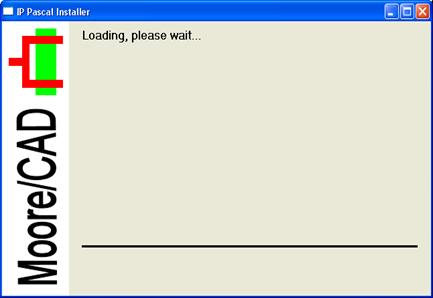
When the installer is finished loading, you will see:
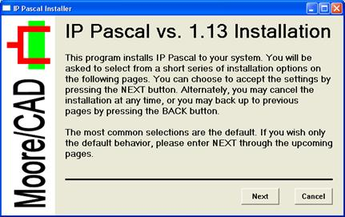
Hit "Next" to continue.
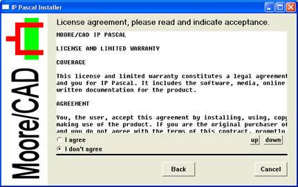
On this screen you can read the complete end user license for IP Pascal. Please scroll through and read the entire license, then indicate your acceptance by hitting the "I Agree" button. Selecting this button indicates you accept and have read this license. If you do NOT agree with the terms of the license, you may hit "Cancel", repackage IP Pascal including the CD-ROM, this manual, and all related material, and return it to Moore/CAD for a full refund.
When you hit the "I Agree" button, the "Next" button will appear. After pressing this:
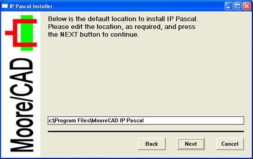
On this page, you may specify the installation location. If the default installation location is acceptable, you may just hit the "Next" button. Otherwise, you may edit the default install location, then hit the "Next" button.
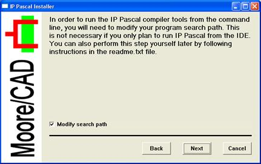
The search path is used by the command line processor cmd.exe to find IP Pascal program components. If you don't plan to run IP Pascal from the command line, you can skip this stage, by unchecking the "Modify Search Path" checkbox. If you leave the box checked and hit "Next" you will see:
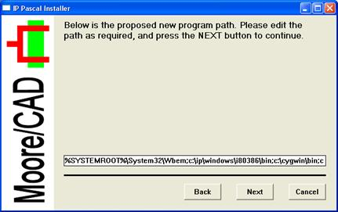
The installer will add the IP Pascal program path to the end of your existing program path. If you want to see the entire new path, and it is too long to be displayed (as above), simply click within the edit window and use the arrow, end and home keys to see the entire path.
Hit "next" to continue.
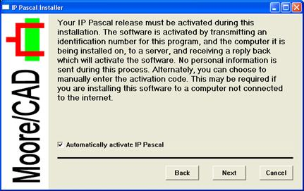
On this page you will select automatic or manual installation. It will be automatic by default. If you wish to install manually, you may uncheck the "automatically Activate IP Pascal" checkbox and hit "Next".
If your computer has no access to the Internet, you will see:
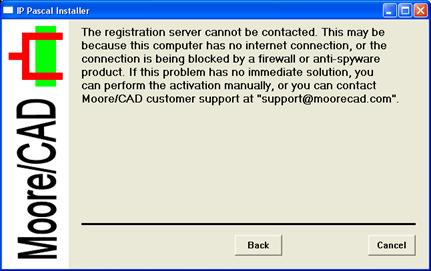
In this case, you must hit the "Back" button, uncheck the "Automatically Activate IP Pascal" button and continue. For manual activations, you will see:
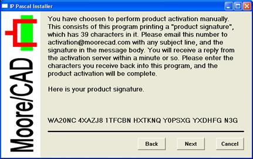
The product signature shown is a "hash" that consists of numbers identifying the IP Pascal software, your installation of Windows, and your computer. No personal information is sent. This same product signature that you see is the data that is exchanged automatically with the Internet server.
From the time you see the product signature, you have 30 minutes to complete the activation. If you don't complete activation within that time, don't worry. You can simply start the installation over again and get a new product signature.
To manually activate IP Pascal, send the entire 39 character signature in the body of an email, with any subject, to:
activation@moorecad.com
This is connected to an automated email processor, and it will email you a reply that has a 39 digit reply in it.
Hit "Next".
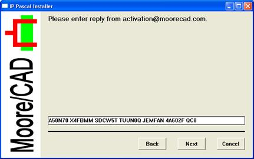
On this page, you will enter the reply you received from the server.
Hit next.
If the code was not correct, you will see the page:
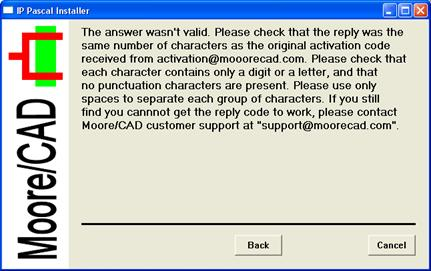
If this occurs, simply recheck the activation reply carefully for the same digits, and number of digits. Note that you can cut and paste the activation reply directly into the edit box.
When this is complete, you will see:
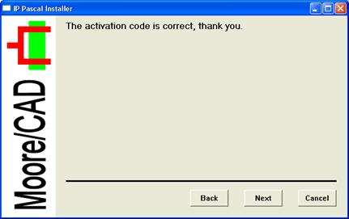
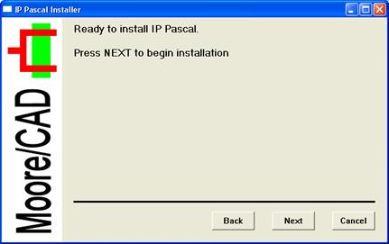
Hit "Next".
Now you are ready to install IP Pascal. Simply hit "Next" to begin the installation.
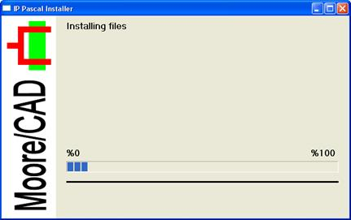
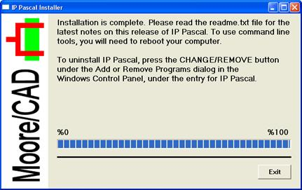
Now your installation is complete. You can hit "Exit" or close the installer to terminate.
In order to complete your installation, if you plan to use command line tools (cmd.exe), you need to reboot the system to resyncronize Windows to the new environment.
IP Pascal stands for "Intellectual Property Pascal", and the name describes the chief aim of the language. The term IP comes from the hardware world. Integrated circuits grew from parts, minor components, then to major components. Now, there is so much room on a chip that there are very few generic applications that will fully utilize all of the chips' surface outside of CPUs and graphics processors. Chips would have to, by necessity be application specific. These chips are too large to design from scratch. The concept of IP is the creation of blocks of circuitry on the chip that can be sold independently of their physical implementation.
Software actually reached a similar crossroads before hardware. Today, even small computers contain 100's of megabytes of main memory, and a single module with a gigabyte of memory is common. Paradoxically, the lifetime of applications is growing shorter as software has begun to resemble the "hit record" sales of the recording industry. To many, the outlook ahead is for shorter development cycles, "throwaway" software and, unfortunately, software that is never fully debugged before its lifetime is over.
Another point of view is that while rapid development tools are important, one way to generate new programs quickly is to modularize existing programs so that the parts can be reused in new projects. In this idea, getting software right is actually more important, and the true lifetime of code will actually be longer as old software finds a new place in the next project. This approach also tends to increase quality and lower the bug count, the opposite of the "throwaway" concept.
When microcomputers were introduced in the mid 1970's, assembly language was the major form of software development, and continued to be until the mid 1980's a decade later. One of the supposed advantages of writing in a high level language was that applications could be portable from one computer type to another. However, this never happened in microcomputers the way it had occurred on mainframe, and then minicomputers. Programs are locked into a class of computer and operating system so much that true portability is considered unobtainable.
What happened?
High level language programs on mainframes and minicomputers were largely portable because they dealt with simple I/O models. The simplest model is the batch model, which is almost unused today. Even relatively interactive applications can be represented using serial paradigms. In the early 1970s, and important advance in portability occurred with the Unix operating system, which provided portability for applications running under it largely because it was itself portable, the first operating system to do so, and for all appearances the last as well. It is not an accident that Unix used the serial paradigm throughout for the first time. Most of the devices Unix dealt with were serial ones or could be made to be serial, and serial data streams could be connected to programs in new and unique ways.
Microcomputers failed to follow the portability model of previous systems because the underlying model of those systems was supplanted. Serial models still exist, but now each microcomputer must deal with an array of I/O devices which have little or nothing in common. The days when such devices could be unified under a single paradigm are forever gone.
Programming languages followed this trend as well. When serial/batch paradigms were paramount, these I/O forms were actually built into the language, and the read, write, and similar language output systems are leftovers of the serial age. Now, virtually no programming language attempts to deal with the complexity of modern I/O by using built in language features. Rather, the modularity of the language is increased, and the new I/O models are handled as modules, and increasingly, objects.
Although I would never advocate building advanced I/O modules into a language, I don't think it makes sense anymore to simply create serially oriented languages, add modularity and objects, and then leave it to the user to work out the rest. Now, along with the language goes a platform for the programs to run on. The platform is a collection of modules and/or objects that define an extensible series of common I/O and system functions for the program. The platform is the SAM or System Abstraction Model that gives a program the ability to run on most or all existing computers without change.
There are various ranges of portability. When asked the question:
"If you have to rewrite an application in another language, what is the portability of that program ?"
Many programmers would answer:
"Zero portability. The program was thrown away and started over"
However, in actual projects that did such a language to language transfer of an application, what they reported was surprising. Typically greater than %50 portability, as measured by the number of man-hours to get the new program running vs. Creating the old, disregarding improvements it was decided to make to the program during the transfer.
The reason for this is the work was not, in fact, performed from scratch, and the old program was available as a reference point for the new program. Most of the algorithms for the code could be directly translated.
With this in mind, lets create some categories of portability:
Portable
A program that is simply portable does this by isolating its system and device dependent code to a collection of procedures that can be changed for new implementations. Using this definition of portability, the work to transfer a program to a different operating system and/or machine can be below %5-10 percent of total implementation costs. This is typically the portability mode used between differing machines and operating systems.
Very portable
This is a program that can be recompiled to transfer it, without programmer effort other than running the translation tools. This can reduce the translation work to under %1. This is typically the portability mode used between two different types of machines running the same operating system, and is the common porting method for Unix applications.
Ultra portable
Ultraportable is usually defined as a program that can be run under different systems completely without change. This is true "write once, run anywhere". This is the mode for Java and it's interpreted applications.
While the definition of an ultraportable application could require an interpreter, it need not. An application that only requires linking can also run without change on different computers and operating systems.
The "write once, run anywhere" idea can be applied to existing languages. To create an existing language that supports it, they key is the SAM or platform the language is used with.
IP Pascal is Pascal updated to live in the IP age. The biggest difference between IP Pascal and most languages like it is the platform modules that define I/O for IP Pascal have been specifically designed into the language, and the language designed around them. What does this mean? Well, the most unusual and important aspect of IP Pascals' porting platform is that whereas virtually all other platforms and operating systems in common use, including MacOS, X Windows, Windows, Windows COM, Windows VCL and others require the I/O interface techniques the implementation languages were created with be dropped, IP Pascal does not. IP Pascal supports every program and all I/O models back to the original Pascal language creation back in the 1970's. The idea of the IP portability platform is to establish a clean paradigm that is:
� Easy to port (treats each I/O device in a general way, and only supports general features)
� Backwards compatible
� Easily extended to new features
There have been other solutions to bring older, non-windowing, non-graphical and non-object oriented programs to the current environments. However, these are usually one-time solutions designed to recover the functionality of "legacy" programs with no intent to ever change them again, unless they are rewritten. What is different about IP Pascal is that the same model used to port older programs to newer I/O models is a backward compatible base for the newer I/O model. Code for the newer model I/O can be added at any time. For example, a non-graphical, non-windowing program can be moved to a graphical window, and then graphical and windowing features added to it as slowly or as quickly as desired. The "rewrite" model is not required.
In addition, IP Pascal contains a number of new features designed to enable module and object building. You won't find every extension ever thought of for Pascal in IP Pascal. It was only extended where there was a clear need for a new feature that could not be done reasonably using old style Pascal. Further, IP Pascal is built on a %100 ISO/ANSI standard foundation. Not only do standards based programs run under IP, but they work with all of IP Pascal's new I/O modes as well.
The language Pascal was conceived by Niklaus Wirth in the late 1960's as a simple and clean successor to the language Algol 60. A draft of the language was presented in 1968, and the first compiler for the language appeared in 1970. In 1973 the language was revised into its final form, and the revised "Pascal: Users Manual and Report" [Jensen & Wirth] appeared.
The original Pascal ran on a CDC 6400 60 bit word computer. By the end of the 1970's there were more than 80 different computer installations of Pascal, and UCSD (University of California at San Diego) produced a very popular version of the language for microcomputers.
In 1981, the ISO (International Standards Organization) and the ANSI (American National Standards Institute) both approved standards for the language. The ISO standard included one extension for the language, conformant arrays, designed to improve library routines in Pascal.
Despite almost fanatic popularity of the language in the late 1970's and early 1980's, Pascal began a long slide in use in the mid 1980's, and today lies behind C/C++, Fortran and Ada (a successor language) in popularity. The primary reasons for this were the lack of system oriented versions of Pascal, and, despite the standard, fragmentation of the original language into dialects, such as UCSD and Turbo Pascal. The Pascal user community usually refers to the cleanliness of the language and strong type protection as reasons to stay with the language.
IP Pascal was begun as a compiler written in assembly language in 1979, and reached full operational status in early 1980. It compiled code directly to an output program. In 1980, a redesign was done to increase the optimization level of the compiler and interface with a standard linker system.
The compiler had no express modularity support, and used the directives external and global to denote routines and data that were to be shared across separately compiled modules.
This first version of IP Pascal saw service from 1980 to 1987, and during that time major sections were rewritten in Pascal. After that, the processor it was used on was retired (a Z80), and development switched to IBM-PC based computers with off the shelf compilers.
Beginning in the 1990s, the suppliers of high quality standards based Pascal compilers began to cease operation or stop shipping compilers for Pascal. This was partly because of the declining popularity of Pascal, and partly because of a general decline in all languages on the IBM PC. Factors in this change were the overwhelming popularity of the Microsoft language development families, and also because of the rise of the GNU free compiler series.
By 1992, with the start of Windows NT, it became obvious that a 32 bit compiler with good graphical integration and good support was needed, so the decision was made to use IP Pascal once again. In 1993 the two remaining sections of assembly language were rewritten in Pascal, a code generator written for the 80386 family, and an assembler written.
In 1994, the compiler operated in simulation, then in 1995 native binaries for the 80386 and Windows were produced, and the compiler and support tools were recompiled in IP Pascal itself, completing the bootstrap.
In 1996 a series of language extensions were completed for IP Pascal, including the all-important general arrays. Since 1996 most work on IP Pascal has been on the porting platform for it.
� Full standards compliance with ANSI/IEEE770X3.97-1983 and ISO dp7185 Level 0 Pascal language standards.
� High optimization
� High degree of machine/operating system independence
� Includes machine/operating system independent graphics library
� Can operate directly to native operating system calls
� Variable length arrays, modularity, file handing and many other enhancements built into the language and selectable by option
� Parallel tasking/multithreading directly supported by the language
� Parallel tasking model is inherently secure via the monitor concept
Throughout this manual, you will see syntax descriptions in Extended Bacus-Naur Format. This is a metalanguage that exactly describes the syntax of language constructs that IP Pascal uses. The rules of EBNF as used here are:
'literal'�������������������� The characters between the quotes appear literally.
[option]����������������� The contents between the brackets may or may not appear.
...��������������������������� The previous item may be repeated any number of times.
[option]...�������������� The contents between the brackets may appear 0 or more times.
a | b����������������������� Either item a or item b may appear.
item����������������������� The name of a syntax element describes the element that appears.
item <= contents���� The syntax element consists of the contents following.
Here's a typical example, a signed integer:
signint <= [
'+' | '-' ] digit [digit]...
digit <= '0' |
'1' | '2' | '3' | '4' | '5' | '6' | '7' | '8' | '9'
Typically, a syntax definition is not introduced again after
the first definition.
To use IP Pascal in a strictly ISO 7185 compatible mode, you will need to know the information in this chapter. It contains all of the details of the standard that are left implementation defined.
The implementation defined characteristics of IP Pascal in summary are:
Language Construct����������� IP
Pascal Detail
Maxint�������������������������������������� 2147483647.
Format of integer���������������������� 32 bit 2's complement binary.
Character set���������������������������� American ASCII 7 bit, stored and processed as 8 bit. The 8th bit is ignored in source files.
Elements in a set���������������������� 256, numbered as 0 to 255.
Maximum size of source line��� 200 characters.
Maximum size of labels����������� 200 characters (one full line).
Size of real������������������������������� -1.8e308 to +1.8e308.
Format of real�������������������������� 64 bit IEEE standard 754
Appearance of exponent���������� The exponent character is lower case "e".
File I/O������������������������������������� Uses "lazy I/O", allowing for interactive files.
Values written for boolean������� Lower case "false" and lower case "true".
Maximum size for any
structure, program, or program
section�������������������������������������� Limited only by the size of the address space for the processor.
The following default field widths are used:
Type�������������� Field
(characters)
Integer������������ 11
Boolean���������� 5
Character�������� 1
Real���������������� 22
IP Pascal is implemented in 32 bits. The value of maxint is 2147483647. The compiler uses ASCII 7 bit encoding throughout, both in the compiler and in the generated code. However, the compiler accepts any character code in the range 0..255, and will leave such codes intact.
ASCII control characters (characters with values between 0 and 32) are treated as equivalent to spaces in the compiler and it's runtime utilities. Any control characters may be used to format source without effect on the compilation (for example, inclusion of form-feeds).
Sets are implemented as having from 1..256 elements, so that all of the ASCII characters, as well as other specially defined characters in the range 0..255 can be represented as a set. Only ordinals in the range 0..255 can be represented in a set.
The maximum size of any array or structure, the size of a generated program, the size of any local or global data area, is limited only by available memory. The maximum size of program or procedure, maximum nesting level of included files that can be compiled is limited only by available memory.
The maximum size of the command line acceptable, the maximum size of any source line, string constant, program label or goto label, is 250 characters.
The format of the standard type real is a 64 bit IEEE standard real format. It can represent numbers in the range -1.8e308..+1.8e308. The exponent character output for reals is a lower case "e".
Files under IP Pascal are implemented using the "lazy I/O" method, which makes IP Pascal applicable to interactive applications.
The strings output for boolean are output in lower case.
The types:
Text
and
file of char
Are not equivalent, as allowed for by the standard. Only on a text file may writeln, readln, eoln and conversions to/from ascii format be applied. A file of char is simply a file whose elements are characters, without special interpretation, including control characters, and including the characters that normally make up the end of line sequence.
The following identifiers are added as reserved under IP Pascal, and may not appear as program identifiers, unless the "standard" option is enabled:
Additional Reserved Words
Module���������� process��������� monitor��������� share������������� uses
private����������� external��������� forward��������� xor����������������� view
fixed��� ����������� class�� ����������� atom�������������� construct������ destruct
is�������������������� overload�������� override
Note that the words forward and external are reserved words under IP Pascal. They perform the same function as the equivalent directives under standard Pascal, and so maintain compliance with the standard.
The standard leaves the linkage of header files to external files as undefined, except in the case of the input and output files. IP Pascal also implements the header files error and list, and the meaning of these files is as follows:
File Identifier������������ Meaning
input��������������������������� Input from the user console, or redirected
output������������������������� Output to the user console, or redirected.
error��������������������������� Output to the user console, not redirected.
list������������������������������ Output to the default printing device. Requires a page to be executed on the file before output will appear.
The error and list files share the property of the input and output files that they need not be declared, and are by default type text.
Files that appear in the header other than the above names are automatically linked to external files via the command line. See section 3.15. These files must be typed in the program as specified in the standard, and will be treated as byte files mapped into the element type of the file. The exact mapping of each type to a byte file is processor dependent, and you will need to consult the processor implementation information in this manual to determine it. However, the following types are universal to any processor implementation:
Type ������������������������� Mapping
text������������������������������� American ASCII characters in 8 bit bytes, with end of line and end of file formatting.
file of char������������������� American ASCII characters in 8 bit bytes, without any formatting.
file of 0..255���������������� Bytes.
file of -128..127����������� Bytes.
In addition to requiring a type, nonstandard header files need to be specifically reset or rewritten using reset and rewrite. These files close automatically with the program end, and are preserved after file completion in their command line specified names.
To use IP as a completely standards obeying implementation, the standard mode switch is recommended (see section 4.2).
It is, however possible to leave the standard switch off and compile completely standard programs. IP Pascal is specifically designed so that the extended features do not interfere with the standard language features. It is also possible to make minimal use of extended features if desired, as the extended features use types and methods defined in the standard. For example, opening files by name allows use of a standard Pascal string type.
The exception to this is the extended keywords of IP Pascal. The extra keywords, covered in section 3.1.2, must not be used in standard conforming source with the standard switch off. In addition, the directives forward and external are promoted to reserved words in the IP Pascal language.
The IP base language consists of the language and built in functions and procedures for it. For the use of IP Pascal as a standard language processor only, the user should consult a manual for the standard language and use the standards compliance switch described in section 4.2.
The language definition for Pascal by necessity contains circular references, and a beginner to Pascal will have to read the description twice.� To aid this process, I have added forward references to sections that underpin concepts being discussed in the current section with the notation:
Sec. 3.11.5
Where 3.11.5 is the number of the section that is being referenced.
Pascal source consists of identifiers, keywords, numbers, strings, and special character sequences.
A pascal identifier must begin with "a" to "z" and "_", but may continue with "a" to "z", "0" to "9" and "_". There is no length limit on identifiers other than the limit on the length of a source line, which is 200 characters. Identifiers, keywords, numbers and special character sequences cannot cross the end of a line or have spaces or other separators within them.
There must be at least one space or separator between an identifier and a reserved word.
Typical identifiers are:
Valid�������������������������� Invalid
mysymbol������������������� my symbol
vast_function�� ����������� 9quarters
begin first������� ����������� beginfirst
rotate_98��������
Identifiers are not case sensitive either in the compiler nor the linker, and any mix of case can be used at any time.
Although not in common use in IP Pascal, the use of identifiers that have "_" in front, such as:
_special
Should be avoided as these kinds of labels often have special system meanings, especially at link time (the convention began with the C programming language).
Keywords (or reserved words) appear just as identifiers, but have special meaning wherever they appear, and may never be used as identifiers:
Reserved Words
and����� ����������� array�� ����������� begin� ����������� case��� ����������� const
div������ ����������� do������� ����������� downto���������� else���� ����������� end
file������ ����������� for������ ����������� function��������� goto��� ����������� if
in�������� ����������� label��� ����������� mod��������������� nil������� ����������� not
of�������� ����������� or������� ����������� packed����������� procedure����� program
record ����������� repeat ����������� set������������������ then��������������� to
type���� ����������� until��������������� var������������������ while�������������� with
module���������� process��������� monitor��������� share������������� uses
private����������� external��������� forward��������� xor����������������� view
fixed��� ����������� class�������������� atom
Note that in the standard external and forward are equivalent to identifiers in the language, which means that they could be used elsewhere in the program. In IP Pascal, these are promoted to true reserved words, and may not appear as identifers anywhere in the program.
A number can appear in both integer and real form. Integers will appear as a sequence of digits:
83
00004
Are valid integer numbers. Besides the standard decimal formats, you can also specify other radixes:
Value������������� Radix������������� Valid digits
19���������������������� Decimal���������� 0..9
$a5�������������������� Hexadecimal��� 0..9, a, b, c, d, e, f
&73������������������� Octal��������������� 0..7
%0101�������������� Binary������������� 0..1
For each radix, it is an error if the number contains a digit not valid for the radix.
Using a radix other than decimal does not change the syntax of a digit. Ie.:
&34589
Doesn't create an octal number &345 followed by decimal 89, its an error.� However, the converse is not true:
$afalphabeta
In this case, the appearance of a hexadecimal does open up the context of numbers to 'a'..'f', so if the intent was for hexadecimal $af to be followed by alphabeta, instead the first character of alphabeta would be interpreted as a digit, and the resulting indentifer is lphabeta.
For a number to be taken as "real" (or "floating point") format, it must either have a decimal point, or use scientific notation:
<num>[.<num>][e<sign><num>]
Examples:
Valid�������������� Invalid
1.0��������������������� 1.
1e-12����������������� 1e-12e12
0.000000001����� 1.e2
At least one digit must exist on either side of a decimal point.
Strings are made up of a sequence of characters between single quotes:
'string'
The single quote itself can appear as two single quotes back to back in a string:
'isn''t'
In string or character constants, an ASCII based escape sequence may occur. This is of the form:
\<memonic>
or
\<number>
The first form allows the use of a 2 to 4 letter mnemonic, which is one of the standard mnemonics from the ASCII code chart, as:
American ASCII Escape Codes
\nul ������ \soh���� \stx����� \etx����� \eot����� \enq���� \ack���� \bel����� \bs
\ht��������� \lf�������� \vt������� \ff�������� \cr������� \so������ \si������� \dle����� \dc1
\xon������ \dc2���� \dc3���� \xoff��� \dc4���� \nak���� \syn���� \etb����� \can
\em������� \sub��� \esc���� \fs������� \gs������ \rs������� \us������ \del
The second form allows any integer to directly state the ordinal value of the character. This includes '$', '&' and '%' radix specified numbers:
\0
\$12
\%10101
If the next character after the '\' is not a mnemonic or number, then the next character is forced, or interpreted literally. This means that:
'\\'
Is the '\' character itself. Forcing also helps with aliasing problems, where the characters following a desired escape sequence look like part of the sequence:
'time flys\123 ways';
If what is really wanted here is an embedded control character 12, we need to use:
'time flys\12\3 ways';
Which forces the '3' to stand on its own.
A special character sequences are one of the following:
Special Character Sequences
+ -���������� *��������� /���������� = �������� <��������� >
[ ]���������� .���������� ,���������� :���������� ;���������� ^
( )���������� <>������� <=������� >=������� ..��������� @
{ }��������� (*�������� *)�������� (.��������� .)
Note that these are just aliases for the same character sequence:
Sequence������ Alternative for
@���������������������� ^
(.����������������������� ����������� [
.)����������������������� ����������� ]
(*���������������������� {
*)���������������������� }
A Pascal program appears as a nested set of "blocks", each of which has the following form:
block_type name '('
parameter [, parameter]... ')' ';'
'label' identifier[',' identifier]...
'const' identifier '=' identifier ';'
�������
[identifier '=' identifier ';']...
'type' identifier '=' type ';'
������
[identifier '=' type ';']...
'var'�
identifier[',' identifier]...':' type';'
������
[identifier[','identifier]...':' type';']...
[block]...
begin
�� statement[';' statement]...
end[.|;]
There are seven types of blocks:
Program���������� Contains the main program, where the program starts.
Procedure������� Contains a program routine.
Function���������� Contains a function that can be used in an expression.
Module������������ Contains separately compiled routines, types, constants and variables.
Process����������� Contains a parallel executed process within the program.
Monitor����������� Contains parallel tasking safe code for all programs and processes.
share���������������� Contains a block with routines only that is multitasking safe.
Every program must contain a program block. Each individual source file must contain one and only one program, process, monitor or share block. Each block has two distinct sections, the declaration and statements sections. The declarations immediately before a statement section are considered "local" to that section.
The declaration section builds a description of the data used by the coming statement section in a logical order. For example, constants are usually used to build type declarations, and type declarations are used to build variables, and all of these may be used by nested blocks.
Program blocks and parallel tasking blocks are discussed in section 3.16.
A declaration in IP Pascal introduces an item that will be used in the block where it is declared. All program elements must be declared, and all program elements must be declared within a block.
Labels denote the target of any goto's appearing in the block. Labels have the same rules as identifiers, but are also allowed to appear as numbers:
label 99,
����� exit_loc,
����� 1234;
Are valid labels.
Goto labels use a special rule that allows them to "appear" to be numbers. The "appearance" of a number means that:
label 1,
����� 01,
Are the same label.
Constant declarations introduce fixed value data as a specified identifier:
const x = 10;
����� q = -1;
����� y = 'hi there';
����� r = 1.0e-12;
����� z = x;
����� s = ['a'..'z', '0'..'9'];
Are all valid constant declarations. Constants can be integers, reals, characters, strings and sets.
Constants can also consist of constant expressions. Constant expressions are not the same as regular program expressions, only have constants as operands, and are limited in the operations that can be performed:
Priority One
not x����� For boolean operands, finds the boolean not. For integer operands, finds the inversion of all bits.
Priority Two
x * y����� Multiplication.
x div y�� Integer
division.
x / y������������������� Real division.
x mod y Integer modulo.
x and y�� For boolean operands, finds the boolean 'and'. For integer operands, finds the boolean 'and' of all bits.
Priority Three
-x���������� Negation.
+x���������� Positivition.
Priority Four
a+b�������� Addition.
a-b��������� Subtraction.
a or b���� For boolean operands, finds the boolean 'or'. For integer operands, finds the boolean 'or' of all bits.
a xor b�� For boolean operands, finds the boolean 'xor'. For integer operands, finds the boolean 'xor' of all bits.
Example:
const mylimit = genlim+(2*unit);
The priority of operands is the same as for normal expressions. It is an error to perform boolean operations on negative integers.
Set constants are built of constant elements, which can be constant expressions.
The type declaration allows types to be given names, and are used to create variables later:
type x = array [1..10] of integer;
���� i = integer;
���� z = x;
Types can be new types, aliases of old types, etc.
Variables set aside computer storage for a element of the given type:
var x, y: integer;
������ z: array [1..10] of char;
The exact amount of storage used by any variable is dependent on the target processor.
A block can be declared within a block, and that block can declare blocks within it. There is no defined limit as to the nesting level. Because only one outer block may exist, by definition all "sub blocks" must be either procedure or function blocks. Once defined, a block may be accessed by the block it was declared in. But the "surrounding" block cannot access blocks that are declared within such blocks:
program test;
procedure junk;
procedure trash;
begin { trash }
�� ...
end; { trash }
begin { junk }
�� trash;
�� ...
end; { junk }
begin { test }
���� � junk;
���� � ...
end. { test }
Here test can call junk, but only junk can call trash. Trash is "hidden" from the view of test.
Similarly, a subblock can access any of the variables or other blocks that are defined in surrounding blocks:
program test;
var x;
procedure q;
begin
end;
procedure y;
begin
�� q;
�� x := 1
end;
begin
�� y;
�� writeln('x')
end.
The variable "x" can be accessed from all blocks declared within the same block. It is also possible for a block to call itself, or another block that calls it. This means that recursion is allowed in Pascal.
Fixed items are a cross between variables and constants. They are declared and accessed similar to variables, but have their contents specified during declaration, and cannot be modified during the program run:
'fixed' identifier: type '=' initalizer
The contents of the fixed is specified by the initalizer.
The initalizer is a list of the contents in the fixed:
fixed i: integer = 12;
����� c: char = 'r';
����� v: packed array [1..10] of char = definition';
The initalizer for a simple type is a constant expression of a compatible type to the fixed type. Note that if the type is a string (defined in 3.4.12), it can be initalized with a constant string.
Two structured types can be fixed items, arrays and records (the string is a special case of an array). They have a special syntax:
'record' const[',' const] 'end' ';'
'array' const[',' const] 'end' ';'
Examples:
fixed a: array [1..5] of integer = array
������ 5, 4, 3, 2, 1
end;
fixed r: record
�� i: integer;
�� b: boolean
end = record
�� 78,
�� true
end;
fixed aa: array [1..4, 1..3] of integer = array
�� array 1, 2, 3 end,
�� array 3, 2, 1 end,
�� array 65, 87, 23 end,
�� array 109, 32, 19 end
end;
Fixed types behave identically to variables, except that they cannot be modified. They may not:
1. Appear on the left side of an assign.
2. Be passed as VAR parameters to any procedure/function.
3. Be the object of a 'read'/'readln' call.
4. Be the object of a 'new' call.
Array values appear from lowest value index to highest, and from leftmost index to rightmost. Record values appear from first to last element in declaration order. In the case of variant records, the value of the tagfield must appear as a constant even if it does not exist in the record, and the elements that appear after must match the fields in the variant the tagfield constant selects. Each element of the type must have an associated constant value in the initializer. Files, pointers, and general arrays may not appear as fixed types.
Example:
fixed r: record x, y: integer;
��������������� case b: boolean of
������������
������������������ true: (i: integer);
������������������ false: (c: char)
���� �����������{ end }
�������� end = record 1, 2, false, 'a' end;
Fixed types are an efficient way to declare tables of known data.
The declaration sections described above can appear in any order, but the rule that a program definition must appear before its use still applies.
Declarations establish the domain of an identifier or label, and there are two basic rules for that declaration:
1. There may not a be a conflicting use of the identifier or label in the domain.
2. The indentifier or label must be declared before use, with one exception, pointers, covered in section 3.4.15.
The first rule means the identifer or label cannot be used for another purpose in the same block:
program test;
type x = integer;
procedure y;
var y: x;
�� �x: char;
Here, it is an error because x has two meanings in the same block, as a type, and as a variable of type char.
The second rule says that identifiers and labels must allways be declared before use:
{ incorrect example }
program x;
var y: q;
type q = integer;
Here, the type q is used before its declaration as an integer.
Several types are predeclared in Pascal. These include integer, boolean, char, real and text. Predeclared types, just as predeclared functions and procedures, exist in a conceptual "outer block" around the program, and can be replaced by other objects in the program.
Types in Pascal can be classed as ordinal, real and structured. The ordinal and real types are referred to as the "basic" types, because they have no complex internal structure. Ordinal types are types whose elements can be numbered, and there are a finite number of such elements.
The basic ordinal type is "integer", and typically it represents the accuracy of a single word on the target machine:
var i: integer;
A predefined constant exists, "maxint", which tells you what the maximum integral value of an integer is. So:
type integer = -maxint..maxint;
Would be identical to the predefined type "integer". Specifically, the results of any operation involving ordinals will only be error free if they lie within -maxint to +maxint.
Although other ordinal types exist in Pascal, all such types have a mapping into the type "integer", and are bounded by the same rules. The "ord" function can be used on any ordinal to find the corresponding integer.
The range of integer is choosen to be either the natural word size of the underlying machine, or the "minimum useful size" on the target machine. For example, an 8 bit processor typically has an integer size of 16 bits even though that is not its natural word size, because 8 bits would not give adequate precision for reasonable general purpose programming.
In addition to integer, several types exist that are compatible with integer, but are classified as "overrange" types. The following is a list of types in the integer family.
Type�������������� Span
Integer������������������� The "natural" negative and positive numbers in a basic machine word or element.
Cardinal����������������� The positive numbers in a basic machine word or element.
Longint������������������� The negative and positive numbers in an extended or "long" integer.
longcard���������������� The positive numbers in an extended or long integer.
The predefined types besides integer can contain overrange values. An overrange value is a value that exceeds the span -maxint to maxint. The rules of standard Pascal garantee that any mathematical result will be accurate if it falls in this range, which implies that any result may be promoted to a type that can contain this range.
Overrange types aren't automatically promoted the same way that integer types are. When an expression containing overrange types or values appears, a result type is choosen that is most likely to contain the span of values of all types. For example:
var i: integer;
��� l: longint;
begin
�� writeln(i+l);
In this example, the calculation i+l will only be garanteed if it lies in the range formed by the lowest value of either integer or longint types to the highest value of both types.
If there is not a type that will contain the span of both types, then the next best signed type is choosen.
The following table shows what promotion occurs when two types are used in the same expression.
Integer����������� cardinal��������� longint����������� longcard
integer���� ��������������� integer���������������� longint����������������� longint����������������� longint
cardinal��� ��������������� longint� ��������������� cardinal������������������������������� longint����������������� longcard
longint���� ��������������� longint����������������� longint����������������� longint����������������� longint
longcard� ��������������� longint����������������� longcard�������������� longint����������������� longcard
Even the standard integer type can contain overrange values. On a signed 2's complement machine, the value -maxint-1 is a valid, but overrange value.
The type cardinal is available to give all of the positive only numbers in a standard machine word or element. cardinal may have a greater span of values in the positive number range than integer, but use the same word size, and be as efficient as integer. It is possible that cardinal may only contain the values from 0 to maxint, that is, use the same precision as integer.
The type longint occurs because there are some program operations necessary where the precision needed is more than the integer size on a given machine can deliver. For example, keeping time or expressing the total size of a file may exceed the capabilities of a 16 or 32 bit machine word. Use of longint implies that the programmer understands that operations using it may take more program time and code space than operations using integer.
The type longcard is similar to longint, but contains only positive values.
There is no garantee that longint or longcard types can contain values larger than integer. In fact, for processors where the integer size is 64 bits or more, it is very likely that longint is the same as integer, and longcard is the same as cardinal.
The maximum and minimum values of each of integer, cardinal, longint and longcard can be found with the min and max functions.
max(integer)
min(integer)
max(cardinal)
min(cardinal)
max(longint)
min(longint)
max(longcard)
min(longcard)
It is not true that max(integer) and min(integer) yield the same value as maxint and -maxint, respectively. As mentioned, the signed 2's complement typically used on modern machines contain an extra value below -maxint.
Overrange types are more complex than standard integer types. However, overrange evaluation never means that IP Pascal will discard the results of calculations silently. Any numeric overflow will generate an error, as long as overflow checking is enabled. IP Pascal's choice of what result type to use simply determines if a particular calculation can be performed or not.
If the default calculation range that IP Pascal will use is not proper for a particular calculation, then the result type can be specified using a"type restrictor" [Sec. 4.4.7].
Enumerated types allow you to specify an identifier for each and every value of an ordinal:
type x = (one, two, three, four);
Introduces four new identifiers, each one having a constant value in sequence from the number 0. So for the above:
one�� = 0
two�� = 1
three = 2
four� = 3
Enumerated types may have no particular ordering:
type y = (red, green, blue);
Or some relationship:
type day = (mon, tue, wed, thur, fri, sat, sun);
Here the fact that "day"s are numbers is usefull because the ordering has real world applications:
if mon < fri then writeln('yes');
And of course, subranges of enumerated types are quite possible:
type workday = (mon..fri);
Enumerated types can be converted to their integer representation by ord, and from their integer representations to the enumerated type by a type converter of the form:
<type>(<integer>);
Typical convertions are:
var i: integer;
��� d: workday;
begin
�� i := ord(d); { find integral value of d }
�� d := workday(1); { find equvalent of 1 }
The only predefined enumerated type is "boolean", which could be declared:
type boolean = (false, true);
However, booleans cannot be cross converted (being enumerated types), this user created type could not in fact be used just as the predeclared one. Booleans are special in that several predefined procedures, and all of the Comparison operators ("=", ">", etc.) give boolean results. In addition, several special operators are defined just for booleans, such as "and", "or" etc.
Character types hold a single character code from the American ASCII standard codeset. This is a 7 bit code, however, it is considered to have 256 codes for 8 bits, with the 128 code numbers above 127 being undefined. These usually have special meaning in the operating system, and it is common for special characters otherwise unavailable in the 7 bit code to be implemented in those codes. IP Pascal never places codes with the 8th bit set in output binaries. Characters read or written with the 8th bit set are are left as is, and the operating system is expected to mask off the 8th bit when used for parity purposes. Typically, the 8th bit codes are used for special character sets, including the ISO code pages.
A character declaration appears as:
var c: char;
Character values can also be converted to and from integers at will, but only by using the special functions to do so:
ord(c); { find integer value of character }
chr(i); { find character value of integer }
Subrange types are simply a voluntary programmer restriction of the values an ordinal type may hold:
type constrained = -10..50;
(the notation x..y means all values from x to y inclusive.) It is an error to assign a value outside of the corresponding range to a variable of that type:
var x: constrained;
begin
�
�� x := 100; { invalid! }
But note that there are no restrictions on the use of such a type:
writeln('The sum is: ', x+100);
Here, even though the result of x+100 is greater than the type of x, it is not an error. When used in an expression, a subrange is "promoted" to the same precision as an integer, and so is compatible with the base type, and other subranges of that type.
Subranges can be declared of any ordinal type:
type enum = (one, two, three, four, five, six, seven,
���� ������������ eight, nine, ten);
var e: three..seven;
var c: 'a'..'z';
Etc.
Because subranges are promoted to the accuracy of integer before processing, the programmer need not worry about the accuracy limits of:
var a: 0..10;
begin
�� a := 5;
�� a := 5*10/12;
Ie., the expression 5*10 (50) would be larger than the base type of a can hold, but is restored to the accuracy of a by the divide by 12. Accuracy promotion is good in that any expression intermediate result that remains within the bounds of -maxint..maxint will be valid, it may not be desirable in other cases:
type byte = 0..255; { a byte }
var b: byte;
begin
�� b := b*10/r;
In this case, the results of b*10/r might fit into a byte register on the target machine, and for some machines, for example an 8 bit microprocessor, there can be significant savings from restricting the value to a byte subrange. In this case, a "type restrictor" is appropriate:
b := byte(b*10)/r;
The restriction of the divide is not nessary, because divide reduces the range of the result.
In many cases it is not nessary to use a type restrictor:
b := b+1;
In this case, the restrictor is not� required, even though the result of b+1 could be greater than the range of type byte. The reason is the compiler knows the range of the result because of the assign to b.
Real types, or "floating point", allow approximations of a large range of numbers to be stored. The tradeoff is that reals have no direct ordinality (cannot be counted), and so have no direct relationship with integers. Real types are the only basic type which is not ordinal.
var r: real;
Reals are represented in the 64 bit IEEE floating point format.
Integers are considered "promotable" to a real. An integer can become a real at any time without a loss of precision. However, the converse is not true, and one of the standard functions round or trunc must be used to convert back to integer:
var i: integer;
��� r: real;
begin
�� r := i;
�� i := round(r);
�� i := trunc(r);
Besides the standard real, IP Pascal has a short real type that uses the IEEE 32 bit format:
var r: sreal;
An sreal can be used anywhere a standard real can, but with less precision. Specifically, short reals are printed in the same field width as standard reals, and in fact are promoted to standard real before being written to a text file, and promoted from standard real to short real after being input from a text file.
Short reals do not have enough precision to contain all of an integer, so when assigning an integer to a short real, there is a loss of precision of 2-3 decimal places. You will not receive a warning that this precision is being lost.
The IEEE floating point format provides the capability to perform so called "gradual underflow", where significant digits of a floating point number are lost as it reaches closer to zero than the floaint point system can exactly represent. In his book series "The Art of Computer Programming", D. E. Knuth recommends against the idea that a very small number can be equated to zero, that underflow of a number should be treated as seriously as overflow. This advice has been incorporated into IP Pascal, and where possible, gradual underflow is disabled. The programmer is responsible for both overflow and underflow of floating point numbers.
Reals can have a value of NAN or "Not A Number" in the IEEE floating point system. For example, division by zero can create a NAN. IP Pascal never generates NANs and instead takes an immediate error exception for such results. However, it is possible for a NAN value to be passed by assembly code, the operating system, or another programming language. In this case, any attempt to handle a NAN value is an immediate error.
A structured type is a type with a complex internal structure. In fact, the structured types all have one thing in common: they can hold more than one basic type object at one time. They are structured because they are "built up" from basic types, and from other structured types.
The structured types are arrays, records, sets, and files:
var a: array [1..10] of integer;
��� b: record begin i: integer; b: boolean end;
��� f: file of char;
Structured types can be "packed", which is indicated by the keyword "packed" before the type declaration. Packing dosen't change the function of the program. Packing allows the structure to use only as many bits as needed on the target processor.
On a byte accessable machine such as most microprocessors are, packing is less important than it was on the mainframe machines that Pascal originally came from. However, packing can have important applications when operating on formats packed by the operating system, or on very large tables of data. The best example of this is:
var a: packed array [1..1000] of boolean;
Each boolean variable, as packed, only takes a single bit. Without the packing, this structure would take 7 times as much space.
Packing has various effects on various structures. Packing a set is meaningless, because sets are already packed into bits. However, packing a structure that contains sets is possible, because sets vary in size.
Packing an array of characters has no effect because characters are defined as 8 bits in size, even though 7 bits are officially defined. If you really want to achieve a packed 7 bit character array, the following code will perform it:
type ascii7: 0..127;
var a: packed array [1..1000] of ascii7;
��� c: char;
begin
�� a[5] := ord('u');
�� c := chr(a[10]);
In other words, the character values from 0..127 are encoded directly as a subrange. The same technique can be used to achieve more extreme packing, by forming a subset of only the required characters, such as 'a'..'z', '0'..'9', and forming a special ordinal code for that and packing it.
Set types are unique to Pascal. A set type can be thought of as an array of bits indicating the presence or absence of each value in the base type:
var s: set of char;
Would declare a set containing a yes/present or no/not present indicator for each character in the computer's character set. The base type of a set must be ordinal.
Sets are very efficient in storage efficentcy, and use fast bit set and test operations, and boolean operations on the entire set at once.
IP Pascal restricts sets to the ordinal base values 0..255, which equals a maximum of 32 bytes of storage.
IP Pascal only uses as much space as required to both store and operate on a set. In particular, sets that fit in a 32 bit machine word are especially efficient.
The most basic structured type is the array. Pascal is unusual in that both the upper and lower bounds of arrays are declared (instead of just the upper bound or length), and that the index type can be declared:
var a: array [1..10] of integer;
Would declare an array of 10 integers with indexes from 1 to 10. You may recognize the index declaration as a subrange, and indeed any subrange type can be used as an index type:
type sub = 0..99;
var a: array [sub] of integer;
Arrays can also be declared as multidimensional:
var a: array [1..10] of array [1..10] of char;
There is also a shorthand form for array declarations:
var a: array [1..10, 1..10] of char;
Is equivalent to the last declaration. A special type of array definition is a "string". Strings are arrays of packed characters, with integer indexes, whose lower bound is 1:
var s: packed array [1..10] of char;
A string type has two special features that any other array of characters does not have. First, a string can be written to a text file as a whole, instead of being written character by character. Second, strings can be assigned from string constants:
s := 'declare it';
Note that the string constant must be the exact size of the array. This is the often decried "fixed string" limitation of standard Pascal.
Records give the ability to store completely different component types together as a unit. There they can be manipulated, copied and passed as a unit. It is also possible to create different typed objects that occupy the same storage space.
var r: record
�� a: integer;
�� b: char
end;
Gives a single variable with two completely different components, which can be accessed independently, or used as a unit.
var vr: record
�� a: integer;
�� case b: boolean of { variant }
����� true: (c: integer; d: char);
����� false: (e: real)
�� { end }
end;
Variant records allow the same "collection of types", but introduce the idea that not all of the components are in use at the same time, and thus can occupy the same storage area. In the above definition, a, b, c, d, and e are all elements of the record, and can be addressed individually. However, there are three basic "types" of record elements in play:
1. "base" or normal fixed record elements, such as a.
2. The "tagfield" element. Such as b.
3. The "variants", such as c, d, and e.
All the elements before the case variant are normal record elements and are always present in the record. The tagfield is also always present, but has special function with regards to the variant. It must be an ordinal type, and all of it's possible values must be accounted for by a corresponding variant. The tagfield gives both the program and the compiler the chance to tell what the rest of the record holds (ie., what case variant is "active"). The tagfield can also be omitted optionally:
var vr: record
�� a: integer;
�� case boolean of { variant }
����� true: (c: integer; d: char);
����� false: (e: real)
�� { end }
end;
In this case, the variant can be anything the program says it is, without� checking. The variants introduce what essentially is a "sub record" definition that gives the record elements that are only present if the selecting variant is "active". A variant can hold any number of such elements.
Note that all of the labels in a record must be unique, including the different labels used in a variant, even if they are in different cases of the variant.
Files are identical to arrays in that they store a number of identical components. Files are different from arrays in that the number of components they may store is not limited or fixed beforehand. The number of components in a file can change during the run of a program.A file can have any type as a base type, with the exception of other file types. This rule is strict: you may not even have structures which contain files as components.
A typical file declaration is:
var f: file of integer;
Would declare a file with standard integer components. A special predefined file type text exists:
var f: text;
Text files are like a file of char, but have an essential difference in that the runtime system handles the end of line and end of file formats for you. In ASCII, several conventions have arisen for the formats of end of line and end of file:
Character sequence ����������� Meaning�������� Used on (OS)
<carriage return><line feed>�������� End of line���������� Dos, Windows.
<line feed>������������������������������������������� End of line���������� Unix
<carriage return>������������������������������� ��������������� End of line���������� Direct console/keyboard
input
<line feed><carriage return>�������� End of line���������� Some word processors
<control-D>������������������������������������������ End of file����������� Unix (from keyboard)
<control-Z>������������������������������������������� End of file����������� Dos.
IP Pascal runtimes are "format neutral" as possible. Any of the formats having a special meaning above will be recognized on input, meaning that various format files imported from other systems will not confuse IP. However, each sequence type is output in the format native for the operating system of implementation, so that maximum compatibility on that system will result.
Control character processing will only occur on a text file for the above sequences. All other control characters are input unchanged. Also, no change or recognition of the above control sequences is made when text files are output to. Any control character sequence can be output to the file without interference from IP.
If the extra formatting and processing on a text file is not desired, the alternate declaration:
var f: file of char;
May be used. In this case, the file is treated as characters without any formatting or special meanings. All characters, including control characters, end of line characters, and end of file characters are input to the program unchanged. This mode is primarily usefull when inputting characters from a raw keyboard file.
Pointers are indirect references to variables that are created at runtime:
var ip: ^integer;
Pointers are neither basic or structured types (they are not structured because they do not have multiple components). Any type can be pointed to. In practice, pointers allow you to create a series of unnamed components which can be arranged in various ways. The type declaration for pointers is special in that the type� specified to the right of "^" must be a type name, not a full type specification. Pointer declarations are also special in that a pointer type can be declared using base types that have not been declared yet:
type rp: ^rec;
���� rec: record
������� next: rp;
������� val:� integer
���� end;
The declaration for rp contains a reference to an undeclared type, rec. This "forward referencing" of pointers allows recursive definition of pointer types, essential in list processing.
The standard array type of Pascal creates practical problems when creating modular functions that operate on strings and other data of arbitrary length. A general array type is a cross between a array and a file. It has no specific index type, and like a file, the storage for the data in the array is not allocated before the program run.
type genarr = array of <type>
For example:
type intarr = array of integer;
Declares an array of integers. General arrays are differentiated only by base type and 'packed' status. They are compatible with any other general or standard pascal array of the same base type and packed status.
General arrays are very restricted in their use, and are limited as to where they can appear. Because general arrays have no inherent length, it is not possible to declare a fixed variable or parameter variable with a general array type, nor can structured types contain a general array. General arrays can only appear as:
1. VAR or VIEW parameters.
2. The base type of pointer variables.
In the first case, the length of the array is defined by the parameter passed to the procedure/function. In the second case, an array of specific size is created by the programmer.
Once referenced, a general array behaves just as if it were a fixed array of declared as:
type array [1..max] of ...
A general array can be assigned to a fixed array of the same length, or be assigned from a fixed array of the same length. And any two general arrays are assignment compatible if they are the same length.
Similarly, if the general array is declared as:
packed array of char;
Then it is a string type, and can be compared with other string types, fixed or general. It can also appear as a parameter to a write or writeln statement.
General arrays solve two important problems in Pascal:
1. Creation of procedures/functions that can operate on arrays of unknown length.
2. Creation of arrays whose length is known only at compile time.
Example:
type intarr = array of integer;
procedure x(var a: intarr);
Would declare a procedure that can accept ANY array whose base type is integer. The index type of the passed array is irrelivant.
During the execution of the procedure, the array becomes type restricted to the length of the original array. Only elements within the array bounds can be accessed.
To determine the number of elements, a compiler function is available:
max(a)
Returns an integer giving the maximum accessable element of the array. Regardless of the original index type of the procedure, general arrays are allways indexed by integers, in the range 1..max(array). The mapping of elements from a standard array to a general array is performed by numbering all the elements from 1 to the last element, regardless of the original index type. This means that an array of ANY index type can be passed as a general array parameter, and the called function need not care about the original index type. Example:
type string = packed array of char;
procedure wrtstr(s: string);
var i: integer;
begin
�� for i := 1 to max(s) do write(s[i])
end;
Would write the characters of any string type to the standard output. Because strings are a common type, the type 'string' is predeclared as above.
Besides indexing existing arrays, new arrays of length determined at runtime can be created:
var s: ^string;
begin
�� new(s, 100);
Would create a new variable of the length 100. The requested length of the array is passed as a parameter to 'new'. The length parameter used with general arrays is not the same as for tagfields. The parameter need not be a constant, and can be any general expression. The expression must be an integer type.
The syntax for 'dispose' is:
dispose(s);
There is no length parameter required on dispose, nor is one allowed.
Type compatibility (ability to use two different objects in relation to each other), occurs on three different levels:
1. Two types are identical.
2. Two types are compatible.
3. Two types are assignment compatible.
Two types are identical if the exact same type definition was used to create the objects in question. This can happen in several different ways. Two objects can be declared in the same way:
var a, b: array [1..10] of record a, b: integer end;
Here a and b are the same (unnamed) type. They can also be declared using the same type name:
type mytype = record a, b: integer end;
var a: mytype;
��� b: mytype;
Finally, an "alias" can be used to create types:
type mytype = array [1..10] of integer;
���� myother = mytype;
var a: mytype;
��� b: myother;
Even though an alias is used, these objects till have the same type. Two types are considered compatible if:
1. They are identical types (as described above).
2. Both are ordinal types, and one or both are subranges of an identical type.
3. Both are sets with compatible base types and "packed" status.
4. Both are string types with the same number of components.
Finally, two types are assignment compatible if:
1. The types are compatible, as described above.
2. Neither is a file, or has components of file type.
3. The destination is real, and the source is integer (because integers can allways be promoted to real, as above).
4. The source "fits" within the destination. If the types are subranges of the same base type, the source must fall within the destination's range:
var x: 1..10;
begin
�� x := 1; { legal }
�� x := 20; { not legal }
5. Both are sets, and the source "fits" within the destination. If the base types of the sets are subranges, all the source elements must also exist in the destination:
var s1: set of 1..10;
begin
�
�� s1 := [1, 2, 3]; { legal }
�� s1 := [1, 15]; { not legal }
The basic operands in Pascal are:
Operand�������� Description
123��������������������������� Integer constant. A string of digits, without sign, whose value is bounded by -maxint..maxint.
1.2e3����������������������� Real constant.
'string'��������������������� String constant.
[set]������������������������� Set constant. A set constant consists of zero or more elements separated by ",":
�������������������������������������������������� [1, 2, 3]
���������������������������������� A range of elements can also appear:
�������������������������������������������������� [1, 2..5, 10]
���������������������������������� The elements of a set must be of the same type, and the "apparent" base type of the set is the type of the elements. The packed or unpacked status of the set is whatever is required for the context where it appears.
ident������������������������ Identifier. Can be a variable or constant from a const declaration.
func(x, y)�������������� A function call. Each parameter is evaluated, and the function called. The result of the function is then used in the encompassing expression.
The basic construct built on these operands is a "variable access", where "a" is any variable access.
Variable Access������� Description
ident���������������������������������������� A variable indentifier.
a[index]��������������������������������� Array access. It is also possible to access any number of dimensions by listing multiple indexes separated by ",":
������������������������������������������������������������������ [x, y, z, ...]
a.off����������������������������������������� Record access. The "off" will be the element identifier as used in the record declaration.
a^��������������������������������������������� Pointer reference. The resulting reference will be of the variable that the pointer indexes. If the variable reference is a file, the result is a reference to the "buffer variable" for the file.
.
Note that a var parameter only allows a variable reference, not a full� expression. For the rest of the expression operators, here they are in precedence, with the operators appearing in groups according to priority (highest first). "a" and "b" are operands.
Priority 1: factors
(a)����������������������������� A subexpresion
not��������������������������� The boolean "not" of the operand, which must be boolean or integer. It is an error if the integer is negative.
Priority 2: terms
a*b��������������������������� Multiplication/set intersection. If the operands are real or integer, the multiplication is found. If either operand is real, the result is real. If the operands are sets, the intersection is found, or a new set with elements that exist in both sets.
a/b��������������������������� Divide. The operands are real or integer. The result is a real representing a divided by b.
a div b��������������������� Integer divide. The operands must be integer. The result is an integer giving a divided by b with no fractional part.
a mod b������������������ Integer modulo. The operands must be integer. The result is an integer giving the modulo of a divided by b.
a and b�������������������� Boolean "and". Both operands must be either both boolean or both integer. The result is the same as the operands, giving the "and" of the operands. It is an error if either integer is negative.
Priority 2: simple expressions
+a����������������������������� Identity. The operand is real or integer. The result is the same type as the operand, and gives the same sign result as the operand (essentially a no-op).
-a������������������������������ Negation. The operand is real or integer. The result is the same type as the operand, and gives the negation of the operand.
a+b��������������������������� Add/set union. If the operands are real or integer, finds the sum of the operands. If either operand is real, the result is real. If both operands are sets, finds a new set which contains the elements of both.
a-b���������������������������� Subtract/set difference. If the operands are real or integer, finds a minus b. If either operand is real, the result is real. If both operands are sets, finds a new set which contains the elements of a that are not also elements of b.
a or b����������������������� Boolean "or". Both operands must be either both boolean or both integer. The result is the same as the operands, giving the boolean "or" of the operands. It is an error if either integer is negative.
a xor b��������������� Boolean "xor". Both operands must be either both boolean or both integer. The result is the same as the operands, giving the boolean "xor" of the operands. It is an error if either integer is negative.
Priority 3: expressions
a < b������������������������� Finds if a is less than b, and returns a boolean result. The operands can be basic or string types.
a > b������������������������� Finds if a is greater than b, and returns a boolean result. The operands can be basic or string types.
a <= b���������������������� Finds if a is less than or equal to b, and returns a boolean result. The operands can be basic, string, set or pointer types.
a >= b���������������������� Finds if a is greater than or equal to b, and returns a boolean result. The operands can be basic, string, set or pointer types.
a = b������������������������� Finds if a is equal to b, and returns a boolean result. The operands can be basic, string, set or pointer types.
a <> b���������������������� Finds if a is not equal to b, and returns a boolean result. The operands can be basic, string, set or pointer types.
a in b������������������������ Set inclusion. A is an ordinal, b is a set with the same base type as a. Returns true if there is an element matching a in the set.
Note that shifts (movement of bits according to the power of 2) can be accomplished by multiplying or dividing by a power of 2:
x * p
y div p
Where p is 2, 4, 5, 16, 32, etc. These are performed just as efficiently as a custom operator would be.
The following predefined functions exist:
Function�������� Description
sqr(x)������������������������������� Finds the square of x, which can be real or integer. The result is the same type as x.
sqrt(x)���������������������������� Finds the square root of x, which can be real or integer. The result is allways real.
abs(x)������������������������������� Finds the absolute value of x, which can be real or integer. The result is the same type as x.
sin(x)������������������������������� Finds the sine of x,which can be real or integer. x is expressed in radians. The result is always real.
cos(x)������������������������������� Finds the cosine of x,which can be real or integer. x is expressed in radians. The result is always real.
arctan(x)���������������������� Finds the arctangent of x, which can be real or integer. The result is always real, and is expressed in radians.
exp(x)������������������������������� Finds the exponential of x, which can be real or integer. The result is always real.
ln(x)���������������������������������� Finds the natural logarithim of x, which can be real or integer. The result is always real.
ord(x)�������������������������������� Finds the integer equivalent of any ordinal type x.
succ(x)����������������������������� Finds the next value of any ordinal type x.
pred(x)����������������������������� Finds the last value of any ordinal type x.
chr(x)�������������������������������� Finds the char type equivalent of any integer x.
trunc(x)������������������������� Finds the nearest integer below the given real x (converts a real to an integer).
round(x)������������������������� Finds the nearest integer to the given real x.
location(file)������� Finds the current read/write location in an open file.
length(file)������������� Finds the length, in components, of an open file.
min(x)������������������������������� Find the minimum value in the type x, and returns it. For simple types, this is the smallest value in the range of that type. For array types, its the smallest index for the type. The result is in the same type as the operand.
max(x)������������������������������� Find the maxmum value in the type x, and returns it. For simple types, this is the smallest value in the range of that type. For array types, its the smallest index for the type. The result is in the same type as the operand.
Pascal uses "structured statements". This means you are given a few standard control flow methods to build a program with.
The fundamental statement is the assignment statement:
v := x;
There is a special operator for assignment, ":=" (or "becomes"). Only a single variable reference may appear to the right, and any expression may appear to the left. The operands must be assignment compatible, as defined above.
Assignment is governed by the type compatiblity rules in section X.X.
The if statement is the fundamental flow of control structure:
if <cond> then <statement> [else <statement>]
In Pascal, only boolean type expressions may appear for the condition (not integers). The if statement specifys a single statement to be executed if the condition is true, and an optional statement if the condition is false. You must beware of the "bonding problem" if you create multiple nested if statements:
if a = 1 then if b = 2 then writeln('a = 1, b = 2')
else writeln('a <> 1');
Here the else clause is attached to the very last statement that appeared, which may not be the one we want.
Just as if is the fundamental flow of control statement, while is the fundamental loop statement:
while cond do statement
The while statement continually executes it's single statement as long as the condition is true. It may not execute the statement at all if the condition is never true.
A repeat statement executes a block of statements one or more times:
repeat <statement> [; <statement>] until <cond>
It will execute the block of statements as long as the condition is false. The statement block will always be executed at least once.
The for statement executes a statement a fixed number of times:
'for' variable ':=' expression 'to' expression 'do' statement
'for' var ':=' upper 'downto' lower 'do' statement
The for statement executes the target statement as long as the "control variable" lies within the set range of lower..upper. It may not execute at all if lower > upper. The control variable in a for is special, and it must obey several rules:
1. It must be ordinal.
2. It must be local to the present block (declared in the present block).
3. It must not be "threatened" in the executed statement. To threaten means to modify, or give the potential to modify, as in passing as a var parameter to a procedure or function (see below).
The case statement defines an action to be executed on each of the values of an ordinal:
'case' selector 'of'
�� caselabel':' statement';'
�� caselabel':' statement';'
�� ...
'end'';'
The "selector" is an expression that must result in an ordinal type. Each of the "case labels" must be type compatible with the selector. The case statement will execute one, and only one, statement that matches the current selector value. If the selector matches none of the cases, then an error results. It is not possible to assume that execution simply continues if none of the cases are matched. A case label must match the value of the selector.
The goto statement directly branches to a given labeled statement:
goto exit
...
exit:
Several requirements exist for gotos:
1. The goto label must have been declared in a label declaration.
2. A goto cannot jump into any one of the structured statements above (if, while, repeat, for or case statements).
3. If the the target of the goto is in another procedure or function, that target label must be in the "outer level" of the procedure or function. That means that it may not appear inside any structured statement at all.
A statement block gives the ability to make any number of statements appear as one:
'begin' statement [';' statement]... 'end'
All of the above statements control only one statement at a time, with the exception of repeat. The compound statement allows the inclusion of a whole substructure to be controlled by those statements.
When you need to use a block of the same statements several times, a compound block can be turned into a procedure or function and given a name:
procedure x;
begin
�� ...
end;
function y: integer;
begin
�� ...
end;
Then, the block of statements can be called from anywhere:
var i: integer;
begin
�� x; { calls the procedure }
�� i := y; { calls the function }
The difference between a procedure and a function is that a function returns a result, which can only be a basic or pointer type (not structured). This makes it possible to use a function in an expression. In a function, the result is returned by a special form of the assign statement:
function y: integer;
begin
�� ...
�� y := 1 { set function return }
end;
��
The assignment is special because only the name of the function appears on the left hand side of ":=". It does not matter where the function return assignment appears in the function, and it is even possible to have multiple assignments to the function, but AT LEAST one such assignment must be executed before the function ends. If the procedure or function uses parameters, they are declared as:
procedure x(one: integer; two, three: char);
begin
�� ...
end;
The declaration of a parameter is special in that only a type name may be specified, not a full type specification. Once appearing in the procedure or function header, parameters can be treated as variables that just happen to have been initialized to the value passed to the procedure or function. This is called a value parameter, and is the default. The modification of value parameters have no effect on the original parameters themselves.
Any expression that is assignment compatible with the parameter declaration can be used in place of the parameter during it's call:
x(x*3, 'a', succ('a'));
The advantage to value parameters is that any expression can be passed, and the routine can use the parameter as it likes without modifying the original parameter. Value parameters cannot be used to set a parameter external to the routine to a result. Value parameters make a copy of each parameter value. This can be a disadvantage in program speed and space if a large structure is to be passed, since the entire struture must be copied.
If it is desired that the original parameter be modified, then a special form of parameter declaration is used:
procedure x(var y: integer);
begin
�� y := 1
end;
Declaring y as a var parameter means that y will stand for the original parameter, including taking on any values given it:
var q: integer;
begin
�� x(q);
Would change q to have the value 1. In order to be compatible with a var the passed parameter must be of identical type as the parameter declaration, and be a variable reference.
Variable parameters reference the original variable by address, and don't make a copy of the variable as a value parameter does. In this, variable parameters can be more efficient than value parameters. Variable parameters must receive a variable that is assignment compatible with the parameter type. Expressions cannot be passed.
If a parameter is never to be modified, it can be set as a view parameter:
procedure x(view y: integer);
View parameters have the same contextual meaning as value parameters. They can receive general expressions, etc. What makes view parameters different is that they cannot be modified in any way, or even 'threatened' by the declaring procedure/function. They may not:
1. Appear on the left side of an assign.
2. Be passed as VAR parameters to any procedure/function.
3. Be the object of a 'read'/'readln' call.
4. Be the object of a 'new' call.
If an attempt to modify a view parameter is made, an error results. View parameters accept expressions that are assignment compatible with the parameter, just as a value parameter does. However, a view parameter can either pass a copy of the parameter, or pass the address of the parameter. Because of this, view parameters don't have a performance impact for copying large structures.
Because view parameters can be expressions including constants, view parameters can do one thing no other parameter type can do, pass a constant string:
type string = packed array of char;
procedure wrtstr(s: string);
begin
�� for i := 1 to max(s) do write(s[i])
end;
begin
�� wrtstr('hello, world');
Pascal provides a special mode of parameter known as a procedure or function parameter which passes a reference to a given procedure or function:
procedure x(procedure y(x, q: integer));
...
procedure z(function y: integer);
...
To declare a procedure or function parameter, you must give it's full parameter list, including a function result if it is a function. A procedure or function is passed to a procedure or function by just it's name:
procedure r(a, b: integer);
begin
�� ...
end;
begin
�� x(r); { pass procedure r to procedure x }
The parameter list for the procedure or function passed must be "congruent" with the declared procedure or function parameter declaration. This means that all it's parameters, and all of the parameters of it's procedure or function parameters, etc., must match the declared parameter. Once the procedure or function has been passed, it is then ok for the procedure or function that accepts it to use it:
procedure x(procedure y(x, q: integer));
begin
�� y(1, 2);
Would call r with parameters 1 and 2. Procedures and functions can be declared in advance of the actual appearance of the procedure or function block using the forward keyword:
procedure x(a, b: integer); forward;
procedure y;
begin
�� x(1, 2);
end;
procedure x;
begin
�� ...
The forward keyword replaces the appearance of the block in the first appearance of the declaration. In the second appearance, only the name of the procedure appears, not it's header parameters. Then the block appears as normal.
The advance declaration allows recursive structuring of procedure and function calls that would be otherwise not be possible.
When the "forward" directive is used on a procedure or function, the parameter list on the actual body can be repeated:
function junk(a: integer): char; forward;
...
function junk(a: integer): char;
begin
�� ...
end;
The parameter lists and any function result must be "congruous" in the same way as procedure or function parameters must be congruous with the original declaration. In other words, each parameter and result must match up exactly between the first and second declarations.
Besides being checked for matching types and ordering against the first list, the second list is entirely unused. The names of parameters in the second list need not match the first list, and only the names in the first list may appear in the forwarded body of the function. In other words, the second parameter list can be deleted allways without ill effect on the program.
The ability to repeat the parameter list makes the use of forwarded procedures and functions, and module interface declarations, easier and more secure. It is easier because the header only need be copied. It is more secure because the parameter list appears with the procedure/function, and is checked exactly against the "forward" declaration.
IP Pascal allows procedures and functions to be "overloaded". This means to have several types of procedures and functions united under a single name. The compiler knows which procedure or function is meant by its context. For example:
procedure junk;
begin
�� writeln('this is the no-parameter version')
end;
overload procedure junk(i: integer);
begin
�� writeln('the number is: ', i)
end;
Then, the overload set can be called:
junk;
junk(1);
Which calls the first and second procedures, respectively. The compiler knows the second form is meant because a parameter appears in the call to junk.
What overloads do is bind several procedures and/or functions together to form an overload group:
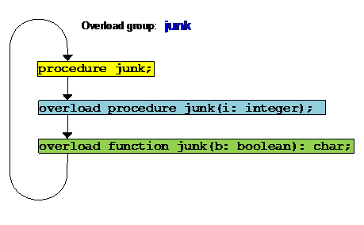
All of the functions and procedures in the overload group are indexed by the same name. Each procedure or function in the group handles a different variant of the same name, consisting of the different argument numbers, types, or function call vs. procedure call.
When determining what procedure or function is meant in an overload group, the compiler considers:
1. Whether a procedure call or function call is being executed.
2. The number of parameters.
3. Type compatibility of parameters.
The context of a function call or procedure call is always clear:
var thevar: integer;
procedure myvar(i: integer);
begin
�� thevar := i
end;
overload function myvar: integer;
begin
�� myvar := thevar
end;
Can be used as:
myvar(5); { set the variable }
writeln('Myvar: ', myvar);
For a procedure or function to be overloaded, the overloader must be in the same block as the procedure or function to be overloaded. A procedure or function from an outter block, or another module, cannot be overloaded.
Overloading is carried out by introducing one or more overload procedures or functions with the same name as the original procedure or function to be overloaded. The original procedure is known as the "prime" procedure or function, and carries a special status. For example, it retains the original name in the linker file, as will be discussed in section 4.4.
To introduce an overload, the keyword overload appears before any procedure or function parameter. It must appear after the prime procedure or function. An overload can appear after a forwarded procedure or function definition, and overloads can themselves be forwarded. However, the parameter list for an overload must be duplicated, as provided for in section 3.10. The reason for this is that overloads can only be matched up by their parameter lists and procedure/function status. A forwarded overload must congruent (section 3.10) with its original, forwarded declaration, or it will not successfuly be matched to the original declaration. The following illustrates a correct series of forwards:
procedure myproc(i: integer); forward;
overload procedure myproc(b: boolean); forward;
procedure myproc;
begin
�� ...
end;
overload procedure myproc(b: boolean);
begin
�� ...
end;
Note that the prime procedure does not need a duplicated parameter list, but the overload procedure does, in order to recognize it.
To prevent overloads from being ambigous, the rules for matching overloads are quite strict. The var, view or value status of a parameter does not matter for overload matching. Each parameter must be distinct in type. The following example is invalid:
procedure myproc(i: integer);
begin
�� ...
end;
procedure myproc(var x: integer);
begin
�� ...
end;
Because there is not sufficient difference between the parameters i and x.
To match parameters, the definition of type compatibility from section 3.5 is used. If a parameter from the same position of an overload procedure or function that has the same procedure/function status as the procedure or function to be overloaded is type compatble, it does not qualify as a distinct overload. Thus, this would be an illegal example:
type mysub = 1..10;
procedure myproc(i: integer);
begin
�� ...
end;
overload procedure myproc(v: mysub);
begin
��� ...
end;
These overloads would be invalid because the parameters i from the prime procedure, and the parameter v from the overload procedure are compatible. There is not enough difference to distinguish the procedure forms from each other when they are called.
When a procedure parameter appears, it will be a valid overload if its parameter list is not conguous with any other overloads same procedure parameter:
procedure myproc(procedure x);
begin
�� ...
end;
overload myproc(procedure y(i: integer));
begin
��� ...
end;
Is a valid overload, because the parameter lists of the procedure parameter y does not match the procedure paramter x.
When a function parameter appears, it must be different in return type, not only from other function parameters, but also from any other type compatible with the return type. This example is invalid:
procedure myproc(function x: integer);
begin
�� ...
end;
overload procedure myproc(i: integer);
begin
�� ...
end;
The reason for this is that the call:
function test: integer;
begin
�� ...
end;
myproc(test);
Is ambiguous for if the function test is to be passed as a function parameter, or the result of its execution.
The most difficult rule for overloads is termed in IP Pascal the "rule of convergence". Two procedures or functions are said to converge at any point if:
1. They are the same type, procedure or function.
2. All of the parameters to the left of, and including the parameter we are interested in, are of compatible types, irregardless of mode (var, view or value).
Thus, the following procedures are convergent at the 3rd parameter:
procedure myproc(i: integer; b: boolean; c: char);
begin
�� ...
end;
overload procedure myproc(j: integer; k: boolean;
������������������������� c: char; d: real);
begin
�� ...
end;
The rule of convergence is that procedures or functions that converge cannot have different modes. Thus, the following is an illegal example:
procedure myproc(i: integer; b: boolean;
���������������� var c: char);
begin
�� ...
end;
overload procedure myproc(j: integer; k: boolean;
������������������������� c: char; d: real);
begin
�� ...
end;
Even though these are valid overload forms, the 3rd parameter c is illegal because the two forms converge at the third parameter, but differ in their modes. The first form is var, the second is value.
Another illegal example:
procedure myproc(i: integer);
begin
�� ...
end;
overload procedure myproc(view j: integer;
������������������������� k: boolean);
begin
�� ...
end;
These procedures are convergent at the 1st parameter, but have different modes.
The reason for the convergence rule with overloads is a practical matter. If two procedures or functions have identical left hand sides, but different modes on a given parameter to be processed, the exact treatment needed for that parameter is ambiguous. The compiler must know how to treat the parameter if a var, view or value passed parameter. Without the convergence rule, the compiler would have to wait until the complete procedure or function call is complete before arranging for the format of each parameter, and potentially store all expression data until that time.
A file is not accessed directly (as an array is). Instead, Pascal automatically declares one component of the files base type which is accessed by special syntax:
f^
So that:
f^ := 1;
Assigns to the file "buffer" component, and:
v := f^;
Reads the file buffer. Unless the file is empty or you are at the end of the file, the file buffer component will contain the contents of the component at the file location you are currently reading or writing. Other than that, the file buffer behaves as an ordinary variable, and can even be passed as a parameter to routines. The way to actually read or write through a file is by using the predeclared procedures:
get(f);
Loads the buffer variable with the next element in the file, and advances the file position by one element, and:
put(f);
Outputs the contents of the buffer variable to the file and advances the file position by one. These two procedures are really all you need to implement full reading and writing on a file. It also has the advantage of keeping the next component in the file as a "lookahead" mechanism.
Accesses to the buffer variables combined with advancing in the file is performed by the read and write procedures:
read(f, x);
Is equivalent to:
x := f^; get(f);
And:
write(f, x);
Is equivalent to:
f^ := x; put(f);
Read and write are special in that any number of parameters can appear:
read(f, x, y, z, ...);
write(f, x, y, z, ...);
The parameters to read must be variable references. The parameters to write can be expressions of matching type, except for the file parameter (files must always be VAR references).
Writing to a file is special in that you cannot write to a file unless you are at the end of the file. That is, you may only append new elements to the end of the file, not modify existing components of the file. Files are said to exist in three "states":
1. Inactive.
2. Read.
3. Write.
All files begin life in the inactive state. For a file to be read from, it must be placed into the read state. For a file to be written, it must be placed in the write state. The reset and rewrite procedures do this:
reset(f);
Places the buffer variable at the 1st element of the file (if it exists), and sets the file mode to "read".
rewrite(f);
Clears any previous contents of the file, and places the buffer variable at the start of the file. The file mode is set to "write".
If it is desired to write on an existing file, the procedure update is used:
update(f);
An update places the write position of the file to the beginning (1), and sets the file mode to "write", but does not clear the contents of the file, allowing elements of it to be updated selectively. It is an error to use update on a text file.
A file can be tested for only one kind of position, that is if it has reached the end:
eof(f);
Is a function that returns true if the end of the file has been reached. eof must be true before the file can be written.
The read or write status of a file has bearing on the use of files in multitasking/multiprocessing environments. If multiple processes are accessing the same file, typically only one writer can be allowed, but any number of readers. If the file mode is set to write, and there are processes that have the file open for reading, the process requesting the write may be stopped until all readers have closed the file, or the process may be terminated. This action is operating system dependent.
To create a program that is "mutitask/multiprocess friendly", it is highly recommended that the following guidelines be used:
� Only keep a file open while reading or writing it. Do not leave files open while performing other operations that may take an indefininate amount of time. An example would be waiting on user input.
� Only keep a file in write mode long enough to perform the update of in-file data. The file should then be closed or switched to read mode.
Any program should observe multitask/multiprocess rules, since even if the program is intended for a single task/process environment, it may later be run in such an environment.
Open files have a length, and a position. The position is the position of the next element to be written or read in the file. The length of a file can be found by:
type s: integer;
���� f: file of integer;
begin
�� s := length(f);
The length of a file is the nuber of elements it contains. The elements in a file are simply items of the base type of the file, and can be simple or structured.
The location of the read or write position in a file can be found as:
type p: integer;
���� f: file of array [1..10] of char;
begin
�� p := location(f);
The position in a file can be set with the procedure:
position(f, p);
The location of the read/write pointer in a file begins with the first element, 1, and goes to the end of the file. The location in a file can be past the end by one element, but no more. In this case, the file is at the end. An example of "appending" or setting a file to the end before writing to it, is:
position(f, length(f)+1);
The files passed in the program header are external to the program, and have associations defined for them by the operating system. This has the limitation that we must know what files are to be operated on beforehand, and limits the number of files we can process. Another method is to use procedures built in to IP Pascal that perform the association of a Pascal file with an external file by name.
A "filename" is any standard pascal string of the form:
type string = packed array [1..N] of char;
And may be any variable access or constant string.
The exact format of a file string may vary among systems, but will be portable if the following format is followed:
1. A filename must begin with the characters 'a'..'z', with case irrelivant. Starting a filename with "_" is usually possible, but indicates a special or system file and is to be avoided.
2. A filename may continue with the characters 'a'..'z', '0'..'9' and '_'.
The allowable length of a filename, and the action taken if the filename exceeds that name are system dependant. In general, programs are portable if they use only 8 characters or less for the filename. To encorage programming for portability, any leading or trailing spaces in the filename are ignored, so that the array used to store filenames may be any length.
If it is nessary to use system specific filenames, the applicable documentation for the operating system should be consulted.
Named file handling should not be used to manipulate files in a graphical environment, as some operating systems don't really have a file naming system. Instead, files are selected from lists or using other methods. As a rule, when using graphical modes, the graphical file handling methods should be used instead of the named file methods.
All files in IP Pascal that don't appear in the program header as external files are by default temporary files that only exist during the program run, and are deleted after the program closes. If the file is not open, that is, no reset, rewrite or update procedure has been performed on it, it can be respecified to be an external named file. This both binds the file to an external file by the given name, but also allows the file to continue undeleted after the program closes.
A file is given a name by assign:
assign(f, 'myfile');
It is an error if the file is already open.
A file is closed as:
close(f);
Closing a file performs any remaining operatings pending on the file, and breaks the association between the file and its name. Once closed, a file can be given a new name. Using assign and close, an unbounded series of files can be processed.
If any files are not closed when the program exits, then they are closed automatically. Despite this, it is good practice to specifically close files when the use of them is complete. To do so frees up system and program resources.
The existance of a file, by name in the file system, can be checked:
if exists('myfile') then ... { file exists }
Files can be deleted from the file system by name by the delete procedure:
delete('myfile'); { delete the file }
It is an error to delete a non-existant file. To avoid this error, the exists function can be used.
The name of a file can be changed by the change procedure:
change('newname', 'oldname');
It is an error if the old name of the file does not exist, and also if a file already exists by the new name. In the latter case, nothing is done, and the filename remains the same. The exists function can be used to produce sensable error handling for these cases.
As alluded to before, text files are treated specially under Pascal. First, The ends of lines are treated specially. If the end of a line is reached, a read call will just return a space. A special function is required to determine if the end of the line has been reached:
eoln(f);
Returns true if the current file position is at the end of a line.
IP Pascal strictly enforces the following structure to text files:
line 1<eoln>
line 2<eoln>
...
line N<eoln>
<eof>
There will always be an eoln terminating each line. If the file being read does not have an eoln on the last line, it will be added automatically. Besides the standard read and write calls, two procedures are special to text files:
readln(f...);
writeln(f...);
Readln behaves as a normal read, but after all the items in the list are read, The rest of the line is skipped until eoln is encountered. Writeln behaves as a normal write, but after all the items in the list are written, an eoln is appended to the output.
Text files can be treated as simple files of characters, but it is also possible to read and write other types to a text file. Integers and reals can be read from a text file, and integers, reals, stringsbooleans, and strings can be written to text files. These types are written or read from the file by converting them to or from a character based format. The format for integers on read must be:
[+/-]digit[digit]...
Examples:
�9
�+56
�-19384
The format for reals on read is:
[+/-]digit[digit]...[.digit[digit]...]
�� [e[+/-]digit[digit]...]
Examples:
-1
-356.44
7e9
+22.343e-22
All blanks are skipped before reading the number. Since eolns are defined as blanks, this means that even eoln is skipped to find the number. This can lead to an interesting situation when a number is read from the console. If the user presses return without entering a number (on most systems), nothing will happen until a number is entered, no matter how many times return is hit!
Write parameters to textfiles are of the format:
write(x[:field[:fraction]]);
The field states the number of character positions that you expect the object to occupy. If the field is a positive number, the object is right aligned in the field (normal ISO 7185 mode). If it is negative, the object is left aligned in the field, and the field width is the absolute value of the field. The fraction is special to reals. The output format that occurs in each case are:
integer:�������������� The default field for integers is implementation defined, but is usually the number of digits in maxint, plus a position for the sign. If a field is specified, and is larger than the number of positions�� required to output the number and sign, then blanks are added to the left side of the output (or right side if negative format) until the total size equals the field width. If the field width is less than the required positions, the field width is ignored.
real:������������������ The default field for reals is implementation defined. There are two different format modes depending on whether the fraction parameter appears. If there is no fraction, the format is:
������������������������� ����������� -0.0000000e+000
������������������������� Starting from the left, the sign is either a "-" sign if the number is negative, or blank if the number is positive or zero. Then the first digit of the number, then the decimal point, then the fraction of the number, then either 'e' or 'E' (the case is implementation defined), then the sign of the exponent, then the digits of the exponent. The number of digits in the exponent are implementation defined, as are the number of digits in a fraction if no field width is defined. If the field width appears, and it is larger than the total number of required positions in the number (all the characters in the above format without the fraction digits), then the fraction is expanded until the entire number fills the specified field, using right hand zeros if required. Otherwise, the minimum required positions are always printed. If a fraction appears (which means the field must also appear), the format used is:
�������������������������������������� [-]00...00.000..00
�������������������������� The number is converted to it's whole number equivalent, and all the of whole number portion of the number printed, regardless of the field size, proceeded by "-" if the number is negative. Then, a decimal point appears, followed by the number of fractional digits specified in the fraction parameter. If the field is greater then the number of required positions and specified fraction digits, then leading spaces are appended� (or trailing spaces if negative format) until the total size equals the field width. The minimum positions and the specified fractional digits are always printed.
string:���������������� The default field for strings is the length of the string. If a field length exists, the string will always be printed in the field width specified. If the field width is larger than the string, the string will be padded with spaces to the field width. If the field width is smaller than the string, then the string will truncated at the right side until it fits the field.
�������������������������� If the field width is negative, the string will be left aligned into the field, otherwise the string is right aligned in the field.
�������������������������� If the field is zero (0), the string is printed in "padded" mode. The length of the field is set to the last non-blank character in the string, and the entire string is printed. This allows automatically printing "right padded" strings normal in ISO 7185 string types.
boolean:������������ The default field for booleans is 5 characters. When booleans are output, they are converted and printed as the strings "true" or "false". They have the same output rules as strings, above.
Halt is a predefined procedure that causes the entire program to stop. Halt is usefull to write predefined proceedures and functions that can cause errors and immediately stop the program:
if x = 0 then begin
�� writeln('*** Attempt to divide by zero');
�� halt
end;
x := y/x;
With halt, it is not nessary for executing code to know what kind of error exit method is used in the surrounding program.
Header files are the original Pascal method to access external files. These files are still very usefull. They can make it easy to open files, because the operating system does the work of associating the file to external data. Also, in a graphical system, they avoid the need to address a file by name.
The header files appear as a simple list of identifiers in the program header:
program test(input, output, source, object);
Each header file automatically assumes the type text. If the file needs to be another type, it should be declared again in the variables section of the program block:
program test(intlist);
var intlist: file of integer;
There are two kinds of files in the header, special and general files. The special files are associated with specific, reserved identifiers:
Special file���� Purpose
input����������������������� Gives the standard input file as assigned by the operating system.
output�������������������� Gives the standard output file as assigned by the operating system.
error����������������������� Gives the standard error file as assigned by the operating system, to be used to output error or operator attention messages.
list���������������������������� Gives the standard list file as assigned by the operating system, to be used for output in hardcopy.
command������������� Gives a file containing the standard startup line or lines for the program, usually obtained from the command line.
Special files cannot be reset, rewritten, closed, or positioned by the program. Nor may the location or length of the file be found. Also, it is not nessary to type these files within the program, since they are automatically type text.
Unique to the special files, if multiple references exist to a special file (more than one module references the same file), they will all refer to the same file, and reading or writing will be syncronised across references.
The files input and output are meant to carry most of the common input and output in a program. There are special versions of file access routines that use input and output by default:
This form������������������ Is equivalent to this form
write(...)����� write(output, ...)
writeln(...)��� ���� writeln(output, ...)
writeln�������� writeln(output)
read(...)������ read(input, ...)
readln(...)���� ���� readln(input, ...)
readln��������� ���� readln(input)
eof������������ eof(input)
eoln����������� eoln(input)
If an identifier appears in the header that is not defined as one of the special header files, then it is automatically given a name by the operating system. On systems with command lines, this appears as follows:
program test(input, output, myfile, yourfile);
Is executed by the command:
test thisfile thatfile
The files receive names from the command line in order:
File����������������� Receives this name
myfile���� ���� 'thisfile'
youfile��� 'thatfile'
On a graphical operating system, header files are associated via different methods. Typically, a program is executed by the selection of one or more files with an association to the program, for example, a text type file is associated with an editor. The first header file would be associated with the first selection, etc. The exact method is system specific, and the system implementation section should be consulted.
These "automatic" header files simply get their name from the operating system. Automatic files differ from special header files in that they must be given a type within the program:
program test(output, junk);
var junk: file of integer;
Also unlike special files, a reset, rewrite or update must be performed on the file before it can be used.
Because arrays are incompatible with each other even when they are of the same type if their packing status differs, two procedures allow a packed array to be copied to a non-packed array and vice versa:
unpack(PackedArray, UnpackedArray, Index);
Unpacks the packed array and places the contents into the unpacked array. The index gives the starting index of the unpacked array where the data is to be placed. Interestingly, the two arrays need not have the same index type or even be the same size ! The unpacked array must simply have enough elements after the specified starting index to hold the number of elementsin the packed array.
pack(UnpackedArray, Index, PackedArray);
Packs part of the unpacked array into the packed array. The index again gives the starting position to copy data from in the unpacked array. Again, the arrays need not be of the same index type or size. The unpacked array simply need enough elements after the index to provide all the values in the packed array.
In Pascal, pointer variables are limited to the mode of variable they can index. The objects indexed by pointer types are anonymous, and created or destroyed by the programmer at will.
A pointer variable is undefined when it is first used, and it is an error to access the variable it points to unless that variable has been created:
var p: ^integer;
begin
�� new(p); { create a new integer type }
�� p^ := 1; { place value }
Would create a new variable. Variables can also be destroyed:
dispose(p);
Would release the storage allocated to the variable. It is an error (a very serious one) to access the contents of a variable that has been disposed. A special syntax exists for the allocation of variant records:
var r: record
�� a: integer;
�� case b: boolean of
����� true: (c: integer);
����� false: (d: char)
�� { end }
end;
begin
�� new(p, true);
�� ...
�� dispose(p, true);
For each of new and dispose, each of the tagfields we want to discriminate are parameters to the procedure. The appearance of the tagfield values allow the compiler to allocate a variable with only the amount of space required for the record with that variant. This can allow considerable storage savings if used correctly.
The appearance of a discriminant in a new procedure does not also� automatically set the value of the tagfield. You must do that yourself. For the entire life of the variable, you must not set the tagfield to any other value than the value used in the new procedure, nor access any of the variants in the record that are not active.
The dispose statement should be called with the exact same tagfield values and number. Note that all the tagfields in a variable need not appear, just all the ones, in order, that we wish to allocate as fixed.
Programs may be separated in to modules, each of which can be compiled alone. A module appears as:
module mod[(file[,file]..)];
<declarations>
begin
�� <startup code>
end;
begin
�� <shutdown code>
end.
The header files in a module have the same meaning as in a program module. It is correct to have multiple modules with the same special files (eg., output) in them. All such references refer to the same file. As in the case of a program module, the files input and output must appear if default I/O statements are used in the module.
All the declarations in a module are considered publically accessable by other modules, with the exception of goto labels, which are allways private to the declared module or program.
The startup and shutdown sections of a module, which may both be omitted, specify actions to be performed when the entire program first starts, and when it exits. These sections can be used to initalize variables, open and close files, etc. These sections are not accessable by the programmer, but rather are automatically executed.
The shutdown and startup sections may be omitted.
The order in which module startup/shutdown sections are executed is specified at link time. Typically, the "lowest" level module (the one that is called by all others) must be started first and exited last.
Declarations can be made private to the module by using the private keyword:
module x;
type string = array [1..10] of char;
var y: integer;
procedure q; forward;
private
var n: integer;
procedure q;
begin
�� y := n;
Here the type "string", the variable "y", and the procedure "q" are publically accessable. The variable "n" is private. Notice that the procedure "q" is forwarded into the private area. This does not make "q" private, because it is declared originally in the public area. But it allows "q" to access the private variable "n".
Programs or modules can specify access to other modules or pograms by the uses statement. The uses statement must appear before any declaration, and after the program or module heading. It is of the form:
program x;
uses y, z;
...
This allows program x to use all of the publics in both modules "y" and "z". The declarations in a program can also be accessed just as for a module. The declarations in a program, just as a module, are public by default. A program may use the private keyword to separate public from private declarations.
Modules can be referenced in any particular order, even circularly (a module that uses a module that uses it, etc.). Modules that are included redundantly are automatically excluded by the compiler. For instance:
module y;
uses z;
...
module x;
uses z;
...
program n;
uses z, x, y;
It will be understood that z is only to be included once.
The normal modular scheme in pascal is serial. Even though automatic startup and exit of different modules is specified, it is understood that they are executed serially (with the order being undefined). Because of this, modules are very flexible about accessing mutual global variables, procedures, etc.
We introduce Three new module types, with similar syntax:
process x;
�� declarations
begin
�� startup code
end.
monitor x;
�� declarations
����
begin
�� startup code
end;
begin
�� exit code
end.
share x;
�� declarations
.
A process module runs much as a normal module, but receives its own thread of execution for the CPU. Just as for a program module, it has only an initalzation section.
Because a given section of code can pick up, cache and store variables at will, a process is not allowed to "use" any normal module. It must strictly operate on it's own variables, or make calls to monitors or share modules.
The order in which process modules recieve their thread of execution is determined at linktime by the module order, with leftmost modules receiving control first. In fact, process modules are implemented by having a special initalization section that spawns a subthread to run the process. Similarly, the finalization section has code that automatically terminates the thread.
Process modules cannot be used by other modules, and nothing in a process module is exported.
A monitor module cannot contain any standard public variables, but can contain public procedures and functions.
Monitors can be "used" by any other module, including processes. This means that a monitor may have multiple threads of execution entering it via different procedures/functions at the same time. To deal with this, a monitor has several specially compiled features unique to it. First, an interprocess lock is automatically provided for each monitor, and every procedure/function in the monitor executes a task lock at the start of each call, and executes a task unlock at the end.
Second, the compiler garantees that no variables are cached or held by different tasks. This is normally the case, since caching does not occur across procedural lines.
Since monitors are extentions of subprocesses, a monitor can only "use" other monitors and share modules.
Within the monitor, only the global procedures/functions need be locked. The other (private) procedures are only accessed by locked monitors.
If a monitor makes a call to another monitor or share module, then that module in turn calls the same monitor, deadlock may result, because a lock will be awaited that can never be freed. It is possible to detect that the same task requesting a lock already holds and, and a runtime error may result. Whether an error will occur or not is defined by the operating system.
Monitors are central to a multithreading scheme. Monitors not only implement routines that are used in common by processes, they allow procedures to be created that communicate between processes. This communication is what changes a program that is simply a collection of threads into a syncronous whole.
Monitors can only use other monitors or share modules.
Variables that appear in monitors may not be in the export section.
The object of a monitor is to encapsulate data inside an enclosure, using only procedures and functions to access them indirectly. Because pointers allow data references to travel freely across procedure/function lines, the use of pointers as parameters negates the monitor concept.
Because of this, the fundamental law of monitors is:
Parameters or function returns may not be, or have as a component, any
pointer.
The pointer barrier is both an important safety measure and serious limitation for monitors. However, the use of modules does not rule out the use of dynamic data. Rather, the use of it must be structured differently.
In a monitor, any dynamic data, such as a list, must be handled indirectly by the monitor procedures and functions themselves:
monitor list;
procedure first; forward;
procedure next; forward;
function val: integer; forward;
procedure add(v: integer); forward;
private
type rp = ^r;
���� r = record
����������� next: ^r;
����������� data: integer
�������� end;
var root, index:� rp;
procedure first; begin index := root end;
procedure next; begin index := index^.next end;
function val: integer; begin val := index^.data end;
procedure add(v: integer);
var ne: rp;
begin
�� new(ne); { get a new entry }
�� ne^.data := v; { place data }
�� ne^.next := root; { insert into list }
�� root := ne
end;
begin
�� root := nil;
�� ...
end.
In this monitor, the linked data list and the pointers used to access it are all encapsulated within the monitor, with procedures defined to access that list.
A share module cannot contain any standard global variables at all. The purpose of a share is to keep procedures and functions that can be used by any process or by the main program. Placing mutual procedures that do not need global data (and therefore cannot be used to communicate between procedures) in a share is more efficient than placing them in monitors, since no locking is required in a share.
Share modules have no initalization or finalization sections, since there is, by definition, no variable data in the module.
Share modules can only use other share modules or monitors.
Unlike monitors, share modules can pass pointers without restriction. This is because share modules have no local data to compromise.
The various module types serve to divide the whole program into task regions, both exclusive and shared. The program and module sections are all the exclusive region of the main program thread. In a single task program, that is all that is required.
When subtasks are added, one process module must be added per task. Normally, each such subprocess is confined to a single file which contains the process module. This is in contrast to the mean process, which can be spread without restraint among different files.
To help this situation, share modules give a way to put common routines in a file that is executable by any or all of the running processes, even in parallel. To do this, the share module lacks any common data.
Finally, the monitor module creates a region of both routines and data, and protects them such that the monitor can also be used by all running processes, even in parallel. This not only allows both routines and data to be used in common, but facillitates communication between processes.
The directive external is implemented, and replaces the procedure or function as in forward. The effect of external is to resolve the Pascal reference, and create a linktime reference to the name of the procedure or function. This external reference must be satisfied by an external label, defined in an assembly, Pascal or alternate language included in the link phase.
Any variable, procedure or function that is included from a "uses" declaration is also passed as an external symbol. But since these references are type secured at the source level, they represent a safer linkage mechanisim than "external" declared procedures/functions. "external" is mainly for when the procedure or function to be called does not exist in Pascal (is assembly or alternate language). For such cases, the best procedure is to create a module that contains the external refereneces, then use safe linking to access that. This contains the unsafe type linkages to a single file.
This chapter discusses the operation of the IP Pascal compiler command line functions. A compile from source code to object code involves several programs run in sequence as part of a toolchain, which has as typical members:
� parse��� Parses the input Pascal program and produces an intermediate file
� ec�������� Encodes the intermediate file into machine code for the current CPU
� ln�������� Links the object modules into a whole program
� gen������ Converts the object modules to a system specific program format
The simpliest method to run the toolchain is to use the pc shell or "integerator", which does all of the work of calling the individual members of the toolchain for you.
The pc and parse programs are covered in this chapter. The ln linker has its own chapter, 14. The ec program is specific to the CPU you are using, or the target CPU if you are cross-compiling. The gen program is specific to the operating system you are using, or the target operating system if you are cross compiling.
Typically, you will not need to directly run the individual programs in IP Pascal's toolchain. However, there may be special build requirements for particular programs that require it
pc is a compiler shell, which means that it does its work by calling other programs. The format of a pc command line is:
> pc myprogram [option]...
Where "myprogram" is the Pascal program you wish to compile. Any number of options may appear at any time on the command line. Options are of the format:
<option character><name>
The option character is specific to your operating system.
The following options are available:
Option����������������������� ����������� Abbreviation� Meaning
Verbose�������������� ��������������� v����������������������������� Print status
messages
nverbose���������������������������� nv�������������������������� Do not print status messages
tree�������������������������������������� t����������������������������� Print the dependency tree
for the program
ntree������������������������������������ nt��������������������������� Do not print the
dependency tree
action����������������������������������� a����������������������������� Print the "actions" or commands that will be
�executed to rebuild modules
naction�������������������������������� na�������������������������� Do not print actions
dry���������������������������������������� d���������������������������� Do not perform actions ("dry run")
ndry�������������������������������������� nd�������������������������� Perform actions
rebuild��������������������������������� r����������������������������� Rebuild all modules regardless of need
keepterminalwindow��� ktw����������������������� If the program is graphical, the terminal
window that launched it is kept
defaultterminal������������������������������� dt��������������������������� Default to terminal mode
defaultgraphical�������������� dg�������������������������� Default to graphical mode
pc will also accept what are called "passthough" options. These are options that are send down to the programs it will run to complete the build. To find what options are applicable, please see the section of this manual for the particular tool that you wish to pass the option to.
pc will build either a final executable program or a module. It automatically determines which type of file it is compiling by examining the contents of the file. If the file contains a program module, it will be compiled to an executable program. If it contains another module type, it is only compiled to an object file.
pc automatically builds a tree of uses references to determine how to build the program. pc will make sure all leaves of the tree are built before attempting to build higher level branches, and so may cause several modules to be compiled as part of the program build.
The ability of pc to automatically determine what needs to be rebuilt is due to the module statements imbedded in the IP Pascal language, and is sometimes referred to as "automake". Because of this, you will not need a "make" file, as is required for other languages.
pc determines if a module needed for the program or module to be built itself needs building by determining if:
� The object for the module is missing (never built)
� The object carries a date and time further back in time than it's source file
� The module source contains code, and is not just a constant or type definition file
If all conditions are true, the module is rebuilt.
To determine exactly what the dependency tree appears as to pc, the tree option is used. A typical dependency tree appears as:
Dependency tree for hello.pas
Pascal module:
c:\ip\windows\i80386\lib\stddef.pas 01/04/24� 12:32:42 am� E
�� Components:
�� c:\ip\windows\i80386\lib\stddef.obj 01/04/25
��� ��9:44:18 pm
�� c:\ip\windows\i80386\lib\stddef.sym 01/04/25
��� ��9:44:18 pm
Pascal module:
c:\ip\windows\i80386\lib\gralib.pas 05/04/23
�� 9:00:12 pm� EC
12345678901234567890123456789012345678901234567890123456789012345678901234567890
�� Components:
�� c:\ip\windows\i80386\lib\gralib.obj 05/07/28
��� ��10:06:42 am
�� c:\ip\windows\i80386\lib\gralib.sym 05/07/28
��� ��10:06:42 am
�� References:
�� stddef
Pascal module:
hello.pas 05/11/02�� 9:57:58 pm� RC
�� Components:
�� hello.obj 05/11/02�� 9:56:26 pm
�� hello.sym 05/11/02�� 9:56:26 pm
�� References:
�� gralib
pc lists the leaves of the tree first, ending with the root of the tree ("hello.pas").
As pc performs the actions needed to build a module or program, it can print the actions with the action option. pc will print the action formatted as a command line suitable for the shell of the current operating system.
A typical sequence of build instructions would be:
parse C:\TEST\hello=C:\TEST\hello/v/ns/rf
ec C:\TEST\hello=C:\TEST\hello
ln temp=c:\ip\windows\i80386\lib\gralib hello c:\ip\windows\i80386\lib\cap/v/nu
genpe hello=temp/v/wg
del temp.obj
del temp.sym
This is useful for seeing exactly what commands pc is performing. It can also be useful if you decide that you are going to perform a build using a batch file of commands. To do this, execute the command:
> pc <program> #d #r #a #nv > <command file>
Using the appropriate option character instead of "#", and your local redirect output symbol for ">". The result will be that the commands needed to build the program or module from scratch are placed into the command file.
Instruction file
Most programs need to make use of standard libraries and other resources to run. pc must know where these modules are located, and how to treat them. To set these and other options, an "instruction" file is used, usually with the extention "ins". This file contains a series of instructions that modify pc's behavior.
pc can find and execute several instruction files from different locations. pc first searches for the file:
pc.ins
In each of the program, user and current paths. The program path is the location of the pc program itself, and this file will contain instructions that apply to all builds on the current computer. The user path is a per-user path, and that file will contain instructions you want for all builds you perform. The current path instruction file would contain special instructions for any builds in the current directory or path.
pc also searches for a file of the form:
<program>.ins
where the "program" name is the name of the module that pc is building. This file is the place to put special instructions that apply only to one particular module.
The instruction file is free form, and can contain spaces or blank lines. In addition, the "!" character introduces comments, and all characters after it, until the end of line, are discarded.
The "\" (force) character can appear at the end of a line. It indicates that the line is concatenated with the next line before evaluation.
A typical instruction file appears as:
!!!!!!!!!!!!!!!!!!!!!!!!!!!!!!!!!!!!!!!!!!!!!!!!!!!!!!!!!!!!
!��������������������������������������������������������� !
! This is the pc instruction file������������������������� !
!���������������������������������������������������� �����!
!!!!!!!!!!!!!!!!!!!!!!!!!!!!!!!!!!!!!!!!!!!!!!!!!!!!!!!!!!!!
!
! Declare the main library and protect it from recompiles
!
usespath .,c:\ip\lib
exclude c:\ip\lib
!
! Declare packed libraries
!
package c:\ip\lib\serlib=c:\ip\windows\i80386\lib\windows \
������� c:\ip\lib\syslib c:\ip\windows\i80386\lib\paslib
package c:\ip\lib\trmlib=c:\ip\windows\i80386\lib\windows \
������� c:\ip\lib\syslib c:\ip\windows\i80386\lib\paslib
package c:\ip\lib\gralib=c:\ip\windows\i80386\lib\windows \
������� c:\ip\lib\syslib c:\ip\windows\i80386\lib\paslib
The following commands are valid in an instruction file.
exclude
exclude <path>[<path>]...
This command causes each path listed to be excluded from rebuilds. This prevents pc from attempting to build library files that should not be rebuilt.
package
package <library>=<component>[<component>]...
This command indicates that a needed module is found inside a library of modules. For example, serlib is a collection of modules needed to support a program at the serial I/O level. When module referenced by a program is to be found in a package, the package will be built instead to resolve the reference.
Besides the commands above, pc will accept any option, or passthrough option, in the instruction file. However, it will not accept abbreviations for those options in the file.
Parser
The compiler is invoked by:
����������� Parse [file=]file {file} [#option]
[/option]
The files given are parsed together, just as if they were part of the same source file. The file to the left of the "=" sign, if it appears, is the output file, and gives the name that the output will be saved in. If no output file appears, the program will be compiled and checked without creating output, which is usually faster.
Note that if any error occurs during compilation, no further compiler output will be generated, and the existing output file (if any) will be deleted. Then the compilation will proceed at the higher speed. An output file will exist after the compilation only if the compilation was successfull.
The output file will be created as file.int, and contains the intermediate file. The name of the output file may be the same as any one of the input files.
The options avialable are:
����������� Option������������ Alternate��������� Function
����������� verbose����������������������� v��������������������� Turns information messages on
����������� noverbose������������������� nv������������������� Turns information messages off
����������� error[=file]������ e=[file] Saves error output to a file. If a filename is specified, that is used. If not, the same primary as the output file is used, with .err as the ending.
����������� standard���������������������� s���������������������� The compilation is run according to strict ANSI rules (no extentions allowed).
����������� nostandard������������������ ns�������������������� All compilation features are allowed.
����������� errorlimit=num el=num����������� Causes compilation to be automatically aborted upon reaching the number of errors specified
����������� refer���������������������������� r���������������������� Causes lack of references to a defined symbol to be an error.
����������� norefer������������ nr�������������������� Causes lack of references to a defined symbol to be ingnored.
����������� assign�������������� a��������������������� Causes variables that have never been assigned or "threatened" (used in a context that would cause them to be modified) to be an error.
����������� noassign���������������������� na������������������� Causes variables that have never been assigned or "threatened" (used in a context that would cause them to be modified) to be ignored.
Pascal objects can be located and processed as any other object. IP Pascal does not generate code that modifies the program block, and any area for either the program or variable space may be used.
Assembly Level Format of Modules
Under IP Pascal, each object file must contain at least one module or program. There are no "partial" modules. IP Pascal uses a special "stackable" object module. When modules are linked as:
����������� ln prog=mod1 mod2 mod3... prog cap
When a module is executed at it's first address, it will complete it's "entry" code block, then call it's last address+1. This effectively calls the next module in sequence. Note that modules use whatever stack was active upon entry (modules do not have their own stack). This causes all modules to be "daisy chained" in the same sequence as they appear in the linker. This terminates at the cap cell, whose only job is to directly return.
After the program module returns, the module calling it executes it's "exit" code block, then returns. The next module up in the chain executes it's exit, and so on, until the program exits to the operating system.
This module chaining system allows each module to have it's own entry and exit block. All entry blocks will be executed before the program runs. All exit blocks will be executed after the program ends.
If a module or program has it's exit code block omitted, then the module or program will simply return without executing any exit sequence.
No object file should be placed before the program module that does not obey the nested module rules, or else the module system will not function correctly, or the resulting program may even crash. The one execption to this may be the first module. If, for example, the program is running under a system that cannot be returned to via a stacked return, the first (system specific) module must compensate for this.
Ordinary objects not conforming to the module principle can be included in the same link operation. They are simply listed after the cap. Since the module chain terminates at the cap, these files can contain any type of code or even data without causing problems. Then, the routines or data they contain can be referenced from anywhere (including modules) as is usual.
Implementation Support Modules
Pascal objects as created contain assembly references to routines and data that both support the objects and customize them to a particular implementation. The format that will be used for the majority of target systems is:
����������� ln prog=wrapper serlib mod1 mod2 mod2... prog cap
"wrapper" is the translation layer that allows Pascal access to operating system calls. "serlib" is the general support module, and contains all that the program needs to function in a line or screen oriented mode. If the program requires graphical support, the module "gralib" is substituted for serlib.
Symbols format
Pascal is a hierarcally structured language, and must have its symbols mapped to a flat linker level format. To do that, we use coining. Coining means that we add all of the names of the nested scope to the identifier, separated with '_':
����������� program test;
����������� var x, y: integer
����������� procedure junk;
����������� var q: boolean;
����������� ...
Would produce the linker level names:
����������� Name�������������������������� Meaning
����������� test������������������������������ The program start
����������� test_x�������������� Variable in test
����������� test_y�������������� Variable in test
����������� test_junk��������������������� Procedure in test
����������� test_junk_q����� Variable in junk
It is possible to produce names within the program that collide with coined names:
var x_y: integer;
procedure x;
var y: integer;
begin
�� ...
end;
Would produce the coined names:
����������� Name�� Meaning
����������� x_y����� Integer variable from outter block
����������� x_y����� Integer variable local to procedure x
Overloaded procedures and functions have their own coining rules. The prime procedure or function is not specially coined, over and above normal scope nesting coining. Each of the overload procedures or functions are coined. The coin is formed by adding a postfix consisting of:
1.�������� The word "_procedure" or "_function", depending on if the overload is a procedure or function.
2��������� The name of each parameter type, in order, from left to right, in the form "_name", where "name" becomes the type name. Pascal rules do not allow anonymous parameter types, so this is always possible.
3.�������� If the overload is a function, the result type follows, in "_name" form.
So for example:
overload procedure myproc(i: integer; c: char);
Is coined as:
myproc_procedure_integer_char
The function:
overload function myfunc(i: integer): boolean;
Is coined as:
myproc_function_integer_boolean
Note that the last coin in the postfix is the return type of the function.
For procedure and function parameters, a special sequence is used to coin. In the case of a procedure, the words "_procbegin" and "_procend" bracket the parameter list for the procedure parameter. For functions, the words "_funcbegin" and "_funcend" bracket the parameter list for the function parameter. The following examples apply:
procedure myproc(i: integer; procedure x(i: integer); c: char);
myproc_procedure_integer_procbegin_integer_procend_char
And:
procedure myproc(i: integer; function x(i: integer): boolean; c: char);
myproc_procedure_integer_funcbegin_integer_boolean_funcend_char
Note again, the appearance of the function result in the sublist.
Since procedure and function parameters can be nested to any depth, the coining notation for them can also nest to any depth.
In IP Pascal, as many modern languages, the set of modules that are available are as, or more important than the language implementation itself. In the traditional language model, you have the built in commands, and after that you are on your own. In IP Pascal, we define a set of platform modules that form a standardized view of the system IP Pascal programs run on. In addition, the modules that implement standard Pascal routines and runtime support are also modules. This is important for two important reasons. First, the entire runtime implementation is known to you, and you can report it to other platforms. Second, many of the platform modules work by overriding the base modules, a method of adding to the functions the base modules contain.
Base Modules
The system modules for Pascal were written by a method called "underpass" calling. Pascal normally uses system service calls that cannot be described by the normal syntax for calls. The major examples of these are:
1.�������� Calls contain optional parameters, such as "write([f,] x[:y])".
2.�������� Calls are overloaded by type, as in the write and read ability to read and write different types.
3.�������� Parameters can be cascaded into a unified type. So in read and write, the system data read and written is an array of bytes, vs., the user data which can be in any form.
Because of this, we have defined a set of "rationalized" calls that obey standard Pascal conventions. The compiler takes the (irrational) calls from the source and converts them to rational calls to the underpass modules.
The result is that it is possible to write the system modules as ordinary modules in most cases (there was one fix that had to do with passing only part of a byte array).
Normally there is no reason to care about what the base modules do, and it is rarely nessary to make a call directly to a base module. However, if you are performing embedded work, or have any other need to port IP Pascal runtimes to an unsupported hardware configuration, you will be writing at least the system interface module.
You may also want to know how the base modules work to override them for extended I/O. For example, the emulation libraries commonly override the system library, so that low level (read and write) I/O can be emulated.
Platform Modules
Platform modules are a special concept in IP Pascal. The platform is a set of modules, not all of which need be used, that allows IP Pascal runtimes to move to any other machine or operating system combination in the IP Pascal series. The platform modules are divided by function, and are written with the idea of expressing the common intent behind each I/O or operation class type, such as system support, terminal display, graphical display, windowed� display, sound, etc. By writing to the platform and not to the operating system API level, your program is portable to other operating systems with the same CPU with a relink, and other CPUs and/or operating systems with a recompile. Either way, the source changes are zero.
The platform module is not designed to be a straightjacket, however. A portable program can perform the common functions using the platform modules, then define special code that accesses the rest of the specific API for the target CPU and operating system. In this way, the platform is a ladder and not a crutch.
The platform is certainly a subset of what each operating system and CPU can do. Its a "lowest common denominator". However, you need to look critically at the platform functions. They are designed to implement unique functions, not to ease programmer workload. Although this might not sound like a good thing, it keeps the platform small without being incapable. If there is a feature you are used to from operating system x, you may find that you can program that yourself by using primitives defined in the platform. This keeps your code portable, although it may impact speed and space in your program.
The idea of the platform is to keep the total porting work of programs to a minimum. The typical use profiles of the platform are:
Ultra portable user
This user does not want to perform any work over and above creating the original program. The user wants it to run anywhere, and is willing to take a speed/space penalty of %10-%20 percent in exchange for that. The user is willing to put extra work into making the primitive routines work as a substitute for more complex routines, in exchange for the knowledge that this work will only have to be performed once to run across all platforms.
Very portable user
This user wants to program using the platform, but is willing to write additional routines direct to the operating system API to get extra speed, features only available on that system, or to get a better native "look" to the program.
Portable user
This user plans to write most or all of the program specifically to the native operating system API. The user may keep an "indepenent" version of the program that works on the platform, but will generate individual implementations for each operating system. The platform based code, if used at all, will be used to evaluate new operating systems/CPUs or to make demos, not for shipping code.
Non-portable user
This user will write a program for one specific operating system and CPU. The program will use the operating system API directly, and the platform will typically not be used. The one possible use for the platform might be because it is simpler to program for than the full operating system API.
The format of the platform module stacks for basic I/O are:
Overrides
In order for many of the module types listed here to be implemented, the ability for one module to override another one must exist. This means that the calls in a new module replace the old definitions, usually with the new module still able to call the old routines. Overrides stack, so that any number of overrides can exist, and form a chain going back to the original module.
Overrides are at present implemented as the assembly level, although it has been discussed to move them forward as an official language feature. If you need to create an override module, or use the present override modules, see the code examples provided.
Base Modules list
Wrapper
Wrapper contains all the translations to go from Pascal form calls to the operating system specific calls (usually C). The wrapper both performs any call format specific convertions (such as left to right parameter to right to left convertion required by C). It also performs "rationalization" of C calls to use Pascal mode strings and paper over illegal features such as null passed structure pointers.
Wrapper exists as two separate files, wrapper.pas and wrapper.asm. wrapper.pas is used exclusively as a definition module for Pascal modules. The actual code is provided by wrapper.asm, which contains the real convertion code.
Wrapper (both the .pas and .asm files) can be hand coded, but on most systems is automatically generated from a C language header.
If you are coming from other Pascal systems to IP, the wrapper might be hard to find the rationale for, as many systems don't need wrappers. Further, IP Pascal needs a wrapper even for other Pascal systems such as the Mac ! The reason for this is in the nature of IP Pascal. IP keeps its very strict type security, and does not allow the kind of unrestricted type conversions that enable direct operating system calls to work on other Pascals. In the case of a Pascal to C interface, and most operating systems nowdays are based on C, not only are the strings of a different format, but C is much more cavalier about passing pointers to static variables, or nil, or even small integers or negative integers as pointers. I decided that forcing Pascal to adapt to this would be detremental for the language. So, instead, the wrapper converts the operating systems way of thinking to Pascals way of thinking. Further, most C/operating system specific data types (like strings) would have to be converted to their Pascal equivalents anyways. This is simply done in the wrapper instead of the program.
"wrapper" is the logical name for this module. Typically the wrapper bears the name of the operating system that it provides access to.
Syslib
Syslib contains all of the system specific code for the built in functions. It must be recoded for each operating system, but can take advantage of the great similarity to Unix that exists in many systems.
Syslib is typically the first module that is adapted to each platform, and gives basic serial file and console access.
Syslib is unique in that it has override calls, that allow other modules to override individual calls in syslib. This is how advanced modules such as trmlib hook in to basic I/O.
Paslib
Paslib contains all of the Pascal specific I/O, such as file methods and text formatting as built into the base system. It calls syslib for all of its low level functions.
This module is system independent, and should never require change.
Platform Modules
Strlib
Strlib contains string and character manipulation, convertion of numeric data to and from strings, and extended I/O formatting (such as hex I/O). This module is system independent, and It should never require change.
Extlib
Extlib contains a collection of system specific calls implemented in portable format. These include getting directory listings, filename parsing and path manipulation, time and date handing, default directory set, etc.
This module is recoded for each operating system, but a common extlib implementation is for the POSIX standard.
Sndlib
Sndlib contains sound functions in independent format. Included are a set of MIDI (Musical Instrument Definition Interface) functions and wave functions.
Trmlib
Trmlib implements the terminals standard, and gives character level functions on a screen surface, advanced input handling and other functions.
Gralib
Gralib implements the graphical terminal standard. Overrides syslib and replaces trmlib, since gralib is a superset of the terminal level standard. Gralib is operating system specific, although the future Xwindows will be portable to Unixes.
Gralib is overrideable.
Manlib
This library implements a management (windowing) layer on a terminal level device like trmlib or gralib. It provides any number of windows, and runs the basic features, such as client areas, pulldown menus, slider bars and other features of a windowing system.
manlib is a logical level, and is often combined with trmlib or gralib, depending on the target operating system
Wiglib
This library implements a common "widgets", or inteface elements, such as buttons, sliders, dialogs and other elements.
wiglib is a logical level, and is often combined with trmlib or gralib, depending on the target operating system
Netlib
Netlib implements a future network communications standard. Because networking can be seen as a incremental improvement over file I/O, this library is a small improvement over file I/O. This module is operating system specific, and overrides syslib.
The most common implementation of netlib is the TCP/IP library, which uses the Berkley sockets library or a variant. This means that netlib rarely changes.
Other Modules
The base and platform modules not only comprise the basic set of modules that can let your program move from system to system, but they are also the implementation foundation for IP Pascal itself.
However, these are not the only modules, and the number of modules is limitless. The kinds of modules that you will see will generally be of these kinds:
Abstraction modules
These are modules that are designed to be a generalized interface to a type of function, and thus be portable to any operating system. Examples are 3d graphics modules, scanner modules, telephony modules, etc.
Specialized modules
Where we need to access features specific to one system and don't need portability or abstracting for portability would be time consuming, we can create a special one time module just for that system. An example would be a registry handler for Windows.
Emulation modules
A type of module that we have a growing collection of is emulation modules. These are modules designed to give IP Pascal a call set the same as, or nearly the same as another implementation of Pascal. In many cases, this can dramatically lower the workload to port programs into the IP Pascal system. For many such systems, there is also an associated translator that changes implementation specific constructs in the source language to IP Pascal constructs, and the resulting set of translator and library(s) can consitute a near %100 automatic porting solution.
There are several classes of "extentions" in Pascal. Extentions to the language are generally those where the capability or function of� the language itself� are changed. However, for may functions, such as those in the operating system, the modularity extentions enables these to be implemented as standard modules. This is the preferred way to implement these functions.
extlib implements a small but important class of procedures that manipulate files, directories, times and dates. These functions are all operating system dependent.
File concepts
In the IP pascal base language, we introduced files as named storage entities, where the name was a simple string consisting of a-z, 0-9 and _. In real systems today, files may exist on different devices, and they may live in a tree structured file system. Also, "extentions" or file types, are in common use.
The fundamental concept of a file specification is that a single string can describe all of these parameters of a filename. In order to manipulate file specifications while leaving them in their native format, we use procedures and functions that operate on the filespec in a system independent manner.
File specifications
A file specification has standard parts, even if the exact format of those parts is not fixed:
����������� [path][name][extention]
The path includes the device and whatever branches of the directory tree were required to arrive at the directory that the file resides at. The name is a standard name of an IP file. The extention, sometimes referred to as the type, indicates the class of the file and what operations can be performed on it.
One or all of the parts of a file may be missing. The path may not exist at all, or may contain a device specification only. The extention may not be used.
The procedure brknam is used to separate a file specification into the components listed above. If a component does not exist, a null string is returned. The full file specification can be formed by maknam from its parts.
A complete file specification can be checked for validity with validfile. A complete path specification can be checked for validity with validpath.
Paths and configuration files
If a system has more than one device, or the device is tree structured, or both, it probally has a path. Files without a path specification are opened by default under the current path, which can be found by curpath. The full path to a file can be determined by filling in the path with the current path if it is found to be empty, which is what fullpath does.
There are many ways operating systems allow for programs to store configuration data. Because IP programs are designed to be independent, we use an indepent methodology for that. This is based on default pathways. These are as follows:
Program path�� Used for accessory data, overlay programs and other items that are used in all invocations of the program.
User path�������� Used for general configuration data for the program that should not be general to all users in a multiuser system.
Current path���� Used to find working files, and configuration data that only applies to the current project.
The program path is found with getpgm. The user path is found with getusr.
The current path can be set by setcur. Its the only path that can be changed.
Paths can be created by makpth, and removed by rempth. Paths are created by adding a new name (branch) to an existing path. Removing a path only works if the path is empty. To create or remove multiple levels of� path, each section of the path must be operated on alone.
File names
Filenames come in two classes, "portable" and "implementation specific". Portable filenames were introduced in "named file handling" in the IP Pascal language specification.
A file name as used in IP Pascal, starts with _ or a-z, and continues with _, a-z or 0-9. No file should be choosen with a leading "_", as that has special meaning to IP system I/O.
Implementation specific filenames are whatever the local operating system allows. Although it would be ideal to restrict filenames to portable rules, forcing a user to only enter portable filenames is unsatisfactory.� The best methodology is to use portable filename rules in programmatically selected filenames (filenames created by the developer or automatically selected by the program), and allow user selected filenames to use the full operating system syntax.
To help programs process filenames with unknown characters and structure, two procedures exist in extlib. The procedure filchr returns the set of characters that are allowed in filenames. This is used to read filename characters from text files or parse them in strings. The function validfile can then be used to check for valid structure of such names:
procedure parfilnam(var f: text; var s: string);
var vc: chrset;
��� i:� integer;
begin
�� clears(s); { clear string }
�� filchr(vc); { get valid file characters }
�� i := 1;
�� while f^ in vc do begin { read characters }
����� s[i] := f^;
����� get(f);
����� i++
�� end;
�� if not valid(s) begin
����� writeln(error, 'Invalid filename entered');
����� halt
�� end
end;
��
To deal with implementation specific names in a portable way basically means parsing an unknown sequence of characters. This can cause problems in some cases. For example, if the "=" sign has meaning on a parsed command line, the set of valid characters should be adjusted for that:
filchr(vc); { get valid characters }
vc := vc-['=']; { remove "=" for parsing }
The procedure filchr typically removes the option introduction character for this reason. The methodology is to get the valid character set, then remove characters that have special meaning to the program for parsing.
There are no procedures to process or enforce portable filename formats in extlib, since it only serves to place wrappers around implementation specific details.
Extentions
Extentions or "types" are short identifiers added to the end of the file name that indicate the use of the file.Extentions are up to the program to create and use. The operating system, if it recognizes extentions at all, will reserve only a few of them for its own use. To change an attribute, such as to make a file executable, use an attribute call.
If an extention is too long for the system being used, it is truncated. To make sure that this does not cause problems, it is recommended that extentions used differ in the first 3 characters of the extention.
The extention is given to, and received from extlib calls without the separator mark between it and the filename, commonly '.'.
Listing files
The procedure list will take a wildcarded filename, and search for files in the current path that match it.
The list procedure accepts wild cards to search for files. Wild cards are as follows:
*��������� Match any number of characters.
?��������� Match a single character.
You can check if a filename contains a wildcard specification with the wild function.
The list function returns a list of matching file entries.
The specification of a file entry looks like:
{ attributes }
attribute = (atexec,� { is an executable file type }
������������ atarc,�� { has been archived since last modification }
������������ atsys,�� { is a system special file }
������������ atdir);� { is a directory special file }
attrset = set of attribute; { attributes in a set }
{ permissions }
permission = (pmread,� { may be read }
������������� pmwrite, { may be written }
� ������������pmexec,� { may be executed }
������������� pmdel,�� { may be deleted }
������������� pmvis,�� { may be seen in directory listings }
������������� pmcopy,� { may be copied }
������������� pmren);� { may be renamed/moved }
permset = set of permission; { permissions in a set }
{ standard directory format }
filptr = ^filrec; { pointer to file records }
filrec = packed record
�� name:�� pstring; { name of file }
�� size:�� integer; { size of file }
�� alloc:� integer; { allocation of file }
�� attr:�� attrset; { attributes }
�� create: integer; { time of creation }
�� modify: integer; { time of last modification }
�� access: integer; { time of last access }
�� backup: integer; { time of last backup }
�� user:�� permset; { user permissions }
�� group:� permset; { group permissions }
�� other:� permset; { other permissions }
�� next:�� filptr�� { next entry in list }
end;
There are a large number of parameter entries for each file. Not all operating systems implement every one. If a parameter is not implemented, then it will be returned zero and setting it will have no effect.
The times are not zero when they are not implemented. Instead, -maxint is returned, meaning that the file was created, modified, accessed or backed up a very long time ago.
Setting attributes, permissions and times
Attributes, permissions and times are set by filename. Attributes can be set or reset by setatr and resatr. The permissions can be set for user, group and other by setuper, resuper, setgper, resgper, setoper and resoper.
The file times are all maintained by the operating system, except for the backup time, which can be set with bakupd. That procedure causes the backup time to be reset to the present time.
Named files in a graphical system
Named files and paths came from command line driven systems. Graphical systems may not support them, or offer poor support for them. The methods used for selecting files and paths in a graphical system tend to be more direct. The user selects a file from a menu, and that can be opened without ever knowing or caring what the name of the file is, or even if it has one. The file handling procedures in extlib tend to be oriented towards command line driven systems. Graphical programs should use the graphical file handling methods.
Environment strings
Environments are a series of string equations resident in memory that give essential information to programs. Each string has a name and a content, which consists of a single line of text. An environment string can be found by getenv, and set by setenv. Strings can be deleted by remenv. Also, all of the current environment strings can be returned by allenv.
The format of the environment strings list returned by allenv is:
{ environment strings }
envptr = ^envrec; { pointer to environment record }
envrec = packed record
�� name: pstring; { name of string }
�� data: pstring; { data in string }
�� next: envptr { next entry in list }
end;
Not all systems implement environment strings. Where possible it is emulated, usually by passing the environment strings to the program in a file. This would only work with other IP Pascal programs. It is possible that the client program completely ignores passed environments.
Environment strings are a good way to make your program system dependent it you use the many typical special purpose strings there. The best way to use environment strings is to define a few special purpose strings with unique names to control your program. For example, if you need a data file, and you want to give the user a way to specify it without typing it in each time, check the environment for a string like:
����������� zippodata_homefile = /usr/data/crud.dat
Another place to put such configuration data is in one of the special purpose paths.
Executing other programs
Programs besides the one currently executing can be run by the exec call. exec accepts a string parameter that contains the path of the program to be executed. The path may be followed by parameters, and thus be a formal command line for the program, with whatever parameters the program normally accepts. This obviously only functions on systems that implement command lines.
When another program is to be executed with a custom environment, then the exece function allows the environment to be passed.
If the operating system in use does not support environment strings, then the specified environment is written to an environment string file to be read by the program being exec'ed. This only works when the target program is also an IP program.
The normal mode of exec and exece is to execute the target program and continue. If the program performing the exec needs to await completion of the target program, then execw, and execew are used. These procedures wait on the target program to complete.
Time procedures
To find the current time, the function time returns a second count called "signed 2000", which is the number of seconds relative to the year 2000. Times and dates before the year 2000 are negative, and times and dates after year 2000 are positive. It can represent dates from 1932 to 2068 in 32 bits. The value of time is upward compatible, and in a 64 bit implementation of ip there is no limit to the range of� time that can be represented. Ie., by the year 2068, its a good bet IP will have a 64 bit implementation.
For more accurate timing than to the second, the clock function exists. It counts every 100 microseconds (0.1 milleseconds). In 32 bits it can count up to 59 hours before wrapping (using only positive numbers).
The difference between time and clock appears only to be speed. However, on most current implementations, time is kept accurate to time of day, but clock is not. That is, you should not use clock to tell the time of day, since it might slip by a small amount per day. time is accurate over long periods but not short periods. clock is accurate over short, but not long periods.
The function elapsed, given a saved time, will give the elapsed time that has passed since the saved time, and obeys wraparound.
The procedure times will give a time string from the given time value, and the function dates will give the date string from same. The procedure writetime will write the time to a file, and the procedure writedate will do the same for the date.
Times and dates are all represented as GMT or universal time. The local time, accounting for location and daylight savings time, can be found with the local function.
If a time is undefined, it can be set to one of the fobidden values -maxint or maxint.
Dynamic strings
Dynamic strings are supported throughout extlib. When a parameter is a string, there will be both a fixed and dynamic version of the routine. The reason for this is that many functions return a dynamic string, so a parameter can be an expression that returns a string.
Many extlib functions also return dynamic strings. When a result is returned in a fixed string, the string must be large enough to hold the string, or an error will result. When a result is returned in a dynamic string, only the exact length required is returned, and there is no limit on the length of a result.
Command set
List
procedure list(view f: [p]string; var l: filptr);
Parameters
f���������� Holds the file specification to search for.
l���������� Returns the resulting files list.
Description
Form files list from file reference. The filename is a name with a possible path. The name can contain wildcards, but no part of the path may. The filename may be a fixed or dynamic string. If a path is not present, then the file reference will be applied to the current path.
All files matching the file reference are returned in an unsorted list of 'filerec' format entries, which contain the name, size, attributes and several other parameters of each file. The entries returned are dynamically allocated, and belong to the caller. It is the callers responsibility to dispose of each entry in the list.
Times
procedure times(var s: string; t: integer);
function times(t: integer): pstring;
Parameters
s���������� Padded string holds converted time.
t���������� Time in S2000 format.
Description
Place time in string. The time given in S2000 format is placed in the given string,or returned as a dynamic string result. If a fixed string is specified, and it does not have enough characters to hold the time, an error occurs. A fixed string result has spaces added to the end. A dynamic string is the exact size of the result. The format of the time as placed is taken, as possible, from the operating systems settings.
The caller is responsible for disposing of the result string.
Dates
procedure dates(var s: string; t: integer);
function dates(t: integer): pstring;
Parameters
s���������� Padded string to hold converted date.
t���������� Time to convert in S2000 format.
Returns
����������� Dynamic string with converted value
Description
Place date in a string. The date given in S2000 format is placed in the given string. If a fixed string is specified, and it does not have enough characters to hold the date, an error occurs. A fixed string result has spaces added to the end. A dynamic string is the exact size of the result. The format of the date as placed is taken, as possible, from the operating systems settings.
The caller is responsible for disposing of the result string.
Writetime
procedure writetime(var f: text; t: integer);
procedure writetime(t: integer);
Parameters
f���������� File to write time to.
t���������� Time in S2000 format.
Description
Write time to text file. The time given in S2000 format is output to the given file. If the output file is not specified, then the "output" header file is used by default. The format of the time as output is taken, as possible, from the operating systems settings.
Writedate
procedure writedate(var f: text; t: integer);
procedure writedate(t: integer);
Parameters
f���������� File to write date to.
t���������� Time in S2000 format.
Description
Write date to text file. The date given in S2000 format is output to the given file. If the output file is not specified, then the "output" header file is used by default. The format of the date as output is taken, as possible, from the operating systems settings.
Time
function time: integer;
Returns
����������� Time in S2000 format.
Description
Returns the GMT or "universal" time in S2000 format, which is a signed number of seconds relative to the first second of the year 2000. This time must be converted to find both the local offset, and daylight savings offsets.
Local
function local(t: integer): integer;
Parameters
t���������� GMT time in S2000 format.
Returns
����������� Local time in S2000 format.
Description
Offsets an S2000 GMT time to find the local time. The offset from GMT to local, and the status of daylight savings time is given by the operating systems settings.
Clock
function clock: integer;
Returns
����������� Current free run clock.
Description
Returns the value of a free running 100 microsecond counter (0.1 milliseconds, or 1/10,000 of a second). This counter will wrap to zero in 59 hours, and should be treated as ready to wrap at any time. No interval longer than 59 hours should be timed, and typically any time more than 24 hours is a better choice to use the seconds counter. The counter is freerunning vs. the time of day. It should never be used to keep time, as it will be off by several seconds per month.
Elapsed
function elapsed(r: integer): integer;
Parameters
r���������� Time to measure from, in clock format.
Returns
����������� Difference between r and current time.
Description
Returns the difference between a clock time that is saved within the last 59 hours and the present time. Wrapping of clock time is accounted for. Elapsed should not be used for polling purposes. Instead, use the equivalent event timers in the terminal model.
Validfile
function validfile(view s: [p]string): boolean;
Parameters
s���������� Filename string to check for validity.
Returns
����������� True if filename is valid.
Description
Check file specification is valid. The filename string may be fixed or dynamic. Returns true if the string contains a valid file specification for the current operating system, including resident device, path, filename and any extention.
Validpath
function validpath(view s: [p]string): boolean;
Parameters
s���������� Filename string to check for validity.
Returns
����������� True if filename is valid.
Description
Check file path specification is valid. The filename string may be fixed or dynamic. Returns true if the string contains a valid file path specification for the current operating system, including resident device, path, filename and any extention. Paths are different from files in that the final name may be empty.
Wild
function wild(view s: [p]string): boolean;
Parameters
s���������� Filename to check for wildcards.
Returns
����������� True if filename contains wildcards.
Description
Checks for wildcarded file specification. The file string may be fixed or dynamic. Returns true if the file specification contains wildcard characters. Does not check for valid syntax of the file specification.
Getenv
procedure getenv(view ls: string; var ds: string);
procedure getenv(view ls: string): pstring;
Parameters
ls��������� Name of environment string
ds�������� Contents of environment string, padded, or null if no name found.
Returns
����������� Dynamic string with contents of environment string, or nil if no name found.
Description
Get environment string. Finds the matching environment string, and returns that in the given string. The lookup string can be any case. If there is no matching environment string, then a null string is returned (all spaces), or a nil dynamic string pointer. For a fixed string result, the result is padded on the right with spaces. If a fixed string result is specified, and it's too long for the destination, an error results.
Setenv
procedure setenv(view sn, sd: string);
procedure setenv(sn: pstring; view sd: string);
procedure setenv(view sn: string; sd: pstring);
procedure setenv(sn: pstring; sd: pstring);
Parameters
sn�������� Name of environment string
sd�������� Contents of environment string.
Description
Set environment string. Either finds and replaces an existing environment string, or creates a new one. If a fixed string is used, the padding to the right of the string is removed. It is possible to set an environment string to null.
Allenv
procedure allenv(var el: envptr);
Parameters
el�������� Environment string list, see envptr format.
Description
Returns the complete environment. All of the current environment strings are returned in a linked list (see format above). The string entries returned are dynamically allocated and belong to the caller. The calling program is responsible for returning all the entries to free storage.
Getting the complete environment is required before passing it to a subprogram using exec.
�
Remenv
procedure remenv(view sn: [p]string);
Parameters
sn�������� Name of environment string.
Description
Remove environment string. The name string may be fixed or dynamic. The string is found by name and deleted from the environment. No error results if the string did not previously exist.
Exec
procedure exec(view cmd: [p]string);
Parameters
cmd���� Command line string, with command verb at beginning.
Description
Execute program. The external program, by name, is executed. The command string contains at least the name of the program to be executed. The command string may be fixed or dynamic. It may also contain a path and an extention.
It is up to the operating system exactly what kinds of programs can be executed. Direct binaries, scripts, or interpreted programs can all be executed. If no extention is provided, there will typically be a default sequence of file types that are looked for. On most systems this is performed in the order of scripts followed by binaries, but it is system dependent. It is also possible for the extention to be completely ignored.
If the program can take parameters, they are provided after the command file specification and at least one space. Note that the operating system may not implement command parameters.
If the operating system supports multitasking, the called program will run in parallel.
The program is not waited on, nor can the caller know if it terminated sucessfully.� If this is needed, use the wait version, execw.
Exece
procedure exece(view cmd: [p]string; el: envptr);
Parameters
cmd���� Command line string, with command verb at beginning.
el�������� Environment string list, see envptr format.
Description
Execute program with environment and default files. The command string may be fixed or dynamic. Works as exec, but also passes the complete environment and default files to the program. The environment consists of a environment string list as returned by allenv.
The program is not waited on, nor can the caller know if it terminated sucessfully.� If this is needed, use the wait version execew.
Execw
procedure execw(view cmd: [p]string; var e: integer);
Parameters
cmd���� Command line string, with command verb at beginning.
e��������� Returns error result, generally <> 0 means error.
Description
Execute program. The external program, by name, is executed. The command string contains at least the name of the program to be executed. The command string may be fixed or dynamic. It may also contain a path and an extention.
It is up to the operating system exactly what kinds of programs can be executed. Direct binaries, scripts, or interpreted programs can all be executed. If no extention is provided, there will typically be a default sequence of file types that are looked for. On most systems this is performed in the order of scripts followed by binaries, but it is system dependent. It is also possible for the extention to be completely ignored.
If the program can take parameters, they are provided after the command file specification and at least one space. Note that the operating system may not implement command parameters.
If the operating system supports multitasking, the called program will run in parallel.
The program is waited on, and the call will only return when the executed program completes, sucessfully or unsucessfully. After completion, the error code is returned. The format of the error code is not defined. It can be any integer. However, the general standard is that any non-zero value indicates a failed program run.
Execew
procedure execew(view cmd: [p]string; el: envptr;
���������������� var e: integer);
Parameters
cmd���� Command line string, with command verb at beginning.
el�������� Environment string list, see envptr format.
e��������� Returns error result, generally <> 0 means error.
Description
Execute program. The external program, by name, is executed. The command string contains at least the name of the program to be executed. The command string may be fixed or dynamic. It may also contain a path and an extention.
It is up to the operating system exactly what kinds of programs can be executed. Direct binaries, scripts, or interpreted programs can all be executed. If no extention is provided, there will typically be a default sequence of file types that are looked for. On most systems this is performed in the order of scripts followed by binaries, but it is system dependent. It is also possible for the extention to be completely ignored.
If the program can take parameters, they are provided after the command file specification and at least one space. Note that the operating system may not implement command parameters.
If the operating system supports multitasking, the called program will run in parallel.
An environment may be passed to the program. The environment consists of a environment string list as returned by allenv.
The program is waited on, and the call will only return when the executed program completes, sucessfully or unsucessfully. After completion, the error code is returned. The format of the error code is not defined. It can be any integer. However, the general standard is that any non-zero value indicates a failed program run.
Setcur
procedure setcur(view fn: [p]string);
Parameters
fn�������� Path string to set current.
Description
Set current path. Sets the location of the current (default) path. The default path is added to any file specification that does not have a path. The path string may be fixed or dynamic.
Getcur
procedure getcur(var fn: string);
function getcur: pstring;
Parameters
fn�������� Returns padded current path string.
Returns
����������� Dynamic string containing current path.
Description
Get current path. Gets the value of the current path into a string. If a fixed string result is specified, the string will be padded right. If the string is not large enough to hold the current path, an overflow error results.
The caller is responsible for disposing of� the result string.
Brknam
procedure brknam(view fn: string; var p, n, e: string);
procedure brknam(view fn: string; var p: pstring;
���������������� var n: pstring; var e: pstring);
procedure brknam(fn: pstring; var p: pstring; var n: pstring;
���������������� var e: pstring);
Parameters
fn�������� Filename to break into components.
p��������� Returns padded path component.
n��������� Returns padded filename component.
e��������� Returns padded extention component.
Description
Breaks a file specification into its components. The file specification provided must have a name, and can have a path and extention as well. The result is the three separate components of the file specification. For fixed string results, each of the path, name and string components must be large enough to contain its string or an error will result. For fixed strings, the results are padded right.
No checking for a valid path is done.
The caller is responsible for disposing of� the result strings.
Maknam
procedure maknamp(var fn: string; view p, n, e: string);
function maknam(view p: [p]string; view n: [p]string;
��������������� view e: [p]string): pstring;
Parameters
fn�������� Returns padded composite filename.
p��������� Path component string.
n��������� Filename component string.
e��������� Extention component string.
Returns
����������� Dynamic string containing created name.
Description
Make a name from the component parts. From each of the path, name and extention strings, a full file specification is formed in the padded destination sring. Each of the path, name and extention strings can be fixed or dynamic. If the result is fixed, the string must have enough space for the full file specification, or an error will result.
No checking for a valid path is done.
If the result is dynamic, the caller is responsible for disposing of� the result string.
Fulnam
procedure fulnam(var fn: string);
function fulnam(view fn: string): pstring;
Parameters
fn�������� Padded filename string to extend to full pathed.
Returns
����������� Dynamic string containing created name.
Description
Forms a full file specification from the provided name. If there is already a path on the name, it will be left alone. Otherwise, it becomes the current path. If a fixed string result is specified, the string must have enough room for the full file specification after it is expanded, or an error will result.
No checking for a valid path is done.
The caller is responsible for disposing of� the result string.
Getpgm
procedure getpgm(var p: string);
function getpgm: pstring;
Parameters
p��������� Returns current program path in padded string.
Returns
����������� Dynamic string containing the program path.
Description
Get the program path. Gets the value of the program path into a string. If the result is fixed, and if the string is not large enough to hold the program path, an overflow error results.
The caller is responsible for disposing of� the result string.
Getusr
procedure getusrp(var fn: string);
function getusr: pstring;
Parameters
fn�������� Returns user path in padded string.
Returns
����������� Dynamic string containing the program path.
Description
Get the user path. Gets the value of the user path into a string. If the result is fixed, and if the string is not large enough to hold the user path, an overflow error results.
The caller is responsible for disposing of� the result string.
Setatr
procedure setatr(view fn: [p]string; a: attrset);
Parameters
fn�������� Filename string to set attributes on.
a��������� Set of attributes to enable in file.
Description
Set attributes in file. The file is found by name, which can be a full file specification, and all of the attributes in the given set are set in the file. The filename string can be fixed or dynamic. The file must exist or there will be an error. To avoid this, the exists function should be used to verify the file exists.
Resatr
procedure resatr(view fn: [p]string; a: attrset);
Parameters
fn�������� Filename string to remove attributes on.
a��������� Set of attributes to disable in file.
Description
Reset attributes in file. The file is found by name, which can be a full file specification, and all of the attributes in the given set are reset in the file. The filename string can be fixed or dynamic. The file must exist or there will be an error. To avoid this, the exists function should be used to verify the file exists.
Bakupd
procedure bakupd(view fn: [p]string);
Parameters
fn�������� Filename string to bring backup time current on, can be fixed or dynamic.
Description
Resets the backup time on the given file. The file is found by name, which can be a full file specification. The filename string can be fixed or dynamic. The file must exist or there will be an error. To avoid this, the exists function should be used to verify the file exists. This function is typically used by a backup program to indicate that the file has just been backed up. See also the "archive" attribute. To work on all file systems, a backup program should both call this function, and reset the "archive" bit.
Setuper
procedure setuper(view fn: [p]string; p: permset);
Parameters
fn�������� Filename to set user permissions on.
p��������� Permission set to enable in file.
Description
Set user permissions in file. The file is found by name, which can be a full file specification, and all of the user permissions in the given set are set in the file. The filename string can be fixed or dynamic. The file must exist or there will be an error. To avoid this, the exists function should be used to verify the file exists.
Resuper
procedure resuper(view fn: [p]string; p: permset);
Parameters
fn�������� Filename to reset user permissions on.
p��������� Permission set to disable in file.
Description
Reset user permissions in file. The file is found by name, which can be a full file specification, and all of the user permissions in the given set are reset in the file. The filename string can be fixed or dynamic. The file must exist or there will be an error. To avoid this, the exists function should be used to verify the file exists.
Setgper
procedure setgper(view fn: [p]string; p: permset);
Parameters
fn�������� Filename to set group permissions on.
p��������� Permissions to enable in file.
Description
Set group permissions in file. The file is found by name, which can be a full file specification, and all of the group permissions in the given set are set in the file. The filename string can be fixed or dynamic. The file must exist or there will be an error. To avoid this, the exists function should be used to verify the file exists.
Resgper
procedure resgper(view fn: [p]string; p: permset);
Parameters
fn�������� Filename to reset group permissions on.
p��������� Permissions to disable in file.
Description
Reset group permissions in file. The file is found by name, which can be a full file specification, and all of the group permissions in the given set are reset in the file. The filename string can be fixed or dynamic. The file must exist or there will be an error. To avoid this, the exists function should be used to verify the file exists.
Setoper
procedure setoper(view fn: [p]string; p: permset);
Parameters
fn�������� Filename to set other permissions on.
p��������� Permissions to enable in file.
Description
Set other permissions in file. The file is found by name, which can be a full file specification, and all of the other permissions in the given set are set in the file. The filename string can be fixed or dynamic. The file must exist or there will be an error. To avoid this, the exists function should be used to verify the file exists.
Resoper
procedure resoper(view fn: [p]string; p: permset);
Parameters
fn�������� Filename to reset other permissions on.
p��������� Set of permissions to disable in file.
Description
Reset other permissions in file. The file is found by name, which can be a full file specification, and all of the other permissions in the given set are reset in the file. The filename string can be fixed or dynamic. The file must exist or there will be an error. To avoid this, the exists function should be used to verify the file exists.
Seterr
procedure seterr(e: integer);
Parameters
e��������� Error return code, generally <> 0, means error.
Description
Set error return code. Sets the error return for the current program. This is an integer whose exact meaning is not defined. It is, however, customary to return 0 if the program succeeded, and non-zero otherwise.
Makpth
procedure makpth(view fn: [p]string);
Parameters
fn�������� Path string to create.
Description
Create a path by name. The string contains a full path to the new "leaf" being created. The filename string can be fixed or dynamic. A new directory is created by that name. Only one single level is allowed for creation at one time. To create multiple levels requires multiple calls.
Rempth
procedure rempth(view fn: [p]string);
Parameters
fn�������� Path string to remove.
Description
Remove a path by name. The string contains a full path to the "leaf" being Removed. The filename string can be fixed or dynamic. If the path exists, the bottom directory is removed, otherwise an error results. To be sure no error will result, the path should be checked for existance with exists. Only one single level is allowed for removal at one time, and the path must be empty. To remove multiple levels requires multiple calls. Use the list procedure with a full directory wildcard to determine which files must be removed under the indicated directory in order to completely remove a directory.
Filchr
procedure filchr(var fc: chrset);
Parameters
fc�������� Returns the set of valid file characters.
Description
Returns the set of valid filename characters. This can be used to perform rough verification of the correctness of a filename, and is most usefull when parsing a filename. The program can simply read all valid characters into a buffer, then use valid to verify if the filename is syntactically correct.
Optchr
function optchr: char;
Returns
����������� The option introduction character.
Description
Returns the character used to introduce an option on the command line. Ie., '-' is used to introduce options under Unix.
The string library provides capabilities to manipulate strings, and also provides some extended I/O for strings and hexadecimal numbers.
Types of strings
The original standard for pascal considered strings to be an array of characters only. The special form of a string:
type string = array [1..n] of char
Results in a type with the special ability to be written to a file, but is otherwise directly equivalent to a simple array of characters.
Several methods have been in use over the years to represent variable length strings within a fixed length Pascal string. The most common was the "padded string" concept. Padded strings are strings that consist of any text that is padded to the end of the string at the right with spaces:
����������� var s: array [1..20] of char;
Could be filled with:
����������� "the time has come�� "
Where there are 17 characters and 3 spaces to the right.
The length of such a string can be found by counting the spaces at the right extreme side of the string and subtracting that from the length of the fixed string buffer.
Padded strings can be used to perform most text processing activities. The drawbacks to them are the need to declare string lengths to the size needed (or more), and the inability to represent strings imbedded in spaces literally. With most typical character processing however, padded strings are adequate.
With general arrays, the use of padded strings becomes dramatically simpler. Now, general libraries can be used to process padded strings, and these procedures can accept constant parameters.
For standard based programs that used padded strings, the common method was to copy routines by source into the target program and apply them to custom lengths of strings, usually by changing the underlying types. Strlib can be used to substitute for these custom procedures, and provide an upward compatible path for such programs.
The other type of string that strlib can use is dynamics. Dynamic strings are the most flexible string data type provided by the general array capability. Dynamics are always represented as pointers to strings, and are always allocated from dynamic memory. These strings are very nearly the ideal string type. Able to contain any length of string up to the maximum memory available, they only use as much space as required for the current string being stored, and allocated and freed at will. The one disadvantage of dynamic strings is that they tend to increase fragmentation of storage by generating lots of arbitrary length storage requests.
Dynamics are the main string type used in strlib. However, all functions are also available in padded string form, and functions makes it possible to translate one to the other. In many practical programs, the strengths of both types are combined. Padded strings in fixed buffers for many string processing tasks, with dynamics used to store large numbers of strings. Further, many functions will take either padded or dynamic strings, making it easy to intermix them.
The declarations for padded or fixed, and dynamic strings are in the module stddef, and appear as:
type string = packed array of char;
���� pstring = ^string;
Conventions
In some cases, it is ambiguous whether a padded or dynamic string argument is meant. For example, the string compare facility does not know which type its operands are, and it makes a difference to the result, since length plays a part in string comparison. For these situations, a "p" is appended to the name of the procedure or function.
Many functions and procedures must know if case matters. For example, string compare can be with case, or caseless. For these procedures and functions, we append a "c" to the ones that case does matter.
A few functions and procedures perform different actions on strings vs. characters. For the string versions, an "s" is appended to the name.
Format Strings
Some routines accept a "format string" to output numbers with. The format is an image of the output string the number is converted into. The string will contain a series of format� characters. The entire format string is copied to the result string, but the special format characters are replaced with parts of the number to be converted. The format characters are:
9
Represents a digit. This is replaced with a digit from the number, which is paired with the same digit, counting from the rightmost digit position in the format. If there is no significant digit in the number at that position, a space replaces the specifier. In the fraction, if the digit position is non-zero, or there are non-zero digits to the right, the digit replaces the format character, otherwise space.
0
As "9" above, but "0" replaces the digit if no significant digit is found, instead of space. In the fraction, if the digit position is non-zero, then it replaces the format character, otherwise remains 0.
-
Represents the sign. If the number is negative, it is left alone. If the number is positive, it is replaced by a space. The entire number must be to the right of this.
+
As "-", but "+" appears instead of space on a positive number.
$, &, %
These characters are used to indicate if the number is hex (or USA dollars), octal or binary. If a significant digit can be matched to this position, that is output, otherwise, either the character, or a space is placed. The space is placed if the format character has already appeared.
,
If the comma appears to the right of significant digits, it is output as is. Otherwise, it is either replaced by space, or if a "$", "&" or "%" character appears to the left of it, it will be replaced by that.
.
May only appear on real numbers. This format character is always printed, but specifies where the mantissa of a number appears, and where its fraction appears. The appearance of the decimal point will enable or disable the fraction. If present, fractional digits are output, otherwise, the fraction is discarded.
Recycling
By default, strlib leaves it up to the programmer to determine when dynamic strings should be recycled. To keep from losing space ("memory leaks"), the program must be careful to keep track of all dynamic strings created, and return them to free storage via dispose. However, when performing complex string calculations, especially where strings are returned from functions and then those appear as arguments to other procedures and functions, it can be very tedious to keep track of all such strings.
To answer such problems, strlib can use a nested blocking system to automatically dispose of strings for you. The openstring call begins a new string block, and closestring ends it. When a new block is opened, any dynamic strings allocated are recorded in the block. Then, each of them are disposed of when the block ends. Any number of block levels can exist. With no blocks in effect, the automatic recycling system is off, which is the state strlib starts in. When all blocks are closed, strlib reverts to this state. Because the dynamic strings are returned as a group, this system can be more efficient than returning the strings one at a time.
The procedure exportstring(p) completely removes dynamic string p from the automated recycling system. This is good for when you wish to keep a particular string and recycle it yourself, while still enjoying the ability to automatically recycle other strings. The procedure upstring(p) takes string p, and moves it to the surrounding string block. This feature is good for when you want to return a result from a calculation inside a block, to be used in the upper block.
It's important to understand that the strlib block system has nothing to do with blocks in Pascal. strlib blocks can cross blocks, functions and even whole modules of Pascal. The two are entirely unrelated.
There is a limit of 100 on how many strings can be allocated at one time, in any string block.
Case Convertion and Clear
Single characters can be changed to upper or lower case with lcase(c) and ucase(c). Whole strings can be changed with lcases(s) and ucases(s).
A fixed string can be cleared to spaces by the procedure clears(s), where s is the string to be cleared to spaces. To clear the string to another character besides space, use the rep function below.
Lengths, Copy and Concatenate
The length of a padded string can be found with len(s). Dynamic strings don't need such a function, because max(s) serves the same purpose. However, a dynamic string carrying a padded string could also be measured.
Strings are copied from one to another by copy(d, s), which copies fixed string source s to destination d, including padding the result. This routine can also be used to copy a dynamic string to a padded string.
Copying can take several forms. A dynamic string can be "copied" from one string to another by simply copying its pointer, but of course the result is simply two references to the same string. A true copy of a dynamic can be made with function copy(p) where p is a pstring and the result is a new dynamic string copy returned as a result.
A padded string can be converted to a dynamic string with copy(p, s), where p is a pstring variable. The result is a dynamic string with the right hand padding from s removed.
copy can be confusing because it mixes fixed and dynamic strings. We need to know if a copy is going to treat the string as padded or literal, including any right hand spaces. A simple rule that helps is:
"If it's a function, it's padded. If its a procedure, it's literal"
This rule applies to other functions besides copy.
Concatenate strings with procedure cat(d, s), which concatenates fixed string s to the end of fixed string d, and places the result in d. Two dynamic strings can be concatenated by the function cat(sa, sb), which concatenates the string sa and sb and returns a new concatenated dynamic string.
String Comparisions
Strings can be compared both with case sensitivity by the function compc(sa, sb), which returns true if the strings are equal. Strings are compared for length and character equality. If padded strings are to be compared, the function compcp(sa, sb) is used.
Comparision without case sensitivity is done with the function comp(sa, sb). The padded version of this is compp(sa, sb).
To compare strings for order with case sensitivity, the function gtrc(sa, sb) is used. It determines if the string sb is greater than the string sa, and returns true if so. A string is greater than another if:
The string is longer
The first non-equal character between the strings is greater in ASCII ordering
The padded version of this is gtrcp(sa, sb).
Ordering comparision without case sensitivity is performed the the function gtr(sa, sb). The padded version of this is gtrp(sa, sb).
When performing various ordering comparisions, the gtr and comp functions are all that is required. All of the comparision combinations can be formed from these two relations:
Comparision��� equivalence
sa = sb������������������������ comp(sa, sb)
sa <> sb���������������������� not comp(sa, sb)
sa < sb������������������������ gtr(sa, sb)
sa > sb������������������������ gtr(sb, sa)
sa <= sb���������������������� not gtr(sb, sa)
sa >= sb���������������������� not gtr(sa, sb)
Indexing, Extracting and Inserting
The position of one string within another can be found with the function indexc(sa, sb), which finds the character postion of the string sb within sa. If the string sb does not exist in sa, then a 0 is returned. The caseless version of this is index(sa, sb).
There are also padded string versions of index with indexcp(sa, sb) and indexp(sa, sb). These routines ignore any right padding in the string search.
A padded substring can be extracted from another padded string using the procedure extract(d, s, l, r). The substring from character position l to character position r is extracted and placed in the padded result d.
A dynamic string can be extracted by the function extract(s, l, r), which extracts the substring from l to r within s, and returns it as a new dynamic string. s can be either fixed or dynamic.
extract can perform many operations that normally appear as separate procedures:
Operation�������������������� Equivalence���������������������������� Meaning
right(s, l)��������������������� extract(s, 1, l)�������������������������� Find rightmost l characters
left(s, l)����������������������������������� extract(s, max(s)-l, max(s))����� Find leftmost l characters
mid(s, p, l)������������������ extract(s, p, p+l-1)������������������ Find middle l characters from p
The opposite function from extract is insert. insert places one string in the middle of another. The procedure insert(d, s, p) places the fixed string s into the fixed destination string at position p. The dynamic string version of this is insert(sa, sb, p), and returns a dynamic string result.
A repeated string can be formed with rep. The procedure rep(d, s, r) repeats the fixed string s r times and places the result in d. The result is the same as concatenating the string with itself r times. The dynamic version of this is the function rep(s, r), which returns a dynamic string with the string s repeated r times.
rep can also be used to clear a fixed string to a non-space value:
rep(d, '*', max(d));
Would set the string to all '*' characters.
Leading and trailing spaces can be removed from a string with trim. The procedure trim(d, s) trims the leading and trailing spaces off the string s and places the result in fixed string d. Of course, a padded string always ignores its right hand spaces, so trimming it is redundant for the right side. The dynamic version is performed by the function trim(s), which returns a dynamic string consisting of string s with the left and right spaces removed.
Word Operations
Some of the functions and procedures treat the strings as a series of words. Words are a series of non-space characters surrounded by one or more spaces. For example:
'����� hi��������� there george'
Has three words, 'hi', 'there', and 'george'.
A string with words can be either fixed or dynamic.
The number of words in a string can be counted with the function words(s), which returns the word count of the string s.
The word version of extract is extwords. The procedure extwords(d, s, l, r) extracts the word indexed by l to the word index by r from fixed string s, and places the padded result into fixed string d. The dynamic version is provided by the function extwords(s, l, r), which returns a dynamic string.
The normal Pascal write procedure can output an entire string, to a file. Reading an entire string can be done by the� procedure reads(f, s, e), where f is the text file to read from, s is the string to read to, and e returns an error flag that is true if the input line was longer than the string could hold. The routine truncates the string if the error flag is true. Either dynamic or fixed strings can be read to.
Numbers and strings
The input and output procedures for both integers and reals to text files can also be performed to and from a string. The procedure ints(s, i, f) writes the integer i to fixed string s with field f. An error occurs if the string is not long enough to hold the entire field. The field number f can assume the IP Pascal "left justify" values. If the field is negative, it indicates left justification in the field. The dynamic string version is given by the function ints(i, f), which returns a dynamic string.
The integer can also be written to the string under the guidance of a format string for fixed strings by the procedure ints(s, i, fmt), where fmt is the format string. Note the formatted version does not need a field, since the format string effectively specifies that. The dynamic version of that is given by the function ints(i, fmt).
The string write procedures are not limted to decimal radixes. The several radixes are covered.
Type��������������� Format Decimal���������� Hex����������������� Octal��������������� Binary
procedure������� N�������������������� ints(s, i, f)������� hexs(s, i, f)����� octs(s, i, f)������ bins(s, i, f)
function���������� N�������������������� ints(i, f)����������������������� hexs(i, f)��������� octs(i, f)���������� bins(i, f)
procedure������� N�������������������� ints(s, i)����������������������� hexs(s, i)��������� octs(s, i)���������� bins(s, i)
function���������� N�������������������� ints(i)�������������� hexs(i)������������ octs(i)������������� bins(i)�
procedure������� Y�������������������� ints(s, i, f)������� hexs(s, i, f)����� octs(s, i, f)������ bins(s, i, f)
function���������� Y�������������������� ints(i, f)����������������������� hexs(i, f)��������� octs(i, f)���������� bins(i, f)
procedure������� Y�������������������� ints(s, i)����������������������� hexs(s, i)��������� octs(s, i)���������� bins(s, i)
function���������� Y�������������������� ints(i)�������������� hexs(i)������������ octs(i)������������� bins(i)�
When the field is omitted, a default field of 1 is assumed.
Because normal Pascal write statements only output in decimal, and don't accept format strings, there are also several versions of write that accept different radixes and format strings.
Format Decimal���������� Hex����������������� Octal��������������� Binary
N�������������������������������������������� writeh(f, i, fl)�� writeo(f, i, fl)�� writeb(f, i, fl)
N�������������������������������������������� writeh(f, i)������ writeo(f, i)������ writeb(f, i)
N�������������������������������������������� writeh(i)���������� writeo(i)���������� writeb(i)
Y�������������������� writed(f, i, fmt)����������� writeh(f, i, fmt)����������� writeo(f, i, fmt)����������� writeb(f, i, fmt)
Y�������������������� writed(i, fmt)�� writeh(i, fmt)�� writeo(i, fmt)�� writeb(i, fmt)
Where f is the text file to output to.
When the field is omitted, a default field of 1 is assumed.
When the file is omitted, the default file "output" is assumed.
Reals can also be placed in a string, in either floating or fixed point format. A real is places in a padded format string with the procedure reals(s, r, f), where s is the fixed string, r is the real to place, and f is the field. The dynamic version of this is the function reals(r, f), which returns a dynamic string.
The fixed point equivalent for reals also exists. A fixed point real is placed in a padded format string with the procedure reals(s, r, f, fr), where s is the string to place within, r is the real to place, f is the field, and fr is the fraction. The dynamic equivalent of this is reals(r, f, fr).
As with other formats, reals can take a left justified format with a negative field.
Reals can be output with a format string. The procedure reals(s, r, fmt) places the real r in the fixed string s, using the format string fmt. The dynamic equivalent is the function reals(r, fmt), which returns a dynamic string result. There is no fixed vs. floating point format for formatted reals because the placement of the decimal point is inherent in the format string.
In addition to the floating point and fixed format for reals, an additional format is available which is called the "economy" format. This is a cross between the floating point and fixed formats. The idea of the economy format is to automatically switch between the floating and fixed formats to achieve whatever format will most concise.
The fixed vs. floating point format is determined as follows. If the decimal point can be placed into the number without exceeding the extra characters required for the exponent notation, then the number is output in fixed point format. This will occur for numbers around 0. If the placement of the decimal is not possible, the number is output in floating point format. However, unlike the standard Pascal floating point format, any trailing zeros in the fraction are removed.
Unlike the standard formats, a space will not be output to replace the positive sign on the number.
Here are some examples of typical outputs in the economy format:
1
1.123
.001
67.872
12.3e-34
The economy format will be familiar to Basic users as the default output format for that language.
The real economy format can be output to a fixed string using the procedure reales(s, r, f), where s is the string to place in, r is the real to place, and f is the field. The dynamic equivalent is the function reales(r, f), which returns a dynamic string result.
The format string and real enconomy formats can be output directly to a file as well. The procedure writer(f, r, fmt) outputs the real r to the text file f using the format string fmt. The procedure writere(f, r, fl) outputs the real r to the text file f using the economy format.
The opposite of placing various format numbers into a string is to read from a string into a number. To read an integer from a string, the function intv(s) is used, which returns the value within the string s as an integer. The format of the number must be the same as for Pascal reads. The string can be either fixed or dynamic. A version of this function also exists to detect overflow errors. The function intv(s, e) converts the string s, and sets e true if the number overflows a standard integer.
The number that is input by intv can have it's radix overriden by an IP Pascal radix specifier. This is one of the following characters:
$��������� Hexadecimal
&�������� Octal
%�������� Binary
This means that intv can input in any radix, but defaults to decimal. If this is not desired, then the first character of the number (the first non-space character), and verified to not be a radix specifier.
Several routines are available with different radix defaults.
Decimal���������� Hex����������������� Octal��������������� Binary
intv(s)������������� hexv(s)����������������������� octv(s)������������ binv(s)
intv(s, e)��������� hexv(s, e)�������� octv(s, e)��������� binv(s, e)
Reals can be read from a string using realv(s), which reads a real from the string s and returns that. Either a fixed or dynamic string can be used.
Substitutions
Strings can be matched and substituted within other strings by the subst routines. A string can be substituted within a fixed string by the procedure subst(ss, ms, rs). The match string ms is found in the substitution string ss, and will be replaced by the replacement string rs. The case sensitive version of this is the procedure substc(ss, ms, rs). The dynamic version of substitution is provided by the function subst(ss, ms, rs), which substututes the match string ms within the substitution string ss, using the replacement rs. The result is returned as a dynamic string result. The case sensitive vervion for dynamics is substc(ss, ms, rs).
The subst routines substitute only the first occurance of the match string within a string. You can subtitute all occurences of a string within another string using the procedure or function substall(ss, ms, rs) and substcall(ss, ms, rs).
Command Set
Lcase[s]
function lcase(c: char): char;
function lcase(view s: pstring): pstring;
function lcases(view s: string): pstring;
procedure lcases(var s: string);
Parameters
c��������� Character to convert.
s���������� String to convert.
Returns
����������� Lower case character or lower case string.
Description
Converts upper case letters (A-Z) to their lower case equivalent. Accepts a string or single character. The forms that take a fixed string parameter must specify lcases to make the string form distinct from the character version.
Ucase[s]
function ucase(c: char): char;
overload function ucase(view s: pstring): pstring;
function ucases(view s: string): pstring;
overload procedure ucases(var s: string);
Parameters
c��������� Character to convert
s���������� String to convert.
Returns
����������� Upper case character or upper case string.
Description
Converts lower case letters (a-z) to their uppder case equivalent. Accepts a string or single character. The forms that take a fixed string parameter must specify lcases to make the string form distinct from the character version.
Clears
procedure clears(var s: string); forward;
Parameters
s���������� String to clear
Description
Clears the string to all spaces.
Len
function len(view s: [p]string): integer;
Parameters
s���������� String to find length of.
Returns
����������� Length of string.
Description
Finds the length of a padded string. This is the rightmost position of any non-space character. Note the length of a dynamic string is found with the IP Pascal standard function max(s).
Words
function words(view s: [p]string): integer;
Parameters
s���������� String to find word length of.
Returns
����������� Number of words in string.
Description
Finds the number of "words" or character sequences delimited by spaces, in a padded string.
Copy
procedure copy(var d: [p]string; view s: [p]string);
function copy(view s: [p]string): pstring;
Parameters
d��������� Destination string.
s���������� Source string.
Returns
����������� String copy
Description
Copy string. The procedure form copies a padded string to a fixed, padded string if the destination is also fixed. If the destination is a dynamic string, then the fixed string will be converted to a dynamic string without the padding.
The function form returns a new, dynamic string copy of the source string. The caller is responsible for disposing of the returned string.
Cat
procedure cat(var d: string; view s: string);
function cat(view sa, sb: [p]string): pstring;
Parameters
d��������� Destination string.
sa�������� Source string a.
sb�������� Source string b.
Description
Concatenate strings. In the function version, the contents of string sb are appended to the contents of string sa, then the resulting string placed in a new� string at d, or returned as a dynamic string result. In the procedure version expects both a fixed string source s and destination d, and both strings are treated as padded. For the fixed string form, it is an error if the result is too large for the destination string. For the dynamic form, The caller is responsible for disposing of string d.
When concatenating two padded strings, it is not possible using cat to concatenate with a space or spaces between strings. For this case, use a padded string insert instead, with the source string inserted after the desired number of spaces.
Comp[c][p]
function comp(view sa, sb: [p]string): boolean;
function compc(view sa, sb: [p]string): boolean;
function compp(view sa, sb: string): boolean;
function compcp(view sa, sb: string): boolean;
Parameters
sa�������� First string to compare.
sb�������� Second string to compare.
Returns
����������� True if sa equals sb.
Description
Compare two strings. If the strings are equal, true is returned. For strings to be equal, they must have the same characters and lengths. compc and compcp are case sensitive, and match only if the case also matches between strings. comp and compp expect padded string arguments.
Gtr[c][p]
function gtr(view sa, sb: [p]string): boolean;
function gtrc(view sa, sb: [p]string): boolean;
function gtrp(view sa, sb: string): boolean;
function gtrcp(view sa, sb: string): boolean;
Parameters
sa�������� First string to compare.
sb�������� Second string to compare.
Returns
����������� True if b is greater than a.
Description
Check string b greater than string a. Returns true if so.
String comparision is done by comparing the ASCII characters of the shorter string to the characters of the longer, or equal length string. String b is greater than string a if the first character that differs is greater in ASCII code sequence than a. If the shortest string is a substring of the longer or equal string, then b is greater than a if b is longer than a. This is dictionary lexographic ordering, the same as two strings with the '<' operator in Pascal:
����������� 'abadabado' is greater than 'abacromby'.
����������� 'fallen' is greater than 'fall'.
gtrc and gtrcp are case sensitive. The lower case letters a-z compare as greater than the upper case letters A-Z. gtrp and gtrcp are padded string forms.
Index[c][p]
function index(view d, s: [p]string): integer;
function indexc(view d, s: [p]string): integer;
function indexp(view d, s: string): integer;
function indexcp(view d, s: string): integer;
Parameters
d��������� String to find substring in.
s���������� Substring to search for.
Returns
����������� The position of substring s in d, or 0.
Description
Finds the first occurance of substring s in d. Returns the character location of the substring in d, or 0 if no match is found. indexc and indexcp are case sensitive, a substring will only match if it is the same case. indexp and indexcp are padded string forms.
Insert
procedure insert(var sa: string; view sb: string; p: integer);
function insert(view sa, sb: [p]string): pstring;
Parameter
sa�������� String to insert to, and fixed string result
sb�������� String to insert.
p��������� Position to insert string.
Returns
����������� Dynamic string result.
Description
Inserts the second string into the first at the requested position. All the characters in sa to the right of the position are moved to make space for the inserted string. It is valid to insert at the end of the string (max(sa)+1), in which case insert becomes equivalent to cat. The procedure form of insert expects and returns padded strings. The function form returns a dynamic string result.
It is an error if p is beyone the last character of sa+1.
The caller is responsible for disposing of the result string.
Extract
procedure extract(var d: string; view s: string;
����������������� l, r: integer);
function extract(view s: [p]string; l, r: integer): pstring;
Parameters
d��������� Returns the extracted dynamic substring.
s���������� String to extract substring from.
l���������� First character of substring.
r���������� last character of substring.
Returns
����������� Dynamic string result.
Description
Extracts a substring from string s whose starting character is l, and ending character is r, to the result fixed string d, or a dynamic result string. If l > r then the result is a null string. If either l or r is greater than max(s) then an error results. The procedure form expects and returns a padded string result. The function form returns a dynamic string result.
For the dynamic string form, the caller is responsible for disposing of the result string.
Extwords
procedure extwords(var d: string; view s: string;
������������������ l, r: integer);
function extwords(view s: [p]string; l, r: integer): pstring;
Parameters
d��������� Returns the extracted dynamic substring.
s���������� String to extract substring from.
l���������� First word of substring.
r���������� last word of substring.
Returns
����������� Dynamic string result.
Description
Extracts a substring from string s whose starting word is l, and ending word is r, to the result fixed string d, or returns it as a dynamic string. It is an error if l > r, or any of the word positions in the substring don't exist. A word is considered any space delimited series of characters. The process of extracting a series of words also "normalizes" the words, that is, reduces the number of spaces between words to 1, and removes leading and trailing spaces on the whole string. The procedure form accepts a padded string. The function form returns the result as a dynamic string.
If the result is dynamic, the caller is responsible for disposing of the result string.
Rep
procedure rep(var d: string; view s: string; r: integer);
function rep(view s: string; r: integer): pstring;
Parameters
d��������� Returns the repeated dynamic string.
s���������� String to repeat.
r���������� Number of times to repeat the string.
Returns
����������� Dynamic string result.
Description
Finds string s repeated r times into the result fixed string d, or to a dynamic string result. It is an error if r is negative. The procedure form accepts a padded string, and gives a padded result. The function form returns a dynamic string.
If the result is dynamic, the caller is responsible for disposing of the result string.
Trim
procedure trim(var d: string; view s: string);
function trim(view s: string): pstring;
Parameters
d��������� Returns the space trimmed dynamic string.
s���������� String to trim.
Returns
����������� Dynamic string result.
Description
Removes leading and trailing spaces from the string s, then places the result in fixed string d, or a dynamic string result. Note that any spaces within the string are left alone. The procedure form accepts a padded string, and gives a padded result. The function form returns a dynamic string result.
If the result is dynamic, the caller is responsible for disposing of the result string.
Reads
procedure reads(var f: text; var s: [p]string;
������ ���������var ovf: boolean);
procedure reads(var f: text; var s: [p]string);
procedure reads(var s: [p]string);
Parameters
f���������� Text file to read from.
s���������� string to read to.
ovf������ Overflow flag.
Description
Reads a complete string s from the textfile f.� The characters read include all characters up to the next eoln of the text file. If the number of characters read exceeds 200 (the maximum internal buffer size), the line is truncated and the overflow flag returns true. If the file f is omitted, then the standard input file is used. If the ovf error flag is omitted, then overflow will halt the program with an error. If the result s is a fixed string, then the result will be padded.
If the call is made in the middle of an input line, then the line returned will be partial.
Does not skip the eoln that terminates the line.
If the result is dynamic, the caller is responsible for disposing of the result string.
Ints
procedure ints(var s: string; i: integer; f: integer);
procedure ints(var s: string; i: integer; view fmt: string);
procedure ints(var s: string; i: integer);
function ints(i: integer; f: integer): pstring;
function ints(i: integer; view fmt: string): pstring;
function ints(i: integer; f: integer): pstring;
Parameters
s���������� Padded result string.
i���������� Integer to convert.
f���������� Field width.
Returns
����������� Dynamic string result.
Description
Convert an integer to a string. If the field is smaller than required to represent the number with any negative sign, then the integer is placed in the string with the minimum field width. If the field is greater than the required string length to represent the integer, then it will be left padded to fit. These rules are identical to standard pascal string output. If the field width does not appear, then it defaults to 1. If a format string appears, then it is formatted according to that. The procedure forms return the string as a padded string s. The function forms return the string as a dynamic result.
It is an error if the result string is not large enough to hold the integer as formatted.
If the result is dynamic, the caller is responsible for disposing of the result string.
Reals
procedure reals(var s: string; r: real; f: integer);
procedure reals(var s: string; r: real; f, fr: integer);
procedure reals(var s: string; r: real; fmt: string);
procedure reals(var s: string; r: real);
function reals(string; r: real; f: integer): pstring;
function reals(r: real; f, fr: integer): pstring;
function reals(r: real; fmt: string): pstring;
function reals(r: real): pstring;
Parameters
s���������� Result padded string.
r���������� Real to convert.
f���������� field width.
fr�������� Number of fraction digits.
Returns
����������� Dynamic string result.
Description
Converts real to padded string in floating point notation with field. If a field specification only is used, places the real in floating point notation, using the provided field. If a field and fraction is specified, places the real in fixed point notation. . It is an error if the field is less than 1. If the real is invalid (NAN), then an error results. If the format is larger than the result string will hold, an error results.
For the floating point format, the real is output with a minimum format of:
����������� -0.e+000
With the appropriate values for sign, leading digit and exponent from the number. These parts of the real number are output regardless of the field width. Then, enough fractional digits are output to fill the field space left, even if that is beyond the significance of the real format. This is identical to the Pascal rules for floating point number output.
For the fixed point format, the real is output with a minimum format of:
����������� <sign><integer>.
The sign only appers if the number is negative. The integer is the whole part of the number, and may be 0. Then, the number of fraction digits specified are output after the '.'. These parts of the real number are output regardless of the field width. This is identical to the Pascal rules for fixed point number output.
If a format string is specified, then that is used to determine the appearance and field width of the final number.
For the procedure forms, the result is the padded string s. For the function form, the result is a dynamic string result.
Reales
procedure reales(var s: string; r: real; f: integer);
procedure reales(var s: string; r: real);
function reales(r: real; f: integer): pstring;
function reales(r: real): pstring;
Parameters
s���������� Result padded string.
r���������� Real to convert.
f���������� field width.
Returns
����������� Dynamic string result.
Description
Converts real to a string in "economy" format with field. If no field length is provided, then it defaults to 1. It is an error if the field is less than 1. If the real is invalid (NAN), then an error results. If the format is larger than the result string will hold, an error results. For the procedure form, the result is returned in padded string s. For the function form, the result is returned as a dynamic string.
The economy format is determined by the relative location of the decimal point to zero. If the decimal point can be placed into the number, possibly adding leading or trailing zeros, and the total characters in the format are less than that required for scientific exponent notation, then a simple number with decimal is used. If there are no significan digits to the right of the decimal point, then the decimal point itself is discarded (whole numbers). If placement of the decimal is not possible, then full scientific notation format is used. However, unlike Pascal's floating point format, trailing zeros on the fraction are not added. Finally, if there is no negative sign, a space does not replace the negative sign.
Examples of economy format are:
1
-45.8
3.49e-20
If a dynamic string is returned, the user is responsible for recycling it.
Hexs
procedure hexs(var s: string; w: integer; f: integer);
procedure hexs(var s: string; w: integer; view fmt: string);
procedure hexs(var s: string; w: integer);
function hexs(w: integer; f: integer);
function hexs(w: integer; view fmt: string);
function hexs(w: integer);
Parameters
s���������� Result padded string.
w�������� Number to convert.
f���������� Field width.
Returns
����������� Dynamic string result.
Description
Convert integer to hexadecimal string. The significant digits in the integer are ouput in hexadecimal format, preceeded by enough spaces to fill the format field. If the field width is omitted, it defaults to 1. If a format string appears, that will determine the width of the number. It is an error if the field width is less than 1. The significant digits in the integer are output regardless of the field width. It is an error if the number is negative. It is an error if the format does not fit into the result string. The procedure forms place the number into the padded string s. The function forms return the number as a dynamic string.
Octs
procedure octss(var s: string; w: integer; f: integer);
procedure octs(var s: string; w: integer; view fmt: string);
procedure octs(var s: string; w: integer);
function octs(w: integer; f: integer);
function octs(w: integer; view fmt: string);
function octs(w: integer);
Parameters
s���������� Result padded string.
w�������� Number to convert.
f���������� Field width.
Returns
����������� Dynamic string result.
Description
Convert integer to octal string. The significant digits in the integer are ouput in octal format, preceeded by enough spaces to fill the format field. If the field width is omitted, it defaults to 1. If a format string appears, that will determine the width of the number. It is an error if the field width is less than 1. The significant digits in the integer are output regardless of the field width. It is an error if the number is negative. It is an error if the format does not fit into the result string. The procedure forms place the number into the padded string s. The function forms return the number as a dynamic string.
Bins
procedure bins(var s: string; w: integer; f: integer);
procedure bins(var s: string; w: integer; view fmt: string);
procedure bins(var s: string; w: integer);
function bins(w: integer; f: integer);
function bins(w: integer; view fmt: string);
function bins(w: integer);
Parameters
s���������� Result padded string.
w�������� Number to convert.
f���������� Field width.
Returns
����������� Dynamic string result.
Description
Convert integer to binary (base 2) string. The significant digits in the integer are ouput in binary format, preceeded by enough spaces to fill the format field. If the field width is omitted, it defaults to 1. If a format string appears, that will determine the width of the number. It is an error if the field width is less than 1. The significant digits in the integer are output regardless of the field width. It is an error if the number is negative. It is an error if the format does not fit into the result string. The procedure forms place the number into the padded string s. The function forms return the number as a dynamic string.
Writed
procedure writeh(var f: text; i: integer; view fmt: string);
procedure writeh(i: integer; view fmt: string);
Parameters
f���������� Text file to output number to.
w�������� Number to output.
fl��������� Field width.
Description
Convert integer to decimal using a format string, and output to the text file. The format string determines the format the converted number will take. If the output file is left off, then the standard output is used by default.
Writer
procedure writer(var f: text; r: real; view fmt: string);
procedure writer(r: real; view fmt: string);
Parameters
f���������� Text file to output number to.
w�������� Number to output.
fl��������� Field width.
Description
Convert real to decimal using a format string, and output to the text file. The format string determines the format the converted number will take. If the output file is left off, then the standard output is used by default.
Writere
procedure writere(var f: text; r: real; fl: integer);
procedure writere(r: real; fl: integer);
procedure writere(var f: text; r: real);
procedure writere(r: real);
Parameters
f���������� Text file to output number to.
w�������� Number to output.
fl��������� Field width.
Description
Convert real to "economy" decimal, and output to the text file. The economy format is covered in the description for reales. It is an error if the field width is zero. If the field width does not appear, it defaults to 1. If the output file is left off, then the standard output is used by default.
Writeh
procedure writeh(var f: text; w: integer; fl: integer);
procedure writeh(var f: text; w: integer; view fmt: string);
procedure writeh(var f: text; w: integer);
procedure writeh(w: integer; fl: integer);
procedure writeh(w: integer; view fmt: string);
procedure writeh(w: integer);
Parameters
f���������� Text file to output number to.
w�������� Number to output.
fl��������� Field width.
Description
Convert integer to hexadecimal and output to the text file. The significant digits in the integer are ouput in hexadecimal format, preceeded by enough spaces to fill the format field. If the field is not specified, it defaults to 1. If a format string is specified, that will determine the field width. It is an error if the field width is zero. The significant digits in the integer are output regardless of the field width. It is an error if the integer is negative.
Writeo
procedure writeo(var f: text; w: integer; fl: integer);
procedure writeo(var f: text; w: integer; view fmt: string);
procedure writeo(var f: text; w: integer);
procedure writeo(w: integer; fl: integer);
procedure writeo(w: integer; view fmt: string);
procedure writeo(w: integer);
Parameters
f���������� Text file to output number to.
w�������� Number to output.
fl��������� Field width.
Description
Convert integer to octal and output to the text file. The significant digits in the integer are ouput in octal format, preceeded by enough spaces to fill the format field. If the field is not specified, it defaults to 1. If a format string is specified, that will determine the field width. It is an error if the field width is zero. The significant digits in the integer are output regardless of the field width. It is an error if the integer is negative.
Writeb
procedure writeb(var f: text; w: integer; fl: integer);
procedure writeb(var f: text; w: integer; view fmt: string);
procedure writeb(var f: text; w: integer);
procedure writeb(w: integer; fl: integer);
procedure writeb(w: integer; view fmt: string);
procedure writeb(w: integer);
Parameters
f���������� Text file to output number to.
w�������� Number to output.
fl��������� Field width.
Description
Convert integer to binary (base 2) and output to the text file. The significant digits in the integer are ouput in binary format, preceeded by enough spaces to fill the format field. If the field is not specified, it defaults to 1. If a format string is specified, that will determine the field width. It is an error if the field width is zero. The significant digits in the integer are output regardless of the field width. It is an error if the integer is negative.
Intv
function intv(view s: [p]string; var ovf: boolean): integer;
function intv(view s: [p]string): integer;
Parameters
s���������� String containing integer to convert.
i���������� Result integer.
Returns
����������� integer result.
Description
Convert decimal integer string to integer variable. The contents of the string must contain a valid integer of the format:
����������� ['$'|'&'|'%'] ['+'|'-']<digit>[<digit>]...
The number can have any number or spaces before or after it, but not within the number itself, or between the sign and the number. It is an error if the result is outside -maxint to maxint. If an overflow flag ovf is specified, then an out of range result will result in the flag being set true, otherwise false. If no overflow flag is set, then an out of range result will cause a program error and halt. If a radix specifier, one of '$', '&' or '%' appears, then the radix changes from the default decimal to one of the following:
$��������� Hexadecimal
&�������� Octal
%�������� Binary (base 2)
If the ability to change the radix is not desired, then the first non-space character in the string should be found and cause an error if it is a radix specifier character.
hexv
function hexv(view s: [p]string; var ovf: boolean): integer;
function hexv(view s: [p]string): integer;
Parameters
s���������� String containing integer to convert.
i���������� Result integer.
Returns
����������� integer result.
Description
Convert hexadecimal integer string to integer variable. The contents of the string must contain a valid integer of the format:
����������� ['$'|'&'|'%']
['+'|'-']<digit>[<digit>]...
The number can have any number or spaces before or after it, but not within the number itself, or between the sign and the number. It is an error if the result is outside -maxint to maxint. If an overflow flag ovf is specified, then an out of range result will result in the flag being set true, otherwise false. If no overflow flag is set, then an out of range result will cause a program error and halt. If a radix specifier, one of '$', '&' or '%' appears, then the radix changes from the default hexadecimal to one of the following:
$��������� Hexadecimal
&�������� Octal
%�������� Binary (base 2)
If the ability to change the radix is not desired, then the first non-space character in the string should be found and cause an error if it is a radix specifier character.
octv
function octv(view s: [p]string; var ovf: boolean): integer;
function octv(view s: [p]string): integer;
Parameters
s���������� String containing integer to convert.
i���������� Result integer.
Returns
����������� integer result.
Description
Convert octal integer string to integer variable. The contents of the string must contain a valid integer of the format:
����������� ['$'|'&'|'%']
['+'|'-']<digit>[<digit>]...
The number can have any number or spaces before or after it, but not within the number itself, or between the sign and the number. It is an error if the result is outside -maxint to maxint. If an overflow flag ovf is specified, then an out of range result will result in the flag being set true, otherwise false. If no overflow flag is set, then an out of range result will cause a program error and halt. If a radix specifier, one of '$', '&' or '%' appears, then the radix changes from the default octal to one of the following:
$��������� Hexadecimal
&�������� Octal
%�������� Binary (base 2)
If the ability to change the radix is not desired, then the first non-space character in the string should be found and cause an error if it is a radix specifier character.
binv
function binv(view s: [p]string; var ovf: boolean): integer;
function binv(view s: [p]string): integer;
Parameters
s���������� String containing integer to convert.
i���������� Result integer.
Description
Returns
����������� integer result.
Convert binary (base 2) integer string to integer variable. The contents of the string must contain a valid integer of the format:
����������� ['$'|'&'|'%']
['+'|'-']<digit>[<digit>]...
The number can have any number or spaces before or after it, but not within the number itself, or between the sign and the number. It is an error if the result is outside -maxint to maxint. If an overflow flag ovf is specified, then an out of range result will result in the flag being set true, otherwise false. If no overflow flag is set, then an out of range result will cause a program error and halt. If a radix specifier, one of '$', '&' or '%' appears, then the radix changes from the default binary to one of the following:
$��������� Hexadecimal
&�������� Octal
%�������� Binary (base 2)
If the ability to change the radix is not desired, then the first non-space character in the string should be found and cause an error if it is a radix specifier character.
Realv
function realv(view s: [p]string): real);
Parameters
s���������� String containing real to convert.
i���������� Result real.
Returns
����������� real result.
Description
Convert real string to real variable. The contents of the string must contain a valid real of the format:
����������� ['+'|'-']<digit>[<digit>]...['.'<digit>[<digit>]...]['e'['+'|'-']<digit>[<digit>]...]
The number can have any number or spaces before or after it, but not within the number itself. It is an error if the number is not in the format specified above.
Subst[c][all]
procedure subst[c][all](var� s: string; view m: string;
����������������������� view r: string);
function subst[c][all](view s: string; view m: string;
���������������������� view r: string): pstring;
Parameters
s���������� String to match against.
m�������� Substring to match.
r���������� Replacement string
Returns
����������� Dynamic string result.
Description
Matches and replaces substrings. Matches the string m within the string s, and if found, replaces the substring with string r. The substc forms are case sensitive, and will only match if the case of characters also matches. The subst forms replace only the first match of string m in string s. The substall forms replace all matches of the string m within string s. The procedure forms return the result to the string s, in padded format. The function forms return the replaced string as a dynamic string result.
Openstring
procedure openstring;
Description
Causes a new string block level to be created. All strings that were dynamically allocated within strlib will be recorded within the new block, and disposed of automatically on closestring. Note that there is a limit of 100 strings that can be allocated per block.
Closestring
procedure closestring;
Description
Removes the current string block level. Each string that was allocated and recorded in the current block is disposed of, and the surrounding string block, if it exists, is restored. All strlib dynamic allocations will then be recorded in that block.
It is an error if no block exists to close.
Exportstring
procedure exportstring(p: pstring);
Parameters
p��������� String pointer to export.
Description
Removes the indicated string completely from the current string block. Only the current block is searched. It is only possible to export a string from the block it was created in. If the string does not exist in the current block, no error results.
Upstring
procedure upstring(p: pstring);
Parameters
p��������� String pointer to move up.
Description
Moves the indicated string from the current block to the surrounding block. The string is removed from the current block, and recorded in the surrounding block, if it exists. If the string does not exist in the current block, or a surrounding block does not exist, no error results. If the surrounding block is full, an error results.
Standard Pascal uses an output model that is line oriented. That is, characters are grouped into lines, then output to a destination device. Because this is a true lowest common denominator interface, this model is universally appropriate for output devices from line printers to CRT terminals, to advanced graphics displays.
The next step up is the terminal level. This library gives the ability to present text on a two dementional grid, with full interactivity.
This model is completely downward compatible with the standard Pascal model, and any normal Pascal program linked to the library will display correctly. This is because the terminal library replaces normal output functions, and redirects them to the terminal model.
The Display
All output from the terminal program appears on a two dementional display surface:
�
The width of the display is the x axis. The height is the y axis. Coordinates on the display are given in (x, y) form, with the upper left hand corner being the origin at (1, 1). x coordinates get larger when moving to the right on the display. y coordinates get larger when moving down on the display1.
Data on the display is entered at a point called the cursor. Anytime a character is sent to the display, it is placed at the cursor position, then the cursor is moved to the next position on the display.
The cursor is, by default, marked for the user by a graphic symbol. Typically this is a box, underline or reverse video box, and it may be blinking. Even when the cursor is positioned over an existing character on the screen, the user will be able to see that character. On most displays, it is possible to turn the cursor display off. This improves the display appearance when large amounts of text are output.
The size of a display is not fixed, but where possible, the standard size of 25 lines of 80 characters will be provided. This means that (80, 25) is the lower right hand corner of the screen.
When the cursor advances because of output characters, it moves from left to right. But the cursor can be ordered to move left, right, up or down programmatically. If the cursor moves off the display, the actions are (depending on which way it is moving):
right���������������� Cursor moves back to the extreme left, one line down
����������������������� (x = 1, y = y+1). Action is same as down below.
left������������������ Cursor moves to the extreme right, one line up
����������������������� (x = maxx, y = y-1). Action is same as up below.
down�������������� Cursor remains unchanged, and the entire display moves up one line. The bottom line is a new, blank line.
up������������������� Cursor remains unchanged, and the entire display moves down one line. The top line is a new, blank line.
These rules are for auto mode, that allow the display to automatically wrap and scroll. It allows the display to emulate a printer. When the display is full, the contents of the display move upwards (or downwards), and the new text appears at the bottom (top). It is called scrolling because it resembles the action of a paper scroll, unrolling from one cylinder, and rolling on to another.
Although scrolling is very usefull for creating editors, etc., it has a price. With auto on, it is impossible to write to the lower left hand corner of the screen! This is because when a character is placed there, scrolling will automatically roll the display up one line, and that character will be blank again. Because of this, it is common for advanced programs to turn auto off and control scrolling and cursor positioning manually.
Standard Pascal Programs
We can now illustrate what standard programs do on the display.
Each character output by the program is placed at the cursor, and the cursor is advanced. The effect of the two standard text procedures are:
Writeln Returns the cursor to the left side of the screen (x = 0), and advances the line position by one (y = y+1).
Page���������������� Clears the entire display to spaces (blank), and places the cursor at the origin.
With auto on, the effect of a standard Pascal program is as if it were running on a standard terminal or printer. Output will begin at the top, and will scroll when the bottom is reached. Lines too long for the terminal will be wrapped around to the next line, etc.
Advanced Terminal Programs
An advanced terminal program will typically turn auto off. This turns off automatic scrolling and automatic character wrapping. With auto on, the display emulates the printer device it evolved from. With auto off, the display instead resembles an electronic drawing tablet. If the characters are drawn off the right edge, they are simply lost or "clipped out". This also happens if the text runs off the bottom edge.
In this model of screen I/O, the active screen area lies on an infinite plane surrounded by an "out of bounds" area. Unlike the auto mode operation, the cursor can be off screen entirely. Text written out of bounds is not shown on the screen or saved, and the screen does not scroll to preserve text. Although this mode may seem strange at first, this is the way modern graphical displays are ideallized, as a "viewport" on the plane of a two dementional image.
Cursor visibility should be turned off while displaying text, but turned on when inputting data from the user, so that the cursor shows where the next character is going to go. The reason for this is that a cursor just appears as noise when rapidly placing text.
The program can optionally use the advanced scrolling feature to emulate use of the display as a window to an (apparently) unlimited text surface.
auto off introduces the idea that the cursor position can be off the edge of the screen. In this case, the cursor will not be visible. The cursor can be determined within bounds by the curbnd function.
Tabbing
Trmlib keeps a single demention of tabbing. Any position on an output line can be designated as a tab stop. Tabs can be set or cleared individually, or all tabs can be cleared at once.
Tabs are invoked anytime a tab character is output. If there is a tab set beyond the current cursor position, then the cursor will be advanced to that position. If there is a tab at the current cursor position, or no further tab stops exist on the line, then a tab is a no-op.
The tabs are set by default for every 8th character position on the screen, ie., positions 9, 17, etc.
Scrolling
Normal terminal scrolling is done when the cursor moves off the bottom end of the screen. This mode is emulated with auto on, but disabled with auto off. To perform scrolling regardless of the cursor position and auto mode, the scroll routine is used. Scroll will arbitrarily scroll the screen in any direction. Scroll applies a difference to each of x and y, that tells scroll how much to move the screen and in what direction:
����������� Value�������������� Cursor Direction��������� Screen data
����������� +x������������������� Down�������������������������� Moves up
����������� -x�������������������� Up������������������������������ Moves down
����������� +y������������������� Right��������������������������� Moves left
����������� -y�������������������� Left����������������������������� Moves right
Any scroll uncovers unwritten areas on the screen. These newly uncovered areas are written with spaces that have the current background color.
Multiple Surfaces
Trmlib keeps several logical screens, only one of which is in display at one time. There are up to 10 such logical screens. Each logical screen is kept in a buffer. The select call sets both the connection between the program and the buffer it writes to, called the update buffer, and the connection between the buffer and the physical screen that displays it, called the display buffer. If the update buffer and the display buffer are the same, then what the program writes is the same as what is displayed.
There are several reasons why you would want to keep multiple screens buffered.
By convention, buffer 1 is the default output buffer. In a command line mode, this screen contains the results of commands executed before. For a full screen program to be nice, you can switch the active buffer and screen display to 2, and then this leaves the original screen with the command results on it on 1. Screen 1 can then be restored upon exit, restoring the original contents.
The second use for screen buffering is animation. The contents of one buffer can be updated, while another is being displayed. This makes the change of screen contents very fast on a fast access screen (usually direct memory mapped).
Lastly, there are programs that can use multiple screens to advantage. For example, and editor can have multiple files open, one to each logical screen, and swap rapidly between them.
On a slow terminal connection, processor power can be used to only rewrite sections of the actual terminal screen that change between buffers. However, animation does not work well on such terminals. One way to automatically test for this is to perform a screen change and time how long that takes. If the time is user noticeable, greater than about 1/2 second, then it is probally better to perform direct writes.
Screen buffers are implemented efficiently, and usually a buffer will only be allocated for a given number if it is specifically requested.
Attributes and Colors
Text on the screen can have both attributes and colors if the real display allows that.
An attribute is a characteristic such as bold, underline, strikeout, or reverse video.
Colors are set in two ways; background and foreground. The background color of a character is the color of the box surrounding that character, like the sheet of paper the characters are printed on. The foreground color is the color of the character itself.
A given display may have some, all or none of the attributes and colors made available by the terminal library.
The ability to give characters an attribute or a color is not a given. Neither is it allways possible to give a character more than one attribute at a time. If the desired attribute cannot appear, it will just be ignored. Programs should not depend on having a given attribute available. If an attribute conflicts with another, previously set attribute, then the newer one will take precidence. For this reason, the most important attributes should be set last.
Ideally, the program should assume that only one attribute at a time as possible.
To give the maximum chance that some attribute that will make characters stand out from the rest exists, the standout attribute is available. This will turn on whatever attribute the display has, in the following priority order:
Reverse
Underline
Bold
Italic
Strikeout
Blink
These are the only modes considered standout modes. If none are available, then standout is a no-op.
blink is a mode that is only implemented today on terminals, and terminal emulators. It can also consume computer resources by requiring periodic redrawing of lines on the screen to make the text go on and off. On many implementations of Trmlib it will not be found.
Font changes such as italic, bold, superscript, and subscript are unlikely to appear on graphical systems. The reason for this is that they involve changes to the width, kerning or placement of characters and would interfere with the ability to place characters on the terminal grid of characters.
There is nothing specifically to prevent or enable the use of multiple screen attributes applied at the same time. An example would be italic strikeout text. However, the most generally applicable model is to assume that only one attribute at a time is possible, and only apply one such attribute per character.
The idea of the attribute system is that attributes should be available to enhance the appearance of text, but that if a particular attribute is not available, the program should still work. When its important that text on screen show as different from other text, the standout mode should be used. This gives maximum chance that a highlight mode can be found for the text.
The colors are as follows:
0��������� black
1��������� white
2��������� red
3��������� green
4��������� blue
5��������� cyan
6��������� yellow
7��������� magenta
There is no garantee that a given color is available. The most likely available colors are black and white, followed by the RGB primaries, followed by the CYM primaries.
Note that the use of black or white colors may cause the characters to become invisible against the background, and in general should be avoided.
Advanced input
Along with an advanced display model, the terminal library also provides an advanced input model. The standard input model provided in Pascal is oriented more towards batch and simple terminal input. The advanced input model solves the problems associated with special keys, multiple input devices, and intermittent input.
Advanced input occurs via a mechanisim called events. The program calls a central handler that awaits and returns the next event. An event can be virtually anything, and includes:
Normal keys pressed on the keyboard
Advanced function keys
Timekeeping
Mouse movements and button presses
Joystick movements and button presses
Like the display mechanisims, events are downward compatible with the standard Pascal model. When a program requests input from the display using ordinary read requests, the next event is requested. Then, all events are discarded until a keyboard event occurs. Then, that is returned as an ordinary character. The program need not know or care that the underlying input mechanisim is implemented with events.
An advanced program, however, can directly access the event mechanisim, and get access to all the advanced features.
Events
An event is represented by a record, which is filled by the event call:
event(f, x) { get the next event x }
Because devices have different formats, the event is allways returned as a complex variant record.
The use of events tends to structure programs into a form called the "event loop", which appears:
repeat
�� event(f, x); { get the next event }
�� case x.etype of { event type }
����� ...
����� ...
����� ...
�� end
until x.etype = etterm
In other words, the program awaits the next event, acts on it, and loops.
Events are allways referenced to the input file they belong to. Thus, the default event file is "input".
The action of the input file when read is:
procedure readchar(var f: text; var c: char);
var x: evtrec;
begin
�� repeat { get events }
����� event(f, x)
�� until x.etype in [etchar, etenter];
�� { until character or eoln found }
�� if x.etype = etenter then begin
����� { enter character }
����� writeln(output); { echo newline }
����� c := '\cr' { return ASCII equivalent }
�� end else begin { normal character }
����� write(output, x.c); { echo character }
����� c := x.c { return character }
�� end
end;
Events also introduce the concept of two files that are "bound" to each other. The input and output files are an example of� to files so bound.
Note that you cannot turn off the echo feature on an input file. Instead, you must "bypass" reading the input file and go direct to the event queue.
The declaration of an event record is:
type
{ events }
evtcod = (etchar, { ANSI character returned }
��������� etup,����� { cursor up one line }
� ��������etdown,��� { down one line }
��������� etleft,��� { left one character }
��������� etright,�� { right one character }
��������� etleftw,�� { left one word }
��������� etrightw,� { right one word }
��������� ethome,��� { home of document }
�������� �ethomes,�� { home of screen }
��������� ethomel,�� { home of line }
��������� etend,���� { end of document }
��������� etends,��� { end of screen }
��������� etendl,��� { end of line }
��������� etscrl,��� { scroll left one character }
��������� etscrr,� ��{ scroll right one character }
��������� etscru,��� { scroll up one line }
��������� etscrd,��� { scroll down one line }
��������� etpagd,��� { page down }
��������� etpagu,��� { page up }
��������� ettab,���� { tab }
��������� etenter,�� { enter line }
��������� etinsert,� { insert block }
��������� etinsertl, { insert line }
��������� etinsertt, { insert toggle }
��������� etdel,���� { delete block }
��������� etdell,��� { delete line }
��������� etdelcf,�� { delete character forward }
��������� etdelcb,�� { delete character backward }
��������� etcopy,��� { copy block }
��������� etcopyl,�� { copy line }
��������� etcan,���� { cancel current operation }
��������� etstop,��� { stop current operation }
��������� etcont,��� { continue current operation }
��������� etprint,�� { print document }
��������� etprintb,� { print block }
��������� etprints,� { print screen }
��������� etfun,���� { function keys }
��������� etmenu,��� { display menu }
��������� etmouba,�� { mouse button assertion }
��������� etmoubd,�� { mouse button deassertion }
��������� etmoumov,� { mouse move }
��������� ettim,���� { timer matures }
��������� etjoyba,�� { joystick button assertion }
��������� etjoybd,�� { joystick button deassertion }
��������� etjoymov,� { joystick move }
���� �����etterm);�� { terminate program }
{ event record }
evtrec = record
�� case etype: evtcod of { event type }
����� { ANSI character returned }
����� etchar:�� (char:��������������� char);
����� { timer handle that matured }
����� ettim:��� (timnum:��� ����������timhan);
����� etmoumov: (mmoun:�������������� mouhan;
���������������� moupx, moupy:������� integer); { mouse movement }
����� etmouba:� (amoun:�������������� mouhan;�� { mouse handle }
���������������� amoubn:������������� moubut);� { mouse button }
����� etmoubd:� (dmoun:�������������� mouhan;�� { mouse handle }
���������������� dmoubn:������������� moubut);� { mouse button }
����� etjoyba:� (ajoyn:�������������� joyhan;�� { joystick number }
���������������� ajoybn:������������� joybut);� { button number }
����� etjoybd:� (djoyn:�������������� joyhan;�� { joystick number }
���������������� djoybn:������������� joybut);� { button number }
����� etjoymov: (mjoyn:�������������� joyhan;�� { joystick number }
���������������� joypx, joypy, joypz: integer); { joystick
������������������������������������������������� coordinates }
����� etfun:��� (fkey:��������������� funky);�� { function key
������������������������������������������������� number }
����� etup, etdown, etleft, etright, etleftw, etrightw, ethome,
����� ethomes, ethomel, etend, etends, etendl, etscrl,
etscrr,
����� etscru, etscrd, etpagd, etpagu, ettab,
etenter, etinsert,
����� etinsertl, etinsertt, etdel, etdell,
etdelcf, etdelcb, etcopy,
����� etcopyl, etcan, etstop, etcont, etprint,
etprintb, etprints,
����� etf1, etf2, etf3, etf4, etf5, etf6, etf7,
etf8, etf9, etf10,
����� etmenu, etterm: (); { normal events }
�� { end }
end;
The first event is the character ready event. This gives a normal character from the keyboard. Part of event processing is that special keys (such as carriage return, line feed, etc.), are detected and returned as separate events. This makes them machine independent. The program does not have to worry about the character code, for example coming from the "up arrow" key, but instead gets an event corresponding to that.
Each of the special key sequences has an event associated with it. It is not an accident that the control events appear to be the command set of a text editor, as most keyboards were originally designed to make this task optimal. The actual key bindings are entirely machine specific, but they will all be available. For example, on a SUN computer, "copy" is a key, and so is directly bound to the copy events. On an IBM-PC, there is no specific copy key, and so a control sequence (ALT or CTRL and another key) is choosen for it.
Also, we allow for "general purpose" keys known as "function" keys, which the program can use as it sees fit.
Input file emulation
Normal reads from the input file are emulated. The input is buffered up in terms of lines, and editting control (backspace, etc) is provided. Because of this, no characters will actually be read by the program until a return is pressed by the user. Echoing of characters is automatic in this mode.
Timers
Timers are fundamental to the non-polling program model implied by event processing. Any program that must carry out continous processing must periodically regain control. If a program is compute intensive, and must consume a great deal of process time until completion, it will not be able to access the event queue. In this case, the compute task should be given it's own thread. Otherwise, a program such as a game or clock can regain periodic control via the timer events.
A timer event is set to occur by the "timer" call. The time is specified by a 32 bit signed number, which gives the amount of time to measure in 100 microsecond increments. This means that positive numbers can measure just over 24 hours worth of time. Negative time values are invalid.
From 1 to 10 timers are available, numbered 1 through 10. When a timer is set, an event will be generated as soon as possible after the specified time from the time of the call. "as soon as possible" means that an event will occur on the next nearest whole time increment as measured by the system time functions. The operating system may measure time in smaller or larger steps than 100 microseconds.
Timers can be set in two modes: single shot and recurrent. If the rerun flag is set, the timer is automatically restarted upon completion, and this will occur forever until the timer is killed, or the program ends.
Recurrent timers are appropriate for applications that need to maintain a continuous time slice in the system. Another advantage of recurrent timers is accuracy. If a timer "matures", or delivers it's event and stops, and the program sees the event and restarts the timer, it is not possible to tell how much time passes between the timer's maturation and the program's restart of it. In a recurrent timer, however, the timer restarts immediately with very little delay. This greatly improves the accuracy of periodic timing.
Timers may be killed at any time. Either a single or periodic timer can be killed. If a timer is inactive, killing it will not generate an error. This is natural because when killing a single shot timer, it is impossible to determine if the timer may not mature before the timer kill is processed. A coralary of this rule is that killing a timer, even if just after the event queue has been checked, does not prevent a timer event from taking place, since the timer may mature while the kill call is taking place.
Frame timer
A special timer is available called the frame timer. The frame timer notifies the program when the screen refresh process has completed, and another refresh cycle is about to begin. The utility of this is that rapid redraws during the refresh of the screen can cause objectionable flashing because the update of the screen and its drawing by the refresh process can interfere with each other. Starting a drawing operation syncronous with the frame timer can eliminate this.
If the actual signal that ends the refresh is not available, then the frame timer is set to either the same time as the screen refresh rate, or to a 60 cycles per second frame.
The mouse
A mouse is an optional peripheral, and the number of mice can be found by the mouse function. A mouse generates mouse events. In most cases, a program can be built with mouse support installed and enabled all the time. If the mouse does not exist, it will just not generate mouse events.
The mouse generates two classes of events: movements and buttons. The mouse "points" to a given character on the screen, and will generate a mouse movement event when it crosses over to a new character cell. The mouse does not generate any movements if the mouse position is not on screen.
In order to continously track the position of the mouse, it is nessary for the program to keep it's own running track of the mouse coordinates. These coordinates will be updated when the mouse moves. It should be the standard practice to initalize the mouse position either to the origin (1, 1), or alternately the program may simply flag the mouse position invalid until a movement event occurs.
A mouse can have any number of buttons. The exact number can be determined with the mousebutton function.
Events are generated for each button both when the button is depressed, a so called "assertion" event, and when the button is released, a so called "deassertion" event. The program can use variables to keep track of the up/down status of each button. It is standard to assume that the buttons are all deasserted on program start.
When multiple mice are present, the default action of the program should be to either just obey events from mouse number 1, or to treat all mice as having parallel control over the screen actions. This is because the most common reasons for having multiple mice are:
1.�������� Multiple mice (or mice like devices) per user. This occurs because a user has different mouse devices enabled, such as having both a mouse and a track ball, or having a mouse and a tablet, etc. In many such cases, the operating system will perform this "multiplexing" of multiple mouse devices into a single mouse device before the program sees it.
2.�������� Colaborative computing. In this mode, multiple users are watching the same screen, but each have their own mouse device, or perhaps multiple mouse devices. All users can perform operations on the same screen surface.
Joysticks
Any number of joysticks can be optionally supported. As for a mouse, the number of joysticks ("joustick"), the number of buttons on each joystick ("joybutton") and the number of axies they joystick controls ("joyaxis") can all be directly determined. However, a program is welcome to include code for joysticks that may not be installed, as they will not generate events.
Joystick coordinates, unlike mouse coordinates, have nothing to do with screen coordinates. A joystick simply has a measure of travel in each axies, with from 0 to 3 axies available. The range of a joystick position is from -maxint..maxint. 0 is the center position of each axis.
By convention, the meaning of each axis is:
����������� Axis���� Meaning���������������������� Directions
����������� 1��������� Left/right or slider������� - = left, + = right
����������� 2��������� Up/down��������������������� - = up, + = down
����������� 3��������� In/out�������������������������� - = in, + = out
All of the axies are reported upon a joystick movement event. Non-existant axies are allways 0.
Note that the total travel of the joystick in any particular axis is scaled to occupy the full range of -maxint..maxint. In fact, users will typically not be able to discern steps in each axis of travel more than a few hundred. The scaling is performed more to give a standard scale of reference than anything else.
Joysticks are "rate limited" devices. Since a large number of potential joystick positions exist, it is nessary to prevent a rapidly moving joystick from "flooding" the event queue with movement events. To prevent this, movement events will occur no more frequently than time T. This means that joystick movement tracking is probally not continuous, in contrast with the mouse.
Time T is system specific. But since joysticks are user input devices, this time is generally related to what I call the "event horizon". The event horizon is the minimum period of time perceptable by human beings. This time varies for type of sense (hearing, sight, etc), but it is generally true that events that occur at or less than 10 milliseconds apart appear to be a continous, unbroken series to any person. This or a similar time for the maximum joystick reporting rate will create the illusion of smooth joystick tracking. Therefore time T is typically about 10 milliseconds.
The buttons of a joystick are reported as assertions/deassertions just as for mouse buttons. However, unlike the mouse, each button does not report a separate event. A joystick with 0 axies is probally not a joystick at all, but simply a controller with buttons on it.
Command Set
The functions implemented by Trmlib follow. Note that there is no function to clear the screen, because the standard Pascal procedure page performs this.
Cursor
procedure cursor(f: text; x, y: integer);
procedure cursor(x, y: integer);
Parameters
f���������� Terminal output file.
x��������� X axis coordinate.
y��������� Y axis coordinate.
Description
Positions the cursor to the given location, x >= 1 <= maxx(), y >=1 <= maxy(). If the file is not specified, it defaults to the standard output.
Maxx
function maxx(f: text): integer;
function maxx: integer;
Parameters
f���������� Terminal output file.
Returns
����������� Maximum coordinate in x.
Description
Finds the maximum position in x on the display. If the file is not specified, it defaults to the standard output.
Maxy
function maxy(f: text): integer;
function maxy: integer;
Parameters
f���������� Terminal output file.
Returns
����������� Maximum coordinate in y.
Description
Finds the maximum position in y on the display. If the file is not specified, it defaults to the standard output.
Home
procedure home(f: text);
procedure home;
Parameters
f���������� Terminal output file.
Description
Returns the cursor to the origin. If the file is not specified, it defaults to the standard output.
Del
procedure del(f: text);
procedure del;
Parameters
f���������� Terminal output file.
Description
Backs up the cursor by one space, and erases the character at that position. If the file is not specified, it defaults to the standard output.
Up
procedure up(f: text);
procedure up;
Parameters
f���������� Terminal output file.
Description
Moves the cursor up one line. May be more efficient than direct positioning. If the file is not specified, it defaults to the standard output.
Down
procedure down(f: text);
procedure down;
Parameters
f���������� Terminal output file.
Description
Moves the cursor down one line. May be more efficient than direct positioning. If the file is not specified, it defaults to the standard output.
Left
procedure left(f: text);
procedure left;
Parameters
f���������� Terminal output file.
Description
Moves the cursor left. May be more efficient than direct positioning. If the file is not specified, it defaults to the standard output.
Right
procedure right(f: text);
procedure right;
Parameters
f���������� Terminal output file.
Description
Moves the cursor right. May be more efficient than direct positioning. If the file is not specified, it defaults to the standard output.
Reverse
procedure reverse(f: text; ena: boolean);
procedure reverse(ena: boolean);
Parameters
f���������� Terminal output file.
ena������ Enable or disable reverse video flag.
Description
Causes all further characters to appear in reverse video. If the file is not specified, it defaults to the standard output.
Underline
procedure underline(f: text; ena: boolean);
procedure underline(ena: boolean);
Parameters
f���������� Terminal output file.
ena������ Enable or disable underline flag.
Description
Causes all further characters to appear underlined. If the file is not specified, it defaults to the standard output.
Superscript
procedure superscript(f: text; ena: boolean);
procedure superscript(ena: boolean);
Parameters
f���������� Terminal output file.
ena������ Enable or disable superscript flag.
Description
Causes all further characters to appear in superscript. If the file is not specified, it defaults to the standard output.
Subscript
procedure subscript(f: text; ena: boolean);
procedure subscript(ena: boolean);
Parameters
f���������� Terminal output file.
ena������ Enable or disable subscript flag.
Description
Causes all further characters to appear in subscript. If the file is not specified, it defaults to the standard output.
Italic
procedure italic(f: text; ena: boolean);
procedure italic(ena: boolean);
Parameters
f���������� Terminal output file.
ena������ Enable or disable italics flag.
Description
Causes all further characters to appear in italics. If the file is not specified, it defaults to the standard output.
Bold
procedure bold(f: text; ena: boolean);
procedure bold(ena: boolean);
Parameters
f���������� Terminal output file.
ena������ Enable or disable bold flag.
Description
Causes all further characters to appear in bold lettering. If the file is not specified, it defaults to the standard output.
Strikeout
procedure strikeout(f: text; ena: boolean);
procedure strikeout(ena: boolean);
Parameters
f���������� Terminal output file.
ena������ Enable or disable strikeout flag.
Description
Causes all further characters to appear in strikeout lettering. If the file is not specified, it defaults to the standard output.
Standout
procedure standout(f: text; ena: boolean);
procedure standout(ena: boolean);
Parameters
f���������� Terminal output file.
ena������ Enable or disable standout flag.
Description
Causes all further characters to appear in standout mode. If the file is not specified, it defaults to the standard output.
Blink
procedure blink(f: text; ena: boolean);
procedure blink(ena: boolean);
Parameters
f���������� Terminal output file.
ena������ Enable or disable blink flag.
Description
Causes all further characters to appear in blink mode. If the file is not specified, it defaults to the standard output.
Fcolor
procedure fcolor(f: text; c: color);
procedure fcolor(c: color);
Parameters
f���������� Terminal output file.
c��������� Color to enable in foreground.
Description
Causes all further characters to appear in the given foreground color. If the file is not specified, it defaults to the standard output.
Bcolor
procedure bcolor(f: text; c: color);
procedure bcolor(c: color);
Parameters
f���������� Terminal output file.
c��������� Color to enable in background.
Description
Causes all further characters to appear in the given background color. If the file is not specified, it defaults to the standard output.
Auto
procedure auto(f: text; ena: boolean);
procedure auto(ena: boolean);
Parameters
f���������� Terminal output file.
ena������ Enable or disable auto mode flag.
Description
Enables or disables automatic scrolling and cursor wrapping. If the file is not specified, it defaults to the standard output.
Curvis
procedure curvis(f: text; ena: boolean);
procedure curvis(ena: boolean);
Parameters
f���������� Terminal output file.
ena������ Enable or disable cursor visability.
Description
Enables or disables cursor visibility. If the file is not specified, it defaults to the standard output.
Scroll
procedure scroll(f: text; x, y: integer);
procedure scroll(x, y: integer);
Parameters
f���������� Terminal output file.
x��������� Signed difference in x to move screen by.
y��������� Signed difference in y to move screen by.
Description
Scrolls the screen in arbitrary directions. x and y are signed numbers, and indicate how many characters the screen is to be moved. If the file is not specified, it defaults to the standard output.
Curx
function curx(f: text): integer;
function curx: integer;
Parameters
f���������� Terminal output file.
Returns
����������� Current cursor position in x.
Description
Finds the current position of the cursor in x. If the file is not specified, it defaults to the standard output.
Cury
function cury(f: text): integer;
function cury: integer;
Parameters
f���������� Terminal output file.
Returns
����������� Current cursor position in y.
Description
Finds the current position of the cursor in y. If the file is not specified, it defaults to the standard output.
Curbnd
function curbnd(f: text): boolean;
function curbnd: boolean;
Parameters
f���������� Terminal output file.
Returns
����������� True if cursor on screen.
Description
Returns true if the cursor is within bounds, ie., currently is within the display surface. If the file is not specified, it defaults to the standard output.
Settab
function settab(f: text; t: integer);
function settab(t: integer);
Parameters
f���������� Terminal output file.
t���������� Tab stop to set.
Description
Sets a new tab at the given character position. If the file is not specified, it defaults to the standard output.
Restab
function restab(f: text; t: integer);
function restab(t: integer);
Parameters
f���������� Terminal output file.
t���������� Tab stop to reset.
Removes a tab at the given character position. This is a no-op if there is not a tab set at that position. If the file is not specified, it defaults to the standard output.
Clrtab
function clrtab(f: text);
function clrtab;
Parameters
f���������� Terminal output file.
Description
Removes all currently set tabs. If the file is not specified, it defaults to the standard output.
Select
procedure select(f: text; u, d: integer);
procedure select(u, d: integer);
Parameters
f���������� Terminal output file.
u��������� Update buffer select.
d��������� Display buffer select.
Description
Select screen. Selects the current screen buffer to update s, and the current screen buffer to display d, where s and d are within 1 to 10. If the file is not specified, it defaults to the standard output.
Event
procedure event(f: text; r: evtrec);
procedure event(r: evtrec);
Parameters
f���������� Terminal output file.
r���������� Event record received.
Description
Reads the next event record for the input file. If no file is specified, defaults to the standard input.
Timer
procedure timer(f: text, h, t: integer; r: boolean);
procedure timer(h, t: integer; r: boolean);
Parameters
f���������� Terminal output file.
h��������� Timer handle.
t���������� Time to run times 100 microseconds.
r���������� Rerun flag.
Description
Set timer. A timer is created with the handle h > 0 < 10. The time is the amount of time to measure in 10th miliseconds (100 microseconds), which allows more than 24 hours of time (unsigned). The rerun flag r indicates if the time is to be rerun, or if the timer will automatically be removed after completion. If no file is specified, defaults to the standard output.
Killtimer
procedure killtimer(f: text; h: integer);
procedure killtimer(h: integer);
Parameters
f���������� Terminal output file.
h��������� Timer handle.
Description
Kill timer. Kills the timer by handle, h > 0 < 10. If no file is specified, defaults to the standard output.
frametimer
procedure frametimer(f: text; e: boolean);
Parameters
f���������� Terminal output file.
e��������� Enable or disable flag.
Description
Enables or disables the frame timer. If e is true, the frame timer is set active if not already active, and etframe events will be generated. If e is false, then the frame timer will be deactivated if active. If no file is specified, defaults to the standard output.
Mouse
function mouse(f: file): mounum;
function mouse: mounum;
Parameters
f���������� Terminal output file.
Returns
����������� Number of mice present.
Description
Returns the number of mice present. If no file is specified, defaults to the standard output.
Mousebutton
function mousebutton(f: text): integer;
function mousebutton: integer;
Parameters
f���������� Terminal output file.
Returns
����������� Number of buttons on mouse.
Description
Returns the number of buttons on the mouse. If no file is specified, defaults to the standard output.
Joystick
function joystick(f: text): integer;
function joystick: integer;
Parameters
f���������� Terminal output file.
Returns
����������� Number of joysticks present.
Description
Returns the number of joysticks present, which can be 0 to 4. If no file is specified, defaults to the standard output.
Joybutton
function joybutton(f: text; h: integer): integer;
function joybutton(h: integer): integer;
Parameters
f���������� Terminal output file.
h��������� Joystick handle.
Returns
����������� Number of buttons on joystick.
Description
Returns the number of buttons on a particular joystick, where h is the joystick handle
(h > 0 <= 4). If no file is specified, defaults to the standard output.
Joyaxis
function joyaxis(f: text; h: integer): integer;
function joyaxis(h: integer): integer;
Parameters
f���������� Terminal output file.
h��������� Joystick handle.
Returns
����������� Number of axies on joystick.
Description
Returns the number of axies on a particular joystick, from 0 to 3. h indicates the joystick handle, from 1 to 4. If no file is specified, defaults to the standard output.
Funkey
function funkey(f: text): integer;
function funkey(f: text): integer;
Parameters
f���������� Terminal output file.
Returns
����������� Number of function keys.
Description
Returns the number of function keys available. If no file is specified, defaults to the standard output.
The terminals library trmlib gives the ability to write characters on a two dementional surface. gralib extends this capability by also allowing graphics to be drawn on that surface. Using the graphics library, not only can characters be drawn, but they can be drawn free form on the writing surface, and can use different fonts, spacing and other effects. Lines, rectanges, circles, polygons, lines and filled shapes can be drawn in two dementions.
Terminal operations
gralib is completely upward compatible with trmlib. The first thing to understand is how graphics mode is addressed, and how terminal mode works on top of that. The terminal level screen:
Is implemented in a graphics coordinate screen:
Each increment is called a picture element, or pixel, and represents the smallest drawable dot on the screen. Each character of the terminal mode is mapped onto a square area of the drawing surface as follows:
Each character position maps into a graphical box indexed by its upper left hand corner. The graphics position for character 1,1 is 1,1, the pixel location of the upper left hand corner of the character box. The entire screen is mapped out in these character boxes. The function maxx returns the number of character boxes that will fit across the X axis in the current screen, and the function maxy returns the number of character boxes that will fit down the Y axis in the current screen. Any partial character box left over is discarded.
The number of characters that will fit depends on the size of a character box in x and y, which is given by the functions chrsizx(f) and chrsizy(f). The total size, in pixels, of the graphics screen is maxyg(f) by maxxg(f) (or the graphical maximum coordinates). So we can find maxx(f) by maxxg(f) div chrsizx(f), and maxy(f) by maxyg(f) div chrsizy(f). Similarly, the graphical cursor position is found with curyg(f) and curxg(f). We can find curx(f) by curxg(f) div chrsizx(f), and cury(f) by curyg(f) div chrsizy(f).
To set the text cursor to an arbitrary graphical point, the procedure cursorg(f, x, y) is used. So cursor(f, x, y) is equivalent to cursorg(f, x div chrsizx(f), y div chrsizy(f)).
All of the terminal functions are emulated in the graphics library by converting the text cursor location to a point location this way. The characters are then just arbitrary shapes to be drawn. To enable this to occur, the default font is deliberately choosen to be a fixed pitch font that is a good match for display as fixed cells. Just as the terminal mode has a reference configuration of 25 lines of 80 characters, there will be a standard x and y size in pixels needed to contain this character grid. The number of pixels occupied by a character are not fixed, but here is a typical configuration for a system:
Font���������������� Courier (fixed pitch)
charxsize�������� 8
charysize�������� 15
maxxg������������� 640
maxyg������������� 375
Character drawing
The fact that characters fit into neat boxes on the screen is because of the fixed pitch nature of the font. Of course, any number of fonts can be choosen, in any number of point sizes. Because some font types are universally available, we assign fixed font codes to them:
1��������� Terminal
2��������� Book
3��������� Sign
4��������� Technical
These fonts are designed to be those that should be available anywhere. Other fonts should be specifically choosen.
Terminal font
The terminal font has fixed spacing, but is otherwise picked to be a readable and pleasing font. Terminal fonts were originally designed around letters that could be stuffed into the minimum number of pixels, but on modern displays are more flexible. Courier is the original fixed font, designed to be an all purpose font for typewriters.
Because of the fixed spacing format of the terminal font, modes that change the spacing or aspect of this font are not allowed. This means that superscript, subscript, bold and italic modes are not available in this font.
Book font
The book font is designed for flowing type that is easy to read. It is marked by serifs (thin lines terminating the character strokes), and contrast between the thick and thin strokes of the character. Because a serifed font gives the reader a better idea of where the baseline of the characters lie, it is a readable font even when packed tightly. Book font is a good choice for general text. Times roman, century and garamond are examples of book fonts.
Sign font
The sign font is sans serif or without serifs, and has little variance between strokes. Sign fonts can be recognized quickly and easily, and are good for conveying short messages and headers. They are less usefull for general reading, and are harder to follow in block text.
Technical font
Synthesis of type sizes economically is a reletively new phenominon (1980s onwards). Adobe Systems pioneered a technology that would allow characters to be compactly described, and then synthesised in any desired point size.
Before that, however, it was possible to create any given size character in vector fonts. Vector fonts are garanteed to be available in any point size and draw quickly. Another interesting characteristic of the vector font is that it uses the line width parameter (described in the section on graphics).
The four basic fonts above give the universal tools to create most display and printed matter. Terminal fonts are used for terminal emulation and text listings where lining collumar data up is important. The book font is good for all general text presentation, and the sign font makes good headers, figure labels and titles. Finally, the technical font is there for drawings that will be arbitrarily scaled.
The codes above 5 are also relievant, but no absolute font is assigned to them. As you will see, they can be choosen by name. The number of active fonts is returned by the fonts function.
Fonts are choosen by the font(f, fc) procedure, which chooses them by font code. The name of a font can be determined by fontnam(f, fc, fns), which places the font name for fc in a string. The purpose of getting a font name is twofold. If one of the standard fonts is not available, the name is returned blank. Further, the fonts above 4 can be explored by font name. There is no real standard� for names established. The decision for which font to use is typically left to the user of the program.
To understand what happens to the character box when fonts are changed, you must understand the makeup of the character box:
The Parts of the box are:
A�������� Character box
B��������� Character bounding box
C��������� Line space
D�������� Character space
E��������� Baseline
The character box is the entire contents of each character position, including the character and any spaces used to inprove its appearance next to other characters. The character box is what is colored in as the background of each character.
The bounding box is the absolute limit of drawn parts of the character. A character can have acenders, descenders, or be a capital. But it will be contained completely within the bounding box.
The bounding box for a given font size is fixed in height (x), but varies in width (y) in variable pitch fonts. only in fixed pitch fonts is it the same on every character. The height (y) of the character bounding box is what we use to set the size of a font. The fontsiz(f, n) procedure sets the height of the font bounding box to be n pixels tall.Font sizes are typically available from as few as 8 pixels to more than 100. If the font size specified is smaller than can be created, it is greeked. Greeking means to replace the real characters with a figure, usually a squiggly line or shaded box, that represents text that is too small to print. If the font size is too large, a crossout pattern is displayed. This represents very large text, and is usually an X over the character box. If there is no character display assigned to the particular code in output, then an open box pattern is displayed.
The current height of the character bounding box can be found with chrsizy(f). This is nessary to find the default size of font, and also because a font may be created by the system at a size smaller than the requested font. On fixed fonts, the character width is found via chrsizx(f). However, on variable pitch fonts, this is only the width of the widest character, which by convention is space. The actual width of characters in a variable pitch font is discovered by other means (see below).
To make a character box, two additional parameters are considered. The line space determines the number of pixels between the highest extent of the current character font and the top of the bounding box, and the lowest extent of the current character font and the bottom of the bounding box. It is set by chrspcy(f, n). The character space determines the number of pixels between the current character and the left and right sides of the bounding box. It is set by chrspcx(f, n).
The total size of the character box is found by adding the bounding box for the character to the spaces. So, char x size = bound x+chrspcx(f), and char y size = bound y+chrspcy(f). However, the size in x is only fixed on a fixed pitch font. In fact, the bounding dementions used to determine the character box are the dementions of a space in any given font.
The system determines which side, top or bottom, to distribute the linespace pixels to improve the look of characters in rows. It may distribute them evenly, or it may only place a single pixel space at the top, and use the rest for the bottom. Similarly, the system determines how to distribute charspace pixels on the left or right of the character.
The line spacing of fonts is easy to determine. With a line spacing of 0, the top of the bounding box touches the bottom of the last row bounding box. With fixed pitch fonts, this relationship also holds with character spacing, the left side of the bounding box touches the left character, etc.
With variable pitch fonts, the character spacing determines how much extra space is added. With character spacing set to 0, the characters will touch from left to right. However, the system determines how many pixels are needed from the center of one character to the next.
The baseline of a font can be found with baseline(f). The baseline is the point at which the character rests, and is the same for all characters in a font. The baseline is expressed as an offset, in pixels, from the top of the bounding box. Finding the baseline is important if the characters are to be drawn along a line, just as if using ruled writing paper.
Font names
Font names are restricted to an alphabetical character "a"-"z", followed by any mix of alphabetical and numeric characters.
Point sizes
Points are the common printer's measurement for font sizes, and comes from the "point" made by pressing a pencil to paper, and there are approximately 72 points per inch/28.35 points per centimeter. gralib measures in terms of pixel sizes. Think of it this way. Printers measured type in terms of their standard reference, that of the average size of a pencil point. Measuring by pixels gives a programmer the exact information that is required, that is, how many pixel units the font will fill.
In fact, it is not possible to determine point sizes until the absolute measurement of the output size is determined. Not only does this vary by display or output device, but the program may be scaling the text or drawing to larger or smaller than the intended output.
The absolute size of the current display device can be determined by dpmx and dpmy. These functions give the number of pixels (dots) per meter in x and y. This is important not only for determining display sizes, but also gives the aspect ratio of the device. The number of pixels required to represent a given point size is:
Pixels Required (height) = dpmy/2835*Point Size
The pixel aspect ratio can be found by:
dpmx/dpmy
Variable width fonts
Characters have a better appearance if they are allowed to vary in width for each character printed. An "a" should not take as much space as a "w". To move from fixed pitch mode to variable pitch mode is simple. You just change to a variable pitch font. Each character, however, will no longer fit neatly on a grid.
In variable pitch mode, you can tell where each line is, because the space between lines is fixed. But you cannot tell where any character is on the line with the exception of the first. So, for example, cursor(f, 1, n), where n is any given line, is still a valid operation.
Kerning
Besides variable width characters, character spacing is also determined by kerning. Kerning is the process of keeping the space between characters constant to the human eye. A pair of characters as "aw" have a higher apparent spacing than "db", because in the second case, more pixels are adjacent.
Because kerning is based on psychology more than hard measurements, kerning is a factor more than an absolute measure. After applying chrspcx(f) between characters, kerning exists as a negative factor that moves the characters closer than would normally be allowed. The rule for kerning is that if charspace is zero, then kerning will never be more than what allows the characters to just touch.
Variable length output
When a single character is output, the graphical cursor position is advanced char x size (the bound plus the chrspcx(f)). Kerning only takes effect if a whole string is output at once. To determine just how many pixels a line of text will take, the strsiz(f, s) function is used. This returns the total number of pixels in x that the string will occupy, including the last space.
To determine where any given character is in a string, the function chrpos(f, s, n) is used. This function tells you the exact number of pixels from the start of the string until the nth character of the string. It takes into account kerning and character widths.
Justification
Another advantage of variable pitch fonts is that they can be easily justified and look good. Justification means to take a line of text, and make it fit the space allotted. The procedure writejust(f, s, n) outputs a string of text justified to fit in n pixels. Justification will distribute the extra space in the line between characters, but it may prefer certain characters over others. If a line cannot fit into the allotted space (with at least chrspcx(f) between characters), it is just printed with normal spacing. To determine this, use strsiz(f) to find the minimum number of pixels the text will fit into.
The position of any character in a justified line is found by justpos(f, s, p, n). This function returns the pixel offset of the pth character in the string, taking full justification to n pixels into account.
Effects
The effects available in trmlib are all available in gralib. In addition to the basic effects, there are new effects for graphics mode that express the wider range of options with this display format. condensed(f, b) and extended(f, b) types have shorter or longer character baselines.
Besides bold, there are light(f, b), xlight(f, b) and xbold(f, b) type faces.
Characters can have an embossed look with hollow(f) and raised(f). Hollow makes the character look sunken into the page, and raised makes them look as if coming off the page.
Tabs
gralib extends the character based tabbing in trmlib with functions that can set tabs on any pixel of the x axis. settabg(f, x) sets a tab at the given pixel. restabg(f, x) removes a tab. The trmlib procedure clrtab(f) removes all tab stops, even pixel based ones.
Colors
trmlib introduced a set of logical colors. Selecting a logical color causes the real or physical color to be set current. Colors can be selected via fcolor and bcolor, which are trmlib calls. In Graphical mode, the number of colors is logically unlimited. The color can be directly set by fcolorg(f, r, g, b) and bcolorg(f, r, g, b). This directly sets the color in terms of the primaries red, green and blue. The actual number of colors implemented in the target hardware can be anything from two to virtually unlimited. The target system maps the color given into the closest possible real color by any number of appropriate algorithims. These can include choosing the closest fixed color, allocating a new color from a pallete, or creating a new color that is a compromise between an existing color and the new one asked for. The system is also free to make a resolution trade off for the appropriate color. It is possible in many cases to form the right color by exchanging resolution for the target color. This is done on a per object basis. For example, in drawing a filled rectangle, the contents can be dithered to achieve the right color. For pictures, even more complex dithering algorithms are possible.
Drawing modes
Colors can be drawn on the display in any number of modes. The overwrite mode is set by either fover(f) or bover(f), which set the foreground and background colors to overwrite mode. This is the default mode.
The invisible modes finvis(f), and binvis(f) cause the color to be a no-op. No pixels are replaced by this color. Setting the background color to invisible is usually the first step in moving to the advanced drawing modes. Without the backgrounds, characters become true figures.
The xor mode is set by fxor(f) and bxor(f). The result of this is the xor of all the color bits in both the display plane and the requested color. There is no device independent way to predict what color will result, because the exact bit representation of the colors is device dependent. However, there are two effects that allways apply to xor operations that are quite valuable:
1. Any two colors, even the same colors, xored together will give a third color, with the exception of black with black.
2. Having xored a drawing into the viewplane, xoring the same color and drawing into the viewplane again will restore the old drawing.
Xoring is perfect for "rubber banding" of figures. Rubber banding means that a temporary figure is drawn into the viewplane, then removed and rewritten. Xoring is also perfect when multiple layers of a drawing must overlap, but remain recognizable, as in printed circuit manufacture.
Drawing graphics
The biggest difference between text and graphics is that text has an implied location, the cursor, were the next figure will go. For graphics figures, we tend to specify the complete location of the figure in its description. There are a few default parameters, however. The colors of drawn figures are taken from the current foreground drawing color. The width parameter applies to several figures, and determines the width of unfilled lines and other shapes. The width, in pixels, is set by linewidth(f, n), where n is the number of pixels in width.
The linewidth figure gives the number of pixels around the center of the line:
The line itself is allways a minimum of one pixel in width. For odd linewidth numbers, an equal number of pixels are placed on either side of the centerline. For even number linewidths, it is up to the system to determine which side of the line to place the remaining line on. This is the even line uncertainty, and it can create poor results when lines are joined or placed next to other figures. The best way to avoid this is to allways use odd line widths.
The other important fact about lines with widths greater than 1 is that the resulting line will only be centered around the requested line. This means that when drawing figures such as rectangles or ellipses that the resulting figure will actually exceed the specified bounding box by linewidth div 2 pixels if the linewidth is odd. To draw a figure that is entirely contained, use nested filled figures.
line(f, x1, y1, x2, y2) draws a line between the points with linewidth pixels. A special "progressive" form of the line call exists, line(f, x2, y2). This form reuses the last coordinate of the previous line, and is good for drawing a series of interconnected lines.
rect(f, x1, y1, x2, y2) draws a box with the coordinates at the corner, and linewidth pixels. frect(f, x1, y1, x2, y2) draws a filled box. ellipse(f, x1, y1, x2, y2) draws an ellipse that is bounded within the specified rectangular area. fellipse(f, x1, y1, x2, y2) is the filled version of that. The ellipse function can also be used to draw a circle. In fact, because it is common to have display devices with odd aspects (pixels that are not square), the ellipse is the only way to draw circles. Drawing a circle begins with finding the aspect ratio of the output device. This is simply dpmx/dpmy. One side times the aspect ratio yeilds the other side when a square, or bounding box of a circle, is desired.
The arc(f, x1, y1, x2, y2, rs, re) draws an arc much the same way as an ellipse, but has a starting and ending point of the ellipse expressed as degrees around the ellipse. The angle is expressed as the number of degrees in a full circle divided by maxint. To convert from degrees, the formula is:
r := a div 360*maxint
So maxint is 360, maxint div 2 is 180, etc.
The following diagram shows how angular measurement works:
Angles can be negative, which simply means they are measured counterclockwise instead of clockwise.
fchord(f, x1, y1, x2, y2, rs, re) draws a filled cord, and farc(f, x1, y1, x2, y2, rs, re) draws a filled arc section.
Rectanges with rounded edges are drawn with rrect(f, x1, y1, x2, y2, xw, yw), using the current linewidth. The x and y width determine the size of the ellipse used for rouding the edges. Just as for circles, aspect ratio must be compensated for. The filled version of this is frrect(f, x1, y1, x2, y2, xw, yw).
gralib does not specify polygons. Nor does it allow any shape to be filled. These are all operations that have unbounded complexity. In fact, the general idea of gralib is to give you only the shapes that you absolutely require to complete more complex shapes. The general purpose tool for building filled polygons is ftriangle(f, x1, y1, x2, y2, x3, y3). This function draws a filled triangle with the given endpoints. There is no non-filled version of the triangle. This can be created easily with lines. Triangles, like lines, also have a progressive mode. If the form ftriangle(f, x2, y2, x3, y3) is used, then the first coordinate is reused from the third coordinate of the last triangle drawn. This is used to draw a series of filled triangles connected by a single point. A second progressive mode is invoked by ftriangle(f, x3, y3). In this mode, the previous triangle coordinates are reused such that each new triangle is draw on alternating faces of the previous triangle:
This is called a "triangle strip". It is accomplished by changing the reuse of coordinates according to if the current triangle being drawn is odd or even in the series of drawn triangles. This series gets reset whenever a non-strip triangle is drawn.
Single pixels can be set with setpixel(f, x, y). Since there are never more display (viewport) pixels mapped to a logical pixel than one, a single pixel, as translated from the logical pixel, is set.
Predefined pictures
Many of the parts of a graphic can be created before hand, and some real world pictures cannot be created by computer at all. Pictures are resources that are loaded from files and may be kept in memory and used over and over again. Each loaded picture is referenced by a logical number from 1 to N.
The procedure loadpict(f, p, fs) causes a picture to be loaded from the file specified by the string fs to the logical picture p. If there is already a picture by that number, it is deleted from memory.
The function picture(f, p, x1, y1, x2, y2) draws logical picture p and transfers it to a drawn rectangle. The coordinates define the box where the picture will be drawn. The picture is loaded and scaled into the target rectangle. Scaling means to change the logical to actual pixel ratio. To do this, we use one of two modes. To shrink the picture, several pixels or parts of pixels are averaged to create a target pixel. To expand the picture, serveral target pixels are extrapolated from the same or part of the same pixel. In general, scaling a picture down yeilds better results than scaling up.
The functions pictsizx(f, p) and pictsizy(f, p) give the x and y sizes, in pixels, of a loaded picture. These can be used to draw the picture at 1:1 ratio, or to compensate for non-square pixels on the screen.
The pictures used by gralib are in an OS dependent format specific to it. Typically, when the application that uses the picture is compiled for the target system, the pictures needed are translated to the best format for that system.
Scrolling
The trmlib mode of scrolling with scroll(f, x, y) gives arbitrary scrolling, but in whole character chunks. scrollg(f, x, y) works the same way, but in logical pixel units. Like scroll(f, x, y), areas that are uncovered by the operation are filled with the background color.
Clipping of drawings
When all or part of a figure or character is drawn outside of the display surface, it is clipped to the display. This allows a drawing to be made without regard for where the drawing meets the edge of the drawing surface. The program can make decisions, for efficentcy, about whether a figure or set of figures will be totally outside of the drawing surface, or it can leave this operation to gralib. In specific, partial clipping of objects is better left to gralib.
Mouse graphical position
There is suprisingly little to add to the advanced input events when graphics mode is used. This is because most of the input devices aren't related to the screen graphics.
The exception is the mouse. We still receive mouse reports when the mouse crosses character box boundaries. What gralib also sends is a new mouse message that indicates the mouse position in pixel terms. The event format is:
etmoumovg: (moupgx, moupgy: integer);
The mouse coordinates are returned as logical pixels.
Both pixel and character coordinates are allways sent. Each can be separately used or ignored. Since the mouse graphical movement is an extended event, trmlib programs are supposed to ignore it.
The mouse, as was the joystick, is a rate limited device. If the mouse is crossing pixels faster than the operator can preceive them (faster than about 30 position changes per second), then updates are suppressed.
Command set
The terminal mode calls are repeated in the function catalog below. Some explain their new meanings in terms of the graphical library. For futher reference on the terminal mode calls, consult the trmlib specification.
Cursor
procedure cursor(f: text; x, y: integer);
procedure cursor(x, y: integer);
Parameters
f���������� Window file
x��������� x position
y��������� y position
Description
Positions the cursor to the given location in characters, x >= 1 <= maxx(), y >=1 <= maxy(). If no file is specified, defaults to the standard output.
Cursorg
procedure cursorg(f: text; x, y: integer);
procedure cursorg(x, y: integer);
Parameters
f���������� Window file
x��������� x position
y��������� y position
Description
Positions the cursor to the given location in pixels, x >= 1 <= maxx(), y >=1 <= maxy(). If no file is specified, defaults to the standard output.
Maxx
function maxx(f: text): integer;
function maxx: integer;
Parameters
f���������� Window file
Returns
����������� Maximum cursor position in x
Description
Finds the maximum position in x in characters on the display. If no file is specified, defaults to the standard output.
Maxxg
function maxxg(f: text): integer;
function maxxg: integer;
Parameters
f���������� Window file
Returns
����������� Maximum cursor position in x
Description
Finds the maximum position in x in pixels on the display. If no file is specified, defaults to the standard output.
Maxy
function maxy(f: text): integer;
function maxy: integer;
Parameters
f���������� Window file
Returns
����������� Maximum cursor position in y
Description
Finds the maximum position in y in characters on the display. If no file is specified, defaults to the standard output.
Maxyg
function maxyg(f: text): integer;
function maxyg: integer;
Parameters
f���������� Window file
Returns
����������� Maximum cursor position in y
Description
Finds the maximum position in y in characters on the display. If no file is specified, defaults to the standard output.
Home
procedure home(f: text);
procedure home;
Parameters
f���������� Window file
Description
Returns the cursor to the origin. If no file is specified, defaults to the standard output.
Del
procedure del(f: text);
procedure del;
Parameters
f���������� Window file
Description
Backs up the cursor by one space, and erases the character at that position. This procedure is only valid if the font size is fixed, ie., all characters the same width as a space. If no file is specified, defaults to the standard output.
Up
procedure up(f: text);
procedure up;
Parameters
f���������� Window file
Description
Moves the cursor up one line. Subtracts the height and line space of the current font from the cursor Y position in pixels. If no file is specified, defaults to the standard output.
Down
procedure down(f: text);
procedure down;
Parameters
f���������� Window file
Description
Moves the cursor down one line. Adds the height and line space of the current font to the cursor Y position in pixels. If no file is specified, defaults to the standard output.
Left
procedure left(f: text);
procedure left;
Parameters
f���������� Window file
Description
Moves the cursor left. Subtracts the width of a space in the current font to the cursor X position. This procedure is only valid if the font size is fixed, ie., all characters the same width as a space. If no file is specified, defaults to the standard output.
Right
procedure right(f: text);
procedure right;
Parameters
f���������� Window file
Description
Moves the cursor right. Adds the width of a space in the current font to the cursor X position. This procedure is only valid if the font size is fixed, ie., all characters the same width as a space. If no file is specified, defaults to the standard output.
Reverse
procedure reverse(f: text; e: boolean);
procedure reverse(e: boolean);
Parameters
f���������� Window file
e��������� Enable/disable flag
Description
Causes all further characters to appear in reverse video. If no file is specified, defaults to the standard output.
Underline
procedure underline(f: text; e: boolean);
procedure underline(e: boolean);
Parameters
f���������� Window file
e��������� Enable/disable flag
Description
Causes all further characters to appear underlined. If no file is specified, defaults to the standard output.
Superscript
procedure superscript(f: text; e: boolean);
procedure superscript(e: boolean);
Parameters
f���������� Window file
e��������� Enable/disable flag
Description
Causes all further characters to appear in superscript. See text. This procedure alters the character path upwards and may overwrite text above the current line. If no file is specified, defaults to the standard output.
Subscript
procedure subscript(f: text; e: boolean);
procedure subscript(e: boolean);
Parameters
f���������� Window file
e��������� Enable/disable flag
Description
Causes all further characters to appear in subscript. See text. This procedure alters the character path downwards and may overwrite text below the current line. If no file is specified, defaults to the standard output.
Italic
procedure italic(f: text; e: boolean);
procedure italic(e: boolean);
Parameters
f���������� Window file
e��������� Enable/disable flag
Returns
Description
Causes all further characters to appear in italics. See text. This procedure can alter the� spacing of the font. If no file is specified, defaults to the standard output.
Xlight
procedure xlight(f: text; e: boolean);
procedure xlight(e: boolean);
Parameters
f���������� Window file
e��������� Enable/disable flag
Description
Causes all further characters to appear in extra light lettering. This procedure can alter the spacing of the font. If no file is specified, defaults to the standard output.
Light
procedure light(f: text; e: boolean);
procedure light(e: boolean);
Parameters
f���������� Window file
e��������� Enable/disable flag
Description
Causes all further characters to appear in light lettering. This procedure can alter the� spacing of the font. If no file is specified, defaults to the standard output.
Bold
procedure bold(f: text; e: boolean);
procedure bold(e: boolean);
Parameters
f���������� Window file
e��������� Enable/disable flag
Description
Causes all further characters to appear in bold lettering. This procedure alters the character spacing to be wider than a standard fixed pitch font. If no file is specified, defaults to the standard output.
Xbold
procedure xbold(f: text; e: boolean);
procedure xbold(e: boolean);
Parameters
f���������� Window file
e��������� Enable/disable flag
Description
Causes all further characters to appear in extra bold lettering. This procedure alters the character spacing to be wider than a standard fixed pitch font. If no file is specified, defaults to the standard output.
Condensed
procedure condensed(f: text; e: boolean);
procedure condensed(e: boolean);
Parameters
f���������� Window file
e��������� Enable/disable flag
Description
Causes all further characters to appear in condensed lettering. This procedure alters the character spacing to be wider than a standard fixed pitch font. If no file is specified, defaults to the standard output.
Extended
procedure extended(f: text; e: boolean);
procedure extended(e: boolean);
Parameters
f���������� Window file
e��������� Enable/disable flag
Description
Causes all further characters to appear in extended lettering. This procedure alters the character spacing to be wider than a standard fixed pitch font. If no file is specified, defaults to the standard output.
Strikeout
procedure strikeout(f: text; e: boolean);
procedure strikeout(e: boolean);
Parameters
f���������� Window file
e��������� Enable/disable flag
Description
Causes all further characters to appear in strikeout lettering.
Standout
procedure standout(f: text; e: boolean);
procedure standout(e: boolean);
Parameters
f���������� Window file
e��������� Enable/disable flag
Description
Causes all further characters to appear in standout mode. This is always reverse video in graphics mode. This procedure has better equivalents for graphical use, since it allways writes the background, overwriting anything that might be there. If no file is specified, defaults to the standard output.
Fcolor
procedure fcolor(f: text; c: color);
procedure fcolor(c: color);
Parameters
f���������� Window file
c��������� Color to set
Description
Causes all further characters to appear in the given foreground color. If no file is specified, defaults to the standard output.
Fcolorg
procedure fcolorg(f: text; r, g, b: integer);
procedure fcolorg(r, g, b: integer);
Parameters
f���������� Window file
r���������� Red level to set
g��������� Green level to set
b��������� Blue level to set
Description
Causes all further characters to appear in the given foreground color. The graphical mode of this call uses a separate red, green and blue color, where 0 <= color <= 255. If no file is specified, defaults to the standard output.
Bcolor
procedure bcolor(f: text; c: color);
procedure bcolor(c: color);
Parameters
f���������� Window file
c��������� Color to set
Description
Causes all further characters to appear in the given background color. If no file is specified, defaults to the standard output.
Bcolorg
procedure bcolorg(f: text; r, g, b: integer);
procedure bcolorg(r, g, b: integer);
Parameters
f���������� Window file
r���������� Red level to set
g��������� Green level to set
b��������� Blue level to set
Description
Causes all further characters to appear in the given background color. The graphical mode of this call uses a separate red, green and blue color, where 0 <= color <= 255. If no file is specified, defaults to the standard output.
Auto
procedure auto(f: text; e: boolean);
procedure auto(e: boolean);
Parameters
f���������� Window file
e��������� Enable/disable flag
Description
Enables or disables automatic scrolling and cursor wrapping. If no file is specified, defaults to the standard output.
Curvis
procedure curvis(f: text; enable: boolean);
procedure curvis(enable: boolean);
Parameters
f���������� Window file
e��������� Enable/disable flag
Description
Enables or disables cursor visibility. If no file is specified, defaults to the standard output.
Scroll
procedure scroll(f: text; x, y: integer);
procedure scroll(x, y: integer);
Parameters
f���������� Window file
x��������� Difference in x to move screen
y��������� Difference in y to move screen
Description
Scrolls the screen in arbitrary directions. x and y are signed numbers, and indicate how many characters the screen is to be moved. If no file is specified, defaults to the standard output.
Scrollg
procedure scrollg(f: text; x, y: integer);
procedure scrollg(x, y: integer);
Parameters
f���������� Window file
x��������� Difference in x to move screen
y��������� Difference in y to move screen
Description
Scrolls the screen in arbitrary directions. x and y are signed numbers, and indicate how many pixels the screen is to be moved. The graphical version can arbitrarily scroll any number of pixels. Also, it does not fill in the uncovered space. This is left to the program. If no file is specified, defaults to the standard output.
Curx
function curx(f: text): integer;
function curx: integer;
Parameters
f���������� Window file
Returns
����������� Position of cursor in x, in characters
Description
Finds the current position, in characters, of the cursor in x. If no file is specified, defaults to the standard output.
Curxg
function curxg(f: text): integer;
function curxg: integer;
Parameters
f���������� Window file
Returns
����������� Position of cursor in x, in pixels
Description
Finds the current position, in pixels, of the cursor in x. If no file is specified, defaults to the standard output.
Cury
function cury(f: text): integer;
function cury: integer;
Parameters
f���������� Window file
Returns
����������� Position of cursor in y, in characters
Description
Finds the current position, in characters, of the cursor in y. If no file is specified, defaults to the standard output.
Curyg
function curyg(f: text): integer;
function curyg: integer;
Parameters
f���������� Window file
Returns
����������� Position of cursor in y, in pixels
Description
Finds the current position, in pixels, of the cursor in y. If no file is specified, defaults to the standard output.
Curbnd
function curbnd(f: text): boolean;
function curbnd: boolean;
Parameters
f���������� Window file
Returns
����������� True if the cursor is in bounds, false if not
Description
Returns true if the cursor is within bounds, ie., currently is within the display surface. If no file is specified, defaults to the standard output.
Settab
procedure settab(f: text; t: integer);
procedure settab(t: integer);
Parameters
f���������� Window file
t���������� Tab to set, in characters
Description
Sets a new tab at the given character position. If no file is specified, defaults to the standard output.
Settabg
procedure settabg(f: text; t: integer);
procedure settabg(t: integer);
Parameters
f���������� Window file
t���������� Tab to set, in pixels
Description
Sets a new tab at the given pixel position.
Restab
procedure restab(f: text; t: integer);
procedure restab(t: integer);
Parameters
f���������� Window file
t���������� Tab to reset, in characters
Description
Removes a tab at the given character position. This is a no-op if there is not a tab set at that position. If no file is specified, defaults to the standard output.
Restabg
procedure restabg(f: text; t: integer);
procedure restabg(t: integer);
Parameters
f���������� Window file
t���������� Tab to reset, in pixels
Returns
Description
Removes a tab at the given pixel position. This is a no-op if there is not a tab set at that position. If no file is specified, defaults to the standard output.
Clrtab
procedure clrtab(f: text);
procedure clrtab;
Parameters
f���������� Window file
Description
Removes all currently set tabs, both character and pixel. If no file is specified, defaults to the standard output.
Select
procedure select(f: text; u, d: integer);
procedure select(u, d: integer);
Parameters
f���������� Window file
u��������� Logical update screen to set active
d��������� Logical display screen to set active
Description
Select screen. Selects the current screen buffers to update, and to display. u selects the screen to update, which is the screen buffer that will receive all writes. d selects the current display screen, which is the buffer that is used to produce the onscreen display. u and d are > 0 < 10. If no file is specified, defaults to the standard output.
Event
procedure event(f: text; var r: evtrec);
procedure event(var r: evtrec);
Parameters
f���������� Window file
r���������� Event record
Description
Reads the next event record for the input file. If no file is specified, defaults to the standard input.
Timer
procedure timer(f: text; h, t: integer; r: boolean);
procedure timer(h, t: integer; r: boolean);
Parameters
f���������� Window file
h��������� Timer handle
t���������� Time to run
r���������� Repeat flag
Description
Set timer. A timer is created with the handle h > 0 < 10. The time is the amount of time to measure in 10th miliseconds (100 microseconds), which allows more than 24 hours of time (unsigned). The rerun flag r indicates if the time is to be rerun, or if the timer will automatically be removed after completion. If no file is specified, defaults to the standard output.
Killtimer
procedure killtimer(f: text; h: integer);
procedure killtimer(h: integer);
Parameters
f���������� Window file
h��������� Timer handle
Returns
Description
Kill timer. Kills the timer by handle, h > 0 < 10. If no file is specified, defaults to the standard output.
Mouse
function mouse(f: file): integer;
function mouse: integer;
Parameters
f���������� Window file
Returns
����������� Number of mice in system
Description
Returns the number of mice present. If no file is specified, defaults to the standard output.
Mousebutton
function mousebutton(f: text; m: mounum): integer;
function mousebutton(m: mounum): integer;
Parameters
f���������� Window file
m�������� Logical mouse number
Returns
����������� Number of buttons on given mouse
Description
Returns the number of buttons on the mouse. If no file is specified, defaults to the standard output.
Joystick
function joystick(f: text): integer;
function joystick: integer;
Parameters
f���������� Window file
Returns
����������� Number of joysticks in system
Description
Returns the number of joysticks present, which can be 0 to 4. If no file is specified, defaults to the standard output.
Joybutton
function joybutton(f: text; h: integer): integer;
function joybutton(h: integer): integer;
Parameters
f���������� Window file
h��������� Logical number of joystick
Returns
����������� Number of buttons on given joystick
Description
Returns the number of buttons on a particular joystick, where h is the joystick handle (h > 0 <= 4). If no file is specified, defaults to the standard output.
Joyaxis
function joyaxis(f: text; h: integer): integer;
function joyaxis(h: integer): integer;
Parameters
f���������� Window file
h��������� Logical number of joystick
Returns
����������� Number of axies on joystick
Description
Returns the number of axies on a particular joystick, from 0 to 3. h indicates the joystick handle, from 1 to 4. If no file is specified, defaults to the standard output.
Font
procedure font(f: text; fc: integer);
procedure font(fc: integer);
Parameters
f���������� Window file
fc�������� Font code
Description
Sets a font current. The font number is passed. Some font codes are predefined logical, and some are not. If no file is specified, defaults to the standard output.
Fontname
procedure fontname(f: text; fc: integer; var fns: string);
procedure fontname(fc: integer; var fns: string);
Parameters
f���������� Window file
fc�������� Font code
fns������ Font name string
Description
Returns the name string of a font by font number. If there is no font entry for that number, a null string is returned (empty spaces). If no file is specified, defaults to the standard output.
Fontsiz
procedure fontsiz(f: text; n: integer);
procedure fontsiz(n: integer);
Parameters
f���������� Window file
n��������� Logical font number
Description
Sets the height of the current font bounding box, or the box that encloses all characters in the font. If no file is specified, defaults to the standard output.
Chrsizy
function chrsizy(f: text): integer;
function chrsizy: integer;
Parameters
f���������� Window file
Returns
����������� Character height
Description
Returns the height of the bounding box for the current font, the opposite function from fontsize. The actual height may be smaller than that set because the font is the closest match for the requested font size. If no file is specified, defaults to the standard output.
Chrsizx
function chrsizx(f: text): integer;
function chrsizx: integer;
Parameters
f���������� Window file
Returns
����������� Character width
Description
Returns the width of the bounding box for the current font. The actual width may be smaller than that set because the font is the closest match for the requested font size. If no file is specified, defaults to the standard output.
Chrspcx
procedure chrspcx(f: text; n: integer);
procedure chrspcx(n: integer);
Parameters
f���������� Window file
n��������� Character extra spacing in x
Description
Sets the character to character spacing in the current font. A spacing of zero would abut the characters as drawn. If no file is specified, defaults to the standard output.
Chrspcy
procedure chrspcy(f: text; n: integer);
procedure chrspcy(n: integer);
Parameters
f���������� Window file
n��������� Character extra spacing in y
Description
Sets the line to line spacing in the current font. A spacing of zero would abut the lines as drawn. If no file is specified, defaults to the standard output.
Baseline
function baseline(f: text): integer;
function baseline: integer;
Parameters
f���������� Window file
Returns
����������� Baseline offset for current font
Description
Finds the baseline offset of the current font. This is the offset from the top of the box to the resting point of all characters in the font, in pixels. If no file is specified, defaults to the standard output.
Dpmx
function dpmx(f: text): integer;
function dpmx: integer;
Parameters
f���������� Window file
Returns
����������� Dots per meter in x
Description
Find "dots per meter" X, or the number of pixels per meter according to the display device. If no file is specified, defaults to the standard output.
Dpmy
function dpmy(f: text): integer;
function dpmy: integer;
Parameters
f���������� Window file
Returns
����������� Dots per meter in y
Description
Find "dots per meter" Y, or the number of pixels per meter according to the display device. If no file is specified, defaults to the standard output.
Strsiz
function strsiz(f: text; var s: string): integer;
function strsiz(var s: string): integer;
Parameters
f���������� Window file
s���������� String to size
Returns
����������� Size of string in pixels
Description
Finds the total size of the given string, in pixels, not including the last character space. Takes kerning into account. If no file is specified, defaults to the standard output.
Chrpos
function charpos(f: text; var s: string; n: integer): integer;
function charpos(var s: string; n: integer): integer;
Parameters
f���������� Window file
s���������� String to find position within
n��������� Position of character to find offset for
Returns
����������� Pixel offset of character
Description
Finds the pixel offset of the start of the nth character of string s. Ie., if the string were written by writestr, the character would be found there. If no file is specified, defaults to the standard output.
Writejust
procedure writestrjust(f: text; var s: string; j: integer);
procedure writestrjust(var s: string; j: integer);
Parameters
f���������� Window file
s���������� String to justify
j���������� Pixels to fit string within
Description
Outputs a string at the current cursor position, justified to fit an n pixel space. Extra space is distributed according to a justification algorithm that gives priority to word spaces. If no file is specified, defaults to the standard output.
The string must fit within its minimum as defined by strsiz. If not, it is just printed at minimum spacing.
Chrposjust
function charposjust(f: text; var s: string; j, n: integer)
�������� : integer;
function charposjust(var s: string; j, n: integer)
�������� : integer;
Parameters
f���������� Window file
s���������� String to justify
j���������� Pixels to justify to
Returns
Description
Finds the pixel offset of the start of the nth character of string s. Ie., if the string were written by writestr, the character would be found there. If no file is specified, defaults to the standard output.
Fover
procedure fover(f: text);
procedure fover;
Parameters
f���������� Window file
Description
Causes the foreground color of all figures to be drawn as overwriting all colors under it. If no file is specified, defaults to the standard output.
Bover
procedure bover(f: text);
procedure bover;
Parameters
f���������� Window file
Description
Causes the background color of all figures to be drawn as overwriting all colors under it. If no file is specified, defaults to the standard output.
Finvis
procedure finvis(f: text);
procedure finvis;
Parameters
f���������� Window file
Description
Causes the foreground color of all figures to be invisible, or not drawn. If no file is specified, defaults to the standard output.
Binvis
procedure binvis(f: text);
procedure binvis;
Parameters
f���������� Window file
Description
Causes the background color of all figures to be invisible, or not drawn. If no file is specified, defaults to the standard output.
Fxor
procedure fxor(f: text);
procedure fxor;
Parameters
f���������� Window file
Description
Causes the foreground color of all figures to be drawn as an xor of the selected foreground color and the existing color at the point drawn. See text. If no file is specified, defaults to the standard output.
Bxor
procedure bxor(f: text);
procedure bxor;
Parameters
f���������� Window file
Description
Causes the background color of all figures to be drawn as an xor of the selected background color and the existing color at the point drawn. See text. If no file is specified, defaults to the standard output.
Linewidth
procedure linewidth(f: text; n: integer);
procedure linewidth(n: integer);
Parameters
f���������� Window file
n��������� Width of draw lines
Description
Sets the width of a line or figures containing lines. Note that the default width is matched to the output device. If no file is specified, defaults to the standard output.
Line
procedure line(f: text; x1, y1, x2, y2: integer);
procedure line(x1, y1, x2, y2: integer);
procedure line(f: text; x2, y2: integer);
procedure line(x2, y2: integer);
Parameters
f���������� Window file
x1������� x coordinate of upper left bounding box for line
y1������� y coordinate of upper left bounding box for line
x2������� x coordinate of lower right bounding box for line
y2������� y coordinate of lower right bounding box for line
Description
Draws a line between positions 1 and 2, using the current width, foreground color and mode. Note that there may be speed advantages to horizontal, vertical and 45 degree lines. If no file is specified, defaults to the standard output. If the first coordinate of the line is not specified, then the second coordinate of the last line drawn will be used. This is the "progressive" mode, and is used to draw a series of interconnected lines. It is an error if progressive mode is used, and there is no previous line drawn.
Rect
procedure rect(f: text; x1, y1, x2, y2: integer);
procedure rect(x1, y1, x2, y2: integer);
Parameters
f���������� Window file
x1������� x coordinate of upper left bounding box for rectangle
y1������� y coordinate of upper left bounding box for rectangle
x2������� x coordinate of lower right bounding box for rectangle
y2������� y coordinate of lower right bounding box for rectangle
Description
Draws a rectangle between positions 1 and 2, using the current width, foreground color and mode. If no file is specified, defaults to the standard output.
Frect
procedure frect(f: text; x1, y1, x2, y2: integer);
procedure frect(x1, y1, x2, y2: integer);
Parameters
f���������� Window file
x1������� x coordinate of upper left bounding box for filled rectangle
y1������� y coordinate of upper left bounding box for filled rectangle
x2������� x coordinate of lower right bounding box for filled rectangle
y2������� y coordinate of lower right bounding box for filled rectangle
Description
Draws a filled rectangle between positions 1 and 2, using the current width, foreground color and mode. The background color is not used to fill the figure. Draw nested rectangles to get different color fills. If no file is specified, defaults to the standard output.
Rrect
procedure rrect(f: text; x1, y1, x2, y2, xw, yw: integer);
procedure rrect(x1, y1, x2, y2, xw, yw: integer);
Parameters
f���������� Window file
x1������� x coordinate of upper left bounding box for rounded rectangle
y1������� y coordinate of upper left bounding box for rounded rectangle
x2������� x coordinate of lower right bounding box for rounded rectangle
y2������� y coordinate of lower right bounding box for rounded rectangle
Description
Draws a rounded rectangle between positions 1 and 2, using the current width, foreground color and mode. The width of X and width of Y parameters are used to determine the size of the elipse used to form the corners. Aspect rations of the output surface must be used to determine this if circular corners are desired. If no file is specified, defaults to the standard output.
Frrect
procedure frrect(f: text; x1, y1, x2, y2, xw, yw: integer);
procedure frrect(x1, y1, x2, y2, xw, yw: integer);
Parameters
f���������� Window file
x1������� x coordinate of upper left bounding box for filled rounded rectangle
y1������� y coordinate of upper left bounding box for filled rounded rectangle
x2������� x coordinate of lower right bounding box for filled rounded rectangle
y2������� y coordinate of lower right bounding box for filled rounded rectangle
Description
Draws a filled, rounded rectangle between positions 1 and 2, using the current width, foreground color and mode. The width of X and width of Y parameters are used to determine the size of the elipse used to form the corners. Aspect rations of the output surface must be used to determine this if circular corners are desired. If no file is specified, defaults to the standard output.
The background color is not used to fill the figure. Draw nested rectangles to get different color fills.
Ellipse
procedure ellipse(f: text; x1, y1, x2, y2: integer);
procedure ellipse(x1, y1, x2, y2: integer);
Parameters
f���������� Window file
x1������� x coordinate of upper left bounding box for ellipse
y1������� y coordinate of upper left bounding box for ellipse
x2������� x coordinate of lower right bounding box for ellipse
y2������� y coordinate of lower right bounding box for ellipse
Description
Draws an elipse bounded by the box between positions 1 and 2, using the current width, foreground color and mode. Aspect ratios of the output surface must be used to determine correction if a circle is desired. If no file is specified, defaults to the standard output.
Fellipse
procedure fellipse(f: text; x1, y1, x2, y2: integer);
procedure fellipse(x1, y1, x2, y2: integer);
Parameters
f���������� Window file
x1������� x coordinate of upper left bounding box for filled ellipse
y1������� y coordinate of upper left bounding box for filled ellipse
x2������� x coordinate of lower right bounding box for filled ellipse
y2������� y coordinate of lower right bounding box for filled ellipse
Description
Draws a filled elipse bounded by the box between positions 1 and 2, using the current foreground color and mode. Aspect ratios of the output surface must be used to determine correction if a circle is desired. If no file is specified, defaults to the standard output.
Arc
procedure arc(f: text; x1, y1, x2, y2, sa, ea: integer);
procedure arc(x1, y1, x2, y2, sa, ea: integer);
Parameters
f���������� Window file
x1������� x coordinate of upper left bounding box for arc
y1������� y coordinate of upper left bounding box for arc
x2������� x coordinate of lower right bounding box for arc
y2������� y coordinate of lower right bounding box for arc
sa�������� Starting angle for arc
ea�������� Ending angle for arc
Description
Draws an arc on the elipse bounded by the box between positions 1 and 2, using the current width, foreground color and mode. The arc starts at the starting angle, and ends at the ending angle, clockwise from 0 degrees at the top of the figure. Angles are specified as 0 to maxint, with maxint being the full circle. Negative angles are allowed. Aspect ratios of the output surface must be used to determine correction if a circle is desired. If no file is specified, defaults to the standard output. If no file is specified, defaults to the standard output.
Farc
procedure arc(f: text; x1, y1, x2, y2, sa, ea: integer);
procedure arc(x1, y1, x2, y2, sa, ea: integer);
Parameters
f���������� Window file
x1������� x coordinate of upper left bounding box for fillled arc
y1������� y coordinate of upper left bounding box for filled arc
x2������� x coordinate of lower right bounding box for filled arc
y2������� y coordinate of lower right bounding box for filled arc
sa�������� Starting angle for filled arc
ea�������� Ending angle for filled arc
Description
Draws a filled arc on the elipse bounded by the box between positions 1 and 2, using the current foreground color and mode. The arc starts at the starting angle, and ends at the ending angle, clockwise from 0 degrees at the top of the figure. Angles are specified as 0 to maxint, with maxint being the full circle. Negative angles are allowed. Aspect ratios of the output surface must be used to determine correction if a circle is desired. If no file is specified, defaults to the standard output.
Fchord
procedure fchord(f: text; x1, y1, x2, y2, sa, ea: integer);
procedure fchord(x1, y1, x2, y2, sa, ea: integer);
Parameters
f���������� Window file
x1������� x coordinate of upper left bounding box for filled chord
y1������� y coordinate of upper left bounding box for filled chord
x2������� x coordinate of lower right bounding box for filled chord
y2������� y coordinate of lower right bounding box for filled chord
sa�������� Starting angle for filled chord
ea�������� Ending angle for filled chord
Returns
Description
Draws a filled chord on the elipse bounded by the box between positions 1 and 2, using the current foreground color and mode. The chord starts at the starting angle, and ends at the ending angle, clockwise from 0 degrees at the top of the figure. Angles are specified as 0 to maxint, with maxint being the full circle. Negative angles are allowed. Aspect ratios of the output surface must be used to determine correction if a circle is desired. If no file is specified, defaults to the standard output.
Ftriangle
procedure ftriangle(f: text; x1, y1, x2, y2, x3, y3: integer);
procedure ftriangle(x1, y1, x2, y2, x3, y3: integer);
procedure ftriangle(f: text; x2, y2, x3, y3: integer);
procedure ftriangle(x2, y2, x3, y3: integer);
procedure ftriangle(f: text;x3, y3: integer);
procedure ftriangle(x3, y3: integer);
Parameters
f���������� Window file
x1������� x coordinate of first winding point of triangle
y1������� y coordinate of first winding point of triangle
x2������� x coordinate of second winding point of triangle
y2������� y coordinate of second winding point of triangle
x2������� x coordinate of third winding point of triangle
y2������� y coordinate of third winding point of triangle
Returns
Description
Draws a filled triangle between the points. Unfilled triangles are easily created using individual lines. If no file is specified, defaults to the standard output. If the first coordinate is omitted, this is a "progressive" mode triangle, and the third coordinate is used from the last triangle drawn. This is used to draw a series of triangles connected by a single point. If the first and second coordinates are omitted, then the reuse of coordinates from the previous triangle occurs according to the following sequence:
For odd triangles
This triangle���� gets���������������� From previous triangle
x1������������������������������������������� x1
y1������������������������������������������� y1
x2������������������������������������������� x3
y2������������������������������������������� x3
For even triangles
This triangle���� gets���������������� From previous triangle
x1������������������������������������������� x3
y1������������������������������������������� y3
x2������������������������������������������� x2
y2������������������������������������������� x2
For each triangle drawn, the odd and even draw state is flipped. The pattern drawn by this progessive mode is "triangle strips", so that each alternating face of the triangle is extended by one coordinate to form a strip. The alternate mode, "triangle fan", is created using the single coordinate progressive mode.
It is an error if progressive mode is used, and there was no previous triangle drawn.
Loadpict
procedure loadpict(f: text; p: integer; view fs: string);
procedure loadpict(p: integer; view fs: string);
Parameters
f���������� Window file
p��������� Logical picture number
fs�������� Filename of picture file
Description
Loads a picture to the logical picture number p. The string fs specifies the name of the file containing the picture. The format of the picture data is operating system dependent. If no file is specified, defaults to the standard output.
If the logical picture number already contains a picture, then the old picture is deleted.
Pictsizx
function pictsizx(f: text; p: integer): integer;
function pictsizx(p: integer): integer;
Parameters
f���������� Window file
p��������� Logical picture number
Returns
����������� Picture size in x
Description
Returns the size of a logical picture p in x. If no file is specified, defaults to the standard output.
Picture
procedure picture(f: text; p, x1, y1, x2, y2: integer);
procedure picture(p, x1, y1, x2, y2: integer);
Parameters
f���������� Window file
x1������� x coordinate of upper left bounding box for picture
y1������� y coordinate of upper left bounding box for picture
x2������� x coordinate of lower right bounding box for picture
y2������� y coordinate of lower right bounding box for picture
Description
Draws a picture p into the rectangle formed by the points x1, y1, x2 and y2. The picture is scaled or stretched to fit the rectangle, and no attempt is made to maintain aspect ratio. Note that it may take longer to draw a picture with scaling than to draw it as a 1:1 figure. If no file is specified, defaults to the standard output.
manlib is completely upward compatible with trmlib and gralib. Given a single fixed screen, manlib sudivides the screen into vitual windows, which can be set to any size or position. A trmlib compatible program sees its window as a "virtual screen", and does not know that some or all of the contents of that screen may be hidden. A manlib aware program can participate in the benifits of a windowed environment.
Screen Appearance
The idea of windows management is to take a program that thinks it is talking to an ordinary terminal, and allow the presentation of multiple such windows within a single screen.
By default, manlib emulates a terminal interface for each window that is identical to the behavior of a full screen window from the programs' point of view. A standard size screen is implemented for the program of 80 characters by 25 lines (even if the real display has a different size). manlib accepts program writes, and places that information in a buffer that looks like the ideal screen. Then, the contents of that buffer are placed on the screen in various arrangements to complete the desktop for the user.
Window Modes
A window can be any actual size on the display. A window can also be off the display entirely, so that it accepts changes to its buffer, but does not display those changes. In addition, a window can be active, inactive, or overlapped, or even completely covered by other windows on the display.
Buffered Mode
A window comes up by default in the "buffered" mode. In buffered mode, the program has a "virtual display surface" that it writes to. manlib maintains this surface in memory, and maintains the actual onscreen window as a scrolled window on that. The program is unconcerned with what part of its screen is being displayed, or even if it is displayed at all. The user operates the window using the frame controls.
Buffered mode is designed to allow the program to be unconcerned with the management of the display. However, the program can set the size of the virtual display using sizbuf(w, x, y), where w is the window file, x is the width in characters, and y is the height in characters. Using pixels, the call is sizbufg(w, x, y), and x and y are the width and height in pixels. When a buffer is resized, its contents is cleared to the current background color.
The buffer is a display surface that the buffer handler keeps for the program. The buffered mode allows a program to "think" it has a window of size N, but the appearance of the window on the actual display is a window on that virtual display that is maintained by the buffer handler.
Because from the programs point of view, the window size does not change, and is always the complete window, the resize events are performed transparently to the program.� Similarly, the move, minimize and maximize events are handled for the program. Discovery is when a window or part of a window is uncovered on the display.
When in buffered mode, the window manager is may use scroll bars to display within a screen view that is smaller than the buffer.
Unbuffered Mode
The program can leave buffered mode by executing buffer(f, false). Unbuffered mode has no display buffer, and no default actions for events. Instead, the onscreen appearance of the window is set dynamically by the program.
When unbuffered mode is entered, the buffer for the window is discarded, and it becomes entirely up to the program to manage its own window by watching events. The size of the window no longer refects the buffer, but instead is the size of the onscreen window. In contrast to buffered mode, this can change many times as the window is resized under user control.
Buffered mode can be reentered at any time. The contents of the buffer are cleared to spaces.
When running unbuffered, it is assumed that the program will manage the update of the on-screen display surface itself. When running unbuffered, the program will be sent events that are normally handled automatically.
The etredraw event contains the limits of an update rectangle that shows what part of the client area needs to be redrawn on the screen. The program can ignore the update rectangle, and simply redraw the entire screen, or it may only redraw the figures that overlap the update rectangle. The latter is usually more time efficient. etredraw gives its update rectangle in character coordinates. There is also a pixel version of that, etredrawg, which uses pixel coordinates. On a graphical system, both messages will be sent, and they duplicate each other. The character coordinate etredraw will contain a rectangle of characters that at least covers the pixels in a graphical system. Since etredraw and etredrawg duplicate each other, only one of them should be obeyed, and the other ignored.
The etresize event indicates that the onscreen window has changed its size. Its purpose is to let the program update any calculations based on the size of the window. This event can be ignored, used to update stored maxx/g and maxy/g values, or it could even cause the entire arrangement of the screen to be reformed.
etresize is not normally used to redraw areas of the screen. If a resize event causes new screen area to be uncovered, then one or more etredraw will also be sent. There is no way to determine exactly which redraw operations correspond to the resize event, so some redundancy is possible with applications that repack their window's contents on a resize.
The etmin event indicates that the window has been minimized. When a window is minimized, it will not be displayed, and won't receive etredraw events. On the desktop, the window is represented by a small icon. An alternative form of minimization is for the window to receive an etmin message, followed by a etresize message, and continued etredraw messages. This a hint for the window to display vital information in a much smaller format that fits into the minimized icon.
The etmax event indicates that the window has been maximized, or covers the entire desktop. Typically, this requires no action on the part of the program.
The etnorm event indicates a normal window mode has been resumed from etmin or etmax.
Delayed Window Display
When a window is created, it is not displayed until an actual write operation is made to it. This allows the window to be changed in configuration by the program before it is displayed, and prevents the window being rapidly changed on screen as that happens. For example, the program might want to take the window out of buffered mode, change its size, remove the frame, or add menus.
Window Frames
Under most window systems, each window has a "window frame", which has various window management functions. These include:
Move bars to resize and move the window.
A title bar that indicates what program is running in the window.
A "minimize" button.
A "maximize" button.
A "menu" bar.
When a window is in buffered mode, none of the frame features are under the control of the program, but instead are managed by the buffering software.
The appearance, or even the existance, of any of these items can be customized by the program. The frame can be enabled or disabled by frame(w, e). The title can be set by title(w, s). The title, minimize and maximize buttons are considered part of the "system bar", which can be enabled or disabled by sysbar(w, e). The resize bars are enabled or disabled by sizeable(w, e).
The frame control functions frame, title, sysbar and sizeable are optional within an implementation. The system may not allow an application to, for example, disable its sizing bars, or it may not have a set of system controls on the window. The program must be ready for these commands not to have an effect. For example, after the sizeable function is set false, it should still be ready to receive a new size. If, for example, the size of the graphic to be presented is a fixed size, it would be filled out or clipped to fit the resulting window.
Multiple Windows
If the output file appears in the program header, then that is output as the main window by default. A window can also be explicitly opened by openwin(inw, outw, id). When a new window is opened, it is placed on the desktop with the other windows. The text files inw and outw specify the input and output files attached to the window. The input file receives all user input and events from the window, and all of the write and other drawing operations are sent to the output file. The id is a number, from 1 to N, that specifies the logical window. The logical window number 1 is reserved for the standard input and output pair, even if it is not specifically opened, since it can be opened by the program at any time.
The output side of a window must allways be unique, but the input side can be shared. Multiple windows can be attached to a single input file, and that input file will receive all of the input and events from all attached windows. The logical window number is returned with each event, so that the source of the input or event can be determined.
Windows can be closed using the standard IP Pascal close(file) call. Only the output side of a window is used to close that window. The input side is automatically closed when there is no longer a window that references it.
Parent/Child Windows
Windows systems are tree structured, and each window is a child of a parent window, with the exception of a "root" or master window, which is usually the window that contains the entire desktop. So far, we have been creating windows that live side by side on the desktop, and have the desktop as their parents. However, it is possible to nest windows within each other.
A window is opened as a child by openwin(inw, outw, par, id), which is the same openwin call with a parent specified. The parent file par is the text file that is attached to the output window of the parent. To be a child a a window means to move as one within it. It maintains its position within the parent, even as the parent itself moves. It allways is in front of the Z ordering for the parent, but behind any other siblings of the parent. It is minimized, maximized and closed with the parent.
All windows have their position given in relative terms to the parent's client area origin. Any position operation is also relative to the parent.
The common use of the parent is to create "sibling" windows, or windows equivalent to the default program window in status, that are positioned independently within the parent. A program starts as the child of� an external parent window. This could be an actual program, such as a program acting as a manager, or it could be the desktop root. There is no difference between these for the program.
Moving and Sizing Windows
Moving a window is done with the setpos(w, x, y) procedure, where x and y are the character positions of the new window location. The pixel version of this is setposg(w, x, y). The position is given in parent coordinates. When a window is on the desktop, it is necessary to find the size of the desktop, which is found with scnsiz(w, x, y) for character sizes, and scnsizg(w, x, y) for pixel sizes. When the desktop size is returned for character sizes, this is calculated using the current character sizes for the window. This is for comparitive purposes only. The desktop may use a completely different set of characters and sizes.
Sizing a window is done with the setsiz(w, x, y) for character sizes, and setsizg(w, x, y) for pixel sizes. This sets the size of the entire window, and so does not indicate the resulting size of its client area. To find out what window size is needed for a given client area, before actually sizing the window, the function winclient(w, cx, cy, wx, wy, m) is used. Given a client size cx and cy, and a mode set m, it returns the window size wx and wy needed to contain that client. The pixel version of this is winclientg(w, cx, cy, wx, wy).
The mode set declaration is:
{ windows mode sets }
winmod = (wmframe,�� { frame on/off }
��������� wmsize,��� { size bars on/off }
��������� wmsysbar); { system bar on/off }
winmodset = set of winmod;
To find the current size of a window, in parent terms, the call getsiz(w, x, y) and getsizg(w, x, y) are used. This procedure is useful when you need to find the size of a window on the desktop.
Z Ordering
The Z ordering, or back to front ordering of windows, is determined by default to be newest created windows to the front, oldest to the back. This order can be modified by the users when they select windows towards the back to come to the front. The program can also reorder windows at will by sending them to the front or back. Note that the Z ordering is allways relative within a parent.
To send a window to the front, the call front(w) is used. To send a window to the back, the call back(w) is used. To achieve a specific order within a set of windows, they should be send to the front in the opposite order from which they are to appear, ie, the backmost first, and the frontmost last. Alternately, the windows can be sent to the back in the order they appear.
There are other reasons besides reordering windows that these functions might be usefull. When an error in encountered, it is common to send a window containing the error message to the front of the parent Z order, and to send the entire window to the front. Placing an active display or a background pattern in a frameless maximized window can create wallpaper. Placing the same window in the back can be a screen saver.
Class Window Handling
Manlib handles windows as a set of two files, the input and output.However, these don't need to allways be a set. It is possible to reuse an already open input file as the input side of any new window. This is possible because the user id supplied when the window is open is passed with all messages to the event procedure.
Allowing a single program thread to handle multiple open windows allows the creation of multiple window programs without the need to create a multitask program. For each message, the id is examined, and the action performed on the appropriate output file.
Because the output file is unique, it is allways the handle used to refer to the window in management calls.
Parallel Windows
Parallel tasking is a natural match to a multiwindowing system. With a task created to operate each window, the program is simplified, and user response is generally greater.
To increase the responsiveness of user interfaces, the recommended ideal program design for windowing programs is to create two tasks for each window, the "foreground" and the "background" tasks. The foreground task performs the event loop and the redraw, resize, move and other user interface tasks. The background� task would handle computation tasks and other tasks related to performing actions or changing the drawing surface. The foreground task determines if an action that requires the background task is required, then sends a command to the background task via a monitor queue.
The reason for this construction is that the things the user sees, such as keeping the client area redrawn, or obeying a move, resize, minimize or similar command allways have a task waiting to perform them. This means that elementary user desktop management appears responsive to the user, while data manipulation and comutation tasks simply delay client area updates. Users will be much more willing to tolerate client area slowdowns than having a window apparently lock stubbornly in position.. Ideally, the client area should also have an indication that computation is taking place. The most modern method for this is a progress indicator that gives estimates as to when a task will complete, if the task will take longer than about 1 second.
A parallel forground task is automatically provided for a buffered mode window. It needs to be created in the case of an unbuffered window.
If the work performed in a client area is trival, only a foreground task need be provided. But be aware that it is very easy to slip into a mode where essential updates are held off. Calling a file procedure, waiting on a timer, or other simple task compromises the response time for window management. Better to leave the window in buffered mode, or structure with foreground/background from program creation than to have to add it later.
Menus
The menu is a series of buttons labeled with text for user action. The buttons can either have a direct effect on the program, or they can activate a series of submenus in a tree structure.
The exact location of a menu is system dependent. It may or may not affect the client area.
A menu is described to manlib by constructing a data structure:
menuptr = ^menurec;
menurec = record
������������ next:��� menuptr; { next menu item in list }
������������ branch:� menuptr; { menu branch }
������������ onoff:�� boolean; { on/off highlight }
������������ oneof:�� boolean; { "one of" highlight }
������������ bar:���� boolean; { place bar under }
������������ id:����� integer; { id of menu item }
������������ face:��� pstring� { text to place in button }
��������� end;
Menu buttons are highlighted when pointed to. Additionally, a button can have "on/off" highlighting. In this mode, a state is kept for the button that is flipped on or off as the button is pressed. The highlighting for on and off states is different. The data structure that defines a menu is not used or updated after it is used to create a menu.
The onoff field true selects on/off highlighting. After the menu is activated, the state of the button can be changed with menusel(w, id, e). The button state is not automatically changed by a user menu select. The program must specifically change the state of the button.
Another highlight mode is "one of" or "checklist" highlighting. In this case, a group of related buttons are joined by setting the oneof flag on each item in the list but the last. The highlighting for a button that is selected is different from one that is not, and only one item will be active in the list.
Like on/off buttons, user selection does not automatically change the state of the buttons in the list. It must be specifically changed by a menusel(w, id, e) call.
Typically, niether on/off nor one/of switching is available for top level (horizontal) menus, and the program should not count on them.
Menu items can be grouped in a vertical list by setting the bar field active. This causes a horizonal bar to be drawn under the menu item. Vertical lists are described next in "menu sublisting".
A button can be enabled or disabled. A disabled button is highlighted specially, such as greyed out. It indicates a button that is entirely inactive, usually because that function is not available. This is done to allow the same menu to be used regardless of the availability of the functions on the menu. Also, some functions come and go. For example, a "save" button (for "save file") might only be active if the file has changed, and needs to be saved.
The enable status can be changed after the menu is activated by menusel(w, id, e).
Each button in a menu can have a numeric id. This is used by several functions to change the state of buttons. It is an error to have two buttons with the same id.
The face text string indicates what text will appear on the face of the button. The system will automatically size the buttons to fit the largest text of a button, so care should be taken not to have a single button's text so long as to cause a lot of white space in the menu.
Setting Menu Active
A menu is constructed by the program as a list using the menu data structure, then set active by calling menu(w, m), where m is the pointer to the menu data list. If m is nil, then the menu is set inactive, and is removed from the screen.
When a menu data structure is activated, all of the fields are copied and placed into an internal form. After the activation, the menu data has no function, and changing its fields will have no effect. The menu data structure can be recycled immediately after the menu call.
Setting Menu States
For an on/off button, the procedure menuena(w, id, e) is used to enable or disable the button after it has been placed in a menu. For oneof highlighting, the procedure menusel(w, id, e) is used. This removes any other select active, and either sets the given button active, or no button active.
Standard Menus
Besides presenting a menu in the method standard for the implementation, it is also likely that there exists a standard arrangement of commonly used buttons in the menu. manlib defines a series of such standard buttons.
{ standardized menu entries }
smnew������ = 1; { new file }
smopen����� = 2; { open file }
smclose���� = 3; { close file }
smsave� ����= 4; { save file }
smsaveas��� = 5; { save file as name }
smpageset�� = 6; { page setup }
smprint���� = 7; { print }
smexit����� = 8; { exit program }
smundo����� = 9; { undo edit }
smcut������ = 10; { cut selection }
smpaste���� = 11; { paste selection }
smdelete��� = 12; { delete selection }
smfind����� = 13; { find text }
smfindnext� = 14; { find next }
smreplace�� = 15; { replace text }
smgoto����� = 16; { goto line }
smselectall = 17; { select all text }
smnewwindow = 18; { new window }
smtilehoriz = 19; { tile child windows horizontally }
smtilevert� = 20; { tile child windows vertically }
smcascade�� = 21; { cascade windows }
smcloseall� = 21; { close all windows }
smhelptopic = 22; { help topics }
smabout���� = 23; { about this program }
smmax�� ����= 23; { maximum defined standard menu entries }
{ standard menu selector }
stdmenusel = set of smnew..smmax;
Standard menu button definitions should be used whenever possible. To create a menu using standard menu buttons, the procedure stdmenu(sms, sm, pm) is used. sms is the set of standard buttons that will be used, sm returns the new data structure containing the standard menu buttons, and pm are non-standard buttons that are to be included in the menu. The arrangement of the menu is choosen to match the implementation, and the non-standard buttons provided are integrated into the menu in the normal place for the implementation. When standard buttons are used, the button ids are set to the values shown above, so these values should not be used by the program.
Note that stdmenu simply constructs a menu, it does not set it active.
Menu Sublisting
When there is not enough room to represent the entire menu on a window, or anytime the size of a menu must be compressed, the tree structure of menus can be used with "pulldown" menus. A pulldown menu is a vertical menu list that appears under the selected button. This is done by placing a submenu in the branch pointer of the menu structure. The branch defines the pulldown menu items. The branch� menu item is specially indicated to show that it is a branch, and not an immediate button, usually with an arrow pointing towards where the branch pulldown will appear. Any number of levels of pulldown menus can be created. The levels under the topmost branch are generally placed to the right of the branch button.
If a branch pulldown cannot be placed where it should, due to the proximity of the button to the edge of the display, it instead goes back in the other direction, up or down, or both, until space is found for it. If the entire pulldown cannot be displayed, it is truncated. This would only happen if the pulldown was to large for the display.
When a branch button is pressed, no event is generated for it. The button is strictly used to activate the pulldown.
Advanced Windowing
The features of a window besides the client area are designed to be the minimum features implemented across platforms. To implement more advanced windows appearances with custom menus, controls and status lines, the standard method is to turn off frames and menus for child windows, and use them as building blocks for more advanced client areas with multiple subwindows and features.
It is recommended that at least one menu appear for a program, even if the functions duplicate some of the advanced controls you provide. The reason for this is that the menu has different presentation methods in different systems, so providing the standard "top" menu will help your programs' portability.
Events
New event types are added for the management mode. As usual, events beyond the definition here should be ignored.
type
{ events }
evtcod = (etchar,���� { ANSI character returned }
��������� etup,������ { cursor up one line }
��������� etdown,���� { down one line }
��������� etleft,���� { left one character }
��������� etright,��� { right one character }
��������� etleftw,��� { left one word }
��������� etrightw,�� { right one word }
��������� ethome,���� { home of document }
��������� ethomes,��� { home of screen }
��������� ethomel,��� { home of line }
��������� etend,����� { end of document }
��������� etends,���� { end of screen }
��������� etendl,���� { end of line }
��������� etscrl,���� { scroll left one character }
��������� etscrr,���� { scroll right one character }
��������� etscru,���� { scroll up one line }
��������� etscrd,���� { scroll down one line }
��������� etpagd,���� { page down }
��������� etpagu,���� { page up }
��������� ettab,����� { tab }
��������� etenter,��� { enter line }
��������� etinsert,�� { insert block }
��������� etinsertl,� { insert line }
��������� etinsertt,� { insert toggle }
��������� etdel,����� { delete block }
��������� etdell,���� { delete line }
��������� etdelcf,��� { delete character forward }
��������� etdelcb,��� { delete character backward }
��������� etcopy,���� { copy block }
��������� etcopyl,��� { copy line }
��������� etcan,����� { cancel current operation }
��������� etstop,���� { stop current operation }
��������� etcont,���� { continue current operation }
��������� etprint,���
{ print document }
��������� etprintb,�� { print block }
��������� etprints,�� { print screen }
��������� etfun,����� { function key }
��������� etmenu,���� { display menu }
��������� etmouba,��� { mouse button assertion }
��������� etmoubd,��� { mouse button deassertion }
��������� etmoumov,�� { mouse move }
��������� ettim,����� { timer matures }
��������� etjoyba,��� { joystick button assertion }
��������� etjoybd,��� { joystick button deassertion }
��������� etjoymov,�� { joystick move }
��������� etterm,���� { terminate program }
��������� etmoumovg,� { mouse move graphical }
��������� etframe,��� { frame sync }
��������� etresize,�� { window was resized }
��������� etredraw,�� { window redraw }
��������� etmin,����� { window was minimized }
��������� etmax,����� { window was maximized }
��������� etnorm,���� { window set normal }
��������� etmenus);�� { menu item selected }
{ event record }
evtrec = record
�� winid: ss_filhdl; { identifier of window for event }
�� case etype: evtcod of { event type }
����� { ANSI character returned }
����� etchar:�� (char:��������������� char);
����� { timer handle that matured }
����� ettim:���� (timnum:������������� timhan);
����� etmoumov:� (mmoun:�������������� mouhan;�� { mouse number }
����������������� moupx, moupy:������� integer); { mouse movement }
����� etmouba:�� (amoun:�������������� mouhan;�� { mouse handle }
����������������� amoubn:������������� moubut);� { button number }
����� etmoubd:�� (dmoun:�������������� mouhan;�� { mouse handle }
����������������� dmoubn:������ �������moubut);� { button number }
����� etjoyba:�� (ajoyn:�������������� joyhan;�� { joystick number }
����������������� ajoybn:������������� joybut);� { button number }
����� etjoybd:�� (djoyn:�������������� joyhan;�� { joystick number }
��������������� ��djoybn:������������� joybut);� { button number }
����� etjoymov:� (mjoyn:�������������� joyhan;�� { joystick number }
����������������� joypx, joypy, joypz: integer); { joystick coords }
����� etfun:���� (fkey:��������������� funky);�� { function key }
����� etmoumovg: (mmoung:������������� mouhan;�� { mouse number }
����������������� moupxg, moupyg:����� integer); { mouse movement }
����� etredraw:� (rsx, rsy, rex, rey:� integer); { redraw screen }
����� etup, etdown, etleft, etright, etleftw, etrightw, ethome, ethomes,
����� ethomel, etend, etends, etendl, etscrl, etscrr,
etscru, etscrd,���
����� etpagd, etpagu, ettab, etenter, etinsert,
etinsertl, etinsertt,
����� etdel, etdell, etdelcf, etdelcb, etcopy,
etcopyl, etcan,
����� etstop, etcont, etprint, etprintb,
etprints, etmenu, etterm,
����� etframe, etresize, etmin, etmax, etnorm: (); { normal events }
�� { end }
end;
Functions and procedures
Openwin
procedure openwin(var infile, outfile, parent: text;
����������������������� id: integer);
procedure openwin(var infile, outfile: text; id: integer);
Parameters
Returns
Description
Opens a new window. The input file will get messages pertaining to the window, and the output file will be used to draw to it. The input file may already be open elsewhere, in which case it will get all messages for all open windows opened with it. The window will be placed at 1,1 within the parent and held out of display. The output file is allways used as the window handle, since it unique to the window.
The window identifier is a number from 1 to N that is returned in messages concerning the window.
Only the output side of a window pair is used in procedures or functions that operate on the window once opened with openwin.
A window is closed with the standard IP Pascal close procedure, used on the output file for the window. The input side of the window is automatically closed when there are no longer any windows that reference it.
If the optional parent window is specified, the new window is created as a child of the given parent. This means that it will always be displayed within the parent, and be clipped to it.
Buffer
procedure buffer(var f: text; b: boolean);
procedure buffer(b: boolean);
Parameters
f���������� Window file
b��������� True to enable buffered mode, false to disable
Description
Engages or removes a window from buffered mode. In buffered mode, all of the drawing for a window is performed on a memory buffer, then copied to the screen. The screen view of the buffer can be all or part of the buffer, and multiple buffers can be managed.
If the file parameter f is left off, the standard output file will be used.
Sizbuf[g]
procedure sizbuf(var f: text; x, y: integer);
procedure sizbufg(var f: text; x, y: integer);
procedure sizbuf(x, y: integer);
procedure sizbufg(x, y: integer);
Parameters
f���������� Window file
x��������� Width of buffer
y��������� Height of buffer
Description
Sets the size of the buffer used to draw into. x and y indicate the width and height, respectively, of the buffer surface. It is an error if buffering is not enabled. Sizbuf sets sets the buffer size in characters. Sizbufg sets the buffer size in pixels.
If the file parameter f is left off, the standard output file will be used.
Title
procedure title(var f: text; view s: string): integer;
procedure title(view s: string): integer;
Parameters
f���������� Window file
s���������� Title string
Description
Sets the title of the window from the given string. If the title is too long for the current window size, an implementation defined method will be used to make it fit, for example, it is clipped.
If the file parameter f is left off, the standard output file will be used.
Frame
procedure frame(var f: text; e: boolean);
procedure frame(e: boolean);
Parameters
f���������� Window file
e��������� True to enable frame, false to disable
Description
Enables or disables the appearance of the frame, which includes the minimize, maximize, title, size, move and close controls. If the frame is removed, the user will be unable to operate the frame controls.
It is possible that the implementation may not allow removal of the frame. In this case, all of the frame controls will still be active, and the program must accept these.
If the file parameter f is left off, the standard output file will be used.
Sysbar
procedure sysbar(var f: text; e: boolean);
procedure sysbar(e: boolean);
Parameters
f���������� Window file
e��������� True to enable system bar, false to disable
Description
Enables or disables the system control bar for a window. If e is true, the system bar is enabled, otherwise disabled. The system bar normally includes the title, minimum, maximum, and other control buttons. If the frame is not enabled, then the system bar will not appear regardless of the sysbar status, but it will be recorded.
It is possible that the implementation may not allow removal of the system bar. In this case, all of the system controls will still be active, and the program must accept these.
If the file parameter f is left off, the standard output file will be used.
Sizable
procedure sizable(var f: text; e: boolean);
procedure sizable(e: boolean);
Parameters
f���������� Window file
e��������� True to enable sizing bars, false to disable
Description
Enables or disables the sizing bars for a window. If e is true, the sizing bar is enabled, otherwise disabled. If the frame is not enabled, then the size bars will not appear regardless of the sizeable status, but it will be recorded. If the size bars are removed, the user will be unable to resize the window.
It is possible that the implementation may not allow removal of the sizing bars. In this case, all of the size controls will still be active, and the program must accept these.
If the file parameter f is left off, the standard output file will be used.
Setpos[g]
procedure setpos(var f: text; x, y: integer);
procedure setposg(var f: text; x, y: integer);
procedure setpos(x, y: integer);
procedure setposg(x, y: integer);
Parameters
f���������� Window file
x��������� x coordinate in parent of new position
y��������� y coordinate in parent of new position
Description
Sets the position, within the parent, of a child window. If the window is on the desktop, then the window position is relative to the desktop. The setpos procedure sets the position in terms of characters, and the setposg procedure set the position in terms of pixels.
The position is set in terms of the parent's coordinates. The mode of the parent's coordinates may not be known. For example, the desktop may not even have a character mode, so the idea of a character size may be arbitrary. What matters in this case is the relative position and size in the desktop as determined by scnsiz.
If the file parameter f is left off, the standard output file will be used.
scnsiz[g]
procedure scnsiz(var f: text; var x, y: integer);
procedure scnsizg(var f: text; var x, y: integer);
procedure scnsiz(var f: text; var x, y: integer);
procedure scnsizg(var f: text; var x, y: integer);
Parameters
f���������� Window file
x��������� Returns width of desktop
y��������� Returns height of desktop
Description
Finds the size of the user screen or desktop. scnsiz returns the size in character terms, and scnsizg returns the size in pixel terms. If the desktop does not have a character mode, an arbitrary scale is created. What is important is the relative location within the desktop.
If the file parameter f is left off, the standard output file will be used.
Winclient[g]
procedure winclient(var f: text; cx, cy: integer;
������������������� var wx, wy: integer; view ms: modset);
procedure winclientg(var f: text; cx, cy: integer;
������������������� var wx, wy: integer; ms: modset);
procedure winclient(cx, cy: integer; var wx, wy: integer; ms: modset);
procedure winclientg(cx, cy: integer; var wx, wy: integer; ms: modset);
Parameters
f���������� Window file
cx������� Client window width
cy������� Client window height
wx������ Returns required window
ms������� Set of modes to be used
Description
Determines the window size needed for a given client size. Given a desired client size of cx and cy, in width and height, the necessary window size to achieve that will be returned in wx and xy. winclient determines these measurements in character demensions, and winclientg determines them in pixel terms.
The set of modes ms is used to determine the needed window size.
If the parent of the window has no character mode, then one is created that will be acceptable to setpos.
If the file parameter f is left off, the standard output file will be used.
getsiz[g]
procedure getsiz(var f: text; var x, y: integer);
procedure getsizg(var f: text; var x, y: integer);
procedure getsiz(var x, y: integer);
procedure getsizg(var x, y: integer);
Parameters
f���������� Window file
x��������� Returns the width of the window
y��������� Returns the height of the window
Description
Finds the size of a window in parent coordinate terms. getsiz returns the character size, and getsizg returns the pixel size.
If the parent has no character mode, then one is created that is compatible with other manlib functions and procedures.
If the file parameter f is left off, the standard output file will be used.
setsiz[g]
procedure setsiz(var f: text; var x, y: integer);
procedure setsizg(var f: text; var x, y: integer);
procedure setsiz(var x, y: integer);
procedure setsizg(var x, y: integer);
Parameters
f���������� Window file
x��������� The width of the window
y��������� The height of the window
Description
Sets the size of a window in parent coordinate terms. Setsiz sets the character size, and setsizg sets the pixel size.
If the parent has no character mode, then one is created that is compatible with other manlib functions and procedures.
If the file parameter f is left off, the standard output file will be used.
Back
procedure back(var f: text);
procedure back;
Parameters
f���������� Window file
Description
Sends the window indicated to the back of the parent Z order.
If the file parameter f is left off, the standard output file will be used.
Front
procedure front(var f: text);
procedure front;
Parameters
f���������� Window file
Description
Sends the window indicated to the front of the parent Z order.
If the file parameter f is left off, the standard output file will be used.
Menu
procedure menu(var f: text; m: menptr);
procedure menu(m: menptr);
Parameters
f���������� Window file
m�������� Menu list pointer
Description
Sets up the menu bar from the given list, which contains a menu bar definition structure.
If the menu pointer is nil, then the menu is removed.
The menu data structure is copied during the call, so the menu structure can be reused or freed.
If the file parameter f is left off, the standard output file will be used.
StdMenu
procedure stdmenu(view sms: stdmenusel; var sm: menuptr;
����������������� pm: menuptr);
Parameters
sms����� Set of desired standard menu entries
sm������� Returns the menu list to be constructed
pm������ Non-standard menu list to be added
Description
Contructs a standard menu. sms contains the set of desired standard buttons. pm contains a menu true containing non-standard buttons to be added to the menu. The menu is constructed using the desired standard buttons, and the non-standard buttons placed into the menu at a standard location.
Menuena
procedure menuena(var f: text; id: integer; e: boolean);
procedure menuena(id: integer; e: boolean);
Parameters
f���������� Window file
id�������� Menu entry logical id
e��������� True if entry is to be enabled, otherwise false
Description
Enables or disables a on/off menu button. id refers to a button id that was specified in the menu data structure. If e is true, the button is enabled, otherwise disabled. The highlighting of the button will change to match.
If the file parameter f is left off, the standard output file will be used.
Menusel
procedure menusel(var f: text; id: integer; e: boolean);
procedure menusel(id: integer; e: boolean);
Parameters
f���������� Window file
id�������� Menu entry logical id
e��������� True if entry is to be selected, otherwise false
Returns
Description
Selects a button from a oneof list to be active. id refers to a button id that was specified in the menu data structure. If e is true, the button is selected, otherwise deselected. All other� buttons in the oneof list are deactivated. The highlighting of the buttons will change to match.
If the file parameter f is left off, the standard output file will be used.
trmlib and gralib define terminal and graphical operations on a fixed screen. manlib defines its division into "virtual windows". The last part of the puzzle are the elements placed within those windows to allow user control. These include buttons, sliders, scroll bars, checkboxes, and similar user interface elements.
These are sometimes referred to as controls or widgets. Dialogs are predefined windows with widgets in them. What these user elements have in common is they all use manlib elements to define the window they appear in, and gralib or trmlib routines to draw their appearance.
wiglib can be performed entirely in terms of manlib with gralib or trmlib calls. However, it is still dependent on a particular operating system because of its appearance. wiglib is your key to attaining the "look and feel" of a particular operating system. But it is still possible to write your own widgets.
Tiles, Layers and Looks
Each widget is implemented in its own window. A layout of widgets occurs when several widgets are tiled side by side. For example, a window surface with text and scrollbars to control the positioning of that text is done by constructing a series of windows.
The first window is the window that holds the presented text. The second and third are the windows that hold the horizontal and vertical scrollbars.
The key to interface design is to think of a window as simply a building block for construction of the user interface.
widgets can also be layered:
Widgets are fundamental to the "look" of an interface. Because wiglib uses the native widgets on the operating system it serves, you will pick up quite a bit of that look from just the use of the widgets.
Certainly its true that there is more to an application than just the look of the widgets. There are layout conventions, actions, and other intangables. The rule that applies to IP Pascal portability is:
IP Pascal should be able to target a high percentage of simple applications just by use of its normal wiglib components.
IP Pascal should be able to finish a high percentage of the work to create complex applications.
Think of interface design as performed by a collection of wooden blocks. Certainly any shape of building design can be performed, but the result won't be exactly the same as the equivalent building. What makes a building look "custom" are the final touches of plaster and paint that give it a finished look.
The typical cycle in designing an IP Pascal application is to design an inital version that uses just wiglib components, then finish the design with special layouts, actions and colors for a particular operating system that give it the "look and feel" of a native application.
Background colors and placement
Widgets are placed by specifiying their "bounding box" or rectangle. This is the rectangle that contains the wiget. A widget can occupy all of the specified bounding box, or just a part of it. Typically, the operating system will try its best to format the widget to fit within the space provided.
The color scheme for widgets can vary. However, widgets are designed to be placed against a background color that is system dependent. This is available as a new system defined color, backcolor. It can be selected by the standard color selection routines.
type color = (black, white, red, green, blue, cyan, yellow,
������������� magenta, backcolor);
fcolor(backcolor);
bcolor(backcolor);
There are many ways to group widgets so that they blend into your background. The surface they appear on can be specifically colored using the background color, or you can create a child window with that color. Also, there is a background widget that can color the background for widgets automatically.
Sizes
Using widgets can go a long way towards getting the look and feel of a system in an independent way. The other important factor for achieving system independence is to control sizing of widgets. For each widget, with the exception of dialogs, there is a size routine. The size routine takes the particular features of that widget, such as face text or borders, and gives the best size for the widget.
The size information must be considered against the particular widget to be created. Sizing is key to establishing the layout of widgets in a window, and key to producing a truly portable application.
Logical Widget Identifiers
A widget is created with a logical number, from 1 to n, where n is a positive integer. You specify the number you wish to create the widget under. The id of a widget cannot be the same as any other active widget, but widget logical identifiers can be reused by killing the widget first.
Killing, Selecting, Enabling and Getting Text to and from Widgets
A widget is killed by killwidget(f, n), where f is the window file containing the widget, and n is the logical widget number.
Some widgets can be selected, which changes their appearance to th select state. A widget is selected by selectwidget(f n e), where f is the window file, n is the logical widget number, and e is true if the widget is to be selected, and false otherwise.
A selected widget can be a checkbox that is checked, a radio button that is pushed, or similar effect. The processing of selects, and keeping track of the state of widgets is up to you. However, this is a very flexible system. You can implement widgets that flip their state when clicked on, a series of widgets that are mutually exclusive, and many other combinations.
Similar to selection, widgets can be enabled or disabled by enablewidget(f, n, e), where f is the window file, n is the logical widget number, and e is true if the widget is to be enabled, and false otherwise. Widgets are disabled by default. When a widget is disabled, it has the disabled appearance, such as greyed out. The widget will not give click events when it is disabled. Disabling a widget is typically used when it is not needed or not available in the current context. For example, a "next" button could be disabled when there is no next item to process.
Some widgets have text that can be set, read, or in some cases, both. The text in a widget is set by putwidgettext(f, n, s), where f is the window file, n is the widget id, and s is the text to set. The text in a widget can be read by getwidgettext(f, n, s), where f is the window file, n is the widget id, and s returns the text from the widget.
Setting and getting the widget text is used with widgets that allow the user to modify the text, such as an edit box.
Types of widgets
Widgets come in three different types, controls, components and dialogs. Controls are widgets that the user can manipulate, and these widgets issue events to the program that owns them.
Components are display widgets whose only job is to form part of a display to the user. A group box, and a background are examples of components. Some components have active displays, such as the progress bar. However, components never issue events.
Dialogs are fully autonomous windows that exist apart from the applications windows. They can be very complex inside, having a whole system of layout, widgets and other features. They resemble entirely separate programs.
Dialogs take a series of parameters when they are called, and deliver those same parameters back to the caller, with any modifications the user performs on the data.
Controls
A button can be created with button(f, x1, y1, x2, y2, s, id) for character, and buttong(f, x1, y1, x2, y2, s, id) for graphical. The button is drawn in the specified rectangle with the label text string s, and the logical widget number id. The text string will be a single line of text with no control characters, and will be presented on the face of the button. The font style and size will be the same as other buttons in the operating systems user interface.
When a button is pressed, it will typically change its appearance to indicate that. The button will send an event etbutton. This event carries the id of the button that was asserted. Similarly, when a button is released, it changes appearance back from the pressed state.
Buttons can be any size, any height and width. The button face text does not get larger with the button, but remains centered. However, if the button too small, some of the face text will be clipped off. The size of the button can be determined before creating it by buttonsiz(f, s, w, h) for character, and buttonsizg(f, s, w, h) for graphical, where s is the text string for the face, and w and h returns the width and height, respectively, of the button.
Buttons cannot be selected, but they can be disabled. The text in a button can be neither read nor written.
A checkbox is created with checkbox(f, x1, y1, x2, y2, s, id) for character, and checkboxg(f, x1, y1, x2, y2, s, id) for graphical, where f is the window file, x1, y1, x2, y2 are the rectangle the checkbox is created in, s is the face text, and id is the widget identifier. Checkboxes, when hit, give a single event that indicates activation, etchkbox. This event contains the id of the widget.
Checkbox sizing is found with checkboxsiz(f, s, x1, y1, x2, y2), for character, and checkboxsizg(f, s, x1, y1, x2 y2) for grapical, where f is the window file, s is the face string, and x1, y1, x2, y2� return the size of the resulting checkbox. Checkboxes are sized to minimum, but since they have no edges (like a button), there is typically no need to add space to them.
Checkboxes can be selected (checked). They can be enabled or disabled, and default to enabled. They cannot have their face text changed or read.
Radio buttons work identically to checkboxes, but have a different appearance. A radio button is created by radiobutton(f, x1, y1, x2, y2, s, id) for character, and radiobuttong(f, x1, y1, x2, y2, s, id), for graphical, where f is the window file, x1, y1, x2, y2 are the rectanglethe radio button is created in, s is the face text, and id is the widget id. Radio buttons, when hit, give a single event that indicates activation, etradbut. This event contains the id of the widget.
Radio button sizing is found with radiobuttonsizsiz(f, s, x1, y1, x2, y2), for character, and radiobuttonsizg(f, s, x1, y1, x2 y2) for grapical, where f is the window file, s is the face string, and x1, y1, x2, y2� return the size of the resulting checkbox. Radio buttons are sized to minimum, but since they have no edges (like a button), there is typically no need to add space to them.
Checkboxes can be selected (checked). They can be enabled or disabled, and default to enabled. They cannot have their face text changed or read.
Scrollbars are placed vertically by scrollvert(f, x1, y1, x2, y2, id) for character, and scrollvertg(f, x1, y1, x2, y2, id), for graphical, where f is the window file, x1, y1, x2, y2 is the rectangle to place it in, and id is the widget id. Scrollbars are placed horizontally by scrollhoriz(f, x1, y1, x2, y2, id) and scrollhorizg(f, x1, y1, x2, y2, id).
Scroll bars can be placed using any demensions, but the width of a vertical scroll bar, and the height of a horizontal scroll bar usually has a standard size. This can be determined by scrollvertsiz(f, w, h) and scrollvertsizg(f, s, w, h), where f is the window file, w returns the standard width for vertical scrollbars, h returns the standard height of horizontal scroll bars. The width of horizontal scroll bar, and the height of a vertical scroll bar will contain a suggested size, and can be ignored.
A user movement of a scrollbar is given by the event etsclpos, which includes the widget id, and the position of the scroll bar from the top (for a vertical scrollbar), or left (for a horizontal scrollbar). The position is expressed as a maxint ratio. The range will vary between 0 and maxint, with 0 being at top or left, and maxint being bottom or right. This event does not move the scrollbar slider. This must be done by the program via scrollpos(f, id, r).
When a user positions the scroll bar directly, it will follow the users mouse movements. However, it will return to the original position unless the etsclpos event is responded to and a scrollpos call is made.
Besides position events, scrollbars issue two types of button pushes, referred to as line and page button events. The line buttons are the arrow buttons at either side of the scroll bar. The page buttons are the space between the scrollbar slider and the line arrows. A press anywhere in this area generates a page button event.
The page button area may not appear at all if the slider is fully to one side of the scrollbar.
The page and line terminology for these buttons occurs because their most common use is to scroll documents. In this case, the line buttons would be used to move the document one line up or down. In the case of horizontal scrollbars, this would be one character left or right (despite the term "line" in the buttons name). The page refers to one screenful of text, in any direction. If the page up buton is hit, for example, the document would move one screenful up.
It's up to the program to implement the actions for line up/down and page up/down. In fact, these events can be used for any purpose you want in your programs.
Besides the position of the slider, its size can also be controlled by scrollsiz(f, id, r), where f is the window file, id is the widget identifier, and r is a maxint ratio of the size of the slider. 0 means the slider occupys none of the length of the scrollbar, and maxint means the slider occupies all of it.
The standard use of the scrollbar size is to indicate what proportion of the document or display is contained within the onscreen display, vs. the total size of the document. For example, if the document has 50% of its total displayed, then the size of the scrollbar is set to %50, which is done by:
scrollsiz(f, n, maxint div 2);
Scroll bars cannot be selected, enabled or disabled, or have face text read or written.
A number can be selected in an edit box by numselbox(f, x1, y1, x2, y2, i, l, u, id) for character, or numselboxg(f, x1, y1, x2, y2, l, u, id) for graphical, where f is the window file, x1, y1, x2, y2 define the placement rectangle, l defines the lowest number allowed, and u indicates the highest number allowed, and id is the widget id. The first number that appears in the number select box is by default the lower bound.
Number select boxes are an easy way to enter numbers from the user, and automatically restrict the input to numbers only. The numbers are entered in decimal, and cannot be negative. The edit box allows the number to be directly edited. Also, there are usually up and down buttons that allow the user to count the number up or down by one.
The size of a number select box is set by numselboxsiz(f, l, u, w, h) for character, and numselboxsizg(f, l, u, w, h) for graphical, where f is the window file, l is the lower limit, u is the upper limit, w is the width returned, and h is the height returned. The size returned considers the lengths of the lower and upper number limits specified.
Number select boxes cannot be selected, enabled or disabled, or have face text read or written.
A general string can be editted with editbox(f, x1, y1, x2, y2, id) for character, and editboxg(f, x1, y1, x2, y2, id) for graphical, where f is the window file, x1, y1, x2, y2 is the placement rectangle, and id is the widget identifier. And empty edit box is placed, and the user has the ability to edit text into the box, with cursor movements, character delete, etc.
An edit box can be presented blank, or default text can be placed into the edit box. If the user presses enter to the box, it sents a etedtbox event. However, the program can use any method to signal done, such as a button next to the edit control. The resulting text can then be retrived from the edit box.
The size of an edit box is found by editboxsiz(f, w, h) for character, and editboxsizg(f, w, h) for graphical, where f is the window file, w is the width returned, and h is the height returned.
Edit boxes cannot be selected, enabled or disabled, or have face text read or written.
A list box is a series of items that can be selected. It is placed with listbox(f, x1, y1, x2, y2, sp, id) for character, and listboxg(f, x1, y1, x2, y2, sp, id) for graphical, where f is the window file, x1, y1, x2, y2 is the placement rectangle, sp is a "string list pointer", and id is the widget identifier. The string list definition appears as:
���� { string set for list box }
���� strptr = ^strrec;
���� strrec = record
������� next: strptr; { next entry in list }
������� str:� pstring { string }
���� end;
The string pointer is a list of strings, each string of which describes an entry in the list box.
When the user selects an item from the list box, the etlstbox event is returned. This event gives the id of the widget, and the number of the select, from the top. The first item in the list will be 1, the second 2, etc.
The size of a list box is found by listboxsiz(f, sp, w, h) for character, and listboxsizg(f, sp, w, h) for graphical, where f is the window file, sp is the string list, w is the width returned, and h is the height returned.
List boxes cannot be selected, enabled or disabled, or have face text read or written.
The same multiple string selection can be done in a different way by dropbox(f, x1, y1, x2, y2, sp, id), where f is the window file, x1, y1, x2, y2 is the placement rectangle, sp is the string list, and id is the widget identifier. A drop box only shows the whole list if the user selects it, otherwise only the currently selected entry is shown. The full list "drops down" from the selection box when the user selects it. A drop box takes less space than a list box when it is not selected. A drop box selection is signaled by the etdrpbox event, which gives the widget id, and the number of the selection, from 1 to n.
The size of a drop box is found by dropboxsiz(f, sp, cw, ch, ow, oh) for character, and dropboxsizg(f, sp, cw, ch, ow, oh) for graphical, where f is the window file, sp is the string list, cw returns the closed width, ch the closed height, ow the open width , and h the� height. Because drop boxes have two appearances, one when open, and one when closed, both sizes are returned. The closed appearance gives the basic size of the widget, but the open size makes is possible to determine if the list will go beyond the edge of the window when open.
Drop boxes cannot be selected, enabled or disabled, or have face text read or written.
Very similar to a drop box, a drop/edit box allows selection from a list, but also allows the current selection string to be editted. A drop/edit box is placed with dropeditbox(f, x1, y1, x2, y2, sp, id), where f is the window file, x1, y1, x2, y2 is the placement rectangle, sp is the string list, and id is the widget identifier. When a selection is made from the drop/edit box, the etdrebox event is sent, which includes the widget identifier. The selection data itself is a string, and must be retrived with getdropeditboxtext(f, id, s), where f is the window file, id is the widget id, and s returns the selection string.
The size of a drop/edit box is found by dropeditboxsiz(f, sp, cw, ch, ow, oh) for character, and dropeditboxsizg(f, sp, cw, ch, ow, oh) for graphical, where f is the window file, sp is the string list, cw returns the closed width, ch the closed height, ow the open width , and h the� height. Because drop/edit boxes have two appearances, one when open, and one when closed, both sizes are returned. The closed appearance gives the basic size of the widget, but the open size makes is possible to determine if the list will go beyond the edge of the window when open.
Drop/edit boxes cannot be selected, enabled or disabled, or have face text read or written.
Sliders are linear controls that can be placed either horizontally or vertically. A vertical slider is placed with slidevert(f, x1, y1, x2, y2, mark, id) and slidevertg(f, x1, y1, x2, y2, mark, id),where f is the window file, x1, y1, x2, y2 is the placement rectangle, mark is the number of "tick" marks, and id is the widget identifer. The mark parameter gives the number of tick marks to place on the slider. It can be zero if no tick marks are to be placed. A horizontal slider can be placed by slidehoriz(f, x1, y1, x2, y2, mark, id) and slidehorizg(f, x1, y1, x2, y2, mark, id), where f is the window file, x1, y1, x2, y2 is the placement rectangle, mark is the number of tick marks, and id is the widget identifier.
Sliders indicate changes in their position with the event etsldpos. This gives the widget id, and a maxint ratioed position of the slider, from 0 to maxint. 0 is the top or leftmost position of the slider, and maxint is the bottom or rightmost position of the slider.
The size of a slider can be determined by scrollvertsiz(f, w, h) for character, and scrollvertsizg(f, s, w, h) for graphical, where f is the window file, w returns the standard width for vertical sliders, h returns the standard height of horizontal sliders. The width of horizontal scroll bar, and the height of a vertical scroll bar will contain a suggested size, and can be ignored.
Sliders cannot be selected, enabled or disabled, or have face text read or written.
Tab bars allow the user to select from a series of labeled tabs, usually to specify locations in� document. A tabbar is a group box with tabs on one edge. The tabs can be placed on the top, bottom, left or right side of an included client area. Multiple tab bars can be overlaid to put tabs on 2, 3 or all 4 sides.
A tabbar is placed by tabbar(f, x1, y1, x2, y2, sp, tor, id) for character, and tabbarg(f, x1, y1, x2, y2, sp, tor, id) for graphical, where f is the window file, x1, y1, x2, y2 is the placement rectangle, sp is the string list, tor is the orientation, and id is the widget id.
The orientation of a tabbar is given by:
{ orientation for tab bars }
type tabori = (totop, toright, tobottom, toleft);
Tabbar selections are indicated by the event ettabbar, which gives the widget id, and the tab number selection, from 1 to n, counting from the first string entry in the list.
The size of a tabbar is found by tabbarsiz(f, tor, cw, ch, w, h, ox, oy) for character, and tabbarsizg(f, tor, cw, ch, w, h, ox, oy) for graphical, where f is the window file, tor is the orientation, cw is the client width, ch is the client height, w returns the width, and h returns the height, ox returns the client x offset, and oy returns the client y offset. A tabbar acts like a group box, and has a client area to place child windows or widgets. The required client size can be specified, and the sizing call returns the offset required to find the client location within the tabbar.
Tab bars cannot be selected, enabled or disabled, or have face text read or written.
Components
A background box is placed by background(f, x1, y1, x2, y2, id) and backgroundg(f, x1, y1, x2, y2, id) where f is the window file, x1, y1, x2, y2 is the placement rectangle, and id is the widget id. A background box is designed to serve as the background to a series of controls, and it has the standard color for such backgrounds.
Group boxes have no sizing, because there are no borders or other content. They are just a colored rectangle. Tab bars cannot be selected, enabled or disabled, or have face text read or written.
A group box is similar to a background box, but it has a label for the "group" of controls contained within it. It is placed by group(f, x1, y1, x2, y2, s, id) and groupg(f, x1, y1, x2, y2, s, id) where f is the window file, x1, y1, x2, y2 is the placement rectangle, s is the string to label the box with, and id is the widget id.
The size of a group box found by groupsiz(f, tor, cw, ch, w, h, ox, oy) for character, and groupsizg(f, tor, cw, ch, w, h, ox, oy) for graphical, where f is the window file, cw is the client width, ch is the client height, w returns the width, and h returns the height, ox returns the client x offset, and oy returns the client y offset. A group box has a client area to place child windows or widgets. The required client size can be specified, and the sizing call returns the offset required to find the client location within the group box.
Group boxes cannot be selected, enabled or disabled, or have face text read or written.
A progress bar is used to indicate the progress of a job completion, like installing software, saving a file, etc. It is placed by progbar(f, x1, y1, x2, y2, id) and progbarg(f, x1, y1, x2, y2, id), where f is the window file, x1, y1, x2, y2 is the placement rectangle, and id is the widget id. The initial progress indication is zero when placed. The size of the progress bar is set by progbarpos(f, id, pos), where f is the window file, id is the widget id, and pos is a maxint ratio of the setting for the progress bar. 0 is zero complete, maxint is %100 complete.
The size of a progress bars can be determined by progbarsiz(f, w, h) for character, and progbarsizg(f, s, w, h) for graphical, where f is the window file, w returns the standard width for vertical progress bars, h returns the standard height of horizontal progress bars. The width of horizontal progress bar, and the height of a vertical progress bar will contain a suggested size, and can be ignored.
Progress bars cannot be selected, enabled or disabled, or have face text read or written.
Dialogs
A dialog is a completely separate window which is preformatted with widgets. Dialogs are the key to introduce complex queries into a program, using the look of the native operating system, for very little program effort.
Dialogs have been used for a long time in computer software. They were more important when screen space was at a premium than now. Dialogs do have other characteristics that make them a desirable user interface method, such as their ability to independently place a message to the top of the desktop stacking order, and their ability to represent a complex user interface function with little program effort. However, the trend now is to make such functions part of the normal layout of a user window. For example, the font, current color, or search and replace strings can be a normal part of the toolbar in a window. Alert messages can be part of a status line. The ideal implementation would offer the user both methods.
An alert dialog is used to send errors or other important messages to the user. It has a window title, a message that constitutes the alert, and typically has an "ok" or "close" button for the user to indicate they have seen it. An alert is created by alert(title, message), where title is the window title string, and message is the alert message. The alert call will not return until the user has clicked the ok button for the alert.
The query dialogs allow the user to select important information such as a file, a search string, or color or a font. They use a model called "flow through". The query may select several types of information, and will accept a default setting, allow the user to select a new setting, and return that. The flow through model means that several parameters are set up before the call, may or may not be modified by the query, then are returned to the caller. The program stops until the dialog is completed by the user.
All of the parameters of a dialog may or may not be implemented in the actual system dialog. The flowthrough system allows for differences in systems. Since the variables are preinitalized with the defaults, if the dialog does not implement a particular parameter, the value will be left unchanged.
A color can be choosen by querycolor(r, g, b), where r, g and b are red, green and blue color values. The default color is set before the call, and the possibly changed color is returned by the call.
A file to open name is selected by queryopen(s), where s is the string for the filename to open. The default filename is passed in as a dynamic string, and a different string is returned as the result of the dialog. The string returned is different than the input string, and the program is responsible for disposing of both strings. If the dialog is canceled instead of completed by the user, the string returned is zero length. This means to not proceed with the open operation.
A file to save name is selected by querysave(s), where s is the string for the filename to save. The default filename is passed in as a dynamic string, and a different string is returned as the result of the dialog. The string returned is different than the input string, and the program is responsible for disposing of both strings. If the dialog is canceled instead of completed by the user, the string returned is zero length. This means to not proceed with the save operation.
A string to search for is selected by queryfind(s, opt), where s is the string to find, and opt are the option flags. The option flags are given by a set of flags:
���� { settable items in find query }
���� qfnopt = (qfncase, { Case sensitive }
�������������� qfnup},� { Search up/Search down }
�������������� qfbre);
���� qfnopts = set of qfnopt;
The default search string is passed in as a dynamic string. The string returned is different than the input string, and the program is responsible for disposing of both strings. If the dialog is canceled instead of completed by the user, the string returned is zero length. This means to not proceed with the search operation.
A string to search for and replace is selected by queryfindrep(s, r, opt), where s is the string to find, r is the string to replace, and opt are the options. The option flags are given by a set of flags:
���� { settable items in replace query }
���� qfropt = (qfrcase, { case sensitive }
�������������� qfrup,�� { search up/search down }
�������������� qfrfind,
�������������� qfrallfil,
�������������� qfralllin);
���� qfropts = set of qfropt;
The default search string and replacement strings are passed in as a dynamic strings. The strings returned are different than the input string, and the program is responsible for disposing of all strings. If the dialog is canceled instead of completed by the user, the strings returned are zero length. This means to not proceed with the search/replace operation.
Fonts are selected by queryfont(f, fc, s, fr, fg, fb, br, bg, bb, effect), where f is the window file, fc is the font code, fr, fg, fb is the foreground red, green and blue color, br, bg, bb is the background red, green and blue color, and effect is the set of font effects.
The font effects are declared as:
{ effects in font query }
qfteffect = (qfteblink, qftereverse, qfteunderline,
������������ qftesuperscript, qftesubscript, qfteitalic,
������������ qftebold, qftestrikeout, qftestandout,
������������ qftecondensed, qfteextended, qftexlight,
������������ qftelight, qftexbold, qftehollow, qfteraised);
qfteffects = set of qfteffect;
Events
The definition of an event record is upward compatible with previous event record declarations from trmlib and gralib.
{ events }
evtcod = (etchar,���� { ANSI character returned }
��������� etup,������ { cursor up one line }
���� �����etdown,���� { down one line }
��������� etleft,���� { left one character }
��������� etright,��� { right one character }
��������� etleftw,��� { left one word }
��������� etrightw,�� { right one word }
��������� ethome,���� { home of document }
����� ����ethomes,��� { home of screen }
��������� ethomel,��� { home of line }
��������� etend,����� { end of document }
��������� etends,���� { end of screen }
��������� etendl,���� { end of line }
��������� etscrl,���� { scroll left one character }
��������� etscrr,���� { scroll right one character }
��������� etscru,���� { scroll up one line }
��������� etscrd,���� { scroll down one line }
��������� etpagd,���� { page down }
��������� etpagu,���� { page up }
��������� ettab,����� { tab }
��������� etenter,�� �{ enter line }
��������� etinsert,�� { insert block }
��������� etinsertl,� { insert line }
��������� etinsertt,� { insert toggle }
��������� etdel,����� { delete block }
��������� etdell,���� { delete line }
��������� etdelcf,��� { delete character forward }
��������� etdelcb,��� { delete character backward }
��������� etcopy,���� { copy block }
��������� etcopyl,��� { copy line }
��������� etcan,����� { cancel current operation }
��������� etstop,���� { stop current operation }
��������� etcont,���� { continue current operation }
��������� etprint,���
{ print document }
��������� etprintb,�� { print block }
��������� etprints,�� { print screen }
��������� etfun,����� { function key }
��������� etmenu,���� { display menu }
��������� etmouba,��� { mouse button assertion }
��������� etmoubd,��� { mouse button deassertion }
��������� etmoumov,�� { mouse move }
��������� ettim,����� { timer matures }
��������� etjoyba,��� { joystick button assertion }
��������� etjoybd,��� { joystick button deassertion }
����� ����etjoymov,�� { joystick move }
��������� etterm,���� { terminate program }
��������� etmoumovg,� { mouse move graphical }
��������� etframe,��� { frame sync }
��������� etresize,�� { window was resized }
��������� etredraw,�� { window redraw }
�������� �etmin,����� { window minimized }
��������� etmax,����� { window maximized }
��������� etnorm,���� { window normalized }
��������� etmenus,��� { menu item selected }
��������� etbutton,�� { button assert }
��������� etchkbox,�� { checkbox click }
�������� �etradbut,�� { radio button click }
��������� etsclull,�� { scroll up/left line }
��������� etscldrl,�� { scroll down/right line }
��������� etsclulp,�� { scroll up/left page }
��������� etscldrp,�� { scroll down/right page }
��������� etsclpos,�� { scroll bar position }
��������� etedtbox,�� { edit box signals done }
��������� etnumbox,�� { number select box signals done }
��������� etlstbox,�� { list box selection }
��������� etdrpbox,�� { drop box selection }
��������� etdrebox,�� { drop edit box selection }
��������� etsldpos,�� { slider position }
��������� ettabbar,�� { tab bar select }
��������� { the following is for internal use only }
��������� et_fndtrm,� { find dialog has messaged }
��������� et_wigstr,� { widget started }
��������� et_winstr,� { window started }
��������� et_wincls,� { window closed }
��������� et_im);���� { intratask message }
{ event record }
evtrec = record
�� winid: ss_filhdl; { identifier of window for event }
�� case etype: evtcod of { event type }
����� { ANSI character returned }
����� etchar:�� (char:��������������� char);
����� { timer handle that matured }
����� ettim:���� (timnum:� timhan);
����� etmoumov:� (mmoun:�� mouhan;�� { mouse number }
����������������� moupx,
����������������� moupy:�� integer); { mouse movement }
����� etmouba:�� (amoun:�� mouhan;�� { mouse handle }
����������������� amoubn:� moubut);� { button number }
����� etmoubd:�� (dmoun:�� mouhan;�� { mouse handle }
����������������� dmoubn:� moubut);� { button number }
����� etjoyba:�� (ajoyn:�� joyhan;�� { joystick number }
����������������� ajoybn:� joybut);� { button number }
����� etjoybd:�� (djoyn:�� joyhan;�� { joystick number }
����������������� djoybn:� joybut);� { button number }
����� etjoymov:� (mjoyn:�� joyhan;�� { joystick number }
����� ������������joypx,
����������������� joypy,
����������������� joypz:�� integer); { joystick coordinates }
����� etfun:���� (fkey:��� funky);�� { function key }
����� etmoumovg: (mmoung:� mouhan;�� { mouse number }
����������������� moupxg,
��������������� ��moupyg:� integer); { mouse movement }
����� etredraw:� (rsx,
����������������� rsy,
����������������� rex,
����������������� rey:���� integer); { redraw screen }
����� etmenus:�� (menuid:� integer); { menu item selected }
����� etbutton:� (butid:�� integer); { button id }
����� etchkbox:� (ckbxid:� integer); { checkbox }
����� etradbut:� (radbid:� integer); { radio button }
����� etsclull:� (sclulid: integer); { scroll up/left line }
����� etscldrl:� (scldlid: integer); { scroll down/right line}
����� etsclulp: (sclupid:� integer); { scroll up/left page }
����� etscldrp:� (scldpid: integer); { scroll dwn/rgt page }
����� etsclpos:� (sclpid:� integer;� { scroll bar }
����������������� sclpos:� integer); { scroll bar position }
����� etedtbox:� (edtbid:� integer); { edit box complete }
����� etnumbox:� (numbid:� integer;� { num sel box select }
����������������� numbsl:� integer); { num select value }
����� etlstbox:� (lstbid:� integer;� { list box select }
����������������� lstbsl:� integer); { list box select num }
����� etdrpbox:� (drpbid:� integer;� { drop box select }
����������������� drpbsl:� integer); { drop box select }
����� etdrebox:� (drebid:� integer); { drop edit box select }
����� etsldpos:� (sldpid:� integer;� { slider position }
������������� ����sldpos:� integer); { slider position }
����� ettabbar:� (tabid:�� integer;� { tab bar }
����������������� tabsel:� integer); { tab select }
����� etup, etdown, etleft, etright, etleftw, etrightw,
����� ethome, ethomes, ethomel, etend, etends, etendl, etscrl,
����� etscrr, etscru, etscrd,etpagd, etpagu,
ettab, etenter,
����� etinsert, etinsertl, etinsertt, etdel,
etdell, etdelcf,
����� etdelcb, etcopy, etcopyl, etcan, etstop,
etcont,
����� etprint, etprintb, etprints, etmenu,
etterm, etframe,
����� etresize, etmin, etmax, etnorm,
et_fndtrm, et_wigstr,
����� et_winstr, et_wincls: (); { normal events
}
�� { end }
end;
Functions and procedures
killwidget
procedure killwidget(var f: text; id: integer);
procedure killwidget(id: integer);
Parameters
f���������� Window file
id�������� Widget logical id
Description
The widget within window f with the logical identifier id is removed from the system. It will be erased from the screen, and contents under it will be restored as required.
If the window file f does not exist, the "output" file will be used by default.
selectwidget
procedure selectwidget(var f: text; id: integer; e: boolean);
procedure selectwidget(id: integer; e: boolean);
Parameters
f���������� Window file
id�������� Widget logical id
e��������� True to select widget, otherwise false
Description
The widget within window f by the logical identifier id will enter the select state if e is true, otherwise the select state is removed. The exact effect of the select state depends on the widget. See the individual widget to be selected for more information. It is an error to select a widget that has no selectability.
If the window file f does not exist, the "output" file will be used by default.
Selection is typically used to indicate that the widget is "on", by changing its face appearance. For example, it can be checked, pressed or similar.
enablewidget
procedure enablewidget(var f: text; id: integer; e: boolean);
procedure enablewidget(id: integer; e: boolean);
Parameters
f���������� Window file
id�������� Widget logical id
e��������� True to enable widget, otherwise false
Description
The widget within window f by the logical identifier id will enter the enable state if e is true, otherwise the disable state is entered. The exact effect of the enable or disable state depends on the widget. See the individual widget to be selected for more information. It is an error to enable or disable a widget that has no such capability. The default state for all widgets is to be enabled. A widget that is disabled will stop sending events.
If the window file f does not exist, the "output" file will be used by default.
Disabling a widget is typically used to mark it as unusable or invalid in the current context. An example would be a "next" button where no next page or item exists. The standard method used to indicate disabled widgets is to give them a "greyed out" appearance, but the actual effect may depend on the operating system.
getwidgettext
procedure getwidgettext(var f: text; id: integer; var s: pstring);
procedure getwidgettext(id: integer; var s: pstring);
Parameters
f���������� Window file
id�������� Widget logical id
s���������� Returns widget text
Description
Retrives the text contained by the widget with the logical identifier id within window f, and returns the text as a dynamic string s. It depends on the widget as to if it has text that can be read. It is an error to get text from a widget that has no such capability.
If the window file f does not exist, the "output" file will be used by default.
Widgets can typically have their text read if the widget provides the user with the ability to modify or edit text. In this case, retrieving the text is required to obtain the new text.
putwidgettext
procedure putwidgettext(var f: text; id: integer; view s: string);
procedure putwidgettext(id: integer; view s: string);
Parameters
f���������� Window file
id�������� Widget logical id
s���������� String to set widget face text
Description
Places text in the widget with the logical identifier id within window f from the string s. It depends on the widget as to if it can accept text placed in this manner. It is an error to place text in a widget that has no such capability.
If the window file f does not exist, the "output" file will be used by default.
A widget will have the ability to place text if it can edit text by the user. Placing text in the widget can be used to initalize the contents of such a widget, or as part of the overall interaction with the user.
buttonsiz[g]
procedure buttonsiz(var f: text; view s: string; var w, h: integer);
procedure buttonsiz(view s: string; var w, h: integer);
procedure buttonsizg(var f: text; view s: string; var w, h: integer);
procedure buttonsizg(view s: string; var w, h: integer);
Parameters
f���������� Window file
s���������� Face text
w�������� Returns button width
h��������� Returns button height
Description
Finds the minimum size of a button within window f, with face text string s. The width to use is returned in w, and the height in h. Button sizing returns the minimum size in terms of the minimum amount of space needed to contain the face text, in the labeling font, and the border of the button itself. You will want to use the size as a guide to button sizing, and not for the actual size of the button. A good rule of thumb is to add %25 of the minimum height of the button to the actual height and width of the button to give the user sufficient area to click on the button. In addition, buttons should be "justified" when they appear in groups to appear as the same width. This is done by calculating a maximum size for a group of related buttons, then using the same width and height for all of them.
If the window file f does not exist, the "output" file will be used by default.
button[g]
procedure button(var f: text; x1, y1, x2, y2: integer; view s: string; id: integer);
procedure button(x1, y1, x2, y2: integer; view s: string; id: integer);
procedure buttong(var f: text; x1, y1, x2, y2: integer; view s: string; id: integer);
procedure buttong(x1, y1, x2, y2: integer; view s: string; id: integer);
Parameters
f���������� Window file
x1������� x coordinate of upper left bounding box
y1������� y coordinate of upper left bounding box
x2������� x coordinate of lower right bounding box
y2������� y coordinate of lower right bounding box
s���������� Face text
id�������� Logical number of widget
Description
Places a button within window f in the bounding box formed by x1, y1, x2, y2, with the face text from the string s. The logical identifier is specified in id, which must be an integer from 1 to n, which is not currently in use in any other widget. The button drawn is not garanteed to completely fill the bounding box. The button should be placed against a background that is colored with the standard background color. The button will be placed at the front of the window stacking order, and should be placed after any other widgets or child windows that the button is to appear in front of.
When the button is pressed, it will send an etbutton event, which contains the logical id of the button that was pressed. It is up to the system whether the event occurs when the button is depressed or released.
Buttons cannot be selected, or have their face text changed or read. Buttons can be enabled and disabled. If the button is disabled, it will not sent etbutton events when pressed.
checkboxsiz[g]
procedure checkboxsiz(var f: text; view s: string; var w, h: integer);
procedure checkboxsiz(view s: string; var w, h: integer);
procedure checkboxsizg(var f: text; view s: string; var w, h: integer);
procedure checkboxsizg(view s: string; var w, h: integer);
Parameters
f���������� Window file
s���������� Face text
w�������� Returns checkbox width
h��������� Returns checkbox height
Description
Finds the minimum size of a checkbox within window f, with face text string s. The width to use is returned in w, and the height in h. Checkbox sizing returns the minimum size in terms of the minimum amount of space needed to contain the face text, in the labeling font, and the border of the checkbox itself, if it exists. You will want to use the size as a guide to checkbox sizing, and not for the actual size of the checkbox. A good rule of thumb is to add %25 of the minimum height of the checkbox to the actual height and width of the checkbox to give the user sufficient area to click on the checkbox.
If the window file f does not exist, the "output" file will be used by default.
checkbox[g]
procedure checkbox(var f: text; x1, y1, x2, y2: integer; view s: string; id: integer);
procedure checkbox(x1, y1, x2, y2: integer; view s: string; id: integer);
procedure checkboxg(var f: text; x1, y1, x2, y2: integer; view s: string; id: integer);
procedure checkboxg(x1, y1, x2, y2: integer; view s: string; id: integer);
Parameters
f���������� Window file
x1������� x coordinate of upper left bounding box
y1������� y coordinate of upper left bounding box
x2������� x coordinate of lower right bounding box
y2������� y coordinate of lower right bounding box
s���������� Face text
id�������� Logical number of widget
Description
Places a checkbox within window f in the bounding box formed by x1, y1, x2, y2, with the face text from the string s. The logical identifier is specified in id, which must be an integer from 1 to n, which is not currently in use in any other widget. The checkbox drawn is not garanteed to completely fill the bounding box. The checkbox should be placed against a background that is colored with the standard background color. The checkbox will be placed at the front of the window stacking order, and should be placed after any other widgets or child windows that the checkbox is to appear in front of.
If the window file f does not exist, the "output" file will be used by default.
When the checkbox is clicked, it will send an etchkbox event, which contains the logical id of the checkbox that was pressed. It is up to the system whether the event occurs when the checkbox is depressed or released.
Checkboxes cannot have their face text changed or read. A checkbox can be selected or deselected, and can be enabled and disabled. If the checkbox is selected, it will appear with a selected face, which is typically a checkmark in a box. If the checkbox is disabled, it will not sent etchkbox events when pressed.
A checkbox only changes its appearance in response to a select, and does not keep a state that can be read by the program. Its up to the program to keep track of the state of the checkbox, and how to handle it. In particular, if the checkbox is pressed, it is up to the program to change its select status, otherwise the press will have no effect. The program can implement many different effects for checkboxes. The checkbox can toggle, or it can be one of a series of mutually exclusive selections.
radiobuttonsiz[g]
procedure radiobuttonsiz(var f: text; view s: string; var w, h: integer);
procedure radiobuttonsiz(view s: string; var w, h: integer);
procedure radiobuttonsizg(var f: text; view s: string; var w, h: integer);
procedure radiobuttonsizg(view s: string; var w, h: integer);
Parameters
f���������� Window file
s���������� Face text
w�������� Returns radio button width
h��������� Returns radio button height
Description
Finds the minimum size of a radio button within window f, with face text string s. The width to use is returned in w, and the height in h. Radio button sizing returns the minimum size in terms of the minimum amount of space needed to contain the face text, in the labeling font, and the border of the radio button, if it exists. You will want to use the size as a guide to radio button sizing, and not for the actual size of the checkbox. A good rule of thumb is to add %25 of the minimum height of the radio button to the actual height and width of the radio button to give the user sufficient area to click on the radio button.
If the window file f does not exist, the "output" file will be used by default.
radiobutton[g]
procedure radiobutton(var f: text; x1, y1, x2, y2: integer; view s: string; id: integer);
procedure radiobutton(x1, y1, x2, y2: integer; view s: string;
id: integer);
procedure radiobuttong(var f: text; x1, y1, x2, y2: integer; view s: string; id: integer);
procedure radiobuttong(x1, y1, x2, y2: integer; view s: string; id: integer);
Parameters
f���������� Window file
x1������� x coordinate of upper left bounding box
y1������� y coordinate of upper left bounding box
x2������� x coordinate of lower right bounding box
y2������� y coordinate of lower right bounding box
s���������� Face text
id�������� Logical number of widget
Description
Places a radio button within window f in the bounding box formed by x1, y1, x2, y2, with the face text from the string s. The logical identifier is specified in id, which must be an integer from 1 to n, which is not currently in use in any other widget. The radio button drawn is not garanteed to completely fill the bounding box. The radio button should be placed against a background that is colored with the standard background color. The radio button will be placed at the front of the window stacking order, and should be placed after any other widgets or child windows that the radio button is to appear in front of.
If the window file f does not exist, the "output" file will be used by default.
When the radio button is pressed, it will send an etradbut event, which contains the logical id of the radio button that was pressed. It is up to the system whether the event occurs when the radio button is depressed or released.
Radio buttons cannot have their face text changed or read. A radio button can be selected or deselected, and can be enabled and disabled. If the radio button is selected, it will appear with a selected face, which is typically a blacked out radio button. If the radio button is disabled, it will not sent etradbut events when pressed.
A radio button only changes its appearance in response to a select, and does not keep a state that can be read by the program. Its up to the program to keep track of the state of the radio button, and how to handle it. In particular, if the checkbox is pressed, it is up to the program to change its select status, otherwise the press will have no effect. The program can implement many different effects for radio buttons. The radio button can toggle, or it can be one of a series of mutually exclusive selections.
groupsiz[g]
procedure groupsizg(var f: text; view s: string; cw, ch: integer; var w, h, ox, oy: integer);
procedure groupsizg(view s: string; cw, ch: integer; var w, h, ox, oy: integer);
procedure groupsiz(var f: text; view s: string; cw, ch: integer; var w, h, ox, oy: integer);
overload procedure groupsiz(view s: string; cw, ch: integer; var w, h, ox, oy: integer);
Parameters
f���������� Window file
s���������� Face text
cw������� Client area width
ch������� Client area height
w�������� Returns group width
h��������� Returns group height
ox������� Returns client offset in x
oy������� Returns client offset in y
Description
Finds the required size of a group box in window f, with the face text given in string s, and the client area width cw, and client area height ch. The required width is returned in w, the height in h, and the offset to the client area in x and y. A group box consists of a border area, a label, and an internal client area. Group boxes are designed to be layered components. They contain other widgets, and provide a background for them. When a group size is found, the minimum size is found as what will contain all of the border, face text and the requested client area. The program will know where to place its widgets in the client area by the client offset, which is given as a difference between the bounding box origin, and the origin of the client rectangle.
If the window file f does not exist, the "output" file will be used by default.
group[g]
procedure group(var f: text; x1, y1, x2, y2: integer; view s: string; id: integer);
procedure group(x1, y1, x2, y2: integer; view s: string; id: integer);
procedure groupg(var f: text; x1, y1, x2, y2: integer; view s: string; id: integer);
procedure groupg(x1, y1, x2, y2: integer; view s: string; id: integer);
Parameters
f���������� Window file
x1������� x coordinate of upper left bounding box
y1������� y coordinate of upper left bounding box
x2������� x coordinate of lower right bounding box
y2������� y coordinate of lower right bounding box
s���������� Face text
id�������� Logical number of widget
Description
Creates a group box in window f within the bounding rectangle x1, y1, x2, y2, the face text given in string s, and with the logical identifier id. Group boxes are containers for other widgets, and consist of a border area, the face text, and an internal client area where other widgets are to be placed.
The entire client area of the group will have the standard background color, and widgets can be placed into the client in any arrangement or number. The program should be sure to create the client area widgets after the group is created, so that they will appear in front of the group in stacking order.
The location of the client area within a group box can be found with the group sizing call.
If the window file f does not exist, the "output" file will be used by default.
background[g]
procedure background(var f: text; x1, y1, x2, y2: integer; id: integer);
procedure background(x1, y1, x2, y2: integer; id: integer);
procedure backgroundg(var f: text; x1, y1, x2, y2: integer; id: integer);
procedure backgroundg(x1, y1, x2, y2: integer; id: integer); forward;
Parameters
f���������� Window file
x1������� x coordinate of upper left bounding box
y1������� y coordinate of upper left bounding box
x2������� x coordinate of lower right bounding box
y2������� y coordinate of lower right bounding box
id�������� Logical number of widget
Returns
Description
Creates a background box in the window f, with the bounding rectangle x1, y1, x2, y2, and the logical widget identifier id. A background is simply a rectangle with the standard background color. It is more convienent than simply painting a rectangle on the window with the background color because it handles its own redraws. Because a background box has no borders, widgets can be placed within it anywhere, and in any number. Any widgets to be placed within the group should be created after the group box is created, so that that they are on top of the group box in stacking order.
If the window file f does not exist, the "output" file will be used by default.
scrollvertsiz[g]
procedure scrollvertsizg(var f: text; var w, h: integer);
procedure scrollvertsizg(var w, h: integer);
procedure scrollvertsiz(var f: text; var w, h: integer);
procedure scrollvertsiz(var w, h: integer);
Parameters
f���������� Window file
w�������� Returns scrollbar width
h��������� Returns scrollbar height
Description
Finds the size for a vertical scroll bar in window f. Returns the width in w, and the height in h. Scrollbars typically can be sized to any size, and the width of a vertical scroll bar is a suggested width designed to match others used in the same system. The height of a vertical scrollbar is simply a suggestion, and can be ignored.
If a scrollbar cannot be arbitrarily sized, then the width and height will reflect the demensions of a fixed scrollbar.
If the window file f does not exist, the "output" file will be used by default.
scrollvert[g]
procedure scrollvert(var f: text; x1, y1, x2, y2: integer; id: integer);
procedure scrollvert(x1, y1, x2, y2: integer; id: integer);
procedure scrollvertg(var f: text; x1, y1, x2, y2: integer; id: integer);
procedure scrollvertg(x1, y1, x2, y2: integer; id: integer);
Parameters
f���������� Window file
x1������� x coordinate of upper left bounding box
y1������� y coordinate of upper left bounding box
x2������� x coordinate of lower right bounding box
y2������� y coordinate of lower right bounding box
id�������� Logical number of widget
Description
Creates a vertical scrollbar in window f, with bounding rectange x1, y1, x2, y2, and logical widget identifier id. If possible, the scrollbar is made to fill the width and height requested. If this is not possible, then the largest scrollbar is created that fits within the bounding rectangle. There is no garantee that the scrollbar will completely fill the rectangle. The area under the scrollbar should be drawn with the standard background color.
The scrollbar will generate several events when clicked. The etsclull event indicates the line up button of the scrollbar was pressed. The etscldrl event indicates the line down button of the scrollbar was pressed. The etsclulp event indicates the page up section of the scrollbar was pressed. The etscldrp event indicates the page down section of the scrollbar was pressed. It is system dependent as to whether the buttons generate their events on a button press or a button release.
The etsclpos event gives the position of the top of the slider after the user moves it. The positition is returned as a ratioed maxint number, where 0 means the slider is at the top, and maxint means the slider is at the bottom. The number is affected by the size of the slider. If, for example, the slider occupies %50 of the scrollbar, then only the positions 0 to maxint div 2 will be generated. It is undefined as to exactly when etsclpos events occur. They may only be generated when the slider is moved and then released, or they may be generated continuously as the slider is moved. If the generation is continuous, then the movements are usually subject to "rate limiting" to keep them from generating events too fast to handle.
The scrollbar will not change position on its own. The scrollbar will generate events, and it is up to the program to use those to set the scrollbar slider position, and to take action on them, such as move the screen data up or down. The page up/down and line up/down terminology is suggestive of the use of these events, but it is up to the program exactly how to use or implement these functions. Typically, these are used to move the displayed area of a document one line up or down, and one page or screenful up or down.
The size of the scrollbar slider is set by default to small, but convienent for the user to press and manipulate. This can be left alone for programs that don't require sized scrollbar sliders. The size of the slider is set by scrollsiz[g]. Typically, it is used to set the ratio of onscreen data shown to the entire document or other data avialable. For example, if %50 of the document is being displayed, then the slider should occupy %50 of the scrollbar.
If the window file f does not exist, the "output" file will be used by default.
scrollhorizsiz[g]
procedure scrollhorizsizg(var f: text; var w, h: integer);
overload procedure scrollhorizsizg(var w, h: integer);
procedure scrollhorizsiz(var f: text; var w, h: integer);
overload procedure scrollhorizsiz(var w, h: integer);
Parameters
f���������� Window file
w�������� Returns scrollbar width
h��������� Returns scrollbar height
Description
Finds the size for a horizontal scroll bar in window f. Returns the width in w, and the height in h. Scrollbars typically can be sized to any size, and the height of a horizontal scroll bar is a suggested width designed to match others used in the same system. The width of a horizontal scrollbar is simply a suggestion, and can be ignored.
If a scrollbar cannot be arbitrarily sized, then the width and height will reflect the demensions of a fixed scrollbar.
If the window file f does not exist, the "output" file will be used by default.
scrollhoriz[g]
procedure scrollhoriz(var f: text; x1, y1, x2, y2: integer; id: integer);
procedure scrollhoriz(x1, y1, x2, y2: integer; id: integer);
procedure scrollhorizg(var f: text; x1, y1, x2, y2: integer; id: integer);
procedure scrollhorizg(x1, y1, x2, y2: integer; id: integer);
Parameters
f���������� Window file
x1������� x coordinate of upper left bounding box
y1������� y coordinate of upper left bounding box
x2������� x coordinate of lower right bounding box
y2������� y coordinate of lower right bounding box
id�������� Logical number of widget
Description
Creates a horizontal scrollbar in window f, with bounding rectange x1, y1, x2, y2, and logical widget identifier id. If possible, the scrollbar is made to fill the width and height requested. If this is not possible, then the largest scrollbar is created that fits within the bounding rectangle. There is no garantee that the scrollbar will completely fill the rectangle. The area under the scrollbar should be drawn with the standard background color.
The scrollbar will generate several events when clicked. The etsclull event indicates the line left button of the scrollbar was pressed. The etscldrl event indicates the line right button of the scrollbar was pressed. The etsclulp event indicates the page left section of the scrollbar was pressed. The etscldrp event indicates the page right section of the scrollbar was pressed. It is system dependent as to whether the buttons generate their events on a button press or a button release.
The etsclpos event gives the position of the left of the slider after the user moves it. The positition is returned as a ratioed maxint number, where 0 means the slider is at the left, and maxint means the slider is at the right. The number is affected by the size of the slider. If, for example, the slider occupies %50 of the scrollbar, then only the positions 0 to maxint div 2 will be generated. It is undefined as to exactly when etsclpos events occur. They may only be generated when the slider is moved and then released, or they may be generated continuously as the slider is moved. If the generation is continuous, then the movements are usually subject to "rate limiting" to keep them from generating events too fast to handle.
The scrollbar will not change position on its own. The scrollbar will generate events, and it is up to the program to use those to set the scrollbar slider position, and to take action on them, such as move the screen data left or right. The page left/right and line left/right terminology is suggestive of the use of these events, but it is up to the program exactly how to use or implement these functions. Typically, these are used to move the displayed area of a document one character left or right, and one page or screenful left or right.
The size of the scrollbar slider is set by default to small, but convienent for the user to press and manipulate. This can be left alone for programs that don't require sized scrollbar sliders. The size of the slider is set by scrollsiz[g]. Typically, it is used to set the ratio of onscreen data shown to the entire document or other data avialable. For example, if %50 of the document is being displayed, then the slider should occupy %50 of the scrollbar.
If the window file f does not exist, the "output" file will be used by default.
scrollpos
procedure scrollpos(var f: text; id: integer; p: integer);
procedure scrollpos(id: integer; p: integer);
Parameters
f���������� Window file
id�������� Logical number of widget
p��������� Position to set scrollbar slider
Description
Sets the scrollbar slider position for window f, scrollbar identifier id, to position p. The position is in ratioed maxint format. That is, 0 means to set the position to the top or left, and maxint means bottom or right. The position is affected by the size of the scrollbar slider. For example, if the slider occupies %50 of the scrollbar, then the range of positions would only be from 0 to maxint div 2. If the position given is beyond the maximum position possible, then the slider is set to� the maximum travel position, and no error occurs. It is an error if the position is negative.
The program must specifically set the position of the scrollbar. The user moving the scrollbar slider may temporarily move the slider while it is being moved, but this will not remain in position after the user releases it. The program must specifically set the scrollbar position in response to the event.
If the window file f does not exist, the "output" file will be used by default.
scrollsiz
procedure scrollsiz(var f: text; id: integer; s: integer);
overload procedure scrollsiz(id: integer; s: integer);
Parameters
f���������� Window file
id�������� Logical number of widget
s���������� Size of scrollbar slider
Description
Sets the size of the scrollbar slider in window f, logical identifer id, to the size s. The size of the scrollbar slider is a maxint ratio, with 0 meaning infinitely small, and maxint meaning that it occupies the entire scrollbar. In practice, there is a practical limit to how small the slider can be. If the slider is set too small, it will be set to the minimum size, and no error will occur. If the size set is negative, then an error will result.
If the window file f does not exist, the "output" file will be used by default.
The size of the scrollbar is set to a reasonable default if it is never specifically set. This is typically a fairly small size that is still easy to press and manipulate by the user.� This allows the scrollbar to be used when slider sizing is not supported by the program.
The meaning of the scrollbar slider size is up to the program. However, it is typically used to indicate how much of the data is onscreen. For example, if a document has %50 of its content currently displayed, then the slider would be set to %50 of the scrollbar.
If the window file f does not exist, the "output" file will be used by default.
numselboxsiz[g]
procedure numselboxsizg(var f: text; l, u: integer; var w, h: integer);
procedure numselboxsizg(l, u: integer; var w, h: integer);
procedure numselboxsiz(var f: text; l, u: integer; var w, h: integer);
procedure numselboxsiz(l, u: integer; var w, h: integer);
Parameters
f���������� Window file
w�������� Returns number select box width
h��������� Returns number select box height
Description
Finds the width and height of a number select box for window f, with lower number limit l and upper number limit u. The width required is returned in w, and the height in h. The minimum width and height is determined by the maximum length of the number to be displayed, with borders and up/down arrows considered. This can be used without adding extra space.
If the window file f does not exist, the "output" file will be used by default.
numselbox[g]
procedure numselbox(var f: text; x1, y1, x2, y2: integer; l, u: integer; id: integer);
procedure numselbox(x1, y1, x2, y2: integer; l, u: integer; id: integer);
procedure numselboxg(var f: text; x1, y1, x2, y2: integer; l, u: integer; id: integer);
procedure numselboxg(x1, y1, x2, y2: integer; l, u: integer; id: integer);
Parameters
f���������� Window file
x1������� x coordinate of upper left bounding box
y1������� y coordinate of upper left bounding box
x2������� x coordinate of lower right bounding box
y2������� y coordinate of lower right bounding box
u��������� Upper select limit
l���������� Lower select limit
id�������� Logical number of widget
Description
Creates a number select box for window f, in the rectangle x1, y1, x2, y2, with lower number limit l, and upper number limit u. The default number appearing in the box is set to the lower limit. The number select box allows the user to edit the number, or use up/down arrow controls to select the number. Any digits typed into the edit section are limited to the digits 0-9, and negative numbers are not allowed. When the user presses enter to the number edit box, an event, etnumbox will be sent, which includes the number selected.
If the window file f does not exist, the "output" file will be used by default.
editboxsiz[g]
procedure editboxsizg(var f: text; view s: string; var w, h: integer);
procedure editboxsizg(view s: string; var w, h: integer);
procedure editboxsiz(var f: text; view s: string; var w, h: integer);
procedure editboxsiz(view s: string; var w, h: integer);
Parameters
f���������� Window file
s���������� Face text
w�������� Returns edit box width
h��������� Returns edit box height
Description
Finds the size of an edit box for window f, with face text string s. The width is returned in w, and the height in h. The string passed is a dummy, and will not be used for any purpose other than as a reference to determine the width of the required edit box. The string should contain text that is representative of the string to be editted. This could be the string that you plan to place in the edit box as its default, or it could be the worst case contents of the edit box. For example, if 8 characters is the planned edit width, the string "WWWWWWWW" (8 "W" characters) would be the largest width of edit possible. The edit box is sized to be the minimum appropriate, and can be used without extra added space.
If the window file f does not exist, the "output" file will be used by default.
editbox[g]
procedure editbox(var f: text; x1, y1, x2, y2: integer; id: integer);
procedure editbox(x1, y1, x2, y2: integer; id: integer);
procedure editboxg(var f: text; x1, y1, x2, y2: integer; id: integer);
procedure editboxg(x1, y1, x2, y2: integer; id: integer);
procedure progbarsizg(var f: text; var w, h: integer);
overload procedure progbarsizg(var w, h: integer);
procedure progbarsiz(var f: text; var w, h: integer);
overload procedure progbarsiz(var w, h: integer);
Parameters
f���������� Window file
x1������� x coordinate of upper left bounding box
y1������� y coordinate of upper left bounding box
x2������� x coordinate of lower right bounding box
y2������� y coordinate of lower right bounding box
id�������� Logical number of widget
Description
Creates an edit box for window f, in rectangle x1, y1, x2, y2, with logical identifier id. Edit boxes can be used to allow the user to enter any text. The text within an edit box can be set by putwidgettext, and retrieved by getwidgettext. This can occur at any time. When the user presses enter in the edit box, it sends an etedtbox event. The program can then retrieve the text from the edit box.
If the window file f does not exist, the "output" file will be used by default.
progbarsiz[g]
procedure progbarsizg(var f: text; var w, h: integer);
procedure progbarsizg(var w, h: integer);
procedure progbarsiz(var f: text; var w, h: integer);
procedure progbarsiz(var w, h: integer);
Parameters
f���������� Window file
w�������� Returns progress bar width
h��������� Returns progress bar height
Description
Finds the size of a progress bar for window f. The width is returned in w, and the height in h. For systems that can size progress bars arbitrarily, the height is returned as the size that matches others used in the system. The width is a suggestion, and can be ignored.
If the window file f does not exist, the "output" file will be used by default.
progbar[g]
procedure progbar(var f: text; x1, y1, x2, y2: integer; id: integer);
procedure progbar(x1, y1, x2, y2: integer; id: integer);
procedure progbarg(var f: text; x1, y1, x2, y2: integer; id: integer);
procedure progbarg(x1, y1, x2, y2: integer; id: integer);
Parameters
f���������� Window file
x1������� x coordinate of upper left bounding box
y1������� y coordinate of upper left bounding box
x2������� x coordinate of lower right bounding box
y2������� y coordinate of lower right bounding box
id�������� Logical number of widget
Description
Creates a progress bar in window f, in rectangle x1, y1, x2, y2, with logical identifier id. The progress bar starts by default at 0, and is entirely operated by the program with progbarpos calls.
If the window file f does not exist, the "output" file will be used by default.
progbarpos
procedure progbarpos(var f: text; id: integer; pos: integer);
procedure progbarpos(id: integer; pos: integer);
Parameters
f���������� Window file
id�������� Logical number of widget
p��������� Position to set progress bar
Description
Sets the progress bar in window f, with logical identifier id, to the position pos. The position is a ratioed maxint number, from 0 to maxint. 0 indicates "no progress", and maxint indicates "complete". Because of rounding, it is recommended that the program specifically set maxint at completion, instead of using a formula.
If the window file f does not exist, the "output" file will be used by default.
listboxsiz[g]
procedure listboxsizg(var f: text; sp: strptr; var w, h: integer);
procedure listboxsizg(sp: strptr; var w, h: integer);
procedure listboxsiz(var f: text; sp: strptr; var w, h: integer);
procedure listboxsiz(sp: strptr; var w, h: integer);
Parameters
f���������� Window file
sp�������� String list
w�������� Returns list box width
h��������� Returns list box height
Description
Finds the required size of a listbox for window f, with string list sp. The required width is returned in w, and the required height is returned in h. A listbox is sized such that all of the strings in the string list can be presented in it, with borders added. No extra space is required.
If the window file f does not exist, the "output" file will be used by default.
listbox[g]
procedure listbox(var f: text; x1, y1, x2, y2: integer; sp: strptr; id: integer);
procedure listbox(x1, y1, x2, y2: integer; sp: strptr; id: integer);
procedure listboxg(var f: text; x1, y1, x2, y2: integer; sp: strptr; id: integer);
procedure listboxg(x1, y1, x2, y2: integer; sp: strptr; id: integer); forward;
Parameters
f���������� Window file
x1������� x coordinate of upper left bounding box
y1������� y coordinate of upper left bounding box
x2������� x coordinate of lower right bounding box
y2������� y coordinate of lower right bounding box
sp�������� String list
id�������� Logical number of widget
Returns
Description
Creates a listbox for window f, in rectangle x1, y1, x2, y2, with string list sp, and logical identifier id. A listbox contains a series of strings that can be selected by the user. When the user clicks a string, the event etlstbox will be sent, which contains the number of the selected string in list order. For example, the first string in the list would be 1, and second string in the list 2, etc. If there is not enough room in the height of the listbox for all strings in the list to be presented, then the widget will use a compression method to fit the available space. This is typically done by allowing the user to scroll through the selections. If there is not enough width for the strings in the list, they are typically clipped at the right.
If the window file f does not exist, the "output" file will be used by default.
dropboxsiz[g]
procedure dropboxsizg(var f: text; sp: strptr; var cw, ch, ow, oh: integer);
procedure dropboxsizg(sp: strptr; var cw, ch, ow, oh: integer);
procedure dropboxsiz(var f: text; sp: strptr; var cw, ch, ow, oh: integer);
procedure dropboxsiz(sp: strptr; var cw, ch, ow, oh: integer);
Parameters
f���������� Window file
sp�������� String list
w�������� Returns drop box width
h��������� Returns drop box height
Returns
Description
Finds the size of a drop box for window f, with string list sp. The closed width is returned in cw, and the closed height in h. The open width is returned in ow, and the height in oh. Drop boxes are used to display a list of selections as in a listbox, but they occupy less space than a listbox. Dropboxes have two bounding rectangles, one is its demensions when closed, and another when the user drops it down, or opens it. Both sizes are returned. This allows layout planning for both modes of the widget. Generally, the closed size is used to plan placement, then the open size is used to check if the widget will extend past the edges of the window when open.
If the window file f does not exist, the "output" file will be used by default.
dropbox[g]
procedure dropbox(var f: text; x1, y1, x2, y2: integer; sp: strptr; id: integer);
procedure dropbox(x1, y1, x2, y2: integer; sp: strptr; id: integer);
procedure dropboxg(var f: text; x1, y1, x2, y2: integer; sp: strptr; id: integer);
procedure dropboxg(x1, y1, x2, y2: integer; sp: strptr; id: integer);
Parameters
f���������� Window file
x1������� x coordinate of upper left bounding box
y1������� y coordinate of upper left bounding box
x2������� x coordinate of lower right bounding box
y2������� y coordinate of lower right bounding box
sp�������� String list
id�������� Logical number of widget
Description
Creates a dropbox in the window f, within rectangle x1, y1, x2, y2, for string list sp, with logical identifier id. The bounding rectangle for a drop box specifies its open mode, where the user has selected and dropped down the list of items. If the size specified is greater than or equal to the open size, as determined by dropboxsiz, then the entire dropbox will be presented. If the size is between the closed size and the open size, the system will attempt to work around the fact that the entire list cannot be dropped down. This is typically done by allowing the user to scroll though the list. If the size is less than the closed size, the dropbox will be clipped.
When a string within the drop box is selected, it will send an etdrpbox event. It contains the sequential number of the string that was selected. For example, the first string sends 1, the second in the list sends 2, etc.
If the window file f does not exist, the "output" file will be used by default.
dropeditboxsiz[g]
procedure dropeditboxsizg(var f: text; sp: strptr; var cw, ch, ow, oh: integer);
procedure dropeditboxsizg(sp: strptr; var cw, ch, ow, oh: integer);
procedure dropeditboxsiz(var f: text; sp: strptr; var cw, ch, ow, oh: integer);
procedure dropeditboxsiz(sp: strptr; var cw, ch, ow, oh: integer);
Parameters
f���������� Window file
sp�������� String list
cw������� Returns drop box closed width
ch������� Returns drop box closed height
ow������ Returns drop box closed width
oh������� Returns drop box closed height
Description
Finds the size of a drop edit box for window f, with string list sp. The closed width is returned in cw, and the closed height in h. The open width is returned in ow, and the height in oh. Drop edit boxes boxes are used to display a list of selections, and acts as a combination of a list and edit box, but they occupy less space than a listbox. Drop edit boxes have two bounding rectangles, one is its demensions when closed, and another when the user drops it down, or opens it. Both sizes are returned. This allows layout planning for both modes of the widget. Generally, the closed size is used to plan placement, then the open size is used to check if the widget will extend past the edges of the window when open.
If the window file f does not exist, the "output" file will be used by default.
dropeditbox[g]
procedure dropeditbox(var f: text; x1, y1, x2, y2: integer; sp: strptr; id: integer);
procedure dropeditbox(x1, y1, x2, y2: integer; sp: strptr; id: integer);
procedure dropeditboxg(var f: text; x1, y1, x2, y2: integer; sp: strptr; id: integer);
procedure dropeditboxg(x1, y1, x2, y2: integer; sp: strptr; id: integer);
Parameters
f���������� Window file
x1������� x coordinate of upper left bounding box
y1������� y coordinate of upper left bounding box
x2������� x coordinate of lower right bounding box
y2������� y coordinate of lower right bounding box
sp�������� String list
id�������� Logical number of widget
Description
Creates a drop edit box in the window f, within rectangle x1, y1, x2, y2, for string list sp, with logical identifier id. The bounding rectangle for a drop edit box specifies its open mode, where the user has selected and dropped down the list of items. If the size specified is greater than or equal to the open size, as determined by dropboxsiz, then the entire dropbox will be presented. If the size is between the closed size and the open size, the system will attempt to work around the fact that the entire list cannot be dropped down. This is typically done by allowing the user to scroll though the list. If the size is less than the closed size, the dropbox will be clipped.
When a drop box string is selected, or enter is hit while editing, it sends the event etdrebox. There is no other information associated with this event. Since the text is editable, it could be anything, and may not match one of the list entries. Instead, the program should use getwidgettext to retrieve the result of the edit.
Drop edit boxes default to a blank edit string. The idea of the drop edit box is that the user can simply use it as an edit box to enter the needed data, or drop down a list of preselected items. If you wish to make one of the string list items the default, or even a text that is not on the list, use the putwidgettext to initalize the edit field.
If the window file f does not exist, the "output" file will be used by default.
slidehorizsiz[g]
procedure slidehorizsizg(var f: text; var w, h: integer);
procedure slidehorizsizg(var w, h: integer);
procedure slidehorizsiz(var f: text; var w, h: integer);
procedure slidehorizsiz(var w, h: integer);
Parameters
f���������� Window file
w�������� Returns slider width
h��������� Returns slider height
Description
Finds the size of a horizontal scrollbar for window f. The required width is returned in w, and the required height in h. The height of a slider is choosen so that they match other slidebars used in the system. The width is a suggestion, and can be ignored.
If the window file f does not exist, the "output" file will be used by default.
slidehoriz[g]
procedure slidehoriz(var f: text; x1, y1, x2, y2: integer; mark: integer; id: integer);
procedure slidehoriz(x1, y1, x2, y2: integer; mark: integer; id: integer);
procedure slidehorizg(var f: text; x1, y1, x2, y2: integer; mark: integer; id: integer);
procedure slidehorizg(x1, y1, x2, y2: integer; mark: integer; id: integer);
Parameters
f���������� Window file
x1������� x coordinate of upper left bounding box
y1������� y coordinate of upper left bounding box
x2������� x coordinate of lower right bounding box
y2������� y coordinate of lower right bounding box
mark��� Number of tick marks to set
id�������� Logical number of widget
Description
Creates a horizontal slider in window f, in bounding rectangle x1, y1, x2, y2, with mark number of tick marks, and a logical identifer id. Sliders give a convenient way to select from a range of values. The system will either size the slider to fit the given rectangle, or choose the slider representatin that is as large as possible, but still fits the given rectangle. It is not garanteed that the slider will fill the entire rectangle. This means that it is important for the entire background under the regtangle to be set to the standard background color.
When the slider is moved by the user, it generates a etsldpos event. This event carries the new position of the slider, which is a ratioed maxint number, from 0 to maxint. 0 means the slider is at the extreme left, and maxint means the slider is at the extreme right.
There is no garantee as to when a slider generates its events. It can generate them as the slider is moved, or it may wait until the user moves, and then releases the slider to generate events. Sliders automatically update the position of the slider, and do not need to be set by the program.
The number of tick marks given by mark are evenly distributed across the slider. If mark is zero, then no tick marks are placed at all. Tick marks have no other effect besides appearing on the slider.
If the window file f does not exist, the "output" file will be used by default.
slidevertsiz[g]
procedure slidevertsizg(var f: text; var w, h: integer);
procedure slidevertsizg(var w, h: integer);
procedure slidevertsiz(var f: text; var w, h: integer);
procedure slidevertsiz(var w, h: integer);
Parameters
f���������� Window file
w�������� Returns slider width
h��������� Returns slider height
Description
Finds the size of a vertical slider for window f. The required width is returned in w, and the required height in h. The width of a slider is choosen so that they match other slidebars used in the system. The height is a suggestion, and can be ignored.
If the window file f does not exist, the "output" file will be used by default.
slidevert[g]
procedure slidevert(var f: text; x1, y1, x2, y2: integer; mark: integer; id: integer);
procedure slidevert(x1, y1, x2, y2: integer; mark: integer; id: integer);
procedure slidevertg(var f: text; x1, y1, x2, y2: integer; mark: integer; id: integer);
procedure slidevertg(x1, y1, x2, y2: integer; mark: integer; id: integer);
Parameters
f���������� Window file
x1������� x coordinate of upper left bounding box
y1������� y coordinate of upper left bounding box
x2������� x coordinate of lower right bounding box
y2������� y coordinate of lower right bounding box
mark��� Number of tick marks to set
id�������� Logical number of widget
Description
Creates a vertical slider in window f, in bounding rectangle x1, y1, x2, y2, with mark number of tick marks, and a logical identifer id. Sliders give a convenient way to select from a range of values. The system will either size the slider to fit the given rectangle, or choose the slider representatin that is as large as possible, but still fits the given rectangle. It is not garanteed that the slider will fill the entire rectangle. This means that it is important for the entire background under the regtangle to be set to the standard background color.
When the slider is moved by the user, it generates a etsldpos event. This event carries the new position of the slider, which is a ratioed maxint number, from 0 to maxint. 0 means the slider is at the extreme top, and maxint means the slider is at the extreme bottom.
There is no garantee as to when a slider generates its events. It can generate them as the slider is moved, or it may wait until the user moves, and then releases the slider to generate events. Sliders automatically update the position of the slider, and do not need to be set by the program.
The number of tick marks given by mark are evenly distributed across the slider. If mark is zero, then no tick marks are placed at all. Tick marks have no other effect besides appearing on the slider.
If the window file f does not exist, the "output" file will be used by default.
tabbarsiz[g]
procedure tabbarsizg(var f: text; tor: tabori; cw, ch: integer; var w, h, ox, oy: integer);
procedure tabbarsizg(tor: tabori; cw, ch: integer; var w, h, ox, oy: integer);
procedure tabbarsiz(var f: text; tor: tabori; cw, ch: integer; var w, h, ox, oy: integer);
procedure tabbarsiz(tor: tabori; cw, ch: integer; var w, h, ox, oy: integer);
Parameters
f���������� Window file
tor������� Tabbar orientation
cw������� Client width
cy������� client height
w�������� Returns tabbar width
h��������� Returns tabbar height
ox������� Returns tabbar client offset in x
oy������� Returns tabbar client offset in y
Description
Finds the size of a tabbar, in window f, with orientation tor, client width cw, and client height ch. The required width is returned in w, the height in h, and the client offset in x and y. The size of a tabbar is enough to hold the height of the labeling font (in whatever orientation), plus border areas, any selection scrolling arrows, and the client area.
If the window file f does not exist, the "output" file will be used by default.
tabbar[g]
procedure tabbar(var f: text; x1, y1, x2, y2: integer; sp: strptr; tor: tabori; id: integer);
procedure tabbar(x1, y1, x2, y2: integer; sp: strptr; tor: tabori; id: integer);
procedure tabbarg(var f: text; x1, y1, x2, y2: integer; sp: strptr; tor: tabori; id: integer);
procedure tabbarg(x1, y1, x2, y2: integer; sp: strptr; tor: tabori; id: integer);
procedure alert(view title, message: string);
procedure querycolor(var r, g, b: integer);
Parameters
f���������� Window file
x1������� x coordinate of upper left bounding box
y1������� y coordinate of upper left bounding box
x2������� x coordinate of lower right bounding box
y2������� y coordinate of lower right bounding box
sp�������� String list
tor������� Tabbar orientation
id�������� Logical number of widget
Description
Creates a tab bar, in the window f, with string list sp, orientation tor, and logical identifier id. A tabbar gives the user a paradygm of a book with tabs on the side. The list of tabs, which are specified by the program, each generate events. The program establishes the view to be selected in the client area at the center of the tabbar, then it uses the tab events to switch the views in the client. If there is not enough area to display the full list of tabs, the system will allow the user to scroll through them with arrows.
To locate the tabbar and client, the tabbarsiz call is used to establish the size and client offset. Then, the client is offset into the tabbar. The client widgets or child windows must be created after the tabbar in order to be placed to the front of the stacking order.
When a tab is selected, it generates an ettabbar event, which contains both the logical tabbar id, and the number of the string list that was selected. This number will be the number in the string list. For example, the first string in the list will be 1, the second 2, etc.
Tabbars can be used to create "books" with tabbars on 2, 3, or all 4 sides. To do this, the tabbars should be overlaid with their client areas aligned. The location of the client rectangle is choosen, then the client offsets returned by tabbarsiz are used to offset the tab section outside of the client area.
If the window file f does not exist, the "output" file will be used by default.
alert
procedure alert(view title, msg: string);
Parameters
title����� Alert dialog title
msg����� Dialog message
Description
Creates an alert dialog, with window title title, and client message msg. The alert dialog is a freestanding window that is placed at the front of the desktop stacking order. It is generally used to display an error, warning or other attention condition. The window title should tell the user what application is generating the alert, and the client message should give the error or warning. The user dismisses the dialog, and the program holds until the dialog completes.
querycolor
procedure querycolor(var r, g, b: integer);
Parameters
r���������� Default red in, user set red out
g��������� Default green in, user set green out
b��������� Default blue in, user set blue out
s���������� Default filestring to open in, user set filestring out
Description
Creates a color select dialog. The dialog "flows through" to set its parameters. When called, r contains the default red, g the default green, and b the default blue colors. These defaults are used to set the dialog default selection. When the user chooses a color, the same parameters return the new selection. If the user cancels, or leaves the default selection alone, the input colors will simply be left as the default output colors. The dialog is presented to the front of the desktop stacking order, and the program holds until the dialog is complete.
queryopen
procedure queryopen(var s: pstring);
Parameters
s���������� Default filestring to open in, user set filestring out
Description
Creates an open file dialog. The dialog "flows through" to set its parameters. When called, s contains a default filename to open (which could be null). This default is used to initalize the dialog default. When the user edits a filename, that is then returned in s as well. The input and out put strings are not the same even if the user chooses the default. The result string must be disposed of by the caller, and the default string supplied to the dialog is allocated and deallocated entirely by the caller as well. The dialog is presented to the front of the desktop stacking order, and the program holds until the dialog is complete.
If the user cancels, a null string is returned (a string with zero length, not a nil pointer).
querysave
procedure querysave(var s: pstring);
Parameters
s���������� Default filestring to save in, user set filestring out
Description
Creates an save file dialog. The dialog "flows through" to set its parameters. When called, s contains a default filename to save (which could be null). This default is used to initalize the dialog default. When the user edits a filename, that is then returned in s as well. The input and out put strings are not the same even if the user chooses the default. The result string must be disposed of by the caller, and the default string supplied to the dialog is allocated and deallocated entirely by the caller as well. The dialog is presented to the front of the desktop stacking order, and the program holds until the dialog is complete.
If the user cancels, a null string is returned (a string with zero length, not a nil pointer).
queryfind
procedure queryfind(var s: pstring; var opt: qfnopts);
Parameters
s���������� Default string to find in, user set string to find out
opt������ Find options
Description
Creates a find string dialog. The dialog "flows through" to set its parameters. When called, s contains a default search string (which could be null). This default is used to initalize the dialog default. When the user edits a search, that is then returned in s as well. The input and out put strings are not the same even if the user chooses the default. The result string must be disposed of by the caller, and the default string supplied to the dialog is allocated and deallocated entirely by the caller as well. The dialog is presented to the front of the desktop stacking order, and the program holds until the dialog is complete.
The find dialog may set one or more of several options from the set provided in opt. These are set before the call, and they are used to initalize the defaults in the dialog. When the dialog terminates, the new state of the options are returned in opt as well. If the dialog does not implement a particular option, then the input value will simply be copied to the output value without change.
If the user cancels, a null string is returned (a string with zero length, not a nil pointer).
queryfindrep
procedure queryfindrep(var s, r: pstring; var opt: qfropts);
Parameters
s���������� Default string to find in, user set string to find out
r���������� Default replacement string in, user set replacement string out
opt������ Find/replace options
Description
Creates a find/replace string dialog. The dialog "flows through" to set its parameters. When called, s contains a default search string (which could be null), and r contains the default replacement string (which could be null). This default is used to initalize the dialog default. When the user edits a search, that is then returned in s and r as well. The input and out put strings are not the same even if the user chooses the default. The result strings must be disposed of by the caller, and the default strings supplied to the dialog are allocated and deallocated entirely by the caller as well. The dialog is presented to the front of the desktop stacking order, and the program holds until the dialog is complete.
The find dialog may set one or more of several options from the set provided in opt. These are set before the call, and they are used to initalize the defaults in the dialog. When the dialog terminates, the new state of the options are returned in opt as well. If the dialog does not implement a particular option, then the input value will simply be copied to the output value without change.
If the user cancels, a null string is returned (a string with zero length, not a nil pointer).
queryfont
procedure queryfont(var f: text; var fc, s, fr, fg, fb, br, bg, bb: integer; var effect: qfteffects);
procedure queryfont(var f: text; var fc, s: integer; var fcl, bcl: color; var effect: qfteffects);
procedure queryfont(var fc, s, fr, fg, fb, br, bg, bb: integer; var effect: qfteffects);
procedure queryfont(var fc, s: integer; var fcl, bcl: color; var effect: qfteffects);
Parameters
f���������� Window file
fc�������� Default font code in, user set font code out
s���������� Default size in, user set size out
fr�������� Default foreground red in, user set foreground red out
fg�������� Default foreground green in, user set foreground green out
fb�������� Default foreground blue in, user set foreground blue out
br�������� Default background red in, user set foreground red out
bg������� Default background green in, user set foreground green out
bb������� Default background blue in, user set foreground blue out
effect�� Default font effects in, user set font effects out
Description
Creates a query font dialog. The dialog "flows through" to set its parameters. When called, fc contains the font code, s contains the size, fr, fg and fb contain the foreground red, green and blue colors, br, bg, bb contains the background red, green and blue colors, and effect contains a set of font effects. These values are used to initalize the dialog defaults. The user then sets any or all of the parameters, and the results are copied back to the same output parameters. The dialog is presented to the front of the desktop stacking order, and the program holds until the dialog is complete.
If the dialog does not have a particular feature such as color set ability or one or more effects, the input for that parameter is simply copied to the output.
Sndlib gives programs an extensive collection of capabilities to produce and play sounds. Sndlib is divided into two basic sections. The first is functions to drive a synthesizer under the MIDI (Musical Instrument Definition Interface) standard. The second is general purpose wave file output.
MIDI Overview
MIDI was originated in the 1980s by the Roland Corporation as a means to connect their synthesizer instruments to a PC computer. It became a manufacturer independent standard shortly after.
IP typically does not implement specific interfaces because of the need to run on multiple platforms. However, the MIDI standard is very prevasive, and today is used to hook up virtually every electronic instrument, and virtually all computers support it. Because of this, sndlib is heavily weighted towards functions and capabilities that are present in MIDI.
On small computers, several FM synthesis standards have existed. However, the MIDI interface is emerging as the preeminent interface for musical synthesis on computers. Formerly , you might have written a game program using proprietary FM synthesis calls. Now, MIDI based calls can be used to perform the same functions.
MIDI commands can be produced on the fly by the program, or from a prearranged file.
Not all MIDI functions are implemented. Cheifly those functions commonly used by programs are implemented. Absent are such functions as system exclusive, master/slave sequencer syncrhonizing, downloading, and other specialty functions.
The standard implemented in sndlib is "General MIDI" or GM.
Wave Overview
For all non-musical or prerecorded sounds used by programs, wave files are used. A wave file is the generic name for a computer stored sound samples. They can be compressed or uncompressed. They can have one, or several different tracks and channels.
A wave file stores previously recorded content. In fact, a wave file can be the output produced from a midi file by a synthesizer. Wave files and midi files complement each other, and are often used together in the same program.
Sequencing
When creating a page on a word processor, you lay out the pictures and text on a page. Similarly, the different sound types available in sndlib must be laid out in time. A sequencer takes instructions on when and what to output to the sound channel an executes them.
sndlib utilises a "flow through" sequencer. Each sound function has a time parameter that tells the sequencer when to output it, but if the time is set to zero, the function is executed immediately. This allows the program to act as its own sequencer, or to leave it entirely up to the sndlib sequencer, or any mix of these two.
The sequencer exists independently from either MIDI or wave output modes. Midi functions, notes, whole MIDI files, and wave files can be sequenced together properly timed.
The sequencer is started with the procedure starttime. Starttime allows sequenced functions to be stored for sequencing, and starts the sequencer clock running. If the sequencer is not running, non-sequenced events can still be output at any time, but the sequencer must be running if a sequence time is used on a function call.
If starttime is executed again while the sequencer is runnning, this resets the sequencer. The sequencer time is reset to zero, and all pending events are cleared. The sequencer can be restarted any number of times.
If the sequencer function is no longer required, stoptime can be executed. This halts the sequencer and removes any pending sequencer events, freeing up memory for other uses. The sequencer can be started and stopped any number of times.
MIDI functions
Ports
MIDI ports are denoted by numbers from 1 to N. By convention, port number 1 is the main output port that produces sound on the computer itself, and port number 2 is the external MIDI daisy chain of MIDI serial devices. sndlib provides predefined identifiers for each. synth_out is the normal sound output for port 1, and synth_ext is the port 2 or external port. The total number of synthesizer devices can be found with the function sythout. A synthesizer output can be opened with opensynthout(p), where p is the port number. When a synthesizer output is no longer required, it is closed with closesynthout(p).
Notes
The two most important commands for MIDI are noteon(p, t, c, n, v) and noteoff(p, t, c, n, v). The p parameter indicates the synthesizer output port for the operation. The t parameter is the sequencing time, and can be 0 to execute the note immediately without sequencing it. The c parameter is then channel the note will be played on. The n parameter is the note, and the v parameter is the "velocity" of the note, which for general MIDI means the volume that note is played at.
The parameters for each note played, then, are:
1.�������� Time the note starts.
2.�������� Time the note stops.
3.�������� The channel to which the note is played.
4.�������� frequency of the note in steps and octaves.
5.�������� Volume of the note.
Each of these parameters is important, and will be covered individually.
Time
The time the note is played is bracketed by the noteon and noteoff commands. However, there are two basic types of instruments that play notes. Some, like pianos, string instruments and percussion instruments, have a natural amount of time for the note to sound, and don't need note off commands. Others, such as organs and wind instruments, last as long as the time between noteon and noteoff commands.
On instruments with their own note timing, the noteoff command is not needed, and the only effect it has is to cut the note off short if the time between the noteon and noteoff commands is shorter than the natural note time. If multiple note on commands are given with no noteoff commands, then the note will be started again, even if it cuts short the last note.
On instruments with no timing, the note will stay on for any length of time until a note off is given. Multiple noteon commands with the same note have no effect, but if the notes are different, they sound at the same time.
Notes in scale and frequency
MIDI uses 128 notes, numbered from 1 to 128, ranging in frequency from 8 hertz (Cycles Per Second) to 12 Kilohertz (12 thousand Cycles Per Second). This is approximately the range of human hearing.
MIDI notes are not linear with frequency. Humans perceive a frequency 4 times higher as being only twice as high. A musical note, doubled in frequency, is perceived as the same note in the next octave.
There are 11 octaves total in MIDI. Each octave has 12 notes which are referred to as "half steps":
1. ������� C
2. ������� C sharp/D flat
3. ������� D
4. ������� D sharp/E flat
5. ������� E
6.�������� F
7. ������� F sharp/G flat
8. ������� G
9. ������� G sharp/A flat
10. ����� A
11.������ A sharp/B flat
12.������ B
Note that the last octave in MIDI does not have 12 notes.
Each octave is evenly divided into 12 notes. This is the even tempered scale, and comes from historic traditions of how to divide up the musical scale. It is not the only way that musicians use notes. There are "special tunings", and MIDI provides means to tune off the standard scale.
Although it is certainly possible to choose notes strictly by their number, sndlib provides predefined symbols for all notes and octaves.
Symbol����������������������������������� Number
note_c���� �������������������������������� 1
note_c_sharp�������������������������� 2
note_d_flat�� �������������������������� 2
note_d������� ���������������������������� 3
note_d_sharp� ������������ 4
note_e_flat�� �������������������������� 4
note_e������� ����������������������������� 5
note_f������� ����������������������������� 6
note_f_sharp� ������������ 7
note_g_flat�� �������������������������� 7
note_g������� ����������������������������� 8
note_g_sharp� ������������ 9
note_a_flat�� �������������������������� 9
note_a������� ����������������������������� 10
note_a_sharp� ������������ 11
note_b_flat�� �������������������������� 11
note_b������� ���������������������������� 12
Symbol����������������������������������� Number
octave_1�� ������������������������������ 0��
octave_2�� ������������������������������ 12�
octave_3�� ������������������������������ 24�
octave_4 �������������������������������� 36�
octave_5�� ������������������������������ 48�
octave_6�� ������������������������������ 60�
octave_7�� ������������������������������ 72�
octave_8�� ������������������������������ 84�
octave_9�� ������������������������������ 96�
octave_10�� ���������������������������� 108
octave_11� ����������������������������� 120
A note can be placed in any octave by adding the octave to the note:
note_c+octave_6
Is middle C in the 6th octave.
Channels and Instruments
MIDI has from 1 to 16 channels. Each channel is assigned a separate instrument, except channel 10, which is allways reserved for percussion effects. A note can be played in any channel, and just as notes on the same instrument can be played simultaineously, so can notes on different instruments in different channels.
By default, each channel, with the exception of channel 10, is assigned a grand piano by default. The statement instchange(p, t, c, i) reassigns a channel to a different instrument.
The instruments that can be assigned to a given channel range from1 to 128, and sndlib provides symbols for each of them. The instruments are grouped, with 8 instruments per group, for a total of 16 groups.
Timing
S = Self timed
C = Configurable timing via noteon/noteoff
Piano Group
Instrument������ Symbol����������������������������������� Number���������� Timing
Acoustic Grand����������� inst_acoustic_grand���������������� 1��������������������� S
Bright Acoustic����������� inst_bright_acoustic���������������� 2��������������������� S
Electric Grand� inst_electric_grand������������������ 3��������������������� S
Honky Tonk��������������� inst_honky_tonk��������������������� 4��������������������� S
Electric Piano 1����������� inst_electric_piano_1�� 5��������������������� S
Electric Piano 2����������� inst_electric_piano_2�� 6��������������������� S
Harpsichord���������������� inst_harpsichord��������������������� 7��������������������� S
Clavinet���������������������� inst_clavinet��������������������������� 8��������������������� S
Chromatic percussion Group
Instrument������ Symbol����������������������������������� Number���������� Timing
celesta������������� inst_celesta����������������������������� 9��������������������� S
glockenspiel���������������� inst_glockenspiel�������������������� 10������������������� S
music box������������������� inst_music_box���������������������� 11������������������� S
vibraphone����������������� inst_vibraphone���������������������� 12������������������� S
marimba��������������������� inst_marimba�������������������������� 13������������������� S
xylophone������������������ inst_xylophone����������������������� 14������������������� S
tubular bells���������������� inst_tubular_bells������������������� 15������������������� S
dulcimer��������������������� inst_dulcimer�������������������������� 16������������������� S
Organ Group
Instrument������ Symbol����������������������������������� Number���������� Timing
drawbar organ� inst_drawbar_organ���������������� 17������������������� C
percussive organ��������� inst_percussive_organ 18������������������� C
rock organ������������������ inst_rock_organ���������������������� 19������������������� C
church organ��������������� inst_church_organ������������������ 20������������������� C
reed organ������������������� inst_reed_organ���������������������� 21������������������� C
accoridan�������������������� inst_accoridan������������ 22������������������� C
harmonica������������������� inst_harmonica����������������������� 23������������������� C
tango accordian���������� inst_tango_accordian�� 24������������������� C
Guitar Group
Instrument������ Symbol����������������������������������� Number���������� Timing
nylon string guitar������� inst_nylon_string_guitar��������� 25������������������� S
steel string guitar��������� inst_steel_string_guitar����������� 26������������������� S
electric jazz guitar������� inst_electric_jazz_guitar��������� 27������������������� S
electric clean guitar����� inst_electric_clean_guitar������� 28������������������� S
electric muted guitar��� inst_electric_muted_guitar������ 29������������������� S
overdriven guitar�������� inst_overdriven_guitar 30������������������� S
distortion guitar����������� inst_distortion_guitar�� 31������������������� S
guitar harmonics��������� inst_guitar_harmonics� 32������������������� S
Bass Group
Instrument������ Symbol����������������������������������� Number���������� Timing
acoustic bass��� inst_acoustic_bass������������������ 33������������������� S
electric bass finger������ inst_electric_bass_finger�������� 34������������������� S
electric bass pick�������� inst_electric_bass_pick����������� 35������������������� S
fretless bass���������������� inst_fretless_bass�������������������� 36������������������� S
slap bass 1������������������ inst_slap_bass_1��������������������� 37������������������� S
slap bass 2������������������ inst_slap_bass_2��������������������� 38������������������� S
synth bass 1���������������� inst_synth_bass_1������������������ 39������������������� S
synth bass 2���������������� inst_synth_bass_2������������������ 40������������������� S
Solo strings Group
Instrument������ Symbol����������������������������������� Number���������� Timing
violin�������������������������� inst_violin������������������������������� 41������������������� S
viola��������������������������� inst_viola�������������������������������� 42������������������� S
cello���������������������������� inst_cello�������������������������������� 43������������������� S
contrabass������������������� inst_contrabass����������������������� 44������������������� S
tremolo strings inst_tremolo_strings���� 45������������������� S
pizzicato strings���������� inst_pizzicato_strings�� 46������������������� S
orchestral strings��������� inst_orchestral_strings 47������������������� S
timpani����������������������� inst_timpani���������������������������� 48������������������� S
Ensemble Group
Instrument������ Symbol����������������������� ����������� Number���������� Timing
string ensemble 1�������� inst_string_ensemble_1���������� 49������������������� S
string ensemble 2�������� inst_string_ensemble_2���������� 50������������������� S
synthstrings 1�� inst_synthstrings_1����������������� 51������������������� S
synthstrings 2�� inst_synthstrings_2����������������� 52������������������� S
choir aahs������������������� inst_choir_aahs����������������������� 53������������������� S
voice oohs������������������ inst_voice_oohs���������� ����������� 54������������������� S
synth voice����������������� inst_synth_voice��������������������� 55������������������� S
orchestra hit���������������� inst_orchestra_hit������������������� 56������������������� S
Brass Group
Instrument������ Symbol����������������������������������� Number���������� Timing
trumpet����������������������� inst_trumpet���������������������������� 57������������������� C
trombone�������������������� inst_trombone������������� 58������������������� C
tuba���������������������������� inst_tuba��������������������������������� 59������������������� C
muted trumpet inst_muted_trumpet���������������� 60������� ����������� C
french horn����������������� inst_french_horn�������������������� 61������������������� C
brass section��������������� inst_brass_section������������������� 62������������������� C
synthbrass 1���������������� inst_synthbrass_1������������������� 63������������������� C
synthbrass 2���������������� inst_synthbrass_2������������������� 64������������������� C
Reed Group
Instrument������ Symbol����������������������������������� Number���������� Timing
soprano sax���������������� inst_soprano_sax�������������������� 65������������������� C
alto sax����������������������� inst_alto_sax��������������������������� 66������������������� C
tenor sax��������������������� inst_tenor_sax������������ 67������������������� C
baritone sax���������������� inst_baritone_sax�������������������� 68������������������� C
oboe��������������������������� inst_oboe�������������������������������� 69������������������� C
english horn���������������� inst_english_horn������������������� 70������������������� C
bassoon���������������������� inst_bassoon��������������������������� 71������������������� C
clarinet������������ inst_clarinet���������������������������� 72������������������� C
Pipe Group
Instrument������ Symbol����������������������������������� Number���������� Timing
piccolo������������ inst_piccolo���������������������������� 73������������������� C
flute���������������������������� inst_flute�������������������������������� 74������������������� C
recorder���������������������� inst_recorder��������������������������� 75������������������� C
pan flute��������������������� inst_pan_flute������������� 76������������������� C
blown bottle���������������� inst_blown_bottle������������������� 77������������������� C
skakuhachi����������������� inst_skakuhachi���������������������� 78������������������� C
whistle������������ inst_whistle����������������������������� 79������������������� C
ocarina������������ inst_ocarina���������������� ����������� 80������������������� C
Synth lead Group
Instrument������ Symbol����������������������������������� Number���������� Timing
lead 1 square�������������� inst_lead_1_square����������������� 81������������������� C
lead 2 sawtooth����������� inst_lead_2_sawtooth� 82������������������� C
lead 3 calliope inst_lead_3_calliope��������������� 83������������������� C
lead 4 chiff����������������� inst_lead_4_chiff������������������� 84������������������� C
lead 5 charang inst_lead_5_charang��� 85������������������� C
lead 6 voice���������������� inst_lead_6_voice������������������� 86������������������� C
lead 7 fifths���������������� inst_lead_7_fifths������������������� 87������������������� C
lead 8 bass lead���������� inst_lead_8_bass_lead 88������������������� C
Synth pad Group
Instrument������ Symbol����������������������������������� Number���������� Timing
pad 1 new age� inst_pad_1_new_age�� 89������������������� C
pad 2 warm����������������� inst_pad_2_warm������� ����������� 90������������������� C
pad 3 polysynth���������� inst_pad_3_polysynth 91������������������� C
pad 4 choir����������������� inst_pad_4_choir�������������������� 92������������������� C
pad 5 bowed��������������� inst_pad_5_bowed����������������� 93������������������� C
pad 6 metallic� inst_pad_6_metallic���������������� 94������������������� C
pad 7 halo������������������� inst_pad_7_halo��������������������� 95������������������� C
pad 8 sweep���������������� inst_pad_8_sweep������������������ 96������������������� C
Synth effects Group
Instrument������ Symbol����������������������������������� Number���������� Timing
fx 1 rain���������������������� inst_fx_1_rain������������ 97������������������� C
fx 2 soundtrack���������� inst_fx_2_soundtrack� 98������������������� C
fx 3 crystal����������������� inst_fx_3_crystal�������������������� 99������������������� C
fx 4 atmosphere���������� inst_fx_4_atmosphere 100����������������� C
fx 5 brightness inst_fx_5_brightness�� 101����������������� C
fx 6 goblins���������������� inst_fx_6_goblins������������������� 102����������������� C
fx 7 echoes����������������� inst_fx_7_echoes������������������� 103����������������� C
fx 8 sci fi�������������������� inst_fx_8_sci_fi��������������������� 104����������������� C
Ethnic Group
Instrument������ Symbol����������������������������������� Number���������� Timing
sitar����������������������������� inst_sitar��������������������������������� 105����������������� S
banjo�������������������������� inst_banjo������������������������������� 106����������������� S
shamisen��������������������� inst_shamisen������������� 107����������������� S
koto���������������������������� inst_koto��������������������������������� 108����������������� S
kalimba����������������������� inst_kalimba��������������������������� 109����������������� S
bagpipe����������������������� inst_bagpipe��������������������������� 110����������������� S
fiddle�������������������������� inst_fiddle������������������������������ 111����������������� S
shanai������������������������� inst_shanai������������������������������ 112����������������� S
Percussive Group
Instrument������ Symbol����������������������������������� Number���������� Timing
tinkle bell�������������������� inst_tinkle_bell����������������������� 113����������������� S
agogo�������������������������� inst_agogo������������������������������ 114����������������� S
steel drums����������������� inst_steel_drums��������������������� 115����������������� S
woodblock������������������ inst_woodblock���������������������� 116����������������� S
taiko drum������������������ inst_taiko_drum���������������������� 117����������������� S
melodic tom���������������� inst_melodic_tom������������������� 118����������������� S
synth drum����������������� inst_synth_drum��������������������� 119����������������� S
reverse cymbal����������� inst_reverse_cymbal��� 120����������������� S
Sound effects Group
Instrument������ Symbol����������� ����������������������� Number���������� Timing
guitar fret noise����������� inst_guitar_fret_noise� 121����������������� C
breath noise���������������� inst_breath_noise�������������������� 122����������������� C
seashore���������������������� inst_seashore�������������� 123����������������� C
bird tweet�������������������� inst_bird_tweet����������������������� 124����������������� C
telephone ring� inst_telephone_ring���������������� 125����������������� C
helicopter�������������������� inst_helicopter������������ 126����������������� C
applause��������������������� inst_applause�������������� 127����������������� C
gunshot����������������������� inst_gunshot��������������������������� 128����������������� C
Drum channel
Channel 10 is allways assigned to be the drum channel. Although there are drums that can be adjusted in pitch (in the percussion group above), the drum effects in the drum channel cannot be changed in pitch. Instead of controlling the pitch, the notes in the drum channel indicate what instrument is to be sounded.
The instruments in the drum channel are allways self timed.
Instrument������������������ Symbol����������������������������������� Note number
Acoustic bass drum���������������� note_acoustic_bass_drum������� 35
Bass drum 1���������������������������� note_bass_drum_1����������������� 36
Side stick�������������������������������� note_side_stick����������������������� 37
Acoustic snare������������ note_acoustic_snare��� 38
Hand clap������������������������������� note_hand_clap���������������������� 39
Electric snare�������������������������� note_electric_snare����������������� 40
Low floor tom������������ note_low_floor_tom��������������� 41
Closed hi hat��������������������������� note_closed_hi_hat����������������� 42
High floor tom������������ note_high_floor_tom�� 43
Pedal hi hat����������������������������� note_pedal_hi_hat������������������ 44
Low tom��������������������������������� note_low_tom������������� 45
Open hi hat����������������������������� note_open_hi_hat������������������� 46
Low mid tom�������������������������� note_low_mid_tom����������������� 47
Hi mid tom����������������������������� note_hi_mid_tom������������������� 48
Crash cymbal 1����������������������� note_crash_cymbal_1� 49
High tom��������������������������������� note_high_tom������������ 50
Ride cymbal 1������������ note_ride_cymbal_1��������������� 51
Chinese cymbal���������������������� note_chinese_cymbal� 52
Ride bell��������������������������������� note_ride_bell������������� 53
Tambourine���������������������������� note_tambourine��������������������� 54
Splash cymbal������������ note_splash_cymbal��������������� 55
Cowbell���������������������������������� note_cowbell�������������������������� 56
Crash cymbal 2����������������������� note_crash_cymbal_2� 57
Vibraslap�������������������������������� note_vibraslap������������ 58
Ride cymbal 2������������ note_ride_cymbal_2��������������� 59
Hi bongo��������������������������������� note_hi_bongo������������ 60
Low bongo����������������������������� note_low_bongo��������������������� 61
Mute hi conga������������� note_mute_hi_conga�� 62
Open hi conga������������ note_open_hi_conga�� 63
Low conga������������������������������ note_low_conga��������� ����������� 64
High timbale��������������������������� note_high_timbale������������������ 65
Low timbale���������������������������� note_low_timbale������������������� 66
High agogo����������������������������� note_high_agogo�������������������� 67
Low agogo������������������������������ note_low_agogo��������������������� 68
Cabasa������������������������ note_cabasa���������������������������� 69
Maracas���������������������������������� note_maracas�������������� 70
Short whistle��������������������������� note_short_whistle������������������ 71
Long whistle��������������������������� note_long_whistle������������������� 72
Short guiro������������������������������ note_short_guiro��������������������� 73
Long guiro������������������������������ note_long_guiro���������������������� 74
Claves������������������������������������� note_claves����������������������������� 75
Hi wood block������������ note_hi_wood_block�� 76
Low wood block��������������������� note_low_wood_block����������� 77
Mute cuica������������������������������ note_mute_cuica�������������������� 78
Open cuica����������������������������� note_open_cuica�������������������� 79
Mute triangle��������������������������� note_mute_triangle����������������� 80
Open_triangle������������� note_open_triangle����������������� 81
Volume
Each note can be ajusted in volume. The volume is a fraction from 0 to maxint. Ie., maxint is full volume, maxint div 2 is half volume, etc. On most MIDI devices the volume on a noteoff is ignored. Some devices are capable of changing the volume on a note that is already playing (without retriggering the note) via another noteon call with the same note. However, most do not, so it is best to set the volume of the note on the noteon call. It is also possible for the device to do something besides adjust the volume of the note with the volume parameter, or ignore it entirely.
The volume of the synthesizer can be adjusted with volsynth(p, t, v), or for each channel individually with volsynthchan(p, t, c, v). volsynthchan is a more reliable way to modulate the volume of an individual note while it is playing. The instrument to be modulated is placed in its own channel and the entire channel is modulated volsynthchan on that specific channel.
The balance of each channel can be set with balance(p, t, c, v), where v is -maxint to maxint. -maxint is full left, 0 is centered, and maxint is full right.
Effects
There are many effects possible with MIDI. However, most of them aren't implemented on computer synthesizers. It is more likely they will be implemented on external, professional synthesizers. Effects should be regarded as non-essential. They can be used, but only if the effect desired is not essential to the sound needed. We will list some common ways to get around effects typically absent from computer synthesizers.
The attack and release of a note can be affected with attack(p, t, c, at), and release(p, t, c, rt). The attack and release of a note appear as follows:
The attack parameter is how long the note takes to reach full volume, and is between 0 and maxint, where 0 is no attack time, and maxint is the maximum time, which is defined by the MIDI device itself. The release parameter is how long the note takes to reach 0 volume, 0 being no release time, maxint being the most time.
Attack and release can be simulated by placing the instrument in its own channel and modulating the volume. Release is easy. At the same time the noteoff is sent, the volume is reduced to 0 in that channel. To simulate a full release profile, the volume is reduced in steps, then after reaching zero, a noteoff is sent.
Attack is more difficult. You must set the volume in the channel to zero, then issue a noteon, then raise the volume after the attack time has passed. The trick is to do it after the attack time, which is unknown. The best way is to pick a fairly long time, say a second, then perform the custom attack profile. This of course means starting the note 1 second early.
reverb(p, t, c, r) sets the amount of reverberation on a channel from 0 to maxint. Reverb is basically delayed signal reduced in amplitude, added back to the signal to give echo chamber style effects. This effect is not commonly implemented on computer synthesizers.
tremulo(p, t, c, tr) sets the amount of tremulo on a channel� from 0 to maxint. Tremulo is variation in tone. This effect is not commonly implemented on computer synthesizers.
vibrato(p, t, c, vb) sets the amount of vibrato on a channel from 0 to maxint. Vibrato is a variation in the frequency of the note. This effect is commonly found on computer synthesizers.
chorus(p, t, c, ch) sets the amount of chorus on a channel from 0 to maxint. Chorus is a combination of delay (reverb) and pitch change (vibrato). This effect is not commonly implemented on computer synthesizers.
phaser(p, t, c, ph) sets the amount of phaser on a channel from 0 to maxint. Phaser is created by modulating a narrow notch signal filter on the note. This effect is not commonly implemented on computer synthesizers.
brightness(p, t, c, b) sets the amount of brightness on a channel from 0 to maxint. Brightness is the emphasis of high frequency components in the note. This effect is not commonly implemented on computer synthesizers.
timbre(p, t, c, tb) sets the amount of timbre on a channel from 0 to maxint. Timbre is ???. This effect is not commonly implemented on computer synthesizers.
aftertouch(p, t, c, n, at) sets the aftertouch on a note in the channel from 0 to maxint. Aftertouch is typically used to control vibrato. This effect is not commonly implemented on computer synthesizers.
pressure(p, t, c, n, pr) sets the pressure on a note in the channel from 0 to maxint. Pressure is an alternative type of velocity, and typically has meaning for input only. This effect is not commonly implemented on computer synthesizers.
legato(p, t, c, e) sets legato mode on a channel on or off. Legato is merging of two sucessive notes into each other, and is typically implemented by skipping the attack phase of a note. This effect is not commonly implemented on computer synthesizers.
portamento(p, t, c, v) sets portamento mode on a channel on or off. Portamento is where the frequency moves smoothly (ramp function) between two sucessive notes. The time used to move between the two notes is set by porttime(p, t, c, v), and is from a minimum of 0 to a maximum of maxint. The meaning of the range is controlled by the MIDI device. This effect is not commonly implemented on computer synthesizers.
Pitch Changes
The pitch of all the notes in a channel can be changed with pitch(p, t, c, pt). Pitch values are signed, and range from -maxint to maxint. The pitch offset range is adjustable, and is by default 2 half steps up or down, or one whole step up or down. For example, if the note D is played, and the pitch offset is -maxint, the resulting note is "bent" to C in the same octave. If the pitch offset is maxint, the note will be E in the same octave.
Pitch changes are the key in MIDI to producing any arbitrary frequency, and changing the frequency at any rate. If more range than 4 steps up or down are required, the pitchrange(p, t, c, v) procedure is used. It sets the range from 0 to maxint, where 0 disables pitch bending, and maxint enables the pitch procedure to reach from the lowest note (1) to the highest note (128).
The exact resolution of the steps in pitch changes is MIDI device dependent. The best way to use the pitch and pitchrange procedures is to decide what range of notes are to be spanned by the pitch command, and set the pitchrange to reach between them. For example, if a full octave is to be spanned, the call:
pitchrange(p, t,
c, maxint div 128*12)
Would be used. Then, -maxint to maxint used with pitch would span an octave. By issuing a series of small pitch changes, virtually any frequency function can be acheived.
Prerecorded Synthsizer playback
The functions so far have been concerning MIDI notes with program defined timing, and notes with sequencer defined timing. The last mode is where an entire file of midi commands are sent at once. A MIDI file is a self sequenced series of events. The entire file will be played from start to finish. Only the time at which it starts can be controlled.
The procedure playsynth(p, t, sf) starts or schedules a MIDI file to be played. As for other sound commands, it can either be played immediately with a time of zero, or placed into sequenced mode.
Wave Functions
Ports
Wave device ports are numbered from 1 to the maximum wave port available. The number of installed wave devices can be found with waveout. By convention, wave port 1 is the normal wave output device for the computer.
A wave output port can be opened with openwaveout(p), and closed with closewaveout(p).
Playing a Wave File
A wave file can be specified for play with playwave(p, t, sf), where p is the wave output port, t is the sequencer timing, and sf is the sound file name string. Sound files are ordinary file names, and the exact sound format(s) used by the system are dependent on that system. Typically wave files are converted to the specific system format during the program preperation process.
Wave files are scheduled with the sequencer, and can be freely mixed with MIDI notes and MIDI files.
Setting Wave Playback Volume
The volume of wave playback is set by volwave(p, t, v). The volume level is set from 0 to maxint.
netlib allows access to network connections. Although it is modeled after the tcp/ip family of protocols used on the Internet, it can be used with any network connection type.
Network File Model
Network connections are modeled using the Pascal file I/O paradygm. When a network connection is opened, it is accessed via a pair of Pascal files, one for the input side, and one for the output side. This is necessary because the buffer access paradygm used in Pascal does not handle bidirectional files.
The input and output sides of a network connection are fully indepenent, and it is possible because of buffering inherent in such a connection for them to fall out of syncronisim. Its up to the client program to syncronise the two sides of a connection.
Internet Addressing
Connections in netlib are formed by the address of the server that is to be contacted, along with the port number to use on that server. Under IPv4 rules this is a 32 bit address. Under IPv6 rules the address is 128 bits.
The format of an IP address has a specific format which can be found in the various documents concerning the IP family of protocols. However, for the purposes of netlib, the exact format can be ignored. The address is typically found from the name of the server, and used to open a connection.
The IP address indicates a server to which a connection is to be made. Each server maintains one or more logical port numbers to connect to. Traditionally, these port numbers have special meaning. However, the port number may be choosen at random from a block of port addresses, a method which is used to spread out multiple connections to a single server.
IP addressing only forms a logical model. The physical connection can be very different. For example, multiple addresses can belong to a single server, or a connection may lead to another process running on the same computer as the client program. Different ports on the same logical address may actually go to different servers. Many other combinations are possible.
Finding Addresses by Name
If an IP address is static, the address number can be used directly. There are several reasons why this may be required. There are several special addresses used within the IP address space. Additionally, there are addresses that are reserved for the local network, and there may be no DNS or Domain Name Service for those addresses.
Typically, however, the address for a server is obtained by performing a lookup. This is done by addrnet(name, addr), where name is a string containing the network name, and addr returns the address of the server.
The name of a network server follows the form:
name['.' name]...
For example:
myserver.main.com
Static and dynamic addresses
A static address is one that never changes, unless the server is physically moved. Dynamic addresses can move each time the server is connected to the network, or even more often.
Both static and dynamic addresses move eventually. The difference is that static addresses can last for years, but dynamic addresses can last anywhere from minutes to days.
Because of the movement of network addresses vs. the names that define them, the client should assume that any address obtained from addrnet is temporary. It should be used as soon as possible to form a connection. Anytime a connection is to be performed to a server, its address should be looked up anew via addrnet.
Opening a Connection
A network connection is opened by opennet(infile, outfile, addr, port). infile gives the input side file, outfile gives the� the output side file, addr gives the network server address, and port gives the port on that network server.
Reading and writing a connection
Reading and writing the connection is done via ordinary Pascal file I/O statements. The input and output sides behave as completely independent files, and input can occur at any time vs. output.
Although many IP based protocol types are syncronous, for example SMTP for mail, and FTP for file transfers, asyncronous protocols are also used. An example of an asyncronous protocol is Telnet. In an asyncronous protocol, input can occur at any time, regardless of any output that is occuring.
Syncronous protocols can be handled for both input and output by a single task. For example, a SMTP client can send a command, then wait for the response, and know absolutely when the response is complete, and its time to send the next command.
Asyncronous protocols cannot be handled with a single task. For these protocols, you must create a task for each side, input and output, of the connection, and perform read and write functions independently. For example, in telnet, the input side task will typically be waiting in a read call for the next remote user character, even while output is performed to the output side by the other task.
Closing a Connection
All connections will be automatically closed when the client program exits. To reuse the files from a connection, the standard IP Pascal close statement is used. Either the input or output side file may be closed to close a connection. Closing one side will automatically close the other side.
Functions and procedures
Opennet
procedure opennet(var infile, outfile: text;
����������������� addr, port: integer);
Parameters
infile��� Input side file
outfile� Output side file
addr���� Address of server
port����� Port within server
Description
A network connection is formed with the server indicated by the address addr, at port port. The infile and outfile text files are used to communicate with the remote server.
Addrnet
procedure addrnet(view name: string; var addr: integer);
Parameters
name��� Name of remote server to access
addr���� Returns the address of server
Description
Finds the address corresponding to a network name. The name of the remote server is given in name, and the address is returned in addr.
Server addresses can change, so the address obtained from addrnet should be used immediately to form a connection. Each time a named server is connected to, the lookup should be performed anew.
This document describes the support routines implemented in the Pascal support library. The support library implements the functions that IP Pascal needs to work on specific hardware/software platforms.
There is usually no reason to call this library directly. It is included here for reference only. When porting IP Pascal to new platforms, it should only be necessary to modify the system support library.
Implementation
The Pascal support library is a linkable module that exists second under the system interface library:
The Pascal support module takes various Pascal support functions and translates them to general system calls. It is a standard Pascal module itself, and both accepts and generates calls using standard calling conventions.
Support calls are allways prepended with "PS_" in order to prevent name collisions.
General Design
The Pascal module mostly deals with files, and only the specific aspects of files that need special processing specific to Pascal. Other calls, such as memory management, general named file handling, etc., bypass this module and are handled by the system module.
The ability to adapt the routines contained here to any file type is a trick the compiler performs. It handles checking the definition of the file calls, and decomposes them into the individual calls both in this and the system module. Because the calls are passed to us via typeless linktime references, we are free to describe the calls implemented here at will. This will amount to a defacto type convertion at each call boundary. This also differs from our use of the system module. We call the system module using type secure calls.
The library is very system independent. The only reliance is on the system module interface and Pascal itself. Therefore this module should never have to be changed for each implementation, even when moving to a different CPU (just recompilation required).
Files
File references are allways passed as pointers, which makes them implementation independent. In the library, files are represented as 0-255 numbers, which allows a single byte to represent a file. This "file id number" is then used to reference the actual file data in a table. The number 0 means "never opened", and all files should be initalized to such a value.
Errors
Any errors found during library execution terminate the program with the message:
*** Pascal error: xxxxx...x
Where "xxxxx...x" is the text for the error. In addition, the program may trip these errors by calling the library error routine with the error number. This is used to trap range errors, etc.
Errors incurred in the system module are not checked for, as that module has it's own error trap methodology, etc.
Error Codes
The following error codes are defined for runtime:
0��������� ps_ecnull�������������������� No error. This code will never be used in practice, and will in fact generate a library fault if used.
1��������� ps_ecrngchk��� Range check. An operand value lies outside the allowed range of use.
2��������� ps_eclenmat���� Length match. The general array size does not match another general array or fixed array length.
3��������� ps_eccasvnf���� Case value not found. No matching case value was found for a case statement selector.
4��������� ps_ecftbful����� File table full. Too many files are open at once.
5��������� ps_ecfilopn����� File is open. The file is already open.
6��������� ps_ecfilass������ File is assigned. The file already has a name.
7��������� ps_ecfilnop����� File not open. The file is not open for processing.
8��������� ps_ecfilmod���� File not in correct mode. The file is not in the correct read or write mode for the operation.
9��������� ps_ecinvfld����� Invalid field. The field specified is invalid.
10������� ps_ecinvrl������������������� Invalid real number. The real parameter given is invalid (such as ANSI undefined or ANSI infinity).
11������� ps_ecinvfrc����� Invalid fraction. The fraction parameter is invalid.
12������� ps_ecintfmt����� Integer format. The character format of the integer has the wrong syntax.
13������� ps_ecinttl�������������������� Integer overflow. The integer is too large to read in.
14������� ps_ecrlfmt������������������ Real format. The character format of the real has the wrong syntax.
15������� ps_eceof��������������������� EOF. An attempt was made to read past the EOF.
16������� ps_ecfault������������������� Library fault. A Pascal library fault has been detected.
Routines
ps_abort
procedure PS_Abort;
Aborts the current run, closing all open files, etc, and exits to the system module.
ps_error
procedure PS_Error(e: rerrcod);
Prints the error message corresponding to the given error code, and then aborts the program.
ps_wrtint
procedure PS_WrtInt(var fn: filnum; f: integer; i: integer);
The integer is written to the text file using the given field.
ps_wrtchr
procedure PS_WrtChr(var fn: filnum; f: integer; c: char);
The character is written to the text file using the given field.
ps_wrtbol
procedure PS_WrtBol(var fn: filnum; b: boolean);
The boolean is written to the text file.
ps_wrtblf
procedure PS_WrtBlf(var fn: filnum; f: integer; b: boolean);
The boolean is written to the text file using the given field.
ps_wrtreal
procedure PS_WrtReal(var fn: filnum; f: integer; r: real);
The real is written to the text file using the given field, in floating point notation.
ps_wrtrlf
procedure PS_WrtRlf(var fn: filnum; fl, fr: integer; r: real);
The real is written to the text file using the given field and fraction, in fixed point notation.
ps_wrtstr
procedure PS_WrtStr(var fn: filnum; view s: string);
The general string is written to the text file.
ps_wrtstrf
procedure PS_WrtStrF(var fn: filnum; f: integer;
����������������������������������� ���� view s: string);
The general string is written to the text file using the given field.
ps_wrteol
procedure PS_WrtEol(var fn: filnum);
Writes an eoln to the text file.
ps_rdint
procedure PS_RdInt(var fn: filnum; var i: integer);
Reads an integer from the text file.
ps_rdchr
procedure PS_RdChr(var fn: filnum; var c: char);
Reads a character from the text file.
ps_rdreal
procedure PS_RdReal(var fn: filnum; var r: real);
Reads a real from the text file.
ps_rdeol
procedure PS_RdEol(var fn: filnum);
Reads to the next eoln in the text file.
ps_chkeol
function PS_ChkEol(var fn: filnum);
Returns the status of eoln for the text file.
ps_eoffil
function
PS_EofFil(var fn: filnum);
Returns the status of eof for the file.
ps_eoftxt
function PS_EofTxt(var fn: filnum);
Returns the status of eof for the text file.
ps_gettxt
procedure PS_GetTxt(var fn: filnum);
Loads the next buffer character from the given text file.
ps_lbatxt
function PS_LbaTxt(var fn: filnum): gbtptr;
Returns the buffer variable for the text file.
ps_pagtxt
procedure PS_PagTxt(var fn: filnum);
Outputs a next page sequence to the text file.
ps_wrtfil
procedure PS_WrtFil(var fn: filnum; ba: bytarr);
General file write. The given byte array is written to the file. It is an error if the length of the array does not match the buffer length of the file.
ps_rdfil
procedure PS_RdFil(var fn: filnum; bp: bytptr);
General file read. The given byte array is read from the file. It is an error if the length of the array does not match the buffer length of the file.
ps_getfil
procedure PS_GetFil(var fn: filnum);
General file get buffer. Loads the buffer from the file.
ps_putfil
procedure PS_PutFil(var fn: filnum);
General file put buffer. Writes the buffer to the file.
ps_lbafil
function PS_LbaFil(var fn: filnum): gbtptr;
Returns the buffer variable for the file.
ps_assign
procedure PS_Assign(var fn: filnum; view nam: string);
Assigns a filename to the file.
ps_resfil
procedure PS_ResFil(var fn: filnum; bs: integer);
Resets a general file, with the given buffer length.
ps_restxt
procedure PS_ResTxt(var fn: filnum; bs: integer);
Resets a text file, with the given buffer length.
ps_rwtfil
procedure PS_RwtFil(var fn: filnum; bs: integer);
Rewrites a general file, with the given buffer length.
ps_rwttxt
procedure PS_RwtTxt(var fn: filnum; bs: integer);
Rewrites a text file, with the given buffer length.
ps_close
procedure PS_Close(var fn: filnum);
Closes the file.
ps_fillen
function PS_FilLen(var fn: filnum): integer;
Returns the length of the file.
ps_filloc
function PS_FilLoc(var fn: filnum): integer;
Returns the current location in the file.
ps_posfil
procedure PS_PosFil(var fn: filnum; p: integer);
Positions the file to the given location.
Overview
This file describes the layout and operation of the system dependent pascal support module.
Description
The system dependency module is linked before all other modules in a Pascal program link:
ln prog=syslib paslib mod1 mod2 .. cap [lib]
When the system module is called or entered it performs any system setup as required. The stack and heap areas and pointers are set up, and the open files list cleared, and any other initalization performed. It then calls it's neighbor module (allways to the right). When that module returns, it performs shutdown. This consists of closing all open files, performing any other cleanup, and exiting to the operating system.
Filenames
Filenames passed to the system module are in a system independent form. These must be translated to filenames and/or calls that are acceptable to the operating system.
The format of a filename is:
name
Any leading or trailing spaces are removed from the name. If the entire name is empty or consists of blanks only, the file is to be designated a "temporary". In this case, either a unique filename must be coined or other arrangements made with the operating system to create a nameless but unique file.
To be OS independent, the name portion of filename must begin with the characters 'a'..'z' or '_'. It may continue with 'a'..'z', '0'..'9', or '_'. Case is not significant. If the operating system IS case sensitive, then all filenames will be translated to a standard case to defeat this. If a name begins with '_', it is a system name, and will allways have a special interpretation.
Several special system names are defined:
_input� Gives the standard input file as assigned by the operating system.
_output����������� Gives the standard output file as assigned by the operating system.
_error�� Gives the standard error file as assigned by the operating system, to be used to output error or operator attention messages.
_list����������������� Gives the standard list file as assigned by the operating system, to be used for output in hardcopy.
_command������ Gives a file containing the standard startup line or lines for the program, usually obtained from the command line.
The special files as defined above should also receive special handling by the sytem module. It is an error to position, find the length of, or find the location in a special file. Also, multiple opens of the same special file should be equated to the same file, i.e., each reference should behave as the same file, reading and writing to the same place.
If the name is a system name (has '_' prepended), and does not match any of the system names, it is termed a command parameter, and should be extracted from the command line or file.
The command file is special. It is the "fileized" line returned by the operating system for the command line, or a command file if there is no such line (for example in a graphical environment).
System Dependent Filename Elements
Each operating system may define further elements of the filename syntax that have special meaning to it. For example, filenames may commonly include a prefix that indicates the "path" of the file in the operating system's file storage structure. The system module typically will handle such filename extentions (for example, to check that the "ss_change" procedure will operate correctly).
The USE of such filename extentions is very system dependent, and should be avioded. For the exact format of such names, the operating system manual should be consulted.
Errors
The system module implements it's own error handling by default. When any error occurs, the default behavior is to issue the message:
*** Error: System module: Xxxxx....x
and exit to the operating system. The only recourse to these errors is to make sure that there are no errors in the filename formats and other procedures performed with the system module.
Routines
ss_alias
procedure ss_alias(fn, fa: ss_filhdl);
Creates an alias between a logical, top level file handle and a syslib level file handle. This call is a no-op to syslib, but is used by override modules. It allows the overrider to establish an equivalent between top level paslib file calls, and low level syslib level calls.
ss_openread
procedure ss_openread(var fn: filnum, view nm: string);
Open file for reading. Opens the file by the name given in the general array, and returns the logical number of the file in the first parameter. The file is positioned to the first byte, and set to read mode.
ss_openwrite
procedure ss_openwrite(var fn: filnum, view nm: string);
Open file for writing. Opens the file by the name given in the general array, and returns the logical number of the file in the first parameter. The file is positioned to the first byte, and set to write mode.
ss_close
procedure ss_close(fn: filnum);
Close file. Closes the file with the given logical file number.
ss_read
procedure ss_read(fn: filnum, var ba: bytarr);
Read from file. Reads the number of bytes in the destination array from the file.
ss_write
procedure ss_write(fn: filnum, view bp: bytarr);
Write to file. Writes the number of bytes in the source array to the file.
ss_position
procedure ss_position(fn: filnum; p: integer);
Position file. Positions the file to the given byte, from 1 to N. The file position allowed to be one element beyond the true end of the file, which is 1 for an empty file.
ss_location
function ss_location(fn: filnum): integer;
Find file location. Returns the location within the given file, from 1-N.
ss_length
function ss_length(fn: filnum): integer;
Find file length. Returns the length of the given file, from 0-N.
ss_eof
function ss_eof(fn: filnum): boolean;
Find eof status. Returns the eof status for the file.
ss_delete
procedure ss_delete(view fn: string);
Delete file. The name is passed as a pointer to the filename characters, and their length. The file by that name is deleted. The file must exist, or an error results.
ss_change
procedure ss_change(view dn, sn: string);
Change filename. The names are passed by pointers to the filename characters, and their lengths. The file with the source filename is changed to the destination filename. The path specifications for the two files must match. If the destination file exists, it will not be overwritten, and an error results.
ss_exists
function ss_exists(view nm: string);
Check file exists. Returns true if the given file exists.
ss_getspace
procedure ss_getspace(var bp: gbtptr; ln: integer);
Get dynamic space. The block is passed as a pointer to a pointer. The length is the integer length of the required area. The space is allocated from the heap, and that location placed to the indexed pointer.
ss_putspace
procedure ss_putspace(bp: gbtptr);
Release dynamic space. The block is passed as a pointer. The space in the block is freed.
ss_wrterr
procedure ss_wrterr(view es: string);
Print error message. Prints an error message directly to the console. This routine allows the printing of a message without having to open a console file.
ss_alteol
functon ss_alteol: boolean;
Returns true if alternate eoln format is used. The normal eoln format as written is CR followed by LF. Under Unix, eoln becomes a LF only. This function tells higher level routines what style of eoln to output. Normally, any format of eoln is acceptable for input.
as is IP Pascals' companion assembler. However, as is not an afterthought. as and ln, the linker, provide a general purpose assembly and object processing set.
as is quite unusual for an assembler; unlike most assemblers, as only makes one pass across each file to be assembled. This eliminates a host of typical assembler problems, including pass "phasing", and order of assembly.
Not making more than one pass doing the time consuming parsing of assembly statements contributes greatly to the speed of AS, but there are other benefits as well. Without going into technical detail, AS can perform it's entire function in a single pass by eliminating the basic reason for a second pass: reliance on the "order" in which information is gathered in an assembly program. The output from AS is sufficiently complex to allow for things that it is impossible for AS to know during it's run (such as forward references, etc.). These things are finalized during the run of LN, which also only requires a single pass. Thus, a typical assembly may be done in two passes (one pass in AS, one in LN) vs. three passes for a typical linking assembler (two assembler passes, one link).
Another benefit of the single pass scheme is unlimited use of references external to the current module. In fact, any program that is assembled as one source file may be broken into pieces, each piece assembled, and the whole linked together without source changes, such as addition of "external" or "global" declarations. External or global declarations are included in AS, but serve only to enforce declaration locality on labels.
Programmers used to a high - level assembler will not be disappointed with AS. Labels may be as long as 255 characters; free form assembly with multiple labels, operation codes and comments per line are possible; full expression ability is supported, including string operations (important for macros); data types include strings, and, new for many micro assemblers, IEEE 64 and 32 bit floating point formats; case insensitivity; split program and variable spaces.
The as/ln set is a general purpose assembler that is designed to support many different CPU types. It has the capability to process words up to 256 bits long. Althougth this capability was designed for use with microprogramming in mind, it is also allows as/ln to implement larger and larger CPU word sizes, of which 64 bits is the new plateau (year 2001).
As tries to ballance the use of standard instruction formats with a general purpose assembly language. There is a common set of assembler directives, with long names, designed to not interfere with the instructions of any one processor. Also, expressions, operators and macro formats are general across as family assemblers.
The opcodes and instruction formats themselves, as leaves, as much as possible, as the manufacturer specified. There will be changes, but this mainly occurs where a particular manufacturer specified a format that cannot easily be reconciled with as methodology.
To understand the exact format of any particular assembly language, see the chapter on that particular CPU or CPU family.
Features of AS
One pass assembly with no pass restrictions.
No phase errors ever.
Virtually all expressions except strings can be resolved at assembly or link time. as can pass any unresolved expression to ln.
256 bit wide basic word limit allows any CPU, VLIW or microcode architechure to be supported.
Full expression capability including strings.
Can assemble from a string for advanced calculated macros.
Macros are preprocessed into fast insert string list for rapid processing.
Virtually all data formats supported. Big or little endian data can be generated at any time in any assembler.
Floats.
Include statement.
Global and external types.
Harvard architecture (split data and instruction address spaces).
Full set of conditional assembly structures including if, else, elseif and endif.
Files Used
The following extension types are used by or produced by AS:
.asm���� The assembly language source; contains assembly codes, AS control codes, and macro definitions.
.err������ The errors, in ascii text, produced while assembling the source,complete with line numbers where occurred. May be used for inclusion in a listing, used to operate and editor, or optionally directed to the console.
.obj����� The object, or actual Z280 format codes in a program. Contains undefined locations until the module is finalized, and may be combined with other modules.
.sym���� The symbols and unresolved expressions needed to finish the program module. Can also be used to form a symbol table for a debugger, etc.
.lin������ The line sequencing file, contains the relationship between source lines and program locations. Used to produce listings and other products.
Invocation
The PC command line function and the IP Pascal IDE automatically handle as execution for you. Your system may not have a command line interpreter. If you have a command line interpreter, you can invoke as directly if desired.
AS is invoked by the following command line:
as [<file>=] <file> [<file>]... [<options>]...
See the chapter on your particular operating system for the exact format of a file specification.
Any number of files may be specified to be assembled: these will be assembled, in order, from left to right, with the same symbol table and output .obj and .sym modules (equal to the concatenation of these source modules).
An output module is specified by one file followed by an "=". This defines the .obj and .sym files to be created as a result of an assembly. If no output module is specified, no .obj or .sym modules are produced (used for program verification only).
The options are:
����������� Option Alternate��������� Function
verbose����������������������� v��������������������� AS will announce each source file being processed, and will also output the final errors count. Defaults TRUE.
noverbose������� nv������������������� AS will not produce runtime status messages. Defaults FALSE.
err=<file>�������������������������������� Redirects the .err file to the given file. A device may also be specified. This text file may be printed on the console. Defaults to the .err file.
line����������������� l���������������������� AS will produce a .lin file. Default TRUE.
noline������������� nl�������������������� AS will not produce a .lin file. Default FALSE.
Assembly Format
The basic format of an assembly line is:
����������� line����������������� <= [ label ':' ]... [ instruction [ ';' instruction ]]
����������� instruction������� <= [opcode [ operand [ ',' operand ]]
Assembly is free format, any number of spaces, tabs, or other controls may appear between any label, opcode, operand or other basic token. Any number of labels may appear, with or without a opcode/operand following. Multiple operation codes may appear on a single line by separation with the ";" character. Each operation must be complete on a single line, however. Any character with an ascii code less than space will be treated as a separator, including all control codes. In addition, these comment constructs may appear:
����������� '!' comment eoln
Comments start with '!', and are terminated by the line end. Comments can appear anywhere a separator can.
Lines can be extended with the force character:
����������� alpha:�� macro� one, two, three, four\
����������� ������������������� five, six, seven, eight
Each line in the source file may contain up to 200 characters. Lines longer than that will generate an error, and cause truncation of the line.
Symbol Format
Symbols, such as labels, opcode mnemonics and others, consist of a leading letter or "_" character, followed by a sequence of letters, digits, or the "_" character. Symbols may be up to 255 characters long (the size of the input line limit).
Symbols are entered as encountered in the source file, and the symbol table will grow to occupy as much memory as is available in the system. A symbol may also possess two "types", which are not used in AS, but passed to LN: "external" and "global". The treatment of such labels can be found in the LN manual.
Opcodes
Operation codes fall into three classes:
1. Processor operation mnemonics.
2. as assembly control mnemonics.
3. User defined macros.
The operation mnemonic determines what the instruction will be. The complete list of predefined mnemonics is found in the chapter for your CPU.
Harvard architecture
as and ln work with what is called the harvard architecture:
In this model, the address spaces where code and constants lie is separated from variable address space. Why is this model used, when actual split instruction and data CPUs are uncommon ? The reason for this is it is a very concise way of describing the contents of a program. The program side or constant side, contains all the instructions and constants that will not change during the program. The variable side contains data that will be modified during execution.
Each of program and data address spaces has its features and limitations. In the program side, the contents of data areas can be specified. In the data area, only the size of data objects and not their constants can be specified.
The split program and data model matches several real world situations well:
Embedded������ The program section is placed into ROM, and the variable section in RAM.
Page memory management����� The program pages can be marked read only, and the variable pages read-write.
Harvard architecture��� The program and variable sections occupy two different address spaces.
When program and variable data spaces from multiple assembly modules are combined, each of the program sections and the variable sections are concatentated with the same type of sections, program with program, variable with variable.
In a normal link, the program and variable sections are concatenated with each other, program first. Thus, a single address space model is automatically constructed from the separated address spaces by default.
Use of the split program and variable sections is optional. The programmer can use the program space as a single address space and simply address that as read write storage. The variable space is simply not used.
Data Storage
as will store the following types of data, under the reference of a symbol:
1.�������� Addresses. A label may be equated to an address in either the program or variable space of the output module. This is kept as an unsigned 16-bit integer.
2.�������� Numeric values. Values may be kept as unsigned 16-bit integers. These may also be treated as signed 16-bit integers.
3.�������� Strings. Strings containing from 0 to 255 characters may be stored.
4.�������� Floating point. IEEE 64 bit floating point numbers may be stored.
Expressions
Expressions may appear typically as operands in an assembly statement. The operation list will specify exactly where expressions may appear. Expression operators operate on the following basic data items:
Integer constants
A integer constant is a sequence of digits and letters, with a possible radix specifier preceding. If the number is not decimal, and containing only digits, the radix specifier MUST be present. The following formats, then, appear for numeric constants:
'$' num������������ A hexadecimal numeric.
'&' num����������������������� An octal numeric.
'%'num����������������������� A binary numeric.
num���������������� A decimal numeric.
Floating constants�������
A floating constant has the format:
����������� num ['.' fraction ][ 'e' ['+'/'-'] num ]
This must be containable within a 64-bit IEEE real.
Symbol�����������������������������������
A symbol, as previously discussed, whose content will be operated on.
String constants�����������
These are introduced by placing quotes about characters, as 'string'. The result is the string, without the surrounding quotes. If two quotes appear in the string back - to back, a single quote is entered into the constant, as 'isn''t' evaluates to isn't. The character "\" is used to introduce a "force" sequence into the string. This is as follows:
\\��������������������� The character "\" itself.
'���������������������� A single quote.
nul,� soh,� stx,� etx,� eot,� enq,� ack,� bel,� bs,� ht,� lf, vt,� ff,� cr,� so,� si,� dle,� dc1,� xon,� dc2,� dc3,� xoff, dc4,� nak,� syn,� etb,� can,� em,� sub,� esc,� fs,� gs,� rs, us,� del������
����������������������� The single character according to the ascii mnemonic.
number����������������������� The character whose value is the number.
Many math and otherwise operators are available. Typically, the operator returns the same type as it's operand(s) (integer, string, or float). Relational operators return the integer value 0 for false, and -1 (all bits set) for true. Automatic conversion (of say, float to integer) isn't provided for. Exceptions are noted.
The operators, grouped in priority, are:
����������� Operator��������� Function
Priority 4
a eq b�������������� Returns true if a is equal to b. A and b may be integer, string, or float.
a ne b�������������� Returns true if a is equal to b. A and b may be integer, string, or float.
a lt b��������������� Returns true if a is less than b. A and b may be integer, string, or float.
a gt b��������������� Returns true if a is greater than b. A and b may be integer, string, or float.
a le b��������������� Returns true if a is less than or equal to b. A and b may be integer, string or float.
a ge b�������������� Returns true if a is greater than or equal to b. A and b may be integer, string or float.
Priority 3
a+b����������������� Returns a plus b. A and b may be integer, float or string, in which case, it represents the concatenation of strings a and b.
a-b������������������ Returns a minus b. A and b may be integer or float.
a or b�������������� Returns the logical "or" of bits in a and b. A and b may be integer.
a xor b������������ Returns the logical "xor" of bits in a and b. A and b may be integer.
a cat b������������� Returns the string a concatenated to the string b.
Priority 2
a*b����������������� Returns a times b. A and b may be integer or float.
a/b������������������ Returns a divided by b. A and b may be integer or float.
a mod b���������������������� Returns a mod b. A and b may be integer.
a and b������������ Returns the logical "and" of bits in a and b. A and b may be integer.
a shl b������������� Returns a shifted left by b bits. A and b may be integer.
a shr b������������� Returns a shifted right by b bits. A and b may be integer.
a lft b�������������� Returns the leftmost b characters in a. A is string, and b is integer.
a rgt b������������� Returns the rightmost b characters in a. A is string, and b is integer.
Priority 1
+a������������������� Returns the assertion of a. A may be integer or real.
-a�������������������� Returns the negative of a. A may be integer or real.
len a���������������� Returns the integer length of the string a. A is a string.
not a��������������� Returns the logical "not" of the bits in a.
Expressions may be grouped by parentheses to enforce a certain evaluation order.
Special Symbols
The following special symbols are defined. Although some of these are context dependent, use of a special symbol for other than the assigned use is highly inadvisable:
Special symbol����������� Meaning
_ �������������������������������� (underscore) Evaluates to the current program location counter.
reg������������������������������ A processor register or condition code.
______����������������������� (six underscores) Evaluates to the six digit count of macros defined.
__������������������������������� (two underscores) Evaluates to a count of parameters passed to the current macro.
Macros
A macro is defined by the following format:
label:��� 'macro' [parameter]...
����������������������� macro line 1
����������������������� macro line 2
����������������������� .����������
����������������������� .
����������������������� .
����������������������� macro line N
����������������������� endm
Each label "addressing" the macro will invoke the macro when it appears as an opcode. Each parameter, if it exists, has the same syntax as that of a symbol. All the lines between the macro opcode and the endm opcode are entered as the macro definition. These lines are saved unmodified, with the exception of either macro parameters, or the special macro parameters "____" (four underscores) and "__" (two underscores). Such symbols are marked for replacement by their values at the expansion of the macro.
It is important to understand that although the parameters in the macro definition have the same syntax as a symbol, substitution is determined without regard to what precedes or follows the symbol:
mac:���� macro� thisval
����������� ld�������������������� isthisvalue,a
����������� endm
will insert the value of "thisval" between "is" and "ue" above. Even more dangerous is:
mac:���� macro� thisval,val
����������� ld�������������������� thisval,a
����������� endm
here it is completely ambiguous whether "thisval" will be inserted, or "val" will be inserted after "this". Although one or the other will occur, we won't guarantee that future implementations will treat this situation the same. Avoidance is simple: never define one parameter that is part of another.
The two special macro parameters may be used to create unique labels, or to create variable size macros:
______ (six underscores)������� Expands to a six - digit count, starting with "000001", of macros defined in the current assembly. Since the number of underscores matches the number of digits, the underscore sequence will match the numbers that replace it.
__ (two underscores)�������������� Expands to the number of parameters present in the calling line. This may also be determined by checking the parameter for null. Typically used in "if" conditionals to tailor the code produced. Since the number of underscores matches the number of digits, the underscore sequence will match the numbers that replace it.
Any macro parameter not provided for in the caller line will simply evaluate to null.
Macro calls may be nested, as each macro finishes, the macro from which it was called resumes in an orderly manner.
Similarly, macros may be defined within a macro definition, but here the result is less clear: since none of the contents of a macro are actually assembled, the nested definition will be entered when the macro is executed. This would cause the macro to be defined each and every time the macro is executed. It is up to the user to make sure that either: the containing macro is executed only once, or, that each time the macro is defined, the name changes. Otherwise, a duplicate macro name would produce an error. Nested definitions may be used to create new macros by previous results.
Unlike other assemblers, AS does not search through the macro definition for parameters and special symbols each time the macro is invoked. Instead, the search is performed when the macro is defined, and a "dictionary" of parameter and special character positions is created, so that expansions are rapidly inserted into the macro expansion.
AS, therefore, will typically run macro expansions as fast as the time taken to process an equivalent file with all the macros already expanded.
Assembler Directives
Our list of predefined operation codes starts with operations specific to the as assembler. Although these statements are very common to linking assemblers, these statements must usually be converted when moving to another brand of assembler, even one that uses the same processor's mnemonics.
Macro
label:��� macro� [ parameter ] [, parameter ]...
Starts a macro definition. The label(s) preceding the macro statement becomes the macro label. All lines up until the next endm statement are entered as the macro definition. Each parameter appearing in the operand field may appear in the macro's lines, where it will be replaced at macro expansion time. Further information is found in the main text.
Endmac
����������� endmac
Terminates a macro definition.
Include
����������� include������������ file
Includes an external file. The given file is included in the assembly, at the point of the include statement. Includes may be nested (may have include statements in them). Assembly will resume in an orderly manner to the original file. The file specification may include a drive and user. If no extension is specified, .asm will be assumed, otherwise the extension given will be used (the file must be a valid ascii assembly file).
Equ
label:��� equ����� expression
The symbol given receive the value of the expression. If the symbol does not exist, it is created.
Setequ
label:��� setequ� expression
The symbol given receive the value of the expression. If the symbol does not exist, it is created. Setequ differs from equ in that it can assign the value of the symbol any number of times. The value of the symbol may be different at different places in the source file.
The expression for setequ must be absolute, and many not be a program or variable address. It is an error to setequ a label that has already been equated.
Defbe
����������� defbe�� length, expression[ ',' expression]...
Define a "big endian" value. Outputs a constant to the program space with the length in bytes specified in the instruction. A list of expressions follows. If an expression to be output is a string, then each character of the string is output as a single value.
defbe and defle are the general purpose constant definition operators under as, and can replace all others. Typical examples of� use are:
����������� defbe�� 1, 5, 4, 'hi there'
Defines a series of bytes in memory.
����������� defbe�� 2, $68, 9, 'the time is now'
Defines a series of 16 bit words in memory. Note that each of the characters of the string occupys its own 16 bit word.
Defle
����������� defbe�� length, expression[ ',' expression]...
Define a "little endian" value. This is the same as defbe, but the output format is little endian, with the least significant byte appearing first.
Defbef
����������� defbef� length, expression[ ',' expression]...
Define big endian floating point. Places floating point values in big endian format. The expression(s) must be floating point, and the lengths must be one of the floating point lengths the target machine can deal with. The most common are the IEEE floating point values:
����������� Length Type
����������� 4��������������������� 32 bit IEEE floating point.
����������� 8��������������������� 64 bit IEEE floating point.
����������� 10������������������� 80 bit IEEE "extended precision" floating point.
Deflef
����������� deflef�� length, expression[ ',' expression]...
As defbef, but outputs in little endian mode.
Defb
����������� defb���� expression [ ',' expression ]...
Defines bytes. Equvalent to:
����������� defbe�� 1, expression [ ',' expression ]
The endian mode is not relivant for bytes, and the length is allways one.
Defw
����������� defw��� expression [ ',' expression ]...
Define "word". defw is a convenient shorthand for:
����������� defbe�� wordlength, expression [ ',' expression ]
or
����������� defle��� wordlength, expression [ ',' expression ]
The value "wordlength" is the size of a processor word for the particular processor in use, and the big/little endian mode is either the normal big endian mode for the processor, or the current big/little endian state of assembly in the case of a big/little endian configurable processor.
Defhw
����������� defhw� expression [ ',' expression ]...
As defw, but defines in "half words", or wordlength/2.
Defdw
����������� defdw� expression [ ',' expression ]...
As defw, but defines in "double words", or wordlength*2.
Defqw
����������� defqw� expression [ ',' expression ]...
As defw, but defines in "quad words", or wordlength*4.
Deff
����������� deff���� expression [ ',' expression ]...
Define float. deff is a convenient shorthand for:
����������� defbef� floatlength, expression [ ',' expression ]
or
����������� deflef�� floatlength, expression [ ',' expression ]
The value "floatlength" is the size of the normally used floating point value on the target machine. Most commonly this is a 64 bit IEEE floating point value.
Defsf
����������� defsf��� expression [ ',' expression ]...
Define short float. As deff, but defines a short length floating point. Most common is an IEEE 32 bit floating point value.
Deflf
����������� deflf��� expression [ ',' expression ]...
Define long float. As deff, but defines a long length floating point. Most common is an IEEE 80 bit floating point value.
Defps
����������� defps�� expression
Define program space. Moves the program space counter ahead the number of bytes specified in the expression, with $00 output to the object file to allocate that space. Only integer expressions are allowed.
Defvs
label:��� defvs�� expression
Define variable space. Moves the variable space counter ahead the number of bytes specified in the expression, with $00 output to the object file to allocate that space. Only integer expressions are allowed.
defvs also will set any label given on the line before it to the variable space:
����������� myvar: defvs�� 4
Allocates a 4 byte variable, and assigns myvar to that location, and types myvar as a variable space value.
The rule for defvs being required to define variable space might require:
����������� thisplace:�������� defvs�� 0
Here, we have typed "thisplace" to be the current location in variable space, without allocating any new variable space.
If
����������� if��������� expression
Causes a block of assembly statements to be conditionally assembled according to the value of the expression. If the expression evaluates to 0, the assembly skips forward until else, elseif, or endif statement is found. If a series of elseifs follow, they are skipped until an elseif with a true condition is found.
The expression must be integer and absolute.
Ifs can nest to any level.
Else
����������� else
Following an if or elseif that has a false condition, defines a block of assembly statements to be processed after that.
Elseif
����������� elseif��� expression
Terminates the previous if, and begins a new one. This has the same effect as an endif followed by an if.
The expression must be integer, and absolute.
Endif
����������� endif
Terminates the previous if, else, or elseif. Assembly resumes as before.
Assm
����������� Assm�������������� expression
Assembles the contents of a string, much as a macro without parameters. Any valid assembly statement(s) are allowed, including a nested assm statement. Typically used to solve special problems in macro definitions, where simple text insertion isn't adequate. Only string expressions are allowed.
Glbl
label:��� glbl
The label(s) preceding the global declaration are typed as "global". This has no effect in AS, but has significance to LN. No requirement is made on order of symbol definition vs. global declaration.
Extl
label:��� extl
The label(s) preceding the global declaration are typed as "external". This has no effect in AS, but has significance to LN. No requirement is made of order of symbol definition vs. external declaration.
Alignp
����������� alignp�������������� expression
Advances the program space counter to the modulo of the expression. Example:
����������� alignp�������������� $1000
Would cause the program space counter to advance until the next 4 kilobyte page is reached.
The space created is filled with $00.
Alignv
����������� alignv�������������� expression
Advances the variable space counter to the modulo of the expression. Example:
����������� alignv�������������� $1000
Would cause the variable space counter to advance until the next 4 kilobyte page is reached.
bendian
����������� bendian
Sets "big endian" mode for the assembler. as will generate big endian mode instructions and data, and the default formats such as defw will automatically be set to big endian.
This directive is only implemented on processors that can change their endian mode.
lendian
����������� lendian
Sets "Little endian" mode for the assembler. as will generate little endian mode instructions and data, and the default formats such as defw will automatically be set to little endian.
This directive is only implemented on processors that can change their endian mode.
����������� print���������������� <pexpression>[,<pexpression>]...
Causes a message to be printed during assembly. This statement can be used to output information messages to the user, or to debug macro constructs. The printout is of the format:
����������� Assember source message: xxxx...x
The message is clearly marked to differentiate it from other assembler messages. 1 or more expressions can be printed, on the same line. String, integer and floating point expressions can be printed. The format of an expression is:
����������� <expression>[<format>]
The expression is a string, integer or floating point expression. The format is as follows:
����������� [<radix>][':' <field> ':' <precision> ]]
The radix is what radix the number should be printed in. The radixes are the same as for assembly source format:
����������� $ �������� Hex
����������� &�������� Octal
����������� %�������� Binary
Only an integer may have a radix mark.
The field value is the size of field that the value will appear in. The value will be extended or space padded to fit the number if character places in the field. A negative field indicates left justification, while a positive field indicates right justification. The number of character spaces is always the absolute value of the field.
The precision is the number of digits that will appear.
The exact format differs depending on the type of object being printed:
integer:������������ Printed in the selected radix, with no radix mark being decimal.
If the precision is present, then as many digits as specified are printed, with leading zeros being added until the precision is satisfied.
If the field is present, then at least as many spaces are used to print as the field specifies. Spaces are used to pad the number out to the requested field. If the field is negative, then the number will be left justified in its field, otherwise it will be right justified.
The number will always be printed to its minimum number of significant digits and its sign, if negative. If the field width is smaller than needed to contain the number, it is printed in the minimum width needed to contain the number.
floating point:� Floating point is either printed in scientific format or "natural" format:
-1.2345e+05
or
-123450.000
The floating point format gives the first whole digit and enough fraction digits to fill the requested field, along with the sign and exponent fields. The decimial point is always fixed after the first whole digit. The actual decimal point position is determined by the exponent.
The default field for a floating point number is 22 characters. If the field width is specified, it cannot be smaller than the sum of the sign, first whole digit, decimal point, first fractional digit, and exponent. If so, the minium field is printed anyway.
string:�������������� If the default field is used for a string, then the entire string is printed. If a field is used, only that number of characters from the left side of the string are used, possibly truncating the string.
If the field is larger than the string, spaces will be added to either left or right justify the string within the field.
Error
����������� error���������������� <pexpression>[,<pexpression>]...
Causes a message to be printed during assembly. This statement can be used to output information messages to the user, or to debug macro constructs. The printout is of the format:
����������� User Source Error: xxxx...x
The message is clearly marked to differentiate it from other assembler messages. 1 or more expressions can be printed, on the same line.
The error directive is identical in effect to the print directive, except that it prints a different message preamble. The purpose of the error directive is to alert the user to problem conditions in the assembly.
Error does not stop the assembly. Use error in conjuction with the stop directive to achieve this.
Stop
����������� stop
The stop directive causes the assembly to halt with the message:
����������� User Source Stop Ordered
This message makes it clear that the halt was specifically ordered by assembly instructions.
The stop directive can be used anytime the assembly should not continue due to an error condition.
Processor Specific Versions
as is inherently processor specific. Different versions of as are separated into families of compatible CPUs, such as the 68000 series, the 8086 series, the PowerPC, etc. The convention used is to name the current version of as for any processor family after the latest version supported of the CPU in that family. For example, the 80686 is the latest version of the Intel 8086 series family CPUs.
Typical as names are:
����������� Name�������������� Supports
����������� as80686���������� 8086, 80186, 80286, 80386, 80486, 80586, 80686.
����������� as68040���������� 68000, 68010, 68020, 68030, 68040.
The family number states what features are supported. All the instructions on the latest CPU are supported, and since that CPU is downward compatible with previous CPUs, those are also supported.
To make it easier to work on the host CPU, it is customary to create an as without a specific machine type for the host CPU type.
To aid multiple machine types development, it is customary to provide machine type directives that restrict the instructions that can be generated to a specific processor. In some cases, they can also enable side instructions that work only on that specific processor.
If different processors in a series don't have enough common ground in the instruction set to enable a single as, they are split into multiple as versions even if compaptible. For example, the Zilog Z80 is compatible with the Intel 8080, but the instruction format is not compatible.
Ln is a code linkage editor. Ln receives code modules and linkage descriptions, and performs concatenation and location of these modules. Unlike a standard linker, Ln accepts a virtually full description of the symbols, full expression construction and points of modification of a program module. As such, it is capable of finalizing the specification of all program details besides the actual operation code format. Ln accepts program modules in "split" form: the program code is kept in one file, and the symbols and expression trees are kept in another. The advantage of this concept is that the program module appears exactly as it appears in the final form, with the same number and placement of code bytes. The only difference is that unresolved bytes will typically exist in the program module until final completion.
Given any number of input modules, Ln is capable of resolving and locating a combined output module in a single pass. The program and symbols modules for each section are read only once. In combination with a single pass assembler such as As, or a single pass compiler, the absolute minimum time is taken to reach the result module.
Ln can keep track of two sections in the same link: the program and variable sections. The program section holds the code generated, and the variable section is kept as an equation "frame" with no actual code involved. The advantage to this arrangement is the ability to place executed program code (which typically may load to ROM or other read only store), and program variables (which typically required RAM or read/write store), in wholly separate locations at link time.
Ln outputs the same format as it accepts. This, along with Ln's ability to isolate symbol names, enables complex modularity in a way impossible with a conventional linker.
Files Used
The following extension types are used by or produced by LN:
����������� Extention�������� Meaning
.err������������������ The errors, in ascii text, produced while linking the object, complete with line numbers where occurred. May be used for inclusion in a listing, used to operate and editor, or optionally directed to the console.
.obj����������������� The object, or actual codes in a program. Contains undefined locations until the module is finalized, and may be combined with other modules.
.sym���������������� The symbols and unresolved expressions needed to finish the program module. Can also be used to form a symbol table for a debugger, etc.
.lin������������������ The line sequencing file, contains the relationship between source linesand program locations. Used to produce listings and other products.
Invocation
Ln is invoked by the following command line:
����������� ln [<file>=] <file> [<file>]... [<options>]...
See the chapter on your operating system for the exact format of a file specification.
Any number of files may be specified to be linked: these will be assembled, in order, from left to right, with the same symbol table and output .obj and .sym modules (equivalent to the concatenation of these source modules).
An output module is specified by one file followed by an "=". This defines the .obj and .sym files to be created as a result of an assembly. If no output module is specified, no .obj or .sym modules are produced (used for program verification only).
The options are:
Option������������ Alternate��������� Meaning
verbose����������������������������������� v��������������������� LN will announce each source file being processed, and will also output the final errors count. Defaults TRUE.
noverbose������������������� nv������������������� LN will not produce runtime status messages. DefaultsFALSE.
err=file������������������������������������������������ Redirects the .err file to the given file. A device may also be specified. This text file may be printed on the console. Defaults to the .err file.
programst=location����� ps=location����� Sets the output location of the program section. This is equivalent to offsetting a 0 located module by the address given. A 16-bit number may be given, with the radix specifiers:
����������������������������������������������������������������������� '$'�������� hexadecimal
����������� ����������������������������������������������������������� '&'������� octal
����������������������������������������������������������������������� '%'������ binary, with none indicating decimal.
variablest=location������ vs=location����� Sets the output locationof the variable section. This is equivalent to offsetting a 0 located module by the address given. A 16-bit number may be given, with the radix specifiers:
'$'�������� hexadecimal
'&'������� octal
'%'������ binary, with none indicating decimal.
trim����������������������������� t���������������������� All symbols not global, external or unresolved are suppressed in the output .sym module. Although this may be used to secure a module, it is typically used to reduce the size of the final symbols module.
secure������������������������� s���������������������� Symbols are copied from input(s) to output as before, but only globals are allowed to mate with externals between modules.
undefine��������������������� u��������������������� Any undefined symbols at the end of LN's run are output, in columnar form, into the errors file.
noundefine����������������� nu������������������� No undefined symbols listing is produced.
listlab�������������������������� ll��������������������� Output symbols in alphbetical order.
nolistlab���������������������� nll������������������� Do not list labels in program.
listval�������������������������� lv�������������������� Output symbols in value order.
nolistval���������������������� nlv������������������ Do not list labels in program.
listmod������������������������ lm������������������� List modules in program.
nolistmod�������������������� nlm����������������� Do not list modules in progam.
listxref������������������������ lx�������������������� List cross reference.
nolistxref�������������������� nlx������������������ Do not list cross reference.
listwidth=width����������������������� lw=width��������� Set listing width in characters.
Listlength=length�������� lln������������������� Set listing length in characters.�
Modules
LN splits each program module into two pieces:
�
The .obj file contains an image of the object code generated for the module. The .sym file contains a description of the following:
1.�������� The symbols appearing in the module.
2.�������� Whether or not these symbols are global or external, or neither, and if the symbol is undefined (will be found in another module).
3.�������� The description of unresolved expressions used in the program (they may be unresolved because some of the symbols required exist in other modules, or because addresses are involved, in which case they are never considered resolved).
4.�������� Locations in the program module where values, when resolved are to be placed.
LN accepts a list of these, and optionally generates an output module:
The object modules are simply stacked, as:
�
This happens according to the order, from left to right, of the modules in the invocation line. The first .obj module appears at the start of the result .obj file, the second after that, etc. This is identical in effect to a simple concatenation of .obj modules.
In a different fashion, the .sym files are combined. Each .sym deck is "merged" into the others to form the final deck .sym deck.
The merge steps are:
1.�������� Each new deck is zero adjusted, that is both the program and variable frames are set to zero.
2.�������� As each deck comes in, the program spaces and variable spaces are "added" to the current deck being accumulated, so that each successive module is located after the last.
3.�������� Undefined defined symbols in either deck are combined with defined symbols (if the #secure option is true, this will be prevented unless the defined symbol is global, and the undefined external). The result of a combination of an external and a global is a global symbol.
The overall order in which LN constructs modules, then, is:
1.�������� All symbols decks are merged, and a the final deck is located to the given program and variable spaces specified in the invocation line (or 0, if not set).
2.�������� Each object deck is read, in invocation line order, to the result .obj file. As each byte is copied to the output, It receives any new value found by processing the symbols deck. Thus, all program address and other such references are changed to reflect the new locations.
3.�������� The final deck is trimmed of resolved expressions (such as a cross module reference that was not an address) and output.
Multiple Module Levels
Since LN can relink any number of times, multiple module levels can be
constructed by the user:
A typical use might be the construction of a program library, then construction of a program, and finally construction of the resulting program itself. We might have linked the library (say) without the use of globals or externals, leaving only global entries to the library for use outside. The final module for the library might be "trimmed" to both eliminate internal symbols and reduce deck space, or the "secure" option could be used to link to it. We can then guarantee that only entries marked by a global symbol can be usedto call the library.
Program and Variable Spaces
It is important to visualize in LN the concept of an equation "frame" as distinct from the code itself. The frame is a set of addresses bounded by the first and last addresses in a module. This is actually what any linker works with, but LN makes this concept apparent by separation into two files: .obj and .sym. A frame may be moved by offsetting (adding to) all of the addresses composing
The program frame or space is exactly as long as the amount of code in the .obj file. The .obj file does not contain any indication of where it is to be loaded; and, consequently, where it's program frame starts. When a program is moved to a given base location, the frame (and not the .obj) is relocated to that spot.
Besides the program frame, LN manipulates a variable frame. This has the same rules as the program frame, with one great exception: no code exists to fill it. The variable frame is a "ghost" frame. It is used to symbolize typical variables, whose content is not initialized, and will be read and written by the program.
The program frames may be located separately, even to the point of overlaying each other (possible since the variable space contains no code, but is not recommended). This reflects the typical situation where the variables are located separately from the program, perhaps even being kept in a different type of storage (RAM vs. ROM, or read/write vs. write protected memory).
This situation appears as:
When two or more modules are linked together, each of there program and variable spaces are placed atop the other(s). That is, the last program space is placed atop the first program space, and the last variable space placed atop the first, etc.:
�Making a new combined program and a new combined variable space.
As mentioned, by option each of the program and variable frame locations may be specified by invocation option. If the program location is not specified, it automatically defaults to 0. If the variable location is not specified, however, it defaults to the last program location +1. In the program as run, then, this would cause the variable section to begin just after the program section:
This is the normal situation.
Ghost Linking
Two other special modes in LN can be enacted by specifying a .sym or .obj to a source file in the invocation line of LN (you must specify one of these). If the <file>.obj is specified, LN will concatenate the module, in the given order, to the output file without expecting or processing a .sym file for the module. LN will not modify the file in any way, but simply include the file into the final module.
This is useful when manipulation of the .obj module is not desired, or the module was not created by LN or a family member. Note that the end of the program space is still extended to cover the verbatim included module.
The opposite situation is encountered when the .sym file is specified. LN includes the symbols file into the link, but makes no attempt to find or include the .obj module, and, more importantly, leaves the program and variable frames for the module unmodified. The program and variable frames are not extended to include the program and variable frames for the module. The symbols are just there for "reference", and will satisfy external references.
Note that although outward (external) references are satisfied by LN, incoming (global) references cannot be satisfied (since LN hasn't a .obj module to change).
This mode is most typically used where two separate program sections are to be linked, but these reside at different locations (the user may be familiar with assembler/linkers that provide "segment" declarations that can do this; LN can, too, but on successive linkages). Each module is resolved and located separately, then module A is phantom linked to module B, and module B is phantom linked to module A, etc.
When the modules are loaded to their respective addresses, they will successfully call each other.
A slight twist on this situation is an "overlay" or module that takes place for another module. This is a common technique on processors with small address spaces. We will describe a typical situation in detail.
We have three modules: A, the resident module, will always be at the beginning of the program space, and includes code to load B and C off the disk (or whatever). We will then have two different program configurations during a run:
A contains symbolic references to locations in B and C (but not duplicate references !) and B and C both have references to A. First, we link A (with unresolved references), and find out it's final code location +1 (or, final variable location). Then, each of B and C are linked at that location with A included as a "ghost" module (.sym specified). B and C are then in the final form. All that is left is to relink A with both A and C specified as ghosts.
Many such situations can be covered with LN, including weird overlays and memory management problems.
Reserved Symbols
When constructing program and variable frames, LN must know the exact location of the program start, end and variable start, end for a module. This information could be hidden, but we chose to make them visible in the form of reserved symbols:
Symbol����������� Meaning
_pstr��������������� Indicates the start of the program space.
_pend������������� Indicates the end of the program space.
_vstr��������������� Indicates the start of the variable space.
_vend������������� Indicates the end of the variable space.
These are created and maintained by LN and family members, and may only be referenced by user programs. The symbols behave rather strangely; instead of being simply relocated as other symbols, the space between _pstr, _pend and _vstr, _vend "grows" as modules are stacked.
Reference to these parameters is a quick and absolute way to find the true start and true end of either the program or variable space. Calculations are also possible: _pend - _pstr and _vend - _vstr determine the length of the program and variable spaces, respectively.
Errors and Undefined Announcements
In this version of ln, only two error types are possible while preparing a module (as distinct from problems accessing a file, etc.): relative range errors and undefined symbols.
Relative range is a difference of addresses that cannot be specified within a single byte (typically, short relative jumps or load/stores). This is the only error for which the source line is relevant. Ln will produce the line (as possible) where the error occurred, and will also state what symbol an attempt was made to reach (if possible; jump relative thisloc+thatlocmay not be so stated).
Undefined symbols are a normal occurrence in ln. This means simply that further linkages have yet to be done to resolve the module. They aren't listed until the end of ln's run, and for convenience they are listed in columnar form. By the #noundefine option, you may suppress this listing (but still receive the notice as to whether the module is complete by the #verbose option).
The 80686 is a series processor originated by Intel Corporation and exists as compatibles from several makers. The 80x86 series family is highly upward compatible, and only contains minor differences due to the embedded nature of the 80186 processor. Therefore, the 80686 processor support applies equally well to any of the 80x86 series processors.
The processors in the 80x86 series are:
����������� Processor�������������������� Details
����������� 8086��������������������������� This is the original series processor, 16 bit, segmented addressing.
����������� 8088��������������������������� This is simply an 8 bit bus version of the 8086.
����������� 80186������������������������� Embedded version of the 8086. Minor new instructions.
����������� 80188������������������������� Embedded version of the 8088. Minor new instrutions.
����������� 80286������������������������� Enhanced segment memory management version with new instructions.
����������� 80386������������������������� 16/32 bit version of processor. Page memory management.
����������� 80486������������� ����������� Processor with built in floating point.
����������� 80586������������������������� Scalar verion, otherwise minor changes.
����������� 80686������������������������� New vector processing instructions (mmx, SMD).
Generally, you may use 80686 reference materials for any processor in the series. Simply refer to the instruction nodes for which instructions are or are not supported on each individual processor.
The "official reference" for the 80686 assembler language is:
IA-32 Intel� Architecture Software Developer's Manual, Volume 1: Basic Architecture describes the architecture and programming environment of IA-32 Intel Architecture processors. Document number 253665
IA-32 Intel� Architecture Software Developer's Manual, Volume 2A: Instruction Set Reference, A-M describes the format of the instruction set of IA-32 Intel Architecture and covers the reference pages of instructions from A to M. Document number 253666
IA-32 Intel� Architecture Software Developer's Manual, Volume 2B: Instruction Set Reference, N-Z describes the format of the instruction set of IA-32 Intel Architecture and covers the reference pages of instructions from N to Z. Document number 253667
IA-32 Intel� Architecture Software Developer's Manual, Volume 3: System Programming Guide describes the operating-system support environment of an IA-32 processor, including memory management, protection, task management, interrupt and exception handling, and system management mode. Document number 253668
IA-32 Intel� Architecture Optimization Reference Manual provides information on Intel NetBurst� microarchitecture and the Pentium� M processor microarchitecture. It describes code optimization techniques to enable you to tune your application for highly optimized results when run on Pentium� Intel� Xeon� and Pentium M processors. Document number 248966
These documents are available at the Intel web site:
http://www.intel.com
This document details differences between the instruction formats of those references and that of as. Where mentioned here, this document superceeds information in the above referenced document. The assumption is made here that the methods and language of the above document apply equally well to the other processors in the series, 8088, 8086, 80186, 80188, 80286, 80386 and 80486. This assumption could be incorrect. We are not responsible for� errors in the above document. We are not responsible for hardware errors in the CPUs themselves.
Note that the nomenclature� "80686" is not accepted by Intel Corp., and is meant to imply "generic" compatibility with a family of computer chips.
The Language of AS80686
as80586 differs from "traditional" assemblers for the 80x86 family in that:
1.�������� It does not support multiple, segmented address spaces.
2.�������� Does not support extensive "typing" of values.
While typical 80x86 family assemblers greatly ease the creation of segmented mode programs (or perhaps make them possible), this model is highly incompatible with the methods used on other processors, and as et. all is a "processor general" assembler. As such, as cannot be used to produce object files for use in segmentation based operating systems.
CPU Default Size Model
The 80586 is a superset of the 8086, 8088, 80186, 80188, 80286, 80386 and 80486 processor instruction sets. Beginning with the 80386 instruction set, a mode bit was added to select whether a "large model" or "small model" is in effect for instructions. This mode bit exists in the runtime cpu, but� instructions must be arranged specifically for either model. Two assembler� directives select what model instructions are to be generated for:
����������� Directive��������� Meaning
����������� small��������������� Generate small model instructions by default.
����������� large���������������� Generate large model instructions by default.
These instructions do NOT affect what kind of instructions can be assembled. Specifically, instructions that use double word registers or other operands can be used in the small model, and instructions that use word registers or operands can be used in the large model. The assembler will automatically generate the needed processor prefix to allow such "cross mode instructions" to operate.
The model size is also set by the CPU type select (see "pseudo operators" below), so that, for example, an 8086 machine automatically gets a small model system. Therefore, you should allways set the model type after selecting the machine type.
CPU Operand Sizes
Many popular assemblers for the 80x86 series processors feature "typed" assembly, where symbols possess a type that includes the length of the unit operated on. This is used to solve ambiguities in the instruction set. AS is not typed (as most existing assemblers), and requires specific, unambigous specification of operand sizes. For example:
����������� inc [x]
Where x is a memory location, would have been resoved either by the "type" of x under 80x86 assemblers, or a "type specifier" would be added:
����������� inc byte ptr [x]
Under AS, this is solved by allowing a special ending to instructions that make the length of data to be operated on unambigous:
����������� Instruction������������������ Meaning
����������� [op]b��������������������������� Indicates byte sizing.
����������� [op]w�������������������������� Indicates word sizing.
����������� [op]d��������������������������� Indicates double word sizing.
����������� [op]q��������������������������� Indicates quad word sizing.
����������� [op]s��������������������������� Indicates short float sizing (32 bit floating point).
����������� [op]d��������������������������� Indicates double float sizing (64 bit floating point).
����������� [op]l���������������������������� Indicates long float sizing (80 bit floating point).
����������� [op]s��������������������������� Indicates short jump sizing (8 bit displacement)
����������� [op]m�������������������������� Indicates medium jump/call sizing (16 bit displacement).
����������� [op]l���������������������������� Indicates long jump/call sizing (32 bit displacement).
So, the AS way to specify the increment is:
����������� incb [x]
The specification of size with instruction ending is industry standard outside the 80x86 family. It has the advantage that the exact meaning of the instruction is made clear, without needing to know the "types" of operands. In fact, many instructions already make use of the convention. For example,� consider the instructions:
����������� Instruction������������������ Meaning
����������� cmpsb������������������������� Compare string operands byte.
����������� cmpsw������������������������ Compare string operands word.
����������� cmpsd������������������������� Compare string operands double word.
The big difference with AS is that this notation is extended consistently whenever operand size specification is required. NO size endings are provided for instructions that do not require them. For example, the cmpxchg instruction ALLWAYS requires that at least one operand be a register, and this sets the size of the operation, so no size ending is required.
In practice, the need to exactly specify the instruction size occurs rarely, when only memory operands are used, and no registers or other clues exist to tell what size operand is being worked on.
Note that special endings are only available where two or more different interpretations of the instruction exist. For instance, the "bswap" instruction does not have a special ending, because only a double word (32 bit) register instruction is possible.
Note that the instruction ending used depends on the types of operands expected. For example:
����������� Instruction������������������������������ Meaning
����������� addd��������������� x, y����������������� Perform double word add (32 bit).
����������� faddd�������������� f���������������������� Perform double real add (64 bit).
The "d" ending stands for either double word integer (32 bits) or double real (64 bits). It is unambiguous because the instruction already indicates what type, integer or real, is being operated on. Also, some instructions have what might appear to be size endings:
����������� cld
Is "clear direction bit", not "clear double word". The size endings are fairly regular, but there are exceptions:
����������� iret
����������� popa
����������� popf
����������� pusha
����������� pushf
and
����������� iretd
����������� popad
����������� popfd
����������� pushad
����������� pushfd
�������
These instructions are odd because there exist two size specific instructions. In this case, the former instructions are not "perform whatever size� operation is appropriate", as is usual for the instruction set, but "perform� word operation". We have left the original meanings of these instructions intact for compatibility. The instruction list at the end of this document should allways be consulted to determine the effect of an operation. There are some operations where the size SHOULD NOT be specified. For example, the operation:
����������� fadd���� st,st(i)�� ! correct
����������� faddd�� st,st(i)�� ! incorrect
Specifying the size of an operation that only involves one of the floating point stack registers is not valid because the instruction does not determine what size/type operand is in use. These operations allways occur in the CPU's internal extended format.
The shld and shrd instructions are specified specially:
����������� Instruction������������������ Meaning
����������� shldw�������������������������� Shift left with word registers
����������� shldd��������������������������� Shift left with double word registers
����������� shrdw�������������������������� Shift right with word registers
����������� shrdd�������������������������� shift right with word registers
Here, the specific word/dword status of the instruction must be specified, even though it is not nessary to the resolution of the instruction (because these instructions allways have a register operand). The reason is that the instructions:
����������� Instruction������������������ Meaning
����������� shl������������������������������� Shift left
����������� shlw���������������������������� Shift left word
����������� shld����������������������������� Shift left double word
����������� shr������������������������������ Shift right
����������� shrw���������������������������� Shift right word
����������� shrd���������������������������� Shift right double word
Must exist. This is because the shl and shr instructions DO require a size ending, since they may accept only a memory reference operand.
Difference Between Small Mode and Machine Type
Small mode is not equivalent to executing mt86/mt186/mt286. For example:
����������� mov���� al,[location]
is an 8086 instruction. But if "location" is a relocatable address, AS will automatically promote the address mode of the operation if the machine type is 386 or higher. In other words, AS will generate the instruction that is most likely to work at any given address, by using any and all capabilities of the machine type selected.
If you specifically wish to generate a section of code that will only use a certain processor level's operations, then you should specifically set the machine type to that processor. The machine type can be changed any number of times within a file.
Consistent Large/Small Segment Type
As stated, AS does not control the 16/32 bit mode of a section of code. This is controlled by the size bit in the control data for the segment at runtime. You must be carefull to make sure that code generated for large model is only loaded to a large model segement, and code generated for a small model is only loaded to a small model segment. Specifically, be carefull while changing machine types in the same file:
����������� m86
����������� mov���� al,[data]
����������� m386
����������� mov���� [data],al
would create a file with mixed segment attributes (as issues no warnings for this!). The reason is that m86 automatically sets the model to small, then m386 automatically sets the model to large. To make the above code stay in small mode, the following would be used:
����������� m86
����������� mov���� al,[data]
����������� m386
����������� small
����������� mov���� [data],al
Here we specifically override the automatic model setting of the m386� instruction. Since AS/LN is not a segmented assembly system, there is no automatic setting or checking of the model bit in the segment where code is located. It is left entirely up to the programmer to specify and load code correctly.
Jmp/Call Instructions
Jump instructions can be "generic" or sized. If no size is specified for a jump, the jump type is automatically choosen to be the shortest possible instruction sequence that will reach the given jump target. This is not allways possible. The target may be forward referenced, or may exist in another file. In this case, the largest jump possible for the machine type in effect is choosen. This garantees that the jump will allways work at link time. If it is known that a given jump may be of a certain size, the size finding algorithim can be overridden by directly specifing the jump size:
����������� Instruction������������������ Reaches
����������� jmps���������������������������� May reach -128 to +128 of the next instruction
����������� jmpm�������������������������� May reach -32768 to +32767 of the next instruction
����������� jmpl���������������������������� May reach -2147483648 to +2147483647 of the next instruction
����������� callm��������������������������� May reach -32768 to +32767 of the next instruction
����������� calll����������������������������� May reach -2147483648 to +2147483647 of the next instruction
String Operators
The notation:
����������� cmps��� x,y
����������� movs��� x,y
����������� lods����� x.y
����������� stos����� x.y
Was allowed in masm with x and y indicating the size of the operation. X and Y were meaningless parameters whose appearance was only to give the operation a size by the type of the operands. This has two problems. Since AS has no� "type" of operands, their inclusion would still leave the operation ambigous. This notation is not implemented. Instead, these type specific operators should be used:
����������� Instruction������������������ Meaning
����������� cmpsb������������������������� Compare byte
����������� cmpsw������������������������ Compare word
����������� cmpsd������������������������� Compare double
����������� movsb������������������������� Move byte
����������� movsw������������������������ Move word
����������� movsd������������������������� Move double
����������� lodsb��������������������������� Load byte
����������� lodsw�������������������������� Load word
����������� lodsd��������������������������� Load double
����������� stosb��������������������������� Store byte
����������� stosw�������������������������� Store word
����������� stosd��������������������������� Store double
����������� scasb��������������� ����������� Scan string byte
����������� scasw�������������������������� Scan string word
����������� scasd��������������������������� Scan string double
Note that cmps, movs, lods and stos (without the size specification ending) are not legal operators under AS.
Memory Location Specification
Under many 80x86 assemblers, the use of "[]" is optional:
����������� add����� ax,sum
����������� add����� ax,[sum]
Are equivalent, because "sum" has a memory operand "type". AS is a typeless assembler, so the second form is required.
Operand Specification
Standard 80x86 mode assemblers use an operand specification that is inherently ambiguous. We have selected a subset of the operand formats that is not. It is the format used in the CPU manufacturer's documentation. In practice, the format not only makes it very clear what is being done but also regularizes the appearance of source files.
AS requires that index operands appear in a specific format:
����������� mov���� ax,disp[xx+yy*s]
Which is a subset of the operand formats available for typical 80x86 assemblers (but corresponds to the cpu designer's documentation). So the following operands are possible:
����������� Operand format���������������������� Meaning
����������� imm���������������������������������������� Immediate operand.
����������� [disp]�������������������������������������� Immediate indirect operand.
����������� reg������������������������������������������ Register.
����������� [reg]���������������������������������������� Indirect register.
����������� [breg+ireg]������������������������������ Indirect base with index register.
����������� [ireg*s]����������������������������������������������� Indirect register with scaling.
����������� [breg+ireg*s]��������������������������� Indirect base with index register, and scaling.
����������� disp[reg]��������������������������������� Indirect register with displacement.
����������� disp[ireg*s]����������������������������� Indirect register with scaling and displacement.
����������� disp[breg+ireg]������������������������ Indirect base with index register, with displacement.
����������� disp[breg+ireg*s]�������������������� Indirect base with index register, with scaling and displacement.
All operands of instructions MUST appear in one of the forms given above, and in the order shown.
Segmentation Instructions
as does not support segmentation, so the segmentation instructions are used instead as extended address pointers into either the program or variable address spaces. This does not match most of the "segmented model" support for the 80x86, so as cannot be used to create most of the "semented model" program types such as MSDOS .exe files, Windows segmented files, etc. Instead, the as segment model is useful for embedded programming support.
The segment and offset loaded are formed as follows:
����������� segment register���������� := address div 16
����������� offset register�� := address mod 16
Ie., the top 16 bits of the target address are placed into the segment register, and the bottom 4 bits are placed into the offset register. This is the opposite from previous 80x86 "segmented model" modes, which place most of the address into the offset.
Several special instructions apply only to the use of segments and segmented addresses:
����������� Instruction������������������������������ Meaning
����������� callf���������������� loc������������������ Call segmented address routine.
����������� callmf� loc������������������ Call segmented address routine (16 bit offset).
����������� calllf��� loc������������������ Call segmented address routine (32 bit offset).
����������� jmpf���������������� loc������������������ Jump segmented address.
����������� jmpmf������������� loc������������������ Jump segmented address (16 bit offset).
����������� jmplf��������������� loc������������������ Jump segmented address (32 bit offset).
����������� lgs������������������� reg,mem���������� Load segmented address to GS segment.
����������� lss������������������� reg,mem���������� Load segmented address to SS segment.
����������� lfs������������������� reg,mem���������� Load segmented address to FS segment.
����������� lds������������������� reg,mem���������� Load segmented address to DS segment.
����������� les������������������� reg,mem���������� Load segmented address to ES segment.
����������� gs�������������������������������������������� Override the next instruction for GS segment use.
����������� ss�������������������������������������������� Override the next instruction for SS segment use.
����������� fs�������������������������������������������� Override the next instruction for FS segment use.
����������� ds�������������������������������������������� Override the next instruction for DS segment use.
����������� es�������������������������������������������� Override the next instruction for ES segment use.
Note that the "f" or "far" modifier is implied in all instructions but callf and jmpf.
Segmentation is most often used to allow a 16 bit mode program to address more than 64kb. The as segmentation model breaks the 1mb address space down into 65565 16 byte paragraphs. When a pointer is created to a 1mb location, it consists of a paragraph address in the segment register, and an offset that specifies one of the 16 bytes in the paragraph. That is, most of the address goes into the segment register, and the minimum amount of it, 4 bits, goes into the offset register.
as does this to form a base-offset model for addressing. When referencing a location, be it code or data, the segmented address forms a 64k-15 byte window on the code or data that the pointer references:
When segmented addresses are formed this way, the segment address forms a base address, and the offset address can range from 0 to up to 64kb-15 beyond that. The reason for the -15 is because the base address can be from 0 to 15 bytes away from the segment address start.
Segmented Code access
To access code, the code must be formed into routines or blocks that are no more than 64kb-15 long. When a far call or jump to the routine or block is made, a base address for the routine or block is established. After that, the code can have jumps and calls in near (16 bit address) mode. There are two rules governing such jumps and calls:
1��������� The jump or call cannot branch to behind the segment the routine or block lies in. Ie., the base minus the address cannot be negative.
2.�������� The jump or call cannot branch beyond 64kb-15 from the base.
Obeying these rules will keep the CPU instruction pointer within the segment established by the inital far call or jump, and the IP will remain valid.
The easyest way to follow the coding rule is to structure all code into subroutines which clearly enter at the top, and exit at the bottom, and have no jumps or near calls outside the subroutine. Then, as long as the total length of the subroutine is smaller than or equal to 64kb-15, the routine will be valid.
Segmented Data Access
For data accesses, a segmented pointer is loaded to point at the base of a simple or structured data object. Then, the objects within structures can be accessed with 16 bit offset calculations only, as long as the total size of the object does not exceed 64kb-15.
It is possible to have a structured object greater than 64kb-15, up to the full 1mb address space, by using so called huge pointer math. In this method, math is performed on the segment and offset by treating them as a 20 bit number. Typically, this is done by routines, and is slower than normal pointer math.
Because segmented addresses are expensive to create, it is common to set the ds to a single segment, and access a 64kb common area of required variables. The usual way to do this is to link the program so that _vstr begins at address zero, then set the actual location of _vstr to ds at runtime:
The� most used form of this is:
����������� mov���� eax,voff/16 ! load real base of variable section
����������� mov���� eds,eax
Where voff must begin on a paragraph (mod 16) boundary. This allows the first 64kb of variables in the variable address space to be accessed via 16 bit offsets from the ds register.
If the required variable address is beyond 64kb from _vstr, an alternate segmentation register must be used.
To access via an alternative data pointer like es:, you must determine the actual offset of the address as follows:
! Place segment offset address of base of data area
����������������������� mov���� es,base+voff/16
! set next instruction to es access and load via offset
����������������������� es
����������������������� mov���� ax,myvar-data/16
base:��������������� defvs�� 0��������� ! base of data segment
����������������������� ...
myvar: defvs�� 4��������� ! variable to be accessed
Other Exceptions
The instruction:
����������� xlat����������������� m8
is not valid under AS. Use instead:
����������� xlatb
The "prefix" methodology that the first form was intended to provide is done by a separate prefix instruction under AS.
The instructions:
����������� lgdt����������������� mem
����������� lidt������������������ mem
����������� sgdt����������������� mem
����������� sidt������������������ mem
Are invalid. Use:
����������� lgdtw��������������� mem
����������� lgdtd��������������� mem
����������� lidtw��������������� mem
����������� lidtd���������������� mem
����������� sgdtw�������������� mem
����������� sgdtd��������������� mem
����������� sidtw��������������� mem
����������� sidtd���������������� mem
Instead. The reason is that since only a memory reference operand is allowed, the untyped form of the instruction is inherently ambiguous. Some instructions use size endings that do not in fact match the size of the operation:
����������� Instruction������������������������������ Meaning
����������� fldenvw���������� mem�������������� Load 14 byte FPU environment
����������� fldenvd mem�������������� Load 28 byte FPU environment
Here the "word" or "double word" ending refers to the 16 bit/32 bit operand size mode, which is used to select between the two instruction types. For the instructions:
����������� movsxb����������� r16/r32,r/m8
����������� movsxw���������� r32,r/m8
����������� movzxb���������� r16/r32,r/m8
����������� movzxw���������� r32,r/m8
The byte or word status does NOT refer to the operand size of the left hand operand, but the right. The size of the left is determined strictly by the register.
Prefix Instructions
80x86 assemblers allow you to "prefix" instructions with others, for example:
����������� repz���� ldsb
AS considers these to be wholly separate instructions, so this must be written:
����������� repz
����������� ldsb
Since AS can "gang" instructions on a line, you can also use:
����������� repz; ldsb
To more nearly approximate other assemblers. It is up to the programmer to apply prefix instructions such that the following instruction has meaning as prefixed. The operand size prefix (opsiz) and address size prefix (adrsiz) have no instructions, and are not available for direct programmer use. The assembler generates these prefixes automatically as the instruction dictates.
Note that the segmentation overrides are also considered prefix instructions.
Floating Point Operations
The floating point instructions may or may not be executed by a "coprocessor", or separate unit that works in tandem with the main CPU. This fact is� immaterial to AS80586. However, the floating point instructions can be disabled separately to simulate the environment where the floating point coprocessor is not enabled.
����������� Directive��������������������� Meaning
����������� float���������������������������� Enables floating point assembly
����������� nfloat�������������������������� Disables floating point assembly
Note that floating point is allways set ON by any machine type selection, so you should first set the machine type, then set the desired floating point mode.
AS80686 was built on the assumption that the CPU and coprocessor are "matched", that is a 8086 CPU is mated to an 8087 coprocessor, an 80286 to an 80287, etc. On most implementations this is true, but there are some cases where it is not. For example, use of a 8087 coprocessor with a 80286 CPU occurred because the 8087 cost less and ran faster than the 80287. For similar reasons, the 80486sx is often mated with a 80387. In most or all of such implementations, the coprocessor is "carried up" to a higher level CPU, and you must simply refrain from coding instructions that don't exist on the downrev coprocessor. In the worst case, for example accessing an 8087 specific instruction on a 286 CPU, you may have to switch the machine type before the instruction, then switch back.
Again, the matched mode behavior of AS80586 is appropriate for the vast majority of installations.
Assembler Directives
The following are pseudo ops oriented specifically for the I80586:
����������� Directive��������������������� Meaning
����������� large���������������������������� Indicates that code will be executed using the I80586������������ 32 bit instruction stream mode (the default).
����������� small��������������������������� Indicates that code will be executed using the I80586������������ 16 bit instruction stream mode.
����������� float���������������������������� Enables the assembly of floating point operations (the default).
����������� nfloat�������������������������� Disables the assembly of floating point operations.
����������� m86���������������������������� Restricts assembly to I8086 instructions and modes only, with small model and floating point enabled.
����������� m186�������������������������� Restricts assembly to I80186 instructions and modes only, with small model and floating point enabled.
����������� m286�������������������������� Restricts assembly to I80286 instructions and modes only, with small model and floating point enabled.
����������� m386�������������������������� Restricts assembly to I80386 instructions and modes only, with large model and floating point enabled.
����������� m486�������������������������� Restricts assembly to I80486 instructions and modes only, with large model and floating point enabled.
����������� m586�������������������������� Restricts assembly to I80586 instructions and modes only, with large model and floating point enabled (the default).
����������� defw��������������������������� Define 80586 specific format word (16 bits, little endian)
����������� defhw������������������������� Define 80586 specific format half word (same as byte)
����������� defdw������������������������� Define 80586 specific double word (32 bits, little endian)
����������� defqw������������������������� Define 80586 specific quad word (64 bits, little endian)
Compatibility
AS80686 can assemble for any of the I8088, I8086, I80188, I80186, I80286, 80386, I80486,� I80586, and I80586 processors, which are completely downward and upward compatible with the exception of the following operations:
����������� fdisi���������������� ! specific to the 8087 coprocessor
����������� fndisi�� !�� ""���������������������� ""
����������� feni����������������� !�� ""���������������������� ""
����������� fneni��������������� !�� ""���������������������� ""
����������� fsetpm ! specific to the 80287 coprocessor
These operations may only be assembled under the exact machine type they are specific to.
AS defaults to being able to assemble any instruction or mode up to I80586. To program for a lower level processor, you may simply refrain from the use of higher level modes. Alternately, specifing a specific processor target (before the statements appear) allows AS to specifically enforce compliance with the target processor.
The default mode of any AS assembler is to allow the most capable instruction set. Therefore, if a successor to the AS80586 assembler comes out, it would automatically allow all 80686 instructions, etc. It is, then, a good idea to specifically choose which processor level is to be coded for, and declare that at the top of the file.
Endian Mode
The 80586 is a little endian processor, and bendian mode is the default.
Instruction Set
The following is the short form instruction set as processed by as80686. Only the instruction format used by the assembler is listed. For other details of the instructions use, see the manufacturer's documentation.
Standard instructions
Instruction���� Operands������������������ Processor
aaa
aad
aam
aas
adc������� [<addr>],al���������
adc������� [<addr>],ax
adc������� [<addr>],eax
adc������� al,[<addr>]
adc������� ax,[<addr>]
adc������� eax,[<addr>]
adc������� al,<byte imm>
adc������� ax,<word imm>
adc������� eax,<dword imm>
adcb������ [<addr>],<byte imm>
adcw������ [<addr>],<word imm>
adcd������ [<addr>],<dword imm>
adcw������ [<addr>],<byte imm>
adcd������ [<addr>],<byte imm>
add������� al,<byte imm>
add������� ax,<word imm>
add������� eax,<dword imm>
addb������ [<addr>],<byte imm>
addw������ [<addr>],<word imm>
addd������ [<addr>],<dword imm>
addw������ [<addr>],<byte imm>
addd������ [<addr>],<byte imm>
add������� [<addr>],al
add������� [<addr>],ax
add������� [<addr>],eax
add������� bl,[<addr>]
add������� bx,[<addr>]
add������� ebx,[<addr>]
and������� [<addr>],al���������
and������� [<addr>],ax
and������� [<addr>],eax
and������� al,[<addr>]
and������� ax,[<addr>]
and������� eax,[<addr>]
and������� al,<byte imm>
and������� ax,<word imm>
and������� eax,<dword imm>
andb������ [<addr>],<byte imm>
andw������ [<addr>],<word imm>
andd������ [<addr>],<dword imm>
andw������ [<addr>],<byte imm>
andd������ [<addr>],<byte imm>
arpl������ [<addr>],ax
bound����� ax,[<addr>]
bound����� eax,[locq]
bsf������� ax,[<addr>]
bsf������� eax,[<addr>]
bsr������� ax,[<addr>]
bsr������� eax,[<addr>]
bswap����� eax
bt�������� [<addr>],ax
bt�������� [<addr>],eax
btw������� [<addr>],<byte imm>
btd������� [<addr>],<byte imm>
btc������� [<addr>],ax
btc������� [<addr>],eax
btcw������ [<addr>],<byte imm>
btcd������ [<addr>],<byte imm>
btr������� [<addr>],ax
btr������� [<addr>],eax
btrw������ [<addr>],<byte imm>
btrd������ [<addr>],<byte imm>
bts������� [<addr>],ax
bts������� [<addr>],eax
btsw������ [<addr>],<byte imm>
btsd������ [<addr>],<byte imm>
call������ <addr>
callm����� [<addr>]
calll����� [<addr>]
cbw
cdq
clc
cld
cli
clts
cmc
cmp������� al,<byte imm>
cmp������� ax,<word imm>
cmp������� eax,<dword imm>
cmpb������ [<addr>],<byte imm>
cmpw������ [<addr>],<word imm>
cmpd������ [<addr>],<dword imm>
cmpw������ [<addr>],<byte imm>
cmpd������ [<addr>],<byte imm>
cmp������� [<addr>],al
cmp������� [<addr>],ax
cmp������� [<addr>],eax
cmp������� bl,[<addr>]
cmp������� bx,[<addr>]
cmp������� ebx,[<addr>]
cmpsb
cmpsw
cmpsd
cmpxchg��� [<addr>],al
cmpxchg��� [<addr>],ax
cwd
cwde
daa
das
decb������ [<addr>]
decw������ [<addr>]
decd������ [<addr>]
dec������� ax
dec������� eax������� ��
divb������ [<addr>]
divw������ [<addr>]
divd������ [<addr>]
enter����� <word imm>,<byte imm>
hlt
idivb����� [<addr>]
idivw����� [<addr>]
idivd����� [<addr>]
imulb����� [<addr>]
imulw����� [<addr>]
imuld����� [<addr>]
imul������ ax,[<addr>]
imul������ eax,[<addr>]
imul������ ax,[<addr>],<byte imm>
imul������ eax,[<addr>],<byte imm>
imul������ ax,<byte imm>
imul������ eax,<byte imm>
imul������ ax,[<addr>],<word imm>
imul������ eax,[<addr>],<dword imm>
imul������ ax,<word imm>
imul������ eax,<dword imm>
in�������� al,<byte imm>
in�������� ax,<byte imm>
in�������� eax,<byte imm>
in�������� al,dx
in�������� ax,dx
in�������� eax,dx
incb������ [<addr>]
incw������ [<addr>]
incd������ [<addr>]
inc������� ax
inc������� eax
insb
insw
insd
int������� <imm>
int������� <byte imm>
into
invd
invlpg���� [<addr>]
iret
iretd
ja�������� <addr>
jae������� <addr>
jb�������� <addr>
jbe������� <addr>
jc�������� <addr>
jcxz������ <addr>
jecxz����� <addr>
je�������� <addr>
jz�������� <addr>
jg�������� <addr>
jge������� <addr>
jl�������� <addr>
jle������� <addr>
jna������� <addr>
jnae������ <addr>
jnb������� <addr>
jnbe������ <addr>
jnc������� <addr>
jne������� <addr>
jng������� <addr>
jnge������ <addr>
jnl������� <addr>
jnle������ <addr>
jno������� <addr>
jnp������� <addr>
jns������� <addr>
jnz������� <addr>
jo�������� <addr>
jp�������� <addr>
jpe������� <addr>
jpo������� <addr>
js�������� <addr>
jz�������� <addr>
jmp������� <addr>
jmp������� <addr>
jmpm������ [<addr>]
jmpl������ [<addr>]
lahf
lar������� ax,[<addr>]
lar������� eax,[<addr>]
lea������� ax,[di]
lea������� eax,[edi]
leave
lgdtd����� [<addr>]
lidtd����� [<addr>]
lldt������ [<addr>]
lmsw������ [<addr>]
lock
lodsb
lodsw
lodsd
loop������ <addr>
loope����� <addr>
loopz����� <addr>
loopne���� <addr>
loopnz���� <addr>
lsl������� ax,[<addr>]
lsl������� eax,[<addr>]
ltr������� [<addr>]
mov������� [bx+si],al
mov������� [bx+si],ax
mov������� [ebx+esi],eax
mov������� al,[bx+si]
mov������� ax,[bx+si]
mov������� eax,[ebx+esi]
mov������� [<addr>],ds
mov������� ds,[<addr>]
mov������� al,[<addr>]
mov������� ax,[<addr>]
mov������� eax,[<addr>]
mov������� [<addr>],al
mov������� [<addr>],ax
mov������� [<addr>],eax
mov������� al,<byte imm>
mov������� ax,<word imm>
mov������� eax,<dword imm>
movb������ [<addr>],<byte imm>
movw������ [<addr>],<word imm>
movd������ [<addr>],<dword imm>
mov������� cr0,eax
mov������� eax,cr0
mov������� dr0,eax
mov������� eax,dr0
mov������� tr6,eax
mov������� eax,tr6
movsb
movsw
movsd
movsxb���� ax,[<addr>]
movsxb���� eax,[<addr>]
movsxw���� eax,[<addr>]
movzxb���� ax,[<addr>]
movzxb���� eax,[<addr>]
movzxw���� eax,[<addr>]
mulb������ [<addr>]
mulw������ [<addr>]
muld������ [<addr>]
negb������ [<addr>]
negw������ [<addr>]
negd������ [<addr>]
nop
notb������ [<addr>]
notw������ [<addr>]
notd������ [<addr>]
or�������� al,<byte imm>
or�������� ax,<word imm>
or�������� eax,<dword imm>
orb������� [<addr>],<byte imm>
orw������� [<addr>],<word imm>
ord������� [<addr>],<dword imm>
orw������� [<addr>],<byte imm>
ord������� [<addr>],<byte imm>
or�������� [<addr>],al
or�������� [<addr>],ax
or�������� [<addr>],eax
or�������� ah,[<addr>]
or�������� bx,[<addr>]
or�������� ebx,[<addr>]
out������� <byte imm>,al
out������� <byte imm>,ax
out������� <byte imm>,eax
out������� dx,al
out������� dx,ax
out������� dx,eax
outsb
outsw
outsd
popw������ [<addr>]
popd������ [<addr>]
pop������� ax
pop������� eax
pop������� ds
pop������� es
pop������� ss
pop������� fs
pop������� gs
popa
popad
popf
popfd
pushw����� [<addr>]
pushd����� [<addr>]
push������ ax
push������ eax
pushd����� <byte imm>
pushw����� <word imm>
pushd����� <dword imm>
push������ cs
push������ ss
push������ ds
push������ es
push������ fs
push������ gs
pusha
pushad
pushf
pushfd
rclb������ [<addr>],1
rclb������ [<addr>],cl
rclb������ [<addr>],<byte imm>
rclw������ [<addr>],1
rclw������ [<addr>],cl
rclw������ [<addr>],<byte imm>
rcld������ [<addr>],1
rcld������ [<addr>],cl
rcld������ [<addr>],<byte imm>
rcrb������ [<addr>],1
rcrb������ [<addr>],cl
rcrb������ [<addr>],<byte imm>
rcrw������ [<addr>],1
rcrw������ [<addr>],cl
rcrw������ [<addr>],<byte imm>
rcrd������ [<addr>],1
rcrd������ [<addr>],cl
rcrd������ [<addr>],<byte imm>
rolb������ [<addr>],1
rolb������ [<addr>],cl
rolb������ [<addr>],<byte imm>
rolw������ [<addr>],1
rolw������ [<addr>],cl
rolw������ [<addr>],<byte imm>
rold������ [<addr>],1
rold������ [<addr>],cl
rold������ [<addr>],<byte imm>
rorb������ [<addr>],1
rorb������ [<addr>],cl
rorb������ [<addr>],<byte imm>
rorw������ [<addr>],1
rorw������ [<addr>],cl
rorw������ [<addr>],<byte imm>
rord������ [<addr>],1
rord������ [<addr>],cl
rord������ [<addr>],<byte imm>
rep
repe
repz
repne
repnz
ret
ret������� <word imm>
sahf
salb������ [<addr>],1
salb������ [<addr>],cl
salb������ [<addr>],<byte imm>
salw������ [<addr>],1
salw������ [<addr>],cl
salw������ [<addr>],<byte imm>
sald������ [<addr>],1
sald������ [<addr>],cl
sald������ [<addr>],<byte imm>
sarb������ [<addr>],1
sarb������ [<addr>],cl
sarb������ [<addr>],<byte imm>
sarw������ [<addr>],1
sarw������ [<addr>],cl
sarw������ [<addr>],<byte imm>
sard������ [<addr>],1
sard������ [<addr>],cl
sard������ [<addr>],<byte imm>
shlb������ [<addr>],1
shlb������ [<addr>],cl
shlb������ [<addr>],<byte imm>
shlw������ [<addr>],1
shlw������ [<addr>],cl
shlw������ [<addr>],<byte imm>
shld������ [<addr>],1
shld������ [<addr>],cl
shld������ [<addr>],<byte imm>
shrb������ [<addr>],1
shrb������ [<addr>],cl
shrb������ [<addr>],<byte imm>
shrw������ [<addr>],1
shrw������ [<addr>],cl
shrw������ [<addr>],<byte imm>
shrd������ [<addr>],1
shrd������ [<addr>],cl
shrd������ [<addr>],<byte imm>
sbb������� al,<byte imm>
sbb������� ax,<word imm>
sbb������� eax,<dword imm>
sbbb������ [<addr>],<byte imm>
sbbw������ [<addr>],<word imm>
sbbd������ [<addr>],<dword imm>
sbbw������ [<addr>],<byte imm>
sbbd������ [<addr>],<byte imm>
sbbb������ [<addr>],al
sbbw������ [<addr>],ax
sbbd������ [<addr>],eax
sbb������� al,[<addr>]
sbb������� ax,[<addr>]
sbb������� eax,[<addr>]
scasb
scasw
scasd
seta������ [<addr>]
setae����� [<addr>]
setb������ [<addr>]
setbe����� [<addr>]
setc������ [<addr>]
sete������ [<addr>]
setg������ [<addr>]
setge����� [<addr>]
setl������ [<addr>]
setle����� [<addr>]
setna����� [<addr>]
setnae���� [<addr>]
setnb����� [<addr>]
setnbe���� [<addr>]
setnc����� [<addr>]
setne����� [<addr>]
setng����� [<addr>]
setnge���� [<addr>]
setnl����� [<addr>]
setnle���� [<addr>]
setno����� [<addr>]
setnp����� [<addr>]
setns����� [<addr>]
setnz����� [<addr>]
seto������ [<addr>]
setp������ [<addr>]
setpe����� [<addr>]
setpo����� [<addr>]
sets������ [<addr>]
setz������ [<addr>]
sgdtd����� [locq]
sidtd����� [locq]
shldw����� [<addr>],ax,<byte imm>
shldd����� [<addr>],eax,<byte imm>
shldw����� [<addr>],ax,cl
shldd����� [<addr>],eax,cl
shrdw����� [<addr>],ax,<byte imm>
shrdd����� [<addr>],eax,<byte imm>
shrdw����� [<addr>],ax,cl
shrdd����� [<addr>],eax,cl
sldt������ [<addr>]
smsw������ [<addr>]
stc
std
sti
stosb
stosw
stosd
str������� [<addr>]
sub������� al,<byte imm>
sub������� ax,<word imm>
sub������� eax,<dword imm>
subb������ [<addr>],<byte imm>
subw������ [<addr>],<word imm>
subd������ [<addr>],<dword imm>
subw������ [<addr>],<byte imm>
subd������ [<addr>],<byte imm>
sub������� [<addr>],al
sub������� [<addr>],ax
sub������� [<addr>],eax
sub������� ah,[<addr>]
sub������� ax,[<addr>]
sub������� eax,[<addr>]
test������ al,<byte imm>
test������ ax,<word imm>
test������ eax,<dword imm>
testb����� [<addr>],<byte imm>
testw����� [<addr>],<word imm>
testd����� [<addr>],<dword imm>
test������ [<addr>],al
test������ [<addr>],ax
test������ [<addr>],eax
verr������ [<addr>]
verw������ [<addr>]
wait
wbinvd
xadd������ [<addr>],al
xadd������ [<addr>],ax
xadd������ [<addr>],eax
xchg������ [<addr>],al
xchg������ al,[<addr>]
xchg������ [<addr>],ax
xchg������ ax,[<addr>]
xchg������ [<addr>],eax
xchg������ eax,[<addr>]
xchg������ ax,bx
xchg������ bx,ax
xchg������ eax,ebx
xchg������ ebx,eax
xlatb
xor������� al,<byte imm>
xor������� ax,<word imm>
xor������� eax,<dword imm>
xorb������ [<addr>],<byte imm>
xorw������ [<addr>],<word imm>
xord������ [<addr>],<dword imm>
xorw������ [<addr>],<byte imm>
xord������ [<addr>],<byte imm>
xor������� [<addr>],al
xor������� [<addr>],ax
xor������� [<addr>],eax
xor������� bl,[<addr>]
xor������� bx,[<addr>]
xor������� ebx,[<addr>]
Floating point instructions
Instruction���� Operands������� Processor
f2xm1
fabs
fadd������ st,st(1)
fadd������ st(1),st
fadds����� [<addr>]
faddd����� [<addr>]
faddp����� st(2),st
fbld������ [<addr>]
fbstp����� [<addr>]
fchs
fclex
fnclex
fcom������ st(1)
fcoms����� [<addr>]
fcomd����� [<addr>]
fcomp����� st(1)
fcomps���� [<addr>]
fcompd���� [<addr>]
fcompp
fcos
fdecstp
fdiv������ st(1),st
fdivs����� [<addr>]
fdivd����� [<addr>]
fdivp����� st(1),st
fdivr����� st(1),st
fdivrs���� [<addr>]
fdivrd���� [<addr>]
fdivrp���� st(1),st
ffree����� st(1)
fiaddw���� [<addr>]
fiaddd���� [<addr>]
ficomw���� [<addr>]
ficomd���� [<addr>]
ficompw��� [<addr>]
ficompd��� [<addr>]
fidivw���� [<addr>]
fidivd���� [<addr>]
fidivrw��� [<addr>]
fidivrd��� [<addr>]
fildw����� [<addr>]
fildd����� [<addr>]
fildq����� [<addr>]
fimulw���� [<addr>]
fimuld���� [<addr>]
fincstp
finit
fninit
fistw����� [<addr>]
fistd����� [<addr>]
fistpw���� [<addr>]
fistpd���� [<addr>]
fistpq���� [<addr>]
fisubw���� [<addr>]
fisubd���� [<addr>]
fisubrw��� [<addr>]
fisubrd��� [<addr>]
fld������� st(1)
flds������ [<addr>]
fldd������ [<addr>]
fldl������ [<addr>]
fldcw����� [<addr>]
fldenvw��� [<addr>]
fldlg2
fldln2
fldl2e
fldl2t
fldpi
fldz
fld1
fmul������ st,st(1)
fmuls����� [<addr>]
fmuld����� [<addr>]
fmulp����� st(1),st
fnop
fpatan
fprem
fprem1
fptan
frndint
frstord��� [<addr>]
fsaved���� [<addr>]
fnsaved��� [<addr>]
fscale
fsin
fsincos
fsqrt
fst������� st(1)
fsts������ [<addr>]
fstd������ [<addr>]
fstcw����� [<addr>]
fnstcw���� [<addr>]
fstenvd��� [<addr>]
fstp������ st(1)
fstps����� [<addr>]
fstpd����� [<addr>]
fstpl����� [<addr>]
fstsw����� [<addr>]
fnstsw���� [<addr>]
fstsw����� ax
fnstsw���� ax
fsub������ st,st(1)
fsubs����� [<addr>]
fsubd����� [<addr>]
fsubp����� st(1),st
fsubr����� st,st(1)
fsubrs���� [<addr>]
fsubrd���� [<addr>]
fsubrp���� st(1),st
ftst
fucom����� st(1)
fucomp���� st(1)
fucompp
fwait
fxam
fxch
fxtract
fyl2x
fyl2xp1
f2xm1
I80686 CPU Machine Language Encoder
Ec80686 translates the intermediate code of IP Pascal into code suitable for running on any of the processors in the series:
I80386
I80486
I80586 (Pentium)
I80686 (Pentium 4)
Ec80686 is a high efficientcy, flow graph based translator with a high degree of optimization.
Command Form
ec80686 <file>=<file>[/opt]...
The first file parameter indicates the output files, which will consist of a file pair:
file.obj������������ The object code, in binary.
file.sym���������������������� The symbol file.
The second parameter is the input file:
file.int������������� The IP Pascal intermediate file.
Please see the IP Pascal intermediate format, appendix B, for the exact format of the intermediate.
The output files consist of an augumented plain binary file. That is, the .obj file is a direct binary image of the final program, suitable for use in PROM programming, etc. The symbols, and the linkage information used to relocate the binary image is contained in the .sym file. This format is covered in appendix A.
When IP is being run on an I80686 series machine, there is a default format of the command:
Function
The encoder generates a module in standard Harvard archetecture form. The code, constants such as "fixed" objects and strings, and other fixed data is output into the program section. The variable section contains global variables. The stack and heap is implemented by the libary in use.
Options
The following options are implemented:
Long��������������������������� Short��� Meaning
verbose����������������������������������� v��������� Print all status messages (default)
noverbose������������������� nv������� Do not print status messages
arraycheck������������������ ac�������� Check index for array accesses at runtime (default)
noarraycheck�������������� nac������ Do not check index for array access
trap����������������������������� t���������� Generate trap instructions
notrap������������������������� nt�������� Do not generate trap instructions (default)
packvariables�������������� pv������� Pack global/local variables (default)
nopackvariables���������������������� npv����� Do not pack global/local variables
i80386������������������������������������ Use 80386 level instructions (default)
i80486������������������������������������ Use 80486 level instructions
i80586������������������������������������ Use 80586 level instructions
i80686������������������������������������ Use 80686 level instructions
softwarefloat�������������� sf�������� Use software floating point handling
hardwarefloat������������� hf�������� Use hardware floating point handling (FPU) (default)
speed�������������������������� sp�������� Optimize for highest speed (default)
size����������������������������� sz�������� Optimize for smallest size
rangecheck����������������� rc�������� Perform range checking (default)
norangecheck������������� nrc������ Do not perform range checking
convertcheck�������������� cvc������ Perform narrowing convertion value checks
noconvertcheck���������������������� ncvc���� Do not perform narrowing conversion value checks
overflowcheck������������ oc������� Perform arthimetic overflow checking (default)
nooverflowcheck�������� noc����� Do not perform arthimetic overflow checking
dividezero������������������� dz������� Capture divide by zero errors to library
nodividezero��������������� ndz����� Let CPU handle divide by zero errors (default)
casecheck������������������� cc�������� Validate case selectors (default)
nocasecheck��������������� ncc������ Do not validate case selectors
clearlocals������������������� clcl������ Clear local variables to zero automatically (default)
noclearlocals��������������� nclcl���� Do not clear local variables
clearglobals����������������� cgbl����� Clear global variables to zero automatically
noclearglobals������������� ncgbl��� Do not clear global variables (default)
caseoccupancy����������������������� co������� Set case occupancy
nilpointercheck����������������������� npc����� Check for dereference of nil pointers (default)
nonilpointercheck������� nnpc��� Do not check for dereference of nil pointers
variantcheck��������������� vrc������ Check for current variant active before access
novariantcheck����������������������� nvrc���� Do not check for current variant active before access
boundins��������������������� bi�������� Use bounds check instruction (default)
noboundins����������������� nbi������ Do not use bounds check instruction
mmx��������������������������� ����������� Use mmx extended instructions
sse������������������������������������������ Use SSE extended instructions
sse2���������������������������������������� Use SSE2 extended instructions and XMM calling
simplifyloadstore�������� sls������� Simplify load/store instructions (default)
nosimplifyloadstore���� nsls����� Do not simplify load/store instructions
foldconstantoperators� fco������ Fold constant operators (default)
nofoldconstantoperators��������� nfco���� Do not fold constant operators
checkfoldedconstants� cfc������ Check folded constant operations (default)
nocheckfoldedconstants��������� ncfc���� Do not check folded constants
deadcodeeliminate������ dce������ Dead code eliminate (default)
nodeadcodeeliminate�� ndce���� No dead code eliminate
booleantojump������������ b2j������ Perform boolean to jump conversions
nobooleantojump�������� nb2j���� Do not perform boolean to jump conversations
reuseregisters�������������� rur������� Reuse register contents
noreuseregisters���������������������� nrur����� Do not reuse register contents
Each option will be described in detail.
verbose
The file being processed, and the layout and addresses of the generated object are printed in verbose mode.
arraycheck
Checks the index for array accesses at runtime, to make sure that an array access does not access an element of an array outside of the valid range of array elements. If rangecheck or convertcheck is on, array checking may not be required, and it will only be used if needed.
Turning array checking off is not recommended. Without array checking, the program can access outside valid data space and cause program corruption and possibly a crash. It is recommended that users turn off range and convertion checks, if needed for program speed/size concerns, and leave array checking ON if at all possible.
trap
On 80x86 series processors, a short form exists for arithemetic overflow trapping, the into instruction, which takes a CPU trap on overflow. If overflowcheck is on, the trap option causes the into instruction to be used. This will result in smaller code sizes, but may produce less debug information, and may disallow any ability for the program to self-handle such faults.
packvariables
If this flag is on, global and local variables are "packed" or located in the address space at byte boundaries. If the flag is off, global and local variables are located at dword (32 bit) boundaries. Locating variables on even dword boundaries can speed up accesses to variables on some processors due to the elimination of multiword reads and writes, at the cost of increasing the amount of space required for global and local variables, possibly a dramatic increase. ec80686 will sort variables by length to attempt to mitigate the storage requirement impact of leaving this switch off.
i80386
i80486
i80586
i80686
Each of these flags select a different processor as the active processor for code generation. The incremental instructions added after the 32 bit mode addition in the 80386 were minor, and it is suggested that the 80386 be left as the default generation mode. This will ensure that the widest range of target machines can use your program. Note also that use of any advanced processor mode should be accompanied by a interlock module in the final program. Interlock
modules check for the required processor type and halt with error if it is not found. This will prevent the program failing with an "invalid opcode" instruction trap.
softwarefloat/hardwarefloat
On 80486 (all but the 80486sx) and later processors, the CPU has built in hardware to process floating point numbers. On the 80386 processor, the coprocessor may or may not exist, and unfortunately, most operating systems do not implement the option of emulating it in software. The softwarefloat flag generates routine calls for all floating point operations normally processed in hardware (the FPU). If this switch is enabled, the floating point library must be linked into the program to support these operations. Note that the code may be significantly larger and slower as a result. Programs using the hardware floating point unit should have an interlock module for that.
speed/size
Typically the 80686 encoder generates code that is best for both the highest speed and smallest code size. However, there are times when these two goals are in conflict. An example is processing set instructions inline vs. calling a library. If the speed option is selected, the fastest program run will be selected. If the size option is selection, a limited set of adjustments will be made to generate a smaller program. Note that in any case, the difference will
rarely be dramatic.
rangecheck
Enables critical range checking on values. If this flag is enabled, the runtime values of variables will be verified to lie within their declared values. For example, the declaration:
type s = (1..3);
Would cause all type s variables to be checked for a value within the range 1 to 3, and produce an error if not. This option is highly recommended for development of programs to verify that only the declared range of values is used. It may be left off on mature programs to enhance size and speed, if that is required.
convertcheck
Causes arithmetic conversions that could potentially lose precision to be checked and an error generated on precision loss. For example, since all integer values are specified as promoted to a full integer during expression evaluations, storing such a value to a byte variable would cause a potential loss of precision. This type of check is less expensive than rangecheck, and
is recommended to be left on even if rangecheck is off. Note that if rangecheck is enabled, ec80686 may automatically leave convertion checks out if it determines that range checking has made that redundant.
overflowcheck
Causes arithmetic operations that overflow to generate errors. This option is highly recommended to be left enabled unless program space or speed is absolutely critical.
dividezero
Normally, the operating system in use handles the divde by zero exception. However, this may limit the amount of debug information available, as well as making it impossible for the program to self-handle such exceptions. Enabling this option will cause divide by zero errors to be sent to the support library as a formal error instead of being left to the CPU.
casecheck
If a case statement results in a direct array lookup, this option will check for an out of range selector. See also the caseoccupancy option.
Turning case checking off is not recommended. An invalid case selector can cause an invalid location to be executed, and cause a program crash. Turning the option OFF will result in only minor code size and/or speed savings.
clearlocals
This option will cause each procedure or function to clear its locals to zero on entry. It is possible to save both size and especially code speed by turning this option OFF. It is recommended that this be done ONLY on a mature program, since it invalidates other consistency checks, such as nilpointercheck. Note that any files which are local MUST be cleared, and so
ec80686 will either substitute a clear for any local file, or even override and clear the locals for a procedure or function that contains local files. It will do whichever is most efficient. For example, if the locals contain complex records or arrays containing files, it may be more efficient to simply clear all locals than attempt to initalize each file.
clearglobals
This option will clear all of the globals in a module to zero on entry. Normally this option is not used, because the globals will be cleared by the startup library. Enabling each compiled module to clear it's own globals is less efficient than clearing the globals for all modules at once. However, this option is available for special curcumstances.
caseoccupancy=0..100
ec80686 generates two types of structures to handle case statements. If the case meets the "occupancy" requirement, which is a measure of the number of sequential case numbers vs. the number of gaps in the sequence, it will be generated as a straight table lookup and jump. If not, the case will be handled by a hash lookup table. The normal occupancy required to generate a jump table is %75, that is, %75 of the resulting jump table would be occupied
by valid entries. Using this metric:
case x of
�� 1: ... ;
�� 2: ... ;
�� 3: ... ;
�� 4: ... ;
�� 6: ... ;
�� 7: ... ;
end;
Ie., two missing case labels, would qualify as a jump table, whereas:
case x of
�� 1: ... ;
�� 3: ... ;
�� 4: ... ;
�� 6: ... ;
�� 7: ... ;
end;
Ie., three missing case labels, would result in a hash table lookup.
The hash verision is both slower and bigger than a jump table. However, the generation of very large jump tables is possible if a very sparse (many missing case labels in sequence) case appears. Hash lookup is the fastest and most efficient method for handling sparse case tables.
Using the caseoccupancy option, the exact case occupancy threshold can be selected. A %0 case occupancy would result in all case tables being encoded as jump tables. A %100 case occupancy would result in any table that is not completely full becoming a hash table. Any percentage of occupancy between %0 and %100 can be selected.
nilpointercheck
Causes all pointer dereferences to be checked for nil (0). This option is highly recommended, and can catch serious program errors. Many operating provide checking for nil pointers as part of the memory management and control function. However, leaving nil pointer checking to the operating system may result in less debugging information, and may make it impossible
for the program to self-recover from the error. Note that locals, globals and even dynamically allocated data must be cleared to zero for this check to work, even if the operating system performs it. See the clearlocals flag.
variantcheck
If a tagged variant appears, this option will cause all access to the variant to be validated for the active variant. This option is recommended. Note that this option is most valuable if locals, globals and even dynamic varaibles are cleared before use, and further that 0 is NOT one of the valid tag values.
Note also that this check cannot catch an error of an uninitalized variant being read. Finally, note that a variant without a tag will be unchecked regardless of the state of this option.
boundins
Uses the "bound" instruction of the x86 instruction set. During range checking (enabled by rangecheck option), the bound instruction can be used to give a slightly smaller object file. The disadvatages of using the bound instruction are possibly worse diagnostic messages, and the inability of the program to self-handle the error.
mmx
Enables use of the MMX registers and extended instructions. MMX is a vector processing unit that exists in exclusion to the FPU. It is capable of performing vector math on up to 8 integer values at the same time. The mmx unit is mutually exclusive with the FPU (Floating Point Unit). If a procedure or function has floating point operations, this may make it impossible to use mmx instructions for some or all of that routine. mmx must be specified with I80586 or later processors. Programs should use an interlock module to stop faults on processors not having this feature.
sse
Enables use of the XMM registers and extended instructions. SSE is a 128 bit vector processing unit that exists separately from the FPU. It is capable of performing vector math on up to 16 integer values, or 4 32-bit floating point values at the same time. sse must be specified with I80686 or later processors. Programs should use an interlock module to stop faults on processors not having this feature.
sse2
Enables use of the XMM registers and extended instructions. SSE is a 128 bit vector processing unit that exists separately from the FPU. It is capable of performing vector math on up to 16 integer values, 4 32-bit floating point values, or 2 64-bit floating point values at the same time. sse2 also enables the use of the XMM floating point calling convention. This convention modifies the I80386 calling convention so that floating point values are passed via the XMM registers. This is a dramatically more effcient means of calling floating point routines. sse2 must be specified with I80686 or later processors. Programs should use an interlock module to stop faults on processors not having this feature.
simplifyloadstore
Enables loads and stores from addresses to be combined with the address operation. There is normally no reason to turn this off.
foldconstantoperators
Performs operators whose operands are constants.
checkfoldedconstants
Performs validity checks on folded constants, for example, numeric overflow. If such an error occurs, an error will be printed.
deadcodeeliminate
Removes sections of the code that will never be executed, such as an "if false then..." operation.
booleantojump
Convert boolean operators to jump instructions where possible. This usually results in faster and more compact code.
reuseregisters
Enables reuse of register contents from previous operation. This usually results in faster and more compact code.
Processor Instruction Mapping
Each processor in the I80x86 series is defined for the purposes of the ec80686 as an incremental step in instructions available to user programs. ec80686 encompasses the I80386 processor to the I80786 processor. The I80386 and I80486 processor numbers were defined by Intel. After the I80486, Intel dropped the 80x86 numbering system, and changed to a naming system for their processors. However, the convention used in IP in general is to continue to use the 80x86 series numbering convention for these processors.
What follows is a list of exactly what number equals which name in the Intel naming/numbering scheme.
Number���������� Intel name/number
I80386������������ 80386DX, 80386SX
I80486������������ 80486DX, 80486DX2
I80586������������ Pentium
I80686������������ Pentium Pro
The differences between the base instruction sets of the processors are minor. Although there may be several new instructions, many of them only apply to system management. The net changes in the series that are relivant to encoding are as follows:
I80386
����������� Start of the 32 bit instruction series.
I80486
New instructions
bswap
xadd
cmpxchg
I80586
New instructions
cmpxchg8b
I80686
New instructions
cmovcc
fcmovcc
fcomi
The mmx, sse, and sse2 instruction sets are treated as optional units by Intel. These features are enabled by individual options.
I80686 Encoder Calling Convention���
i80686 uses a register based calling convention, extended by the stack. The calling convention is identical for all processors in the series I80386, I80486, I80586 and I80686. This means that code compiled for different CPU types can be intermixed.
The register based calling convention is designed to give a fixed convention such that the correspondence between any call and the registers and parameter placements used are immediately known. All parameters that can be placed in registers are, and the maximum chance given that the parameters will be placed in the appropriate registers.
Parameter types
Parameters are divided into classes:
Narrow (32 bits).
Wide (64 bits or "fat pointer").
Floating point.
Extended (greater than 32 bits or structured).
The placement of parameters is different for each of these parameter types.
Extended operand pointer formation
When an extended parameter appears, even if it is a value parameter, it is placed in temporary storage and the pointer to that is passed. There is never a case where a non-registerable operand is passed.
This also has the effect of unifying var and value parameters. The program can treat extended value parameters as var parameters, and not be concerned if the original variable, or a copy, is being manipulated.
Placement passes
To optimize parameter placement, parameter types are divided into classes, then each class of parameter is placed separately. The pass order is:
1. Floating point.
2. Wide pointers, 64 bit.
3. Narrow, 32 bit.
Each parameter class is processed completely before the next class is placed. This includes parameters that overflow the available registers and must be placed onto the stack.
It is important to understand that parameters are placed in order by class, but between classes there is no ordering relation. The first floating point parameter will not end up next to the second 32 bit parameter in memory or registers.
Because parameters are passed in passes, the appearance of overflow parameters on the stack will be:
Floating point parameters
Up to 8 floating point parameters are passed via the FPU stack, in the order st(0) to st(7). The floating point parameters are placed in order from left to right. There is no special treatment for short (32 bit) reals vs. normal (64 bit) reals. Both are loaded to the FPUs internal format on the FPU stack.
Floating point parameters above the 8 FPU limit are placed on the main CPU stack. The parameters are pushed onto the stack from right to left, so that they will be ascending in memory according to the left to right order of the original call. This rule is easy to remember as:
Parameters are assigned FPU registers from lowest to highest, then they climb up the stack
Floating point parameters on the stack obey extended pointer rules, that is, 32 bit floating point variables appear directly on the stack, but 64 bit floating point variables appear as pointers to the actual data in a temporary storage location.
Example:
procedure x(a, b, c, d, e, f, g, h, i, j: real);
The registers and stack are assigned as follows:
Parameter�������������������� Placed to
a��������������������������������� st(0)
b��������������������������������� st(1)
c��������������������������������� st(2)
d��������������������������������� st(3)
e��������������������������������� st(4)
f���������������������������������� st(5)
g��������������������������������� st(6)
h��������������������������������� st(7)
i���������������������������������� esp+4
j���������������������������������� esp+8
Wide pointer parameters
Wide (64 bit) pointers are passed via register sets in the following order:
1.�������� eax������ Address
����������� ebx����� Length
2.�������� edx����� Address
����������� ecx������ Length
3.�������� esi������� Address
����������� edi������ Length
When more than 3 wide pointers appear, the remaining parameters are pushed onto the stack in order from right to left, with the length being pushed first, followed by the address. Thus they will be ascending on the stack. The rule is:
Wide pointer parameters are assigned CPU registers in order, then they climb up the stack
Wide pointers do not obey extended pointer rules. That is, they will allways appear as 64 bit pairs, even when on the stack.
Example:
type ar = array of integer;
procedure x(var a, b, c, d: ar);
The registers are assigned as follows:
Parameter�������������������� Placed to
a �������������������������������� eax (address)
����������������������������������� ebx (length)
b��������������������������������� ecx (address)
����������������������������������� edx (length)
c��������������������������������� esi (address)
����������������������������������� edi (length)
d��������������������������������� esp+4 (address)
����������������������������������� esp+8 (length)
Narrow parameters
Narrow (32 bit) parameters are placed in registers in the following order:
eax, ebx, ecx, edx, esi, edi
The order in which registers are placed is left to right. When all registers are full, the remaining parameters go onto the stack. The stack order is from right to left.
This rule is easy to remember as:
Narrow parameters are assigned registers in order, then they climb up the stack
All parameters that are not floating point or wide pointer end up as narrow, and therefore registerable, parameters. Data items that exceed 32 bits are processed using extended pointer rules, which then reduces the parameter to a 32 bit pointer.
Example:
procedure x(a, b, c, d, e, f, g, h, i: integer);
The registers and stack are assigned as follows:
Parameter�������������������� Placed to
a��������������������������������� eax
b��������������������������������� ebx
c��������������������������������� ecx
d��������������������������������� edx
e��������������������������������� esi
f���������������������������������� edi
g��������������������������������� esp+4
h��������������������������������� esp+8
i���������������������������������� esp+12
View parameters
With view parameters, it is up to the encoder what form, reference or value, the parameter will take. In this calling convention, all parameters that are not structured or floating point, and fit within 32 bits, are passed as value, and all others are passed by reference.
Return values
Functions return a value in one of:
Register eax/ebx.
Floating point register f(0).
Simple ordinal or pointer returns are placed in eax. If a fat pointer is returned, that is done with the pointer in eax, and the length in ebx. Floating point returns are passed back in f(0).
Note that byte values are sign or zero extended to 32 bits before being returned in eax.
Routine clean up
Any stacked parameter space is removed before the call returns. The contents of all registers upon entry is returned unmodified on exit, with the following exceptions:
eax/ebx or f(0) are subject to modification if a function result is returned there.
The floating point regsisters are not preserved.
Floating point registers do not use the standard convention of being saved and restored by the called routine. Instead, the caller is responsible for saving and restoring its own FPU contents before calling a routine. This is necessary because it is easier for the caller to know what FPU registers are in use than the routine that is called. The speed efficiency of this mode remains the same, since save and restores of FPU registers would have to take place at one of the caller or callee levels, however, the size efficiency of the program will be slightly less because of the wider distribution of FPU save/restore code.
The conventions for floating point are:
If a function is called that returns a floating point value, it will be returned as f(0), and the stack will be set to one (1) location.
If a function or procedure is called that uses the floating point unit is called, it will return with the stack specifically set to zero (except in the floating point return function case above).
If a function or procedure does not use the floating point unit, then the stack and floating point registers are left alone.
The meaning of the floating point rules is as follows. The contents of the floating point registers should never be relied on after a call is made. Any parameters passed on the floating point stack are removed, and only the result of a floating point function is to be relied on. If� the stack is left clear (0 elements), before a call, it will either be left as clear, or be specifically cleared.
Reserved registers
These registers have the following meanings:
ebp����� Contains the framing pointer.
esp������ Contains the stack pointer.
They may not be used for other purposes in programs. If modified, their contents must be restored. Specifically, after an external call is performed, the contents of these registers must be identical to before the call (after the return instruction).
Calling assembly routines
Assembly routines can be called by routines of the format:
procedure asmprc(eax, ebx, ecx, edx, esi, edi: integer);
function asmfnc(eax, ebx, ecx, edx, esi, edi: integer): integer;
Any other type can be substituted for integer, as long as the net type is ordinal or simple (narrow) pointer.
An assembly routine must preserve all registers and flags. If the floating point processor is used, the complete contents of the floating point registers, stack pointer, and flags must be preserved, or the FPU must be cleared by an instruction such as fninit.
Processors covered by the i80386 calling convention
The I80386 calling convention serves as the "base" calling convention for the entire IA32 archtecture series, including the I80486, I80586, I80686 and compatibles. Compilation for a specific processor in the above series may add certain optimizations and modes, but does not change the base calling convention. Because of this, it is possible to link together modules that have been compiled for different processor types, and have them call each other, as long as the processor is a superset of all the processor modes selected.
Related, but incompatible conventions
The x86 processor series features several incompatible levels in the basic layout and workings of the instruction set, and although many instruction sets are compatible, and have compatible calling conventions, the very different instruction sets do not share a calling convention.
The major related calling conventions are:
I8086, 16 bit.
Itainium, 64 bit.
AMD64, 64 bit.
Each of these instruction sets has its own particular calling convention. Please consult the document for that particular calling convention.
Developing for Windows 32 Bit
To create loadable modules for Windows, the utility genpe is used. Genpe is invoked:
����������� genpe [outfile.exe]=infile file.dll [file.dll]... [/option]...
Genpe takes a "finalized" object file (a .sym and .obj pair) and creates an output .exe file in the Windows "Portable Executable" format. The file is finalized because all of the links within it have been resolved, and only the links to Windows calls remain. The .dll files specified contain all the system calls that are to be linked by the program.
What follows in this chapter is a discussion of the low level mechanics of Windows access. This detail is interesting, but may not be required for Pascal users who don't plan to code assembly language routines under Windows. You may wish to skip to the IP Pascal interface details in section 17.17.
Genpe Options
The following options are implemented:
����������� Option Alternate��������� Function
����������� verbose����������� v��������������������� Issue messages about the program being created,including a map of where items in the program are.
����������� noverbose������� nv������������������� Turn verbose messages off.
����������� wingui� wg������������������� Indicate the program is to be GUI mode.
����������� winchr wc������������������� Indicate the program is to be character mode.
����������� symcoff���������� sc�������������������� Output all symbols in COFF format.
����������� symstabs��������� ss�������������������� Output all symbols in STABS format.
����������� stack=size������� s=size�� Set the size of the stack.
����������� heap=size�������� h=size� Set the size of the heap.
Specifying System Linkages
For a program to be usefull in Windows, it must access the system calls. In Windows, all system calls are specified by actually linking to the target symbol by name. The target symbols will be contained in one or more ".dll" files, which contain the system code for the call. Windows will either link the program to the code already resident in memory, or specifically load the target .dll and link to that.
Genpe makes direct use of the .dll files themselves to generate the required linkage information.
Genpe places all the code and symbols required to link the program to it's dll's and load the program into the single .exe run file. The symbols that are eligable for system linkage must be undefined in the input file, and must further be specifically tagged as "external" symbols.Genpe does not qualify the symbol as to type.
In order that genpe can be used as a finalization step, it resolves and locates the file at the prescribed Windows address ($00400000). After all the system linkages are found, there must not be any undefined left in the file. Also, all arithmetic errors are output at this time. Genpe therefore performs the maximum amount of checking that the input is complete and correct.
The Catalog file
Genpe must have a complete list of .dll files that contain the external system calls to be used. These .dll files can be listed directly on the genpe command line, but finding what .dll files contain the required references becomes tedious. Genpe allows a better solution with the catalog file. This is a text file that gives the locations of system calls and what .dll module contains them. The format of the catalog file is:
<dll file reference> <symbol name>
For example:
C:\windows\system32\msoert2.dll DeleteTempFileOnShutdown
Genpe will look for the catalog file, named "catalog", in one of the following locations, in order:
1.�������� The current directory.
2.�������� The user directory (\user\<username>).
3.�������� The directory where genpe.exe is located.
The catalog file that appears with genpe.exe was prepared by the IP Pascal installation process, and contains all of the .dll modules that appear in \windows\system32. This is essentially the entire Windows system call catalog.
If you need to access the contents of a special .dll file, say a third party tool, that can be placed on the genpe command line as an argument. Genpe will add together the .dll references from the catalog, and those that appear on the command line. If the .dll files that appear on the command line duplicate those in the catalog, genpe will only load the requested .dll once.
Specifying a System Call
The actual location that is given to the program is NOT the location of a system call entry but rather A 32 BIT ADDRESS OF THAT ENTRY. This distinction is important. The program must use either a indirect call or indirect jump to access the system code:
����������� !
����������� ! Call system
����������� !
����������� call������ [sysfunc]
The reason for this is discussed below.
Naming Conventions
When specifying calls using microsoft documentation, you must be aware of a naming quirk. Microsoft specifies all call names for functions that accept a string of characters in two forms internally. One of these is the version that accepts ASCII strings, and another accepts UNICODE strings. The difference between the two versions is specified by appending one of the following characters:
����������� Ending Meaning
����������� "A"����������������� Specifies the ASCII version of the routine.
����������� "W"����������������� Specifies the UNICODE version of the routine ("W" means "Wide��������� character").
So for example, the "DeleteFile" function actually maps to two different routines:
����������� Symbol����������� Meaning
����������� DeleteFileA����� ASCII version.
����������� DeleteFileW���� UNICODE version.
The reason that the Microsoft documents don't mention this is that Microsoft "C" header files contain define statements that automatically map the function name as specified in the source to one of the above forms based on the ASCII/UNICODE status of the compilation. But if you are not using C, you must specify the proper name manually.
Note that IP Pascals' Windows.pas file also automatically maps the system call names to ASCII equivalents, so, for example, "DeleteFile" references "DeleteFileA" in the final object.
Specifying DLL Files
In order to link to the system functions, the executable must be "pretargeted" to the dlls in question2. This means that the dll you wish to use a system call from must be specified on the genpe command line. Genpe forms a catalog of the exports listed in the dlls, and matches those to theundefined externals in the source module.
In order for this to work, the system symbols used must be unique to a particular dll. In other words, if the symbol "thatcall" is used, it cannot exist in multiple dlls without generating an error. No means is provided to specify the target dll for individual references. Using normal Windows calls, this requirement is satisfied, since all windows calls have unique names.
DLL Linkage Efficiency
Windows matches DLLs by name, which implies that an inefficient search operation must be done on each symbol during the load operation. However, the .exe file contains a "speed reference" that tells Windows exactly where the target symbol is. This reduces the search comparisions to one, to check if the specified reference is the correct label. This is a "failsafe" system, since it allows for a recompiled dll to be used, since all dll symbols will be found even if the reference is incorrect.
However, the net result of a dll change is that the load efficientcy is reduced, since "missed" speed references must undergo a full lookup operation. If you suspect that one of your component dlls has changed, rerunning the genpe process is a wise precaution.
Layout of Final Program
The layout of a running program in memory is:
Windows uses a "preallocate" model for memory. If you are going to access any memory other than the predefined sections in your program, you must make a specific memory allocation call to do so. Note that IP Pascal allways uses the predefined areas above, so this is not a problem.
The .exe header contains the Win95 system information, including the system linkage directory. It may seem wastefull to keep this information in memory after the inital load, but in Windows' virtual memory scheme, note that these pages get rapidly "paged out" of working storage.
The two areas after that, program and variable, correspond directly to the "program" and "variable" areas normally found in the MOORE/CAD system. The program section will be a direct image of the object file, but will be padded to the nearest page (4kb) to allow efficient memory management. It is typed as both readable and executable, but will generate faults if written.
The variable area may be null if no variable declarations are used. However, this is not a practical solution, as all of the program area is write protected as mentioned. All global variables should, therefore either be placed in the variable area or placed in an area arranged by the user at runtime. The advantage to this system is that the program code and data is protected, and also may be shared between multiple executions of the same program.
The variable area is also rounded up to the next nearest page. Its contents are "officially undefined", meaning that programs should not count on the content, but in most cases is set to all zeros.
The heap and stack for the program are, as usual for MOORE/CAD, left up to the programmer. Win95 provides these two resources automatically to the program. The stack can be found by simply using the ESP register passed to the program on startup, and all IP Pascal language libraries assume the existence of this stack and use it.
The heap is also given by Windows, and use of the Windows heap calls will automatically refer to it. IP Pascal language libraries all use this "default" heap.
Specifying the Size of the Stack and Heap
Under Windows, the stack has a fixed allocation size, but the heap may grow to any size, bounded only by the 2gb address space size. The default allocation for both items is 1mb, but may be changed by option:
����������� stack=size
����������� heap=size
The size of the stack/heap can be specified using the prefixes:
����������� Prefix�������������� Radix
����������� $��������������������� Hex
����������� &�������������������� Octal
����������� %�������������������� Binary
And also the following postfixes:
����������� Postfix Multiplier
����������� k��������������������� Kilo
����������� M�������������������� Mega
����������� G�������������������� Giga
Because the heap can grow without limit, there is rarely any need to directly specify it's allocation. You may, however, wish to specify a different stack based on need. Both the stack and the heap are guarded against both overflow AND underflow. A system error will result on either of these incidences.
Getting System Information
The option:
����������� verbose
Will cause the significant program locations and sizes to be reported. This will assist in program planning.
System Call Linkage Mechanisim
It was mentioned above that system calls or jumps must be indirect. Why is that ? The dll mechanisim used in windows is a facillity that performs final binding between modules at load time. It's an old idea. Batch systems from the 50's and 60's employed such advanced loaders to eliminate the need to "hard code" calls to the batch monitor elsewhere in memory.
Unfortunately, this idea does not carry over well into virtual memory based systems. The reason for this is that the model that considers the program as it lies on the disk and the program as it exists in memory as two different entities. In a virtual memory system, this is no longer true. The system is free to discard pages corresponding to program pages, and reload them, at will. If the OS must modify the pages that are incoming, as to "fix up" dll linkages, it must either:
1.�������� Modify the dll linkages for every incoming program page as it is demand loaded. This involves keeping a database that can track needed modifications on a page by page basis.
2.�������� Load and modify each page, but tag it for writing in the swap file. This may still involve tracking modifications on a page by page basis, because the OS may not load the entire program at once.
Either of these solutions is not very efficient. Windows avoids the problem by allowing program pages to be loaded unmodified in memory. To facillitate this, we do two things:
1.�������� The program is hard located at the Windows application address ($00400000).
2.�������� All dll references are routed via an "address table" in the .exe header area.
The address table is simply a table of 32 bit addresses, one per dll entry used. Win95 fills in the contents of this table when the program is loaded. The difficulty is that these addresses are in the form of an address, instead of a vector3. Most system call formats use a standard call format, and Microsoft solves this problem by keeping "vector tables" that point to the address list. So the flow of a Microsoft C call is:
����������������������������������� call������ sysfunc����������� ! original call
����������������������������������� jmp����� [sysfuncv]������ ! as vectored
����������� sysfuncv:�������� dq������� sysfuncdll������� ! address list
Instead, we leave it up to you as to how you wish to call a system function. You can use the indirect call model to save one step in the vectoring process. The language libraries that serve to encapsulate the system functions in MOORE/CAD use an indirect call method for efficientcy.
System Call Format
Under Windows, all of the system functions are C/C++. Also, all arguments are accepted as 32 bits, regardless of their declaration. In the system call convention, all parameters to a function are placed on the stack. When reading the C header for the call, the parameters are pushed onto the stack in right to left order. The function result is allways returned in the eax register. As stated before, the call must be made via an indirect vector.
For example, the call with the header:
����������� int sysfunc(int a, int b, int c);
Would look like this on the stack:
The system returns with nothing on the stack (system functions are self-cleaning). A typical call to the above sequence would be:
����������� pushd�������������� myparm���������������������� ! place C on stack
����������� pushd�������������� 55������������������������������� ! place B on stack
����������� pushd�������������� thatparam�������������������� ! place A on stack
����������� call������������������ [sysfunc]�������������������� ! execute system function
����������� mov���������������� [trash],eax������� ! save result
When using Win95 documentation and C header files to format calls, keep in mind that AS/LN do NOT differentiate labels by case, and genpe will match to a system label regardless of it's case.
DLL Name Coining
When referencing a entry name for a dll, the name is "coined" by the name of the file. For example, if the function getstdhandle is used from kernel32.dll, then the name used must be "kernel32_getstdhandle". The first part of the name is the primary name of the file, then a "_', then the call name itself.
The module name coining system is used to prevent duplicates from occuring when multiple dll files are in use.
Debugging with Symbols
Genpe outputs two known formats of symbols for third party tooling use. There is no ability to output line number equates at present. The two formats are COFF and STABS format files. Note that both formats can be ON at the same time, meaning that the program can be used with debuggers for either format. This can be usefull under Windows NT, which uses the COFF format for system fault messages, then STABS can be used for another debugger.
Debugging With GDB4
GDB will accept the COFF format, which makes it automatically revert to assembly language debugging mode. GDB will not accept the program as debuggable unless it has a symbol "_main", and that symbol equates to within the program code area. This is the convention with C programs, and has no parallel in IP Pascal. One method to add this is to use the file "main.asm" to insert the "_main" symbol just before the point you want to debug. The main.asm file simply looks like this:
����������� _main:
Ie., just has a single equate to the present location. A typical application of this is to specify linkage as:
����������� ln prog=serlib main hello cap
This places the _main location after the support library is started, but before the main program is started. Note that for any module, the first location may be a jump to the startup procedure for the module, instead of the module itself. If it is desired to start debugging at another module, or start before any library code is executed, the location of main should be moved in the link list.
The Windows Module
IP Pascal programs that directly reference Windows system calls use a module "windows", which is included in the standard way:
program mywin;
uses windows;
The windows module is a direct parallel for the "windows.h" file that is included in C programs that work under Windows, and contains the same function, constant and other program object declarations of that file.
The windows module consists of windows.pas, windows.obj and windows.sym. The module is a version of Microsofts' original windows.h file that was automatically translated to become a IP Pascal module.
The direct entries to the Windows operating system are formatted as C language calls, using the Windows system call format (covered in section 16.13). This is not directly usable as an IP Pascal interface, because:
C/Windows uses zero terminated strings, whereas IP Pascal uses address/length pairs (see the I80686 calling convention in section 14).
C/Windows uses open ended pointer references in some cases, for example a series of data objects referenced by its base address, with any number of data objects. This is contrary to the security of the Pascal language.
Instead of attempting to directly call Windows from IP Pascal, instead we use a series of "wrappers" that rationalize the C/Windows calls into IP Pascal callable format. The wrapper is called by the IP Pascal program, then the wrapper reformats the parameters as required to match C/Windows calling and data conventions, then calls the Windows system call. Finally, the wrapper performs any formatting required of return parameters, then returns to the caller.
Some of the typical parameter convertions performed by the wrapper are:
Convertion of IP Pascal mode character strings to, and from, zero terminated C/Windows strings.
Convertion of "space padded" Pascal strings to, and from, C/Windows strings.
Convertion of Pascal boolean formats to, and from, C/Windows boolean formats.
Each wrapper function, constant or type is referenced by its original name in the Windows system documentation, with the convention:
sc_name
Ie., a "sc_" is prepended to the name (for "System Call").
The windows.pas file is too large to include in this manual. Information on windows calls can be directly examined in the windows.pas file. This will give the Pascal calling format for various functions in the file. An easier way to access this information is by using the IDE help function.
The windows.pas file includes constant declarations, type declarations, and function declarations, along with several reports that are placed in comments in the file. The reports give important information about objects in the file.
To allow for understanding of the windows.pas file, each section of the file will be described in turn.
Uses declarations
The files used by windows.pas are:
File����� Purpose
stddef� Gives standard definitions used in al IP Pascal, such as string, byte, etc.
spcdef� Special definitions used to augument the windows.pas file.
Constants
This section contains all of the constants from the windows.h file that can reasonably be evaluated. Constants appear in one of two forms, a hex number or a string. If a constant appears in windows.h as a constant expression, then it is evaluated, and the resulting number appears.
Case sensitive defines
Pascal cannot use names that differ only in case, so for such names a coined name appears. This list gives the original name in its original case, and what it was coined to (see section 17.18).
Parameterized macros
Macros that have parameters cannot be evaluated to constants or any other construct, so the appearance of a macro on this list could indicate work required on the programmer's part. Note that a parameterized macro can still have served a purpose during the evaluation of windows.h. Both a short form and long form listing of these macros apppears. The long form has the contents of the macro, the short form has the name only.
Note that in the long form macro list, macro contents that contain "{" and "}" brackets are coined so that:
Symbol����������� Becomes
{��������� <lbrkt>
}��������� <rbrkt>
This is necessary to allow the file to be compiled. Otherwise, the comments would be interrupted by these symbols.
Macros yeilding no value
This section gives macros which, for one reason or another could not be calculated to a numeric or string value. It appears in short and long form, with coining, as described in section 17.17.4.
Standard C type equivalences
Gives standard IP Pascal equavalent types for each of the base types in the C language, such as int, char, long int, etc. These are used in the type and function declarations later in the file.
Enumerations changed to constants
Both C and Pascal contain an enumerated type. However, in C, an enumeration is always equivalent to its base integer value. In addition, C provides the ability to set any arbitrary base value to any part of the sequence of values. In short, C treats enumerated values more as an automated constant declaration system than as a type. To handle this, we convert C enum types to a series of constant declarations.
The enumeration section gives both the original name of the C enum, and all of the declared values making up the enum.
Types
The types section is a translation of all the types from windows.h. There are several places in C syntax that an anonymous type is allowed, where Pascal does not allow that. For these instances, a new type is coined as:
sc_c_lang_type_xxxx
Where "xxxx" is an instance number of the created type.
When C declares a union, we convert this to its logical equivalent in Pascal, a variant record. However, Pascal requires a type appear to select the variant. In these cases, a variant type is coined.
Function declarations
The function declarations appear for every valid function in the windows.h file. Note that parameters and result types that were anonymous in the windows.h file are coined to named types here.
Case sensitive symbols
This section contains the coining equivalent for case collided types and functions in the windows.h file. See section 17.18 for a description of case coining.
.
Windows Case Sensitive Coined Names
One difficulty with translating C/Windows names to Pascal names is that C is case sensitive, but Pascal is not. The way the C to Pascal translator deals with this is to "coin" the name, or make a variant on the original name, and give that to the coliding name. For example:
TheSameIdentifier
and
thesameidentifier
Collide in Pascal, but not in C/Windows. The translator will coin one of the names:
thesameidentifier
becomes:
thesameidentifier_2
The coining is done by adding the number of name space collisions to the name, so that the second colliding name gets "_2", the third "_3", etc. The first name does not need a coined name, so you will never see a "_1" coin.
Which name gets coined, and which one is left in its original format is arbitrary, and typically follows its occurance in the original windows.h file.
A.1����� Overview of Universal Linker Format
The linker object format is a mechanisim for passing object files both between stages of program constructors such as assemblers, compilers, linkers, etc., and also as a load format for operating systems. This is last is possible because a direct image file with no imbedded control data suitable for direct load to memory is part of the format.
Linker object files are allways kept in two parts:
���� .obj
and
���� .sym
files. The .obj file is allways an exact image of the program file's code being processed, at the last process state. In other words, every byte of the program that is DEFINED, will appear as itself, in the right location.
Bytes that are UNKNOWN in the present link state are undefined, and may assume any state. When all bytes of an .obj file are DEFINED, and the final link has been processed, the .obj file will contain an exact image of the program as it is loaded (and is usually renamed .com, .pgm or other executable file type).
The .sym file is a "meta" file, that contains not only all ascii symbols used in the program, but also a complete list of undefined objects and their location in the .obj file, plus instructions on how to construct the final code, and other data. This amounts to a "binary" file system in the sense that two separate files (.sym and .obj) files are used to represent the format.
This system has it's advantages:
1. Because the "code" side of the format is kept in strict binary image format, it directly represents a load module, and also makes it possible to easily examine the output code at any stage in the program construction process.
2. In many situations, creating the output symbols and the output code files separately helps the creating program work. For instance, in assemblers and compilers, the symbols for the program are built incrementally while the code is being generated, and are not complete at the start of code output.
This would mean that we must collect symbols internally in a table and output them at the end of the output file (or run multiple passes over the source file(s)). Since the symbols deck is the FIRST thing the linker must see to process the resulting object, the symbols are thus in the wrong place in the file, forcing multiple passes over the object file.
A mixed symbol/object file would also force the linker to hold open ALL of it's input files simutaineously, because it must read all symbols decks in first before beginning to process the object sections (or again require a multiple pass solution).
3. There are uses (such as "image" linking) where only one side of the format need be used (symbols only or object only). This means that the processor will not have to skip over unwanted data to use the file.
4. Use of the object modules is simplified in the debug mode. The split between symbols and object is then natural, with the object side going to the operating system as a program load, and the symbols file going to the debugger for program analisis.
And the system has disadvantages:
1. The two output files must be kept in "sync". By an error in copying or similar problem, it would be possible to create a .sym and .obj that do not match, with little or no ability to check this situation.
2. Because the program does not appear as a file unit, a part of it can become separated from the other.
A.2����� Linker "undefined" processing
The lncuf format is capable of describing not only all addresses and other locations that are location dependent, but also ALL the mathematical operations that a typical lncuf file generator may perform. The reason that this is not commonly done is that not only the operators
must be passed, but a full description of the expression ordering nessary to finish the code must also be passed. The LN format passes these descriptions in the format of "expression trees", such as are normal fodder of a compiler conversing with it's subsequent passes. In fact, a good book on compilers is a good place to study this technique.
The typical micro assemblers avalible implement only a limited set of operators in the linker, so that the need to pass expression constructsand conflicts with relocation are avoided.
The duplication of operators as provided by the assembler means that the user does not have to keep in mind whether or not the symbols in an expression are in or out of the present module, what operators are valid on relocatables, what combinations are valid, etc. This nonsense comprises much of the complexity of a typical linking assembler. With the LN system, the expression and relocation rules are only slightly more complex than an assembler that uses no linker (generates it's own final code). In fact, the user can forget that he is using a linker system entirely.
That these conditions are satisfied is discovered by the acid test. The user may break a single assembly file into smaller peices, even as small as a line per linked module, and link together for the same result as one large assembly. There is no addition of "external" or "global" operators required, and no conditioning of expressions.
The provided "external" and "global" operators are strictly to enforce module security.
A.3����� Module concepts
Only two address spaces are provided in a LN file. These are the "program" and "variable" spaces. The program "frame" is contained within two reserved symbols: "_pstr" and "_pend".
Any object tagged as belonging to the program space is allways contained within these address boundaries. In addition, _pend-_pstr is the length of the code contained in the .obj module, and _pstr expresses the expected location of the .obj module for run. The program frame is thus "hard", such that every program address has a byte in the .obj file corresponding.
The variable frame is similar: "_vstr" and "_vend" are the bound symbols. The difference here is that the variable frame does not have a one to one correspondence with ANY section of the .obj file, or any actual data. It is strictly a frame of uninitalized data, to become real only when the program is run. The other difference is that although the variable frame
may be located anywhere for each module in the link (even overlapping), the program frames are forced to occupy consequetive addresses, to reflect the fact that the .obj modules are concatenated.
These spaces cover the typical situations of a program followed by a variable space, or a program in PROM with the variables in RAM, and others. The "multiple module" situations where program code segments are located at disjoint spaces in memory is handled by the LN ability to perform complex modular linkage. Thus, the system can perform linkage to segments and bank/page selection schemes.
A.4����� "external" and "global" tags
The external and global assembler operators simply "tag" a symbol as being external or global. This is used by the linker to:
1. Refuse access from one module to another of symbols that are not properly flagged.
2. Form a list of "keep" symbols that are to be protected when the local symbols in a module are stripped off. Use of this feature is usually only when linking such massive modules that to keep ALL symbols in the entire program in LN memory would cause overflow.
One thing to keep in mind is that the LN format is flexible. When a complex module is resolved to the point where it is to be loaded as a program, it is axiomatic that NO complex expression trees are left in the .sym file, and that the file will contain only:
1. The ascii name of the symbols used, and their value.
2. A list of locations that are eligible for relocation (as jump addresses).
HOWEVER: complex expressions that have relocatable operands must allways stay in the module, since they must be recalculated upon each link. An assembler that never allowed such expressions would have no problem, however, since these type of expressions are never generated. A foreign linker would simply reject such expressions, requiring a AS/LN user to simply restrict his expression useage, much as in a normal assembler/linker.
A link format "converter", which would translate lncuf format to other object and load formats (such as microsoft .obj and .exe formats), would simply reject any construct that did not have an equivalent in the target format.
A.5����� Format description of linker files
The format of the link file is quite simple. No real attempt was made to save space in the format, since each program that uses the format is free to convert from a more packed and specific one. The format IS designed to be universal by upgradeability. There is virtually no limit to the number of new construct types that can be added, Since the linker does not
need to know anything about the TYPE of code being linked.
The .sym file consists of a "list" of "objects", each of which is preceded by a "type byte". There is no standard object length. To sequence from one object to the next, each object must be inspected and skipped, although in practice this is not much of a problem.
There are at present only five different object types, of which one is the single byte that indicates termination. Here is the list:
The symbol terminator is just a zero byte, and marks the end of the symbols file.
A symbol carrier entry estabishes a named symbol in the file. If the operation code is zero, then the value of the symbol appears in the entry. Otherwise, the value must be found by resolving the binary operator represented by op and the entries that follow.
An anonymous entry contains a value with no symbol associated. As for a symbol entry, it can represent a complex expression if op is not zero.
A patch entry specifies the location in the .obj module of a location to receive the value of the symbol. Any number of these may appear after object types (1) and (2), but all must appear before any expression parts.
A relocation entry specifies the location in the .obj which must be modified whenever it is relocated.
A.5.1�� Symbol strings
The format of a variable length symbol string is:
A.5.2�� Varigers
"varigers" are a way to pass numbers using the most efficient length of representation:
The definition of the value type field is:
bit
7��������� low for integer number, high for float number.
6��������� low for unsigned representation, high for signed representation.
5��������� unused
4��������� Length in number in bytes, 1-32 (stored -1).
3��������� ""��������� ""
2��������� ""��������� ""
1��������� ""��������� ""
0��������� ""��������� ""
Varigers can represent integers or floats with any width from 1 - 256 bits. Floats are all IEEE standard, and so only lengths of 32, 64 and 80 bits are possible (currently, larger formats may be forthcoming). The signed/unsigned representation bit is meaningless for floats.
Integers are represented as signed magnitude variable byte quantities (NOT 2's complement format). The reason for separation of the sign bit is that use of unsigned representation is common in small integers (8, 16 and sometimes 32 bits).
Integers are usually passed in their most efficient format, which is the smallest number of bytes that can represent the number. Therefore, passing an odd number of bytes is common. A byte count of 3 would probally mean a 32 bit integer that did not require a full 32 bit length.
Of course, varigers are mainly used to create the most compact possible file format. A typical processor will implement a fixed internal format for integers (say 32 or 64 bits), and convert to and from this format. Therefore there is a limit to the length of number a processor will
accept, and an error will be produced.
An error may also be produced if the format contains a signed magnitude number that is unrepresentable in 2's complement format, since that is the most common internal format. But since most or all programs will work in 2's complement format, this problem should not arise.
Varigers are a compromise between having a symbol value form that is large enough to cover all possible microprocessors, and allowing a compact form suitable for smaller word length processors.
A.5.3�� Definition of OP types
Code��� Operation�������� Operator mode
0��������� No operation��� not a complex entry
1��������� add����������������� binary operator
2��������� subtract����������������������� binary
3��������� multiply���������� binary
4��������� divide������������� binary
5��������� modulo����������������������� binary
6��������� shift left���������� binary
7��������� shift right�������� binary
8��������� and����������������� binary
9��������� or�������������������� binary
10������� xor������������������ binary
11������� not������������������ unary
12������� negate������������� unary
A.5.4 Definition of FL flags
bit������� Meaning
7��������� unused.
6��������� unused.
5��������� unused.
4��������� Entry is in variable space.
3��������� Entry is typed "external".
2��������� Entry is typed "global".
1��������� Entry is in program space.
0��������� Entry is defined (this will allways be matched by a OP of 0 where present).
A.5.5�� Definition of IT (insertion type) field
The insertion type appears as follows:
A.5.6�� Definition of the IT flag byte
bit������� Meaning
7��������� Low for "big endian" format insertion, high for "little endian".
6��������� Unused
5��������� Unused
4��������� Insertion type code
3��������� ""
2��������� Starting bit offset (0-7)
1��������� ""
0��������� ""
The endian mode indicates whether the most significant bytes or bits occur
first in the output.
The insertion type code is:
Code��� Meaning
0��������� Normal insertion
1��������� Signed offset (PC+LEN+1)
2��������� Signed offset, non-standard offset (PC+LEN+1+OFF)
The signed offset insertion indicates that the value is to be offset by the program count value AFTER the value field (or PC+LEN+1). The non-standard offset insertion indicates if a non-standard offset constant is to be used, in which case the result is PC+LEN+1+OFF. If insertion type is not present, then the offset byte will not appear.
The bit offset field and length byte describe just how the insertion is to be done. The offset gives the starting bit in the first byte where the insertion is to begin, and the length gives the total number of bits in -1 format. Thus, 256 bits of value can be placed anywhere in the object. If the starting bit offset is 0, and the length is divisible by 8, then the insertion is by byte, and more efficient routines can be used on this special case (which can be determined by BITOFF+(LEN+1 DIV 8) = 0). This means that from 1 to 32 bytes can be placed as a value.
Note that ITs imply error checking on the value inserted. If the given value cannot be placed into the insertion field, an error will be generated.
Note that although the IT system tries to take into account the known systems whereby instructions and data are built, it is allways possible to find a system that is too complex to be handled by ITs. In these cases, the output code can be modified by a complex expression sequence that gives the output desired.
A.6����� Special symbols
Four "special" or "reserved" symbols are allways present in a .sym file:
Symbol����������������������� Meaning
_pstr��������������������������� Indicates the location of the first byte of .obj code.
_pend������������������������� Indicates the last location of .obj code, +1.
_vstr��������������������������� Indicates the location of the first variable byte.
_vend������������������������� Indicates the location of the last variable byte +1.
�
These symbols appear just as ordinary symbols. The only exception to this is the fact that most LN format family utilities reject attempts to dulicate these definitions. The purpose of making these link parameters standard symbols is that the user can specify such things as:
Expression������������������ Meaning
_pend-_pstr���������������� The length of the code module.
_vend-_vstr���������������� The length of the variable module.
_vend������������������������� In a program, followed by variable, type construction (the default under LN), this would be the true end of the module, and a place, perhaps, to put a heap or somesuch.
A.7����� A basic file
Lets ignore the expressions for now, and consider a file that only:
1. Lists the symbols used in the program, and their values.
2. Has a list of addresses to be relocated.
The file in this case will be a mix of type (1), (3) and (4) objects. They will be in no particular order. The fields in (1) will be:
OP������������������ allways 0, since no complex expressions exist.
LABEL����������������������� The ascii symbol.
FL������������������� The defined flag will always be set. If the program space bit is set, this is a program space symbol, or if the������ variable space symbol is set, etc. If NEITHER are set, the symbol is usually a constant (such as X EQU Y).
VALUE���������� Will allways be present, and contain the symbol value.
The fields in (3) will be:
IT�������� Will usually be a 1 (unsigned word), since that is the type of an address.
AD������ Will contain the address to modify. Remeber, the address allways the REAL address that the .obj module is presumed to load at (say, $100 for CP/M .com's). To find the offset from the beginning of the .obj file, you find AD - _pstr.
Note that you will allways find (3) entries trailing after a (1) entry. It contains no FL field because it is the same type as the symbol it trails after. The only purpose of the (3) entry is to say "ok, that symbol value goes here, and here, etc".
The fields in (4) will be:
IT�������� Will usually be a 1 (unsigned word), since that is the type of an address.
AD������ Will contain the address to modify. Remeber, the address allways the REAL address that the .obj module is presumed to load at. To find the offset from the beginning of the .obj file, you find AD - _pstr.
FL������� The defined flag will allways be set (in fact, there isn't a case where a (4) entry EVER is undefined, since it would then be a complete NOP). Global and external bits won't be set. The program space and variable space bits define what relocation mode is to be used. Note that a "constant" relocation is possible (neither program space or variable space bits set), and in fact occurs quite often just after an assembly, but will never appear in a "final" module, since it can allways be jammed into the code and discarded.
Relocation and processing of such a file as described:
To use the symbols in such a file, they would just need to be stripped off from the other objects. The objects around the symbol just give the information of:
1. Where the symbol is used in the program.
2. What size of (number of bytes) the symbol value is used in.
To relocate the file, the _pstr and _vstr symbols are found, and offset calculated by the difference between the present and target locations, then that offset added to each symbol with a matching program or variable typing bit.
More complex files:
The first true bit of complexity that occurs is the passing of expression trees. These are passed in polish notation order (operator, followed by operands). A quick reveiw:
(2+4)*(9-3)
becomes:
*,+,2,4,+,9,3
This is a standard method for passage of tree structured data. Ok, lets see what the format of a symbol, say "junk", would look like in the file, which found the equation given above:
Notes:
1. "2" for multiply.
2. "value" field not present in a complex symbol.
Notes:
1. "1" for add.
2. "value" field not present.
Notes:
1. "0" for nop (it's a constant !).
2. "value" field exists, it's 2.
Notes:
1. "0" for nop.
2. "value" field exists, it's 4.
Notes:
1. "1" for add.
2. "value" field not present.
Notes:
1. "0" for nop.
2. "value" field exists, it's 9.
Note:
1. "0" for nop.
2. "value" field exists, it's 3.
Without going into gigantic examples, it can be seen that any complexity of expression can be passed. Each expression is passed "self contained". The way this works is that when a expression part references a symbol, the whole symbol (ascii part and all) is output, but with the undefined bit set and no value field. When LN reads a .sym file, it automatically merges the deck with itself, so that the original complex tree symbol table is built up.
The individual FL flag bits (excepting undefined) are irrelivant to the expression processing mechanisim. This is because any relocation is done FIRST, such that by expression evaluation time the value is what it will be in the output .obj module. Thus, if the user wants to do something like:
���� ld a,addr ! get low half address
���� ld l,a
���� ld a,addr shr 8 ! get high half address
���� ld h,a
or something equally silly it is no problem. When the final module is made, the truncation of addr low bits and the shift and truncate of the high bits will occur on the actual final addresses.
The way LN deals with expressions based on something like addresses that will never be finalized (that LN can, or would want to detect), is that the expressions are allways kept, and recalcuated so that they are right for each .obj module produced.
LN does try to eliminate expression trees in general. For instance:
���� ld a,3+other
Where "other" exists in a different module, and therefore this expression cannot be resolved until linked with that module. When linked, however, the result would be known (assuming "other" is a constant), and the expression tree can be safely thrown out so that it does not clutter up the .sym file any further. LN determines whether an expression can be safely discarded by examining it's components for variable members (items that can change during relocation).
B.1������ Introduction
This file describes the form of Pascal intermediate files. The intermediate is a block structured form, and combines the symbols, types and intermediate operations in the same file.
This document describes the in-file appearance of the intermediate, and also the sematic actions of operators in the file.
B.2������ Basic theory
Although the intermediate has many tolkens for different purposes, each block marked as "code" has strict rules as to how it is constructed.
First, the intermediate operates with the stack principle. We begin with the stack initially empty at the start of the block. Then, load operators will place operands onto the stack, and other operators will reduce the basic operations, and finally, store operations will empty the stack again.
Procedure and function calls are performed by leaving the expressions that load the parameters on the stack, then performing a call operator. The call operator will remove all of the stacked parameters, and in the case of a function, stack the result.
The intermediate code is arranged around the concept of an "atom", or smallest element of data. Atoms are integers, reals, characters, booleans, enumerated types, sets, and pointers. Anything else, such as arrays, records or files, are understood to be represented by pointers that are internal to the compiler. The reasons for this have to do with the language, not the actual� representation of the data. Pascal never allows a structure to be operated on in whole, with the exception of direct assignment. In this case, the source of the data is allways addressable, ie., a variable or a predefined constant (such as a constant character string). This means that we can allways consider such items external to the stack without worring about temporary generation.
But of course, this leaves reals and sets as atoms. Representing them as atoms releives us from worring about temporaries in the intermediate, which makes the intermediate an abstract and not practical execution language. To execute set and real operations, it is understood that the reader will handle it's own temporary assess/assign as required. Of course, it is allways concevable that reals and/or sets will really fit a machine word, real or simulated.
Structure in the intermediate is represented by "goto"s and symbols that represent high level structures such as if-then-else, while, etc. The parser outputs in high level statements, essentially outputting the code much as it appears in the source. The optimizer is then free to convert these constructs to jumps as required. Of course, the burden of changing high level structures
to basic jumps falls to the reader.
As output unoptimized by the parser, the intermediate code generally does everything the hardest way. For example, any variables loaded first have their address loaded, then the contents loaded via that address, vs. just loading the variable directly. This keeps the parser from having to do a lot of interpretive work to see if an address or operand is required in a given case. It also means that the output code of the parser is very predictable, if somewhat inefficient.
The side effects of redundant parser work are twofold. First, the output of the parser is probally represented by the fewest intermediate tolkens (since the parser will use several simple tolkens when one would do). Second, many operators in the intermediate are never output by the parser at all, but are generated as sequence compactions by the optimizer.
The intermediate code is designed to be typeless. That is, if all atoms were to fit in a machine word (logical or physical) it is unessary for the processor to specifically keep track of types of operands on the stack. Each operator specifically indicates what type of atom its operators are to be, and� structures have specific operators to take them apart externally via a pointer atom. To aid the reader in this, even the load and store operators specifically indicate what type of atom they are processing.
Because of the commonality of scalar operations, integers, subranges and enumerated types are treated as simply integers. Real, set, pointer, character and boolean atoms have their own specific set of operators.
Because of the specific nature of operators, the reader is free to assume a special representation of a specific atom type, such as having all reals and sets represented by pointers. Then, anytime such an atom is specified for an operation, the reader can perform any special processing required for that operand. Temporaries can be assigned by type on load, and released on use or store.
What the intermediate tries to accomplish is to make operations self evident by their context in operators, in a way that admittedly bows to the typical real world problems with reals and sets.
However, should more be required, the detailed types of each operand can be tracked along with their loads. Every original reference to a variable gives it's complete type. This allows a highly optimizing coder to take types at all stages of processing into account.
B.2������ "fat" or "tagged" pointers
Tagged pointers are pointers with a length attached. These are used to represent general arrays. The tagged pointer itself is treated as an atom, even though it must be treated as a double word element in the final code. In addition, the processor must allow for all VAR and pointer objects to be double word sizes.
B.3������ Understanding the "execution" of the intermediate
The intermediate was not designed to directly represent a "logical machine code", or any other executable code. The rules contained here constitute the understanding of how the intermediate is to be interpreted to achieve a programmatical result. The actual final result program can be quite different.
For example, the 'if's and 'while's of the original program are output mostly intact in the intermediate, but the final executable output will be quite different.
The intermediate describes a "logical stack machine", and a process, all of which serves to explain how the program is to be executed, or how the output code to execute it should be contructed.
B.4������ Block structure
Each block is delimited by a block begin and block end marker, and blocks can of course nest. In a standard program, the first block is the "system"block, and will contain all the predefined types that are referenced by the program. Since system types are clearly marked, such references can be found and used in code generation.
B.5������ Intermediate types
There are four basic kinds of intermediate codes:
1. Structural operators (block begin and end markers).
2. Types.
3. Symbols.
4. Operators.
Structural operators are the "skeleton" of the program, and determine where all of the other operators appear. That is why in a dpint listing, the contents of each block are indented from the last.
Types are addressed and cross linked entries that form graphs to represent
variable types.
Symbols contain the ASCII label of each symbol, and a pointer to the associated type entry. Symbols are special in that they can conceivably be stripped out of the intermediate with no effect on the program.
Operators represent the actual operations on types to generate code. The order of symbols, types and operators is not specified, and forward references are possible. The only garantee is that only items in the currentor an enclosing block will be referenced.
Operators are allways enclosed in a code block. Code blocks will never contain symbols as a rule, but may contain type entries (to represent immediate operands, for example).
Operators are garanteed not to forward reference types (but may forward reference other operators). This means that operators can be encoded serially.
B.6������ Type entry markers
Each type entry is considered to have a formal "address". In order to keep backtracking to a minimum, the address of an entry is denoted by it's place in the block structure. The format of an entry address is:
(block, entry)
The block number is a count of nesting levels, beginning with zero. As each block is read in, the nesting level is incremented. As each block is closed,the nesting level is decremented. The block address 0 will never be used, since every intermediate file has at least one block.
The entry count is the sequence number of entries in the block, beginning with 1.
B.7������ Operator interpretation
The intermediate operators all assume the use of a stack mechanisim, and perform their work to and from the stack. Each element of the stack is assumed to be an "atom" or minimum loadable element of Pascal. These include ordinals, reals and sets, but excludes structures and files. In the case where an atom cannot be represented on the stack, such as sets or reals on machines not so capable, the reader must simulate that behavior. Thus, the operators passed in the intermediate are abstract, and serve to explain the meaning of the program rather than the actual steps to carry it out.
The intermediate contains "helpers" designed to allow simplified readers to exist. This is done during loads and stores. When an operand is loaded or stored, a type specific operator is used. This allows a simple reader to allocate main storage efficiently according to actual need. However, some unifications are still performed. For example, enumerations (besides boolean), subranges and integers are all unified. True storage analisis requires a full analisis of the exact types being processed, beyond what the simple intermediate operators specify.
B.8������ Leaf types
Operators can be classed into functions and operators. A function returns a type, other operators have no result. Typically, a "leaf" operator such as a load must directly reference the type, but there are several other operators that may need access to the type. For example, iswptop may need the types of its operands to perform its job, so that a swap of two different size operators is possible.
It is possible for a program to load and form a program graph, then work out the types of each operator backwards from the leaves. This is what the advanced encoders do. It would be just as possible to include the result type on all functions. Instead, we include the type only on the operators that need it for simple encoders or simulators. The result is intermediate code that can be used in simple clients, but also cuts down on the unnessary type information included.
B.9������ Control structures
Control structures are passed as closely as possible to their original source form, i.e., 'if's, 'while's, etc. These contructs may nest, so it will be required to keep track of nested control levels to follow them. Control structures in the intermediate are different from the source in that there are no "unterminated" structures. each 'if' or 'while' has a proper termination.
Control structures can also be passed via true and false jump operators. When the intermediate optimizer processes a file, it reduces all control structures to basic jumps, in order that the program can be optimized as a graph. The consequence of this is that the program is no longer directly relatable to the source.
B.10���� Conditional gotos
A conditional goto igotot or igotof works like a regular goto, but is output by the optimizer only. It is used to devolve structures, or produce short-circuit boolean expressions. In general these gotos never leave the block they are in, but this restriction is not enforced because the more general mechanisim of igoto is already there.
B.11���� Variable access
Parameters are processed by simple stack accumulation. Each parameter is resolved and left on the stack in order, left to right sourcewise. Function results are stored by special operator, but after each function call, the result of the function is assumed to be left on the stack.
The intermediate has no "helpers" for the loading of variables. The type of� variable being loaded must be examined to determine whether a global, local or parameter is being accessed, and process the load as appropriate. The Allocation of globals and locals is left to the reader. Globals can be allocated entirely before ANY code is executed, or alternately, after either the level 1 (system) or level 2 (program) block start mark. Locals are typically allocated just after the block start mark for the procedure/function for which they are local.
B.12���� Optimization
Several of the operators are found only after the optimization pass is run, and are creations of the optimizer. These include direct loads, direct stores, and jumps. In the output from the parser, there are no direct loads or stores. Every load and store starts with an address. The optimizer reduces loads and stores where the address is known to come from a variable to direct loads and stores.
Jumps are produced when the optimizer reduces boolean expressions or rips control structures down to base code.
B.13���� Clients
IP's intermediate developed around three different back end clients:
Passim Simulator
Chkenc����������� Check encoder
Encode����������� High quality encoder
While these clients are by no means the last that will exist, they represent a good cross section of use that proves the flexibility of IP intermediate. All of these clients make different uses of the information carried by the intermediate, for different ends.
The simulator stores all types in as unified a format as possible, ie, ordinals are all the same width. This client does very little recoding of the intermediate before directly depositing it in internal store. The check encoder, which although it will probally soon fall from use, shows that the intermediate can be encoded directly to machine code by sequentially reading the intermediate and encoding it. Finally, the standard encoder shows that full optimized processing of the intermediate is possible.
B.14���� Binary format
The first entry of an intermediate is the type code, which is a single byte. Entry addresses are formatted as:
1. Block address
2. Entry address
Each number, of an address or constant is formatted as:
0: High byte, 7th bit is sign
1: High mid byte
2: Low mid byte
3: Low byte
The form of a number is signed magnitude. Reals appear as ANSI 64 bit reals, in the order:
0: High byte
1: .
2: .
.
.
7: Low byte
Strings are formatted as:
0:�� String length, 1-n unsigned byte
1-n: String characters
Character constants are formatted as single bytes, containing the ASCII character code.
Flags are formatted as single bytes, where 0 = False, and all other values indicate true.
B.15���� Convertion to graph form
A graph of an intermediate block would be an arbitrary linking of operators expressed as data, with variable loads as leaves, and stores as trunks.
Our intermediate can be readily converted, typically on input, to graph form. This is done by creating a data node for each operator encountered, then keeping each operator on a running stack. As a new operator comes in that requires stack operands, those operand data nodes are removed from the running stack and linked to the new operator.
B.16���� Location markers
Location markers are used to relate the position of the source to operators in the intermediate. Each marker contains the line and character within the line that is to be associated with the next operator in the file. Any number of such markers may reference a single operator. The choice of when to output line markers is left to the writer. Each operator can be marked, or only the� statement starts, or can be left entirely out to allow for a smaller intermediate.
Because the optimizer removes the relationship of source positions to operators, it does not pass on or place any markers in it's output.
B.17���� Naming conventions
Most operators consist of a function followed by a type. The types are:
int������� Integer
chr������ Character
str������� String
gst������� General string
rel������� Real
srl������� Short real
bol������ Boolean
ptr������� Pointer
tgp������ Tagged pointer
adr������ Address
src������� Structure: A record, array or other complex type
Function names are often, but not always, three letters. The functions to load and store are:
lod������ Load direct, contains a type for direct loading.
ldi������� Load indirect, specifies loading from an address on stack.
lim������ Load immediate, specifies loading from a constant in the operator.
sto������� Store direct, contains a type for direct store.
sti�������� Store indirect, specifies storing from an address on stack.
The general format of an operator name is:
<function><type>
B.19���� Intermediate Entries
STRUCTURES
bgnlvl <addr>
Marks the beginning of a block. The address gives the location of the block mark entry.
endlvl
Marks the end of a block.
bgnpgm
Marks the start of a module, program,� procedure or function code block.
endpgm
Marks the end of a program, procedure or function code block.
bgnext
Marks the start of a module exit code block.
endext�
Marks the end of a module exit code block.
usefil
No use defined.
endfil
Marks the end of the intermediate.
TYPES
nil
'nil' universal
pointer.
lab
'goto' label.
icst <num>
Integer constant. Contains the constant.
scst <string>
String constant. Contains the constant.
ccst <char>
Character constant. Contains the constant.
rcst <float>
Real constant. Contains the constant.
stcst <addr> <addr>
Set constant. Contains the address of the set base type, and the address of the first set constant element.
stet <addr> <addr> <addr> <addr>
Set constant entry. Contains the address of next entry in the set constant list, then the starting range value, the ending range value, and the head entry pointer.
arrcst <addr>
Array constant. Contains the address of the first entry in the constant list.
arrcel <addr> <addr>��
Array constant element. Contains the next in the list, followed by the link to the constant.
reccst <addr>
Record constant. Contains the address of the first entry in the constant list.
reccel <addr> <addr>
Record constant element. Contains the next in the list, followed by the link to the constant.
enum <addr>
Enumerated type head. Indexes the first constant in the enumeration list.
enme <addr> <num>
Enumeration entry. Contains the address of the next constant, and the value of the entry constant.
sub <addr> <num> <num>
Subrange. Contains the address of the base type, the lower bound, and the upper bound.
ptr <addr>
Pointer. Contains the address of the base type.
array <addr> <addr>
Array. Contains the address of the base type,and the address of the index type.
garry <addr> <addr>
General array. Contains the address of the base type, and the address of the index type.
file <addr>
File. Contains the address of the base type.
set <addr>
Set. Contains the address of the base type.
record <addr>
Record. Contains the address of the starting entry of the field list.
field <addr> <addr> <addr>
Field. Contains the address of the next field entry, the head (record) entry, and the base type entry.
ftag <addr> <addr> <addr> <flag>
Tag field. Contains the address of the first entry in the case list, the head (record) entry, the base type entry, and a flag that indicates if the tag physically exists.
fcas <addr> <addr> <num>
Tag field case constant. Contains the address of the next case constant entry, the first entry in the field list for the case, and the case constant value.
var <addr> <ext>
Variable. Contains the address of the base type, followed by a flag indicating if the object is external.
fix <addr> <addr> <ext>
Fixed object. Contains the address of the base type, followed by the constant fill, followed by a flag indicating if the object is external.
proc <addr> <ext>
Procedure. Contains the address of the starting parameter in the parameter list, followed by a flag indicating if the object is external.
func <addr> <addr>
Function. Contains the address of the starting parameter in the parameter list, followed by the function result type, followed by a flag indicating if the object is external.
par <addr> <addr> <addr>
Parameter. Contains the address of the next parameter in the parameter list, the base type, and the head (procedure or function).
vpar <addr> <addr> <addr>
Variable parameter. Contains the address of the next parameter in the parameter list, the base type, and the head (procedure or function).
wpar <addr> <addr> <addr>
View parameter. Contains the address of the next parameter in the parameter list, the base type, and the head (procedure or function).
pproc <addr> <addr>
Procedure parameter. Contains the address of the procedure parameter's parameter list, and the next parameter.
pfunc <addr> <addr> <addr>
Function parameter. Contains the address of the function parameter's parameter list, the function parameter's result type, and the next parameter.
int
Integer. This is just the placeholder for the standard integer type.
char
Character. This is just the placeholder for the standard character type.
boolean <addr>
Boolean. The boolean type is formatted just as an enumerated. Contains the address of the first in a list of enumerated constants.
real
Real. This is just the placeholder for the standard real type.
sreal
Short real. This is just the placeholder for the standard short real type.
text
Text. This is just the placeholder for the standard text type.
eset
Empty set. Represents a typeless empty set.
glbl <type>
Global mark. Serves as a marker for global blocks (module and program), as opposed to
procedure and function marks. Contains the type of module for the mark:
����������� 0: System
����������� 1: program
����������� 2: module
����������� 3: process
����������� 4: monitor
����������� 5: share
null
Null placeholder. This entry is included in the intermediate only to keep a place in the intermediate count sequence, and can be discarded.
SYMBOLS
sym <string> <addr> <exp>
Symbol. Contains the symbol name, and the address of the associated type entry,
followed by a flag that indicates the symbol is exportable.
ssym <string>
Simple symbol. Simple symbols are used to mark type entries that do not appear in the normal symbol table, and appear directly after the associated type entry (i.e., the address of the type entry is implied). Used to give symbols to record field entries, which have their own scope.
OPERATORS
lodadr <addr>
Load address. Contains the address of a variable to be loaded. The address of the indicated entry is loaded to the top ofstack. Variables, parameters or record fields can be loaded. In the case of record fields, there must be a 'with' block active by the iwthbgn operator.
lodfadr <addr>
Load address of function result. Contains the address of a function whose result is to be loaded, which by definition is the currently open function. The address of the function result variable is loaded to the stack top.
arrref <addr>
Array reference. Contains the address of an array entry. Expects the index to be used on the top of the stack, and the address of the base array below that. The base index for the array is subtracted from the index, and that is multiplied by the size of the array base element. The result is then added to the base array address, and the index removed from the stack. The new element address is left on the stack top.
arfgar <addr>
General array reference. Contains the address of a general array entry. Expects the index to be used on the top of the stack, and the tagged address of the base array below that. The index is verifyed to lie in the range 1..max(t), where max(t) is the length tag ofthe tagged array. Then, the index has 1 subtracted (the base address of general arrays), and that is multiplied by the size ofthe array base element. The result is then added to the base array address, and the index removed from the stack, and the length tag for the array pointer is discarded. The new element address is left on the stack top.
recoff <addr>
Record offset. Contains the address of a record field entry. Expects the base address of the record on the stack top. The offset for the field is added to the base record address. The new element address is left on the stack top.
ldiint <addr>
Load integer indirect. Contains the type being loaded. Expects the address of an integer on the stack top. The integer pointed to replaces the address on the stack top. The appearance of the type in this operand allows compensation for integer forms that occupy different amounts of space.
ldirel
Load real indirect. Expects the address of a real on the stack top. The real pointed to replaces the address on the stack top.
ldisrl
Load short real indirect. Expects the address of a short real on the stack top. The short real pointed to replaces the address on the stack top.
ldiset
Load set indirect. Expects the address of a set on the stack top. The set pointed to replaces the address on the stack top.
ldichr
Load character indirect. Expects the address of a character on the stack top. The character pointed to replaces the address on the stack top.
ldibol
Load boolean indirect. Expects the address of a boolean on the stack top. The boolean pointed to replaces the address on the stack top.
ldisrc <addr>
Load structure indirect. Contains the address of the structure type. Expects the address of a structure on the stack top. The structure is copied to the stack, replacing the address on stack top. Used to load value parameters.
ldiptr
Load pointer indirect. Expects the address of a pointer on stack top. The pointer is loaded to replace it's address on stack top.
lditgp
Load tagged pointer indirect. Expects the address of a tagged pointer on stack top. The tagged pointer is loaded to replace it's address on stack top.
limint <num>
Load immediate integer. Contains the integer to load. The integer is loaded to the stack top.
limrel <real>
Load immediate real. Contains the real to load. The real is loaded to the stack top.
limns
Load immediate empy set. The empty set is placed on the stack top.
lodlen <addr>
Load general array length. Contains the array type to be loaded. Expects a tagged pointer on the stack. The address portion of the tag is discarded, leaving the length on stack. Since the length can be stored in more than one format, it may have to be converted before it is returned.
notint
Integer 'not'. Expects an integer value on the stack. The stack top is replaced with it's 'not' value.
notbol
Boolean 'not'. Expects a 32 bit boolean value on the stack. The stack top is replaced with it's 'not' value, or 1 -> 0, 0->1. The boolean not, unlike the or, and and xor operators, are broken out because integer not and boolean not do not give the same results.
sinset
Set single element. Expects an ordinal on the stack top, and a set below that. The element
corresponding to the ordinal is added to the set, and the ordinal removed.
rngset
Set range. Expects two ordinals on the stack, with a set below that. All elements from the element corresponding to the second on stack to the element corresponding to the first on stack are added to the set, then the two ordinals are removed.
cvtitr
Convert integer to real. Expects an integer on the stack. Converts the integer to a real, and that replaces the stack top.
cvtrtsr
Convert real to short real. Expects a real on the stack. Converts the real to a short real, and that replaces the stack top.
cvtgtf <addr>
Convert general array pointer to fixed. Contains the address of the fixed array type. Expects a tagged pointer on the stack. The tag length is compared to the length of the fixed type, and an error results if not equal. Then, the tagged pointer is converted to a normal fixed pointer by discarding the length tag.
cvtftg <addr>
Convert fixed array pointer to tagged. Contains the address of the fixed array type. The fixed pointer on the stack is converted to tagged format, and replaces the fixed pointer on the stack.
cvtntg
Convert nil pointer to tagged. Converts the simple nil pointer at stack top to a tagged format nil pointer. This is usually done by simply adding a zero length tag. This operation exists because we can't know ahead of time in what context a nil will be used.
swptop <src> <des>
Swap stack top. Contains the source and destination types that are being swapped. Expects to operands on the stack. The top (destination) and second to top (source) stack operands are exchanged.
intset
Set intersection. Expects two sets on the stack. Finds the intersection of the two sets, and replaces both sets with that.
mltrel
Multiply real. Expects two reals on the stack. Multiplies the two reals, and replaces the two stacked reals with that.
mltint
Multiply integer. Expects two integers on the stack. Multiplies the two integers, and replaces the two stacked integers with that.
divrel
Divide real. Expects two reals on the stack. Divides the second real on the stack by the top real on the stack, and replaces both reals with the result.
divint
Divide integer. Expects two integers on the stack. Divides the second integer on the stack by the top integer on the stack, and replaces both integers with the result.
modint
Modulo integer. Expects two integers on the stack. Divides the second integer on the stack by the top integer on the stack, and replaces both integers with the modulo of the division.
andint
Integer 'and'. Expects two integers on the stack. The two integers are 'and'ed, and both integers replaced by the result.
negint
Negate integer. Expects an integer on the stack. The integer is negated, and that replaces the top of stack.
negrel
Negate real. Expects a real on the stack. The real is negated, and that replaces the top of stack.
uniset
Set union. Expects two sets on the stack. The union of the two sets is found, and that replaces the two sets on the stack.
addrel
Add real. Expects two reals on the stack. The reals are added, and that replaces the two reals on the stack.
addint
Add integer. Expects two integers on the stack. The integers are added, and that replaces the two integers on the stack.
difset
Set difference. Expects two sets on the stack. The difference between the two sets is found, and that replaces the two sets on the stack.
subrel
Subtract real. Expects two reals on the stack. The top of stack is subtracted from the second on stack, and that replaces the two reals on stack.
subint
Subtract integer. Expects two integers on the stack. The top of stack is subtracted from the second on stack, and that replaces the two integers on stack.
orint
Integer 'or'. Expects two integers on the stack. 'or's the two integers, and that replaces the two integers on the stack.
xorint
Integer 'xor'. Expects two integers on the stack. 'xor's the two integers, and that replaces the two integers on the stack.
incset
Set inclusion. Expects a set on the top of the stack, and an ordinal below that. A test is made if the element represented by the ordinal exists in the set, then both the set and ordinal are replaced by a boolean indicating the result.
equset
Set equal. Expects two sets on the stack. The sets are tested for equality, and a boolean representing the result replaces both sets.
equrel
Real equal. Expects two reals on the stack. The reals are tested for equality, and a boolean representing the result replaces both reals.
equstr <addr>
String equal. Contains the address of the base string type. Expects the addresses of two strings on the stack. The strings are tested for equality, and a boolean representing the result replaces both string addresses on the stack.
equgst
General string equal. Expects the addresses of two general strings on the stack (with tagged addresses). If the length tags are not equal, an error results. The strings are tested for equality, and a boolean representing the result replaces both string addresses on the stack.
equint
Integer equal. Expects two integers on the stack. The integers are tested for equality, and a boolean representing the result replaces both integers on the stack.
equtgp
Tagged pointer equal. Expects two tagged pointers on the stack. The two pointers are checked for equality, and a boolean representing the result replaces them both. Only the address portions of the pointers need be checked for equality.
neqset
Set not equal. Expects two sets on the stack. The sets are tested for inequality, and a boolean representing the result replaces them both on the stack.
neqrel
Real not equal. Expects two reals on the stack. The reals are tested for inequality, and a boolean representing the result replaces then both on the stack.
neqstr <addr>
String not equal. Contains the address of the base string type. Expects the addresses of two strings on the stack. The strings are tested for inequality, and a boolean representing the result replaces both string addresses on the stack.
neqgst
General string not equal. Expects two general string addresses on the stack (with tagged addresses). If the length tags are not equal, an error results. The strings are tested for inequality, and a boolean representing the result replaces them both on the stack.
neqint
Integer not equal. Expects two integers on the stack. The integers are tested for inequality, and a boolean representing the result replaces them both on the stack.
neqtgp
Tagged pointer not equal. Expects two tagged pointers on the stack. The two pointers are checked for inequality, and a boolean representing the result replaces them both. Only the address portions of the pointers need be checked for inequality.
leqset
Set less than or equal. Expects two sets on the stack. The sets are tested for the second on stack less than or equal to the top of stack, and a boolean representing the result replaces them both on the stack.
leqrel
Real less than or equal. Expects two reals on the stack. The reals are tested for the second on stack less than or equal to the top of stack, and a boolean representing the result replaces them both on the stack.
leqstr <addr>
String less than or equal. Contains the address of a string base type. Expects two strings on the stack. The strings are tested for the second on stack less than or equal to the top of stack, and a boolean representing the result replaces them both on the stack.
leqgst
General string less than or equal. Expects two general strings on the stack (with tagged addresses). If the length tags do not match, and error results. The strings are tested for the second on stack less than or equal to the top of stack, and a boolean representing the result replaces them both on the stack.
leqint
Integer less than or equal. Expects two integers on the stack. The integers are tested for the second on stack less than or equal to the top of stack, and a boolean representing the result replaces them both on the stack.
geqset
Set greater than or equal. Expects two sets on the stack. The sets are tested for the second on stack greater than or equal to the top of stack, and a boolean representing the result replaces them both on the stack.
geqrel
Real greater than or equal. Expects two reals on the stack. The reals are tested for the second on stack greater than or equal to the top of stack, and a boolean representing the result replaces them both on the stack.
geqstr <addr>
String greater than or equal. Contains the address of a string base type. Expects two strings on the stack. The strings are tested for the second on stack greater than or equal to the top of stack, and a boolean representing the result replaces them both on the stack.
geqgst
General string greater than or equal. Expects two general strings on the stack (with tagged addresses). If the length tags are not equal, an error results. The strings are tested for the second on stack greater than or equal to the top of stack, and a boolean� representing the result replaces them both on the stack.
geqint
Integer greater than or equal. Expects two integers on the stack. The integers are tested for the second on stack greater than or equal to the top of stack, and a boolean representing the result replaces them both on the stack.
ltnrel
Real less than. Expects two reals on the stack. The reals are tested for the second on stack less than the top of stack, and a boolean representing the result replaces them both on the stack.
ltnstr <addr>
String less than. Contains the address of a string base type. Expects two strings on the stack. The strings are tested for the second on stack less than the top of stack, and a boolean representing the result replaces them both on the stack.
ltngst
General string less than. Expects two general strings on the stack (with tagged addresses). If the length tags are not equal, an error results. The strings are tested for the second on stack less than the top of stack, and a boolean representing the result replaces them both on the stack.
ltnint
Integer less than. Expects two integers on the stack. The integers are tested for the second on stack less than the top of stack, and a boolean representing the result replaces them both on the stack.
gtnrel
Real greater than. Expects two reals on the stack. The reals are tested for the second on stack greater than the top of stack, and a boolean representing the result replaces them both on the stack.
gtnstr <addr>
String greater than. Contains the address of a string base type. Expects two strings on the stack. The strings are tested for the second on stack greater than the top of stack, and a boolean representing the result replaces them both on the stack.
igtngst
General string greater than. Expects two general strings on the stack (with tagged addresses). If the length tags are not equal, an error results. The strings are tested for the second on stack greater than the top of stack, and a boolean representing the result replaces them both on the stack.
gtnint
Integer greater than. Expects two integers on the stack. The integers are tested for the second on stack greater than the top of stack, and a boolean representing the result replaces them both on the stack.
bgnblk
Begin block. Marks the begining of a statement block. Note that the begin and and end markers are redundant, as all control and loop constructs have terminations.
endblk
End block. Marks the begining of a statement block. Note that the begin and end markers are redundant, as all control and loop constructs have terminations.
ifbgn
If begin. Marks the start of an 'if' true section. Expects a boolean value on the stack indicating the 'if' condition. If the boolean value is true, the following block is executed. If not, control skips to the next ielse or iifend at the same control level. The boolean on the stack is removed.
ifend
If end. Marks the end of an 'if' statement, and terminates either the 'if' true section (begun by an iifbgn operator) or the 'if' false section (begun by an ielse operator).
else
Else begin. Marks the start of an 'if' false section, or 'else' section. The previous 'if' true section is terminated, and the 'if' false section begins. This means that control in the preceeding 'if' true section skips to the next iifend in the same control level, and control from the false execution of the iifbgn operator comes to this section.
casbgn
Case begin. Marks the start of a 'case' control group. Expects the case selector to be on the stack. The case selector is matched by each icassint operator at the same control level until a icasend operator at the same control level is found.
casend
Case end. Marks the end of a 'case' control group. The case selector on the stack is simply removed.
cassint <num>
Case select. Contains the case select constant. Expects the case selector to be on the stack. The case selector is matched to the constant, and if there is a match, the next case statment, as marked by an icasstb operator at the same level, is executed. Otherwise, icassint operators continue to be matched, and case statements skipped, until an icasend operator at the same control level is found. The case selector on the stack is NOT removed.
casstb
Case statement begin. Marks the start of a case statement section. This section will be executed by any preceeding icassint that matches, then control contiues to the next icasend at the same control level.
casste
Case statment end. Marks the end of a case statement section. Control will continue at the next icasend operator at the same control level.
whlexp
While expression begin marker. Marks the top of a while loop.
whlbgn
While statement begin. Expects the 'while' conditional boolean to be on the stack. If the condition is false, control continues at the next iwhlend at the same control level. The top of stack is removed.
whlend
While statement end. Control loops back to the closest preceeding iwhlexp operator at the same control level.
rptbgn
Repeat statment begin. Marks the start of a 'repeat' section.
rptend
Repeat statement end. Expects the 'repeat' conditional boolean to be on the stack. If the condition is false, control loops back to the closest preceeding irptbgn operator at the same control level.
fortint <addr>
For statement 'to' integer. Contains the address of the control variable. Expects the starting value as second on the stack, and the ending value on the top of the stack. The integer variable is given the starting value, then it is tested for less than or equal to the ending value. If that is true, control continues, else control passes to the next iforend operator at the same control level. The SECOND operand on the stack is removed (the start value), but the top operand is LEFT ALONE (the ending value).
fortchr <addr>
For statement 'to' character. Contains the address of the control variable. Expects the starting value as second on the stack, and the ending value on the top of the stack. The character variable is given the starting value, then it is tested for less than or equal to the ending value. If that is true, control continues, else control passes to the next iforend operator at the same control level. The SECOND operand on the stack is removed (the start value), but the top operand is LEFT ALONE (the ending value).
fortbol <addr>
For statement 'to' boolean. Contains the address of the control variable. Expects the starting value as second on the stack, and the ending value on the top of the stack. The boolean variable is given the starting value, then it is tested for less than or equal to the ending value. If that is true, control continues, else control passes to the next iforend operator at the same control level. The SECOND operand on the stack is removed (the start value), but the top operand is LEFT ALONE (the ending value).
fordint <addr>
For statement 'downto' integer. Contains the address of the control variable. Expects the starting value as second on the stack, and the ending value on the top of the stack. The integer variable is given the starting value, then it is tested for greater than or equal to the ending value. If that is true, control continues, else control passes to the next iforend operator at the same control level. The SECOND operand on the stack is removed (the start value), but the top operand is LEFT ALONE (the ending value).
fordchr <addr>
For statement 'downto' character. Contains the address of the control variable. Expects the starting value as second on the stack, and the ending value on the top of the stack. The character variable is given the starting value, then it is tested for greater than or equal to the ending value. If that is true, control continues, else control passes to the next iforend operator at the same control level. The SECOND operand on the stack is removed (the start value), but the top operand is LEFT ALONE (the ending value).
fordbol <addr>
For statement 'downto' boolean. Contains the address of the control variable. Expects the starting value as second on the stack, and the ending value on the top of the stack. The boolean variable is given the starting value, then it is tested for greater than or equal to the ending value. If that is true, control continues, else control passes to the next iforend operator at the same control level. The SECOND operand on the stack is removed (the start value), but the top operand is LEFT ALONE (the ending value).
forend
For statement end. Marks the end of a 'for' control structure. The control variable, whose type and location are specified in the matching iforxxx operator preceeding, is incremented (in the case of ifortxxx) or decremented (in the case of ifordxxx), then control loops back to the matching iforxxx operator, just before the ending value check is done.
wthbgn <addr>
With begin. Marks the start of a 'with' scope. Contains the address of the record whose scope is being opened. Expects a pointer to the scoped record base on the stack. Fields of the scoped record are accessed by performing an address load of a field of the record. This is an invalid reference unless there is a matching 'with' scope active. The address of the record field is formed by adding the field offset to the array base previously stored on the stack. Since 'with' blocks may be nested, the reader must be able to keep track of such nested levels, and reach down into the stack to retrive the stored record pointers.
wthend
With end. Marks the end of a 'with' scope. Expects a pointer to the scoped record base on the stack, which is disposed of.
goto <addr>
Goto. Contains the address of the 'goto' target label. Two things happen on a 'goto'. First, the stack must be adjusted. The stack will be returned to the position it had as start of the block the label references. Second, the operator referenced by the label will receive control.
prcbgn <addr>
Procedure parameter begin. Contains the type for the procedure. Marks the start of procedure parameter loading. The parameters consist of operands that are simply left stacked. Typically, no action is required for this. When the called procedure returns, it will remove the stacked parameters.
prccal <addr>
Procedure call. Contains the address of the target procedure. The current execution address is saved on the stack (indexing after the call), and the indicated procedure branched to. The parameters will be on the stack above the return address.
prccali <addr>
Procedure call indirect. Contains the address of the target procedure. Expects the address of the procedure at stack top. The current execution address is saved on the stack (indexing after the call), and the address on the stack branched to. The parameters will be on the stack above the return address. The stack address is removed before the call.
fncbgn <addr>
Function parameter begin. Contains the type for the function. Marks the start of function parameter loading. The parameters consist of operands that are simply left stacked. This operator indicates that the space for the the function result return should be allocated on the stack. When the called function returns, it will remove the stacked parameters, but leave the function result on the stack.
fnccal <addr>
Function call. Contains the address of the target function. The current execution address is saved on the stack (indexing after the call), and the indicated function branched to. The parameters will be on the stack above the return address.
fnccali <addr>
Function call indirect. Contains the address of the target function. Expects the address of the function at stack top. The current execution address is saved on the stack (indexing after the call), and the address on the stack branched to. The parameters will be on the stack above the return address. The stack address is removed before the call.
wrtintt
Write integer to text file. Expects an integer at stack top, and a pointer to the file to be written to below that. The integer is converted to numeric format using standard field width for an integer, and written to the file. Removes only the integer.
wrtchrt
Write character to text file. Expects a character at stack top, and a pointer to the file to be written to below that. The character is written to the file. Removes only the character.
wrtbolt
Write boolean to text file. Expects a boolean at stack top, and a pointer to the file to be written to below that. The boolean is converted to text values using the standard field width for a boolean, and written to the file. Removes only the boolean.
wrtrelt
Write real to text file. Expects an real at stack� top, and a pointer to the file to be written to below that. The real is converted to text in fixed format, using the standard field width for a real, and written to the file. Removes only the real.
wrtstrt <addr>
Write string to text file. Contains the address of the string type. Expects a pointer to a string at stack top, and a pointer to the file to be written to below that. The string is output to the text file. This operator may be identical to iwrtfil. Removes only the string.
wrtgstt
Write general string to text file. Expects a tagged pointer at stack top, and a pointer to the file to be written to below that. The general string is written to the text file. Removes only the string.
wrtintft
Write integer fielded to text file. Expects a field at stack top, and an integer below that, and a pointer to the file to be written to below that. The integer is converted to numeric format using the field width, and written to the text file. Removes the field and integer.
wrtchrft
Write character fielded to text file. Expects a field at stack top, a character below that, and a pointer to the file to be written to below that. The character is written to the text file using the field. Removes the field and character.
wrtbolft
Write boolean fielded to text file. Expects field at stack top, a boolean below that, and a pointer to the text file to be written to below that. The boolean is converted to text values using the field width, and written to the text file. Removes the field and the boolean.
wrtrelft
Write real fielded to text file. Expects a field at stack top, a real below that, and a pointer to the text file to be written to below that. The real is converted to text in fixed format, using the field width, and written to the text file. Removes the field and the real.
wrtstrft <addr>
Write string fielded to text file. Contains the address of the string type. Expects a field at stack top, a pointer to a string below that, and a pointer to the text file to be written to below that. The string is output to the file using the field. Removes the field and the string.
wrtgstft
Write general string fielded to text file. Expects a field at stack top, a tagged pointer below that, and a pointer to the text file to be written below that. The string is output to the text file using the field. Removes the field and string.
wrtrelfft
Write real fielded and fractioned to text file. Expects a fraction at stack top, a field below that, a real below that, and a pointer to the text file to be written to below that. The real is converted to text in fraction format, using the field and fraction operands, then that is output to the text file. Removes the fraction, field and real.
wrtsrc <addr>
Write structure. Contains the address of the type being written. Expects a pointer to the structure to be written at stack top, and a pointer to the file to be written to below that. The bytes in the structure are output to the file. Removes the structure pointer only.
wrtsrl
Write short real. Expects a short real at stack top, and a pointer to the file to be written below that. The short real is written in binary format to the file. Removes the short real only.
wrtrel
Write real. Expects a real at stack top, and a pointer to the file to be written below that. The real is written in binary format to the file. Removes the real only.
wrtset
Write set. Expects a set at stack top, and a pointer to the file to be written to below that. The set is written in binary format to the file. Removes the set pointer only.
wrtbol
Write boolean. Expects a boolean at stack top, and a pointer to the file to be written to below that. The boolean is written in binary format to the file. Removes the boolean only.
wrtchr
Write character. Expects a character at stack top, and a pointer to the file to be written to below that. The character is written in binary format to the file. Removes the character only.
wrtint <addr>
Write integer. Contains the address of the type to be written. Expects a integer at stack top, and a pointer to the file to be written below that. The integer is written in binary format to the file. Removes the integer only.
wrteolt
Write eoln to text file. Expects a pointer to the text file to be written at stack top. Writes the eoln sequence to the file. Does not remove the file.
redsrc <addr>
Read file. Contains the address of the structure type. Expects a pointer to the structure at stacktop, and a pointer to the file to read from below that. The bytes in the structure are read from the
file. Removes the structure pointer only. Although this is called a structure read, because reads allways take a variable destination, all types are read from a binary file with this routine.
redintt <addr>
Read integer from text file. Contains the address of the integer type. Expects a pointer to an integer on stack top, and a pointer to the text file to be read from below that. An integer is read and converted from the text in the file, and stored to the result. Removes the integer only.
redchrt
Read character from text file. Expects a pointer to a character on stack top, and a pointer to the text file to be read from below that. A character is read from the text in the file, and stored to the result. Removes the character only.
redsrlt
Read short real from text file. Expects a pointer to a short real on stack top, and a pointer to the text file to be read from below that. A short real is read and converted from the text in the file, and stored to the result. Removes the short real pointer only.
redrelt
Read real from text file. Expects a pointer to a real on stack top, and a pointer to the text file to be read from below that. An real is read and converted from the text in the file, and stored to the result. Removes the real pointer only.
redeolt
Read eoln from text file. Expects a pointer to the file to be read from at stack top. Characters in the text file are skipped until the eoln is encountered, then the eoln is skipped. Does Not remove the file.
absrel
Find abs real. Expects a real at stack top. The absolute value of the real is found, and replaces the real on stack top.
absint
Find abs integer. Expects a real at stack� top. The absolute value of the integer is found, and replaces the integer on stack top.
sqrrel
Find square real. Expects a real at stack top. The square of the real is found, and replaces the real on stack top.
sqrint
Find square integer. Expects an integer at stack top. The square of the integer is found, and replaces the integer on stack top.
atnrel
Find arctan real. Expects a real at stack� top. The arctan of the real is found, and replaces the real on stack top.
cosrel
Find cosine real. Expects a real at stack� top. The cosine of the real is found, and replaces the real on stack top.
exprel
Find natural exponent of real. Expects a real at stack top. The exponent of the real is found, and replaces the real on stack top.
lgnrel
Find natural log of real. Expects a real at stack top. The natural log of the real is found, and replaces the real on stack top.
sinrel
Find sine real. Expects a real at stack top. The sine of the real is found, and replaces the real on stack top.
sqtrel
Find square root real. Expects a real at stack top. The square root of the real is found, and replaces the real on stack top.
eolt
Eoln file. Expects a pointer to a file at stack top. A boolean representing the eoln status of the file replaces the file at stack top.
eof <addr>
Eof file. Contains the file type. Expects a pointer to a file at stack top. A boolean representing the eof status of the file replaces the file at stack top.
odd
Odd integer. Expects an integer at stack top. Replaces that with a boolean that is true if the integer is odd.
sucint
Integer successor. Expects an integer at stack top. The next integer in sequence is found, and that replaces the integer at stack top.
prdint
Integer predecessor. Expects an integer at stack top. The last integer in sequence is found, and that replaces the integer at stack top.
rnd
Round to integer. Expects a real at stack top. The nearest integer to the real is found, and that replaces the real at stack top.
trc
Truncate to integer. Expects a real at stack top. The nearest lower integer to the real is found, and that replaces the real at stack top.
exist
Check file exists. Expects a tagged pointer to the file string on stack top. Checks if a file exists by the given name. A boolean representing the existance of the file replaces the file at stack top.
len
Get file length. Expects a pointer to the file on the stack top. Replaces that with the length, in elements, of the file.
loc
Get the file location. Expects a pointer to the file on stack top. Replaces that with the location, in elements, in the file.
get
Get next file element. Expects a pointer to the file on stack top. Skips to the next file element. Removes the file pointer.
gett
Get next file element text. Expects a pointer to the file on stack top. Skips to the next file element. Removes the file pointer. This function is identical to iget, but is defined specially for text files. It allows for special processing on a text file.
put
Put next file element. Expects a pointer to the file on stack top. Writes the current file buffer out, and positions to the next element. Removes the file pointer.
lodafbuf
Load address of file buffer variable. Expects a 32 bit file pointer on the stack. Loads the address of the file's buffer variable, and that replaces the file pointer on stack. This also gives an opportunity to process "lazy I/O" on the file.
lodafbuft
Load address of file buffer variable text. Expects a 32 bit file pointer on the stack. Loads the address of the file's buffer variable, and that replaces the file pointer on stack. This also gives an opportunity to process "lazy I/O" on the file. This function is identical to ilodafbuf, but is defined specially for text files. It allows for special processing on a text file.
reset <addr>
Reset file. Contains the address of the file type. Expects a pointer to the file on stack top. Resets the file position to the beginning, and sets the file mode to read. Removes the file pointer.
rewrite <addr>
Rewrite file. Contains the address of the file type. Expects a pointer to the file on stack top. Deletes any contents of the file, resets the file position to the beginning, and sets the file mode to write. Removes the file pointer.
close
Close file. Expects a pointer to the file on stack top. Closes the file. Removes the file pointer.
Update
Update file. Expects a pointer to the file on stack top. Resets the file position to the beginning, and sets the file mode to write, but does not delete the file contents. Removes the file pointer.
pack <addr> <addr>
Pack array. Contains the address of the packed type, followed by the address of the unpacked type. Expects a pointer to the packed array at stack top, a starting index below that, and a pointer to the unpacked array below that. As many array elements as there are in the packed array are transferred out of the unpacked array, at the starting index in the unpacked array, to the packed array, with assumed packing at the destination. All three operands are removed.
unpack <addr> <addr>
Unpack array. Contains the address of the unpacked type, followed by the address of the packed type. Expects the index in the unpacked array at stack top, followed by a pointer to the unpacked array, followed by a pointer to the packed array. As many elements as there are in the packed array are transferred out of the packed array into the unpacked array, at the starting index in the unpacked array, with assumed unpacking at the destination. All three operands are removed.
paget
Page file. Expects a pointer to a file on the stack top. A next page sequence is output to the file. The file is removed.
assign
Assign filename. Expects a tagged pointer to the string to assign on stack top, followed by the file pointer. The file is given the name in the string, which will become active on the next ireset or irewrite. Both operands are removed.
pos
Position file. Expects the index to position the file to at stack top, and a pointer to the file to position under that. Positions the file in terms of elements. Removes both operands.
del
Delete file. Expects a tagged pointer to a string at stack top. The file by the string name is deleted.
chg
Change filename. Expects a tagged pointer to the source string at stack top, and a tagged pointer to the destination string below that. The file by the name of the source is changed to the destination name. The source and destination paths must match. Both pointers are deleted.
stiint <addr>
Store integer indirect. Contains the address of the variable type to be stored. Expects the integer to be stored at stack top, and the address to store to below that. The integer is stored to the address. Both operands are deleted.
stisrl <addr>
Store short real indirect. Contains the address of the variable type to be stored. Expects the short real to be stored at stack top, and the address to store to below that. The short real is stored to the address. Both operands are deleted.
stirel <addr>
Store real indirect. Contains the address of the variable type to be stored. Expects the real to be stored at stack top, and the address to store to below that. The real is stored to the address. Both operands are deleted.
stichr <addr>
Store character indirect. Contains the address of the variable type to be stored. Expects the character to be stored at stack top, and the address to store to below that. The character is stored to the address. Both operands are deleted.
stibol <addr>
Store boolean indirect. Contains the address of the variable type to be stored. Expects the boolean to be stored at stack top, and the address to store to below that. The boolean is stored to the address. Both operands are deleted.
stiset <addr>
Store set indirect. Contains the address of the variable type to be stored. Expects a set to be stored at stack top, and the address to store to below that. The set is stored to the address. Both operands are deleted.
stisrc <addr>
Store structure indirect. Contains the address of the variable type to be stored. Expects a pointer to the structure to be stored at stack top, and the address to store to below that. The structure is stored to the address. Both operands are deleted.
stigar <addr>
Store general array indirect. Contains the address of the destination array type. Expects the source tagged pointer on stack top, followed by the destination tagged pointer. The length tags are matched, and an error results if they are not equal. Then, the number of components indicated by the length tag are stored to the destination. Both pointers are removed.
stitgp <addr>
Store tagged pointer indirect. Contains the address of the destination type. Expects the source tagged pointer on stack top, followed by the simple address of the destination. The tagged pointer is stored to the destination. Both pointers are removed.
stifint <addr>
Store function result integer indirect. Contains the address of the function. Expects the integer to be stored at stack top, and the address to store to under that. The integer is stored as the function result, which is allways the active function. Both operands are removed.
stiftgp <addr>
Store function result tagged pointer indirect. Contains the address of the function. Expects the tagged pointer to be stored at stack top, and the address to store to under that. The tagged pointer is stored as the function result, which is allways the active function. Both operands are removed.
stifsrl <addr>
Store function result short real indirect. Contains the address of the function. Expects the short real to be stored at stack top, and the address to store to under that. The short real is stored as the function result, which is allways the active function. Both operands are removed.
stifrel <addr>
Store function result real indirect. Contains the address of the function. Expects the real to be stored at stack top, and the address to store to under that. The real is stored as the function result, which is allways the active function. Both operands are removed.
stifchr <addr>
Store function result character indirect. Contains the address of the function. Expects the character to be stored at stack top, and the address to store to under that. The character is stored as the function result, which is allways the active function. Both operands are removed.
stifbol <addr>
Store function result boolean indirect. Contains the address of the function. Expects the boolean to be stored at stack top, and the address to store to under that. The boolean is stored as the function result, which is allways the active function. Both operands are removed.
new <addr>
New. Contains the address of the pointer type. Expects a pointer to the pointer to allocate on stack top. A new variable of the pointer's base type is allocated, and the address set in the destination. The operand is removed.
disp <addr>
Dispose. Contains the address of the pointer type. Expects a pointer to dispose on stack top. The variable pointed to is eliminated. The operand is removed.
tag <num>
Tagfield constant. Contains a tagfield constant value. Tagfield constants appear in a list directly after the inew or idisp operator that introduces them. The list is terminated by iendtag. The inclusion of all the tagfields used in the allocation of the variable gives the means to determine the actual space requirement of the variable. Also, error checking can be enhanced by forcing the assign of the tagfields and specifically checking for variants (even "missing" tagfields can be forced to exist). Tagfields can also be specially encoded to disallow assignments to them (say, top bit high). The format of a variant can also be checked on dispose to make sure that the right record is being disposed.
endtag
Tagfield list terminate. Terminates a tagfield constant list.
labequ <addr>
'goto' label equation. Contains the address of the 'goto' label entry. This operator will appear in a code block to mark the location of a 'goto' label. The goto label corresponding will get the current code location at that point.
poptop <addr>
Removes the top of stack. Contains the address of the type of the operand to be poped.
rngchk <addr>
Check within range. Contains the type to check in range of. Expects an ordinal type at stack top, which is checked to be within the bounds of the specified type. The operand is left on the stack top.
newgar <addr>
Allocate general array. Contains the general array type. Expects the length to allocate at stack top, and a pointer to a tagged pointer after that. The object is allocated with the number of elements times the length of a base object, and both the address and length portions of the tagged
pointer set. The length and pointer are removed from the stack.
dspgar <addr>
Dispose general array. Contains the general array type. Expects a tagged pointer on stack top. The object space is returned to general storage. The pointer is removed from the stack.
halt
Halt program. All files and other data are closed, and the program exits.
Index
A
Additional Reserved words, 20
ASCII, 18
ASCII control characters, 18
E
Error, 20
G
Genpe, 464
I
Identifier, 22
IEEE standard real format, 19
Implementation defined characteristics, 18
Input, 20
ISO 7185, 18, 74
L
Lazy I/O, 19
List, 20
M
Modular Concepts, 12
N
Numbers, 23
O
Output, 20
R
Reserved Words, 23
S
Standard mode switch, 21
Strings, 24